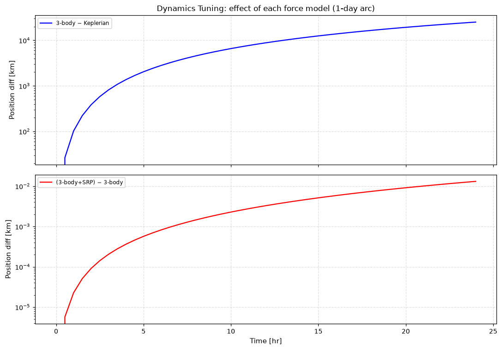
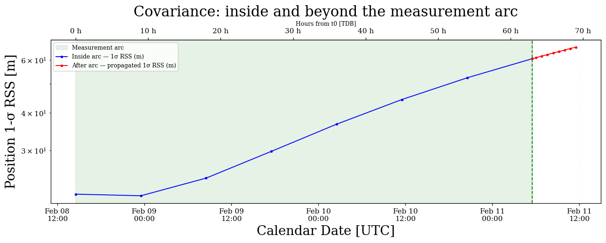

# Batch Orbit Determination — Complete Demo#
Scarabaeus OD Framework | Last revised 2026
What this notebook covers#
This notebook is a self-contained, verbose walkthrough of batch orbit determination (OD) using the Scarabaeus framework. Every concept is explained in detail so that a reader unfamiliar with the specific Scarabaeus API can follow along.
Topics#
# |
Topic |
|---|---|
1 |
Spacecraft model definition |
2 |
Dynamics model catalogue — all available force models |
3 |
Dynamics tuning — fidelity vs. cost trade-offs |
4 |
True trajectory simulation |
5 |
Measurement generation — Range, Range-Rate |
6 |
Reference (perturbed) trajectory |
7 |
Batch filter — Least-Squares Batch (LSB) |
8 |
Batch filter — SRIF Batch (SRIFB) + static parameter estimation (η_SRP) |
9 |
Stochastic acceleration — Piecewise Gauss-Markov (PFOGM) batch OD |
10 |
Measurement editing — lasso filter |
11 |
Saving the OD solution |
How to run#
Run cells top-to-bottom from the project root directory (scarabaeus/). The first code cell will navigate there automatically if you opened the notebook from tutorials/.
0. Imports and Setup#
We begin by importing Scarabaeus and the standard scientific stack, then establishing the working directory, loading SPICE kernels, and defining the unit/frame system.
Units#
Scarabaeus uses a dimensional unit system. scb.Units.get_units() returns unit objects that can be composed with *, /, and ** operators. Every numerical quantity is wrapped in ArrayWUnits so that unit consistency is enforced throughout the computation.
Frames#
Reference frames are managed via SPICE. J2000 is the standard inertial frame used for heliocentric OD.
SPICE kernels#
The meta-kernel locked_generic.tm loads planet ephemerides (DE440), leap-seconds, planetary constants, and Earth ground-station SPKs (DSS-14, DSS-63, etc.).
[1]:
import os, sys
import numpy as np
import numpy.random as rnd
import matplotlib.pyplot as plt
from pathlib import Path
import scarabaeus as scb
import supplementary as supp
# ── tutorial data and output paths ───────────────────────────────
data = supp.load_data()
tut_result_path = Path.cwd() / 'tutorial_results/meas_gen/radiometric'
tut_kernels_path = Path(data.mk.path).parent.parent / 'scenario'
tut_result_path.mkdir(parents=True, exist_ok=True)
tut_kernels_path.mkdir(parents=True, exist_ok=True)
# ── units ────────────────────────────────────────────────────────
kg, km, sec = scb.Units.get_units(['kg', 'km', 'sec'])
# ── frames ───────────────────────────────────────────────────────
J2000, ITRF93, ECLIPJ2000, IAUEARTH = scb.Frame.generate_common_frames()
frame = J2000
# ── SPICE kernels ─────────────────────────────────────────────────
scb.SpiceManager.clear_kernels()
scb.SpiceManager.load_kernel_from_mkfile(data.mk.path)
print("Kernels loaded.")
SCB supplementary data up to date.
Kernels loaded.
Enhanced Plotting Helpers#
The cells below add calendar-date x-axis versions of the plots above, plus new visualization types: pre/post residual comparisons, state errors with ±3σ covariance bounds, covariance evolution, and corner covariance plots.
Helper functions:
et2dt(et_arr)— converts SPICE ET (seconds) to Pythondatetimeobjectsfmt_cal(ax)— appliesAutoDateLocator + DateFormatterfor a clean calendar x-axisadd_hrs_axis(ax)— adds a secondary top x-axis in hours from t0resid_from_filter(flt, ds)— extracts(t_pre, r_pre, t_post, r_post)arrayscorner_cov(P, labels)— lower-triangle corner plot with RdBu_r correlation colouring
[2]:
from datetime import datetime, timedelta
import matplotlib.dates as mdates
import matplotlib.ticker as mticker
from matplotlib import cm
from matplotlib.colors import Normalize
plt.rcParams.update({
'font.size': 10, 'axes.titlesize': 11, 'axes.labelsize': 10,
'xtick.labelsize': 9, 'ytick.labelsize': 9, 'legend.fontsize': 8,
'figure.dpi': 110, 'axes.grid': True, 'grid.alpha': 0.35, 'grid.linestyle': '--',
})
CMAP = cm.tab10
COLORS = [CMAP(i / 10) for i in range(10)]
# reference epoch for the hours-from-t0 secondary axis
t0_et = None # set after epoch_array is defined (run spacecraft/epoch setup cell first)
def et2dt(et_arr):
"""Convert SPICE ET seconds (TDB from J2000) to list of datetime objects."""
_J2000 = datetime(2000, 1, 1, 12, 0, 0)
return [_J2000 + timedelta(seconds=float(t)) for t in np.atleast_1d(et_arr)]
def fmt_cal(ax):
"""Apply calendar-date tick formatting to a matplotlib axis."""
ax.xaxis.set_major_locator(mdates.AutoDateLocator(minticks=4, maxticks=9))
ax.xaxis.set_major_formatter(mdates.DateFormatter("%b %d\n%H:%M"))
def add_hrs_axis(ax, t0=None):
"""Add a secondary top x-axis showing hours from t0."""
t0 = t0 if t0 is not None else t0_et
from matplotlib.dates import date2num
t0_num = date2num(et2dt([t0])[0])
ax2 = ax.secondary_xaxis(
"top",
functions=(lambda x: (x - t0_num) * 24, lambda x: x / 24 + t0_num),
)
ax2.set_xlabel("Hours from t0 [TDB]", fontsize=8)
ax2.xaxis.set_major_formatter(mticker.FormatStrFormatter("%.0f h"))
return ax2
def resid_from_filter(flt_obj, ds_name, iteration=-1):
"""Return (t_pre, r_pre, t_post, r_post) numpy arrays for a dataset name.
iteration : int
Which iteration's pre-fit residuals to return.
0 → first iteration (raw O-C against initial reference).
-1 → last iteration (default, same as the converged solution).
Post-fit residuals always come from the final (converged) iteration.
"""
# Pre-fits: choose iteration
if (iteration == 0
and hasattr(flt_obj, '_solution_history')
and flt_obj._solution_history):
sol0 = flt_obj._solution_history[0]
pre = (sol0.prefits or {}).get(ds_name, [])
else:
pre = flt_obj.prefit_residuals.get(ds_name, [])
post = flt_obj.postfit_residuals.get(ds_name, [])
# Times from the measurement data (unchanged across iterations)
t_ds = np.array([])
for ds in flt_obj.measurement_data.datasets:
if ds.set_name == ds_name:
t_ds = np.array(ds.data["t2"])
break
t_pre = t_ds[:len(pre)] if len(pre) else np.array([])
r_pre = np.array([d[0] for d in pre]) if pre else np.array([])
t_post = t_ds[:len(post)] if len(post) else np.array([])
r_post = np.array([d[0] for d in post]) if post else np.array([])
return t_pre, r_pre, t_post, r_post
def corner_cov(P, labels, title="Covariance Corner Plot", figsize=(10, 9)):
"""
Corner plot from a covariance matrix.
Diagonal: 1D Gaussian marginal (dark-shaded ±1σ region).
Lower triangle: 2D confidence ellipses at 1σ / 2σ / 3σ (chi2, 2 dof).
Upper triangle: hidden.
"""
from matplotlib.patches import Ellipse
# sqrt(chi2.ppf(conf, df=2)) for 1σ / 2σ / 3σ 2D confidence
SCALES = [1.5150, 2.4477, 3.4395]
ALPHAS = [0.55, 0.30, 0.15 ]
COL, EDG = 'steelblue', 'navy'
n = P.shape[0]
sig = np.sqrt(np.diag(P))
fig, axes = plt.subplots(n, n, figsize=figsize,
gridspec_kw={'hspace': 0.05, 'wspace': 0.05})
if n == 1:
axes = np.array([[axes]])
fig.suptitle(title, fontsize=11, fontweight='bold')
for i in range(n):
for j in range(n):
ax = axes[i, j]
ax.tick_params(labelsize=5)
if i == j:
# ── diagonal: 1D Gaussian marginal ──────────────────────
s = sig[i]
lim = 3.8 * s
x = np.linspace(-lim, lim, 300)
y = np.exp(-0.5 * (x / s) ** 2)
ax.plot(x, y, color=COL, lw=1.5)
ax.fill_between(x, y, alpha=0.18, color=COL)
ax.fill_between(x[np.abs(x) <= s], y[np.abs(x) <= s],
alpha=0.45, color=COL) # shade ±1σ
ax.axvline(0, color='k', lw=0.5, ls='--')
ax.set_xlim(-lim, lim)
ax.set_ylim(0, 1.30)
ax.set_yticks([])
ax.set_xticks([-2*s, 0, 2*s])
ax.text(0.97, 0.97, f'1σ={s:.2e}',
transform=ax.transAxes, fontsize=6,
ha='right', va='top', color=EDG, fontweight='bold')
ax.set_title(labels[i], fontsize=7, pad=2)
if i < n - 1:
ax.set_xticklabels([])
elif i > j:
# ── lower triangle: 2D confidence ellipses ───────────────
P2 = np.array([[P[j,j], P[j,i]], [P[i,j], P[i,i]]])
ev, evec = np.linalg.eigh(P2)
ev = np.maximum(ev, 0.0)
angle = np.degrees(np.arctan2(evec[1, 1], evec[0, 1]))
ax.axhline(0, color='k', lw=0.4, ls='--', alpha=0.4)
ax.axvline(0, color='k', lw=0.4, ls='--', alpha=0.4)
for scale, alpha in zip(SCALES, ALPHAS):
ax.add_patch(Ellipse(
xy=(0, 0),
width =2 * scale * np.sqrt(ev[1]),
height=2 * scale * np.sqrt(ev[0]),
angle =angle,
facecolor=COL, edgecolor=EDG,
linewidth=0.8, alpha=alpha,
))
rho = P[i, j] / (sig[i] * sig[j])
ax.text(0.05, 0.97, f'ρ={rho:+.2f}',
transform=ax.transAxes, fontsize=6.5,
color=EDG, va='top', fontweight='bold')
ax.set_xlim(-3.8*sig[j], 3.8*sig[j])
ax.set_ylim(-3.8*sig[i], 3.8*sig[i])
ax.set_xticks([-2*sig[j], 0, 2*sig[j]])
ax.set_yticks([-2*sig[i], 0, 2*sig[i]])
if i < n - 1:
ax.set_xticklabels([])
if j > 0:
ax.set_yticklabels([])
if j == 0:
ax.set_ylabel(labels[i], fontsize=7, labelpad=2)
if i == n - 1:
ax.set_xlabel(labels[j], fontsize=7, labelpad=2)
else:
ax.set_visible(False)
plt.tight_layout()
return fig
print("Plotting helpers ready. (t0 will be set after epoch_array is defined)")
Plotting helpers ready. (t0 will be set after epoch_array is defined)
1. Spacecraft Model#
A Spacecraft object encodes the physical properties of the vehicle:
Property |
Description |
|---|---|
|
Human-readable label (also used as SPICE body name) |
|
NAIF integer ID (negative integers are spacecraft) |
|
Total wet mass [kg] |
|
Cross-sectional area for SRP [km²] |
|
Reflectivity coefficient C_r (dimensionless) |
|
Optional: N-plate SRP model for attitude-dependent SRP |
For the “truth” simulation we define Orbiter and for each filter iteration we create a separate spacecraft object with a slightly different SPICE ID, so that SPICE kernel writes for the reference trajectory do not clash.
[3]:
# ── physical properties ──────────────────────────────────────────
dry_mass = scb.ArrayWUnits(1500.0, kg)
fuel_mass = scb.ArrayWUnits(500.0, kg)
area = scb.ArrayWUnits(1e-6, km**2) # ~10 m²
cr = scb.ArrayWUnits(1.5, None) # reflectivity (dimensionless)
# ── truth spacecraft ─────────────────────────────────────────────
Orbiter = scb.Spacecraft(
name = 'Orbiter_True',
spice_id = -1000,
tot_mass = dry_mass + fuel_mass,
area = area,
ref_coeff= cr,
)
# ── gravitational origin ─────────────────────────────────────────
# Heliocentric orbit: Sun is the primary attracting body.
origin = scb.CelestialBody.from_constants('SUN')
# ── time window ──────────────────────────────────────────────────
# 3-day tracking arc with 30-min timesteps (good balance of coverage vs. cost)
time_0 = scb.SpiceManager.jd2et(2461809.72995654 + 1/3) # start JD → ET
time_f = scb.SpiceManager.jd2et(2461809.72995654 + 3) # end JD → ET
dt_step = 30 * 60 # 30 minutes [s]
epoch_array = scb.EpochArray(np.arange(time_0, time_f, dt_step), sys='TDB')
epoch_0 = epoch_array[0]
print(f"Arc start : {scb.SpiceManager.et2utc(float(epoch_array[0].times.values))} UTC")
print(f"Arc end : {scb.SpiceManager.et2utc(float(epoch_array[-1].times.values))} UTC")
print(f"N epochs : {len(epoch_array)}")
# ── initial state (heliocentric J2000) ────────────────────────────
# Near-Earth heliocentric orbit (position ~1 AU from Sun)
pos_0 = scb.ArrayWFrame(
np.array([-1.1123095885148e+08, 8.9094345479316e+07, 3.8656500948069e+07]), km, frame)
vel_0 = scb.ArrayWFrame(
np.array([-20.6936999825159, -16.7800270812616, -6.6437327193572]), km/sec, frame)
print(f"\nInitial position magnitude : {np.linalg.norm(pos_0.quantity.values):.3e} km")
print(f"Initial velocity magnitude : {np.linalg.norm(vel_0.quantity.values):.6f} km/s")
t0_et = float(epoch_array[0].times.values) # used by plotting helpers
Arc start : 2028-02-08T13:31:08.245053 UTC
Arc end : 2028-02-11T05:31:08.244991 UTC
N epochs : 129
Initial position magnitude : 1.477e+08 km
Initial velocity magnitude : 27.457926 km/s
2. Dynamics Models Catalogue#
Scarabaeus provides a modular force model system through ForceModelTranslation. You turn on each perturbation with keyword flags. This section documents every available option.
2.1 Point Mass Gravity (Keplerian)#
The simplest model: the spacecraft is attracted only by the central body (Sun in our case). No keyword needed — this is always included.
fm = scb.ForceModelTranslation(primary_body=sc)
When to use: quick propagation checks, very short arcs, or when perturbations are negligible.
2.2 Third-Body Gravity#
Gravitational pull from other solar-system bodies (planets, Moon, etc.). Pass a list of SPICE body names.
fm = scb.ForceModelTranslation(primary_body=sc,
third_bodies=['EARTH', 'JUPITER BARYCENTER', ...])
Effect: at 1 AU from the Sun, Earth and Jupiter perturbations are on the order of 10⁻⁶ km/s² over a 3-day arc — significant for precision OD.
2.3 Cannonball Solar Radiation Pressure (SRP)#
Isotropic SRP model. Uses area and ref_coeff from the Spacecraft object. The SRP scale factor η_SRP can be estimated as a static parameter in the OD state.
fm = scb.ForceModelTranslation(primary_body=sc, cannonball_SRP=True)
When to use: missions without attitude data, or as a first-order SRP estimate.
2.4 N-Plate SRP#
Attitude-dependent SRP computed face-by-face from a plate configuration file. Requires a CK (attitude) kernel and an n-plate config JSON.
fm = scb.ForceModelTranslation(primary_body=sc, nplate_SRP=True)
When to use: high-fidelity SRP for spacecraft with known CK.
2.5 Spherical Harmonics Gravity#
Non-spherical gravity field from a Stokes coefficients file. Used for close-proximity or planetary orbits.
fm = scb.ForceModelTranslation(
primary_body = sc,
sph_harm = True,
sph_harm_order = 8, # degree & order
sph_harm_cs_file = 'data/dynamic_setup/sph_coefficients/Earth_100.json',
sph_harm_body = scb.EARTH,
sph_harm_norm_flag = True, # normalized coefficients
)
When to use: Earth orbits, asteroid proximity operations.
2.7 First-Order Gauss-Markov (FOGM) Stochastic Acceleration#
An exponentially correlated random acceleration — ideal for modelling uncharacterised non-gravitational forces.
fm = scb.ForceModelTranslation(
primary_body = sc,
first_order_gauss_markov = True,
fogm_beta = np.array([1/3600, 1/3600, 1/3600]), # [1/s] correlation = 1 hr
)
# State must include the FOGM acceleration as a *dynamic* parameter:
# .param('a_fogm', sc, a0_vec3, dynamics='dynamic')
2.8 Piecewise First-Order Gauss-Markov (PFOGM)#
Like FOGM but the stochastic acceleration is defined within each batch interval. Useful for batch OD where you want piece-wise unmodelled force estimation.
batch_length = 6 * 3600 # 6-hour batches
n_batches = int(np.ceil((time_f - time_0) / batch_length))
fm = scb.ForceModelTranslation(
primary_body = sc,
piecewise_first_order_gauss_markov = True,
pfogm_batch_length = batch_length,
pfogm_n_batches = n_batches,
pfogm_beta = np.array([1/3600, 1/3600, 1/3600]),
t0 = epoch_array[0],
)
# State must include: .param('a_pfogm', sc, a0_vec_3n, dynamics='dynamic')
# where a0_vec_3n has 3 * n_batches elements.
3. Dynamics Tuning#
Dynamics tuning means choosing which force models to include and verifying their fidelity against an independent truth (SPICE ephemerides or higher-fidelity propagation).
Workflow#
Propagate the trajectory using both model A (low fidelity) and model B (high fidelity).
Compute the trajectory differences over the estimation arc.
Compare these differences against the expected measurement noise or OD accuracy level.
If the discrepancies are comparable to or larger than the observable noise floor, model A is likely insufficient.
Process noise tuning#
When using sequential filters (discussed in the next notebook), the continuous-time process noise covariance Q (or equivalently its power spectral density, PSD) must be carefully tuned:
Too large Q → the filter becomes noisy, over-fits the measurements, and produces inflated covariances.
Too small Q → the filter becomes overconfident, potentially inconsistent, and may diverge as unmodelled accelerations accumulate over time.
[4]:
# ── compare Keplerian vs 3-body vs full model ────────────────────
third_bodies_all = ['MERCURY', 'VENUS', 'EARTH', 'MARS', 'JUPITER BARYCENTER']
def propagate_model(sc_body, pos, vel, epoch_arr, **fm_kwargs):
state_def = scb.StateDefinition.from_components([
('position', 3, 'estimated', 'dynamic', sc_body, pos),
('velocity', 3, 'estimated', 'dynamic', sc_body, vel),
])
sv = scb.StateArray(epoch=epoch_arr[0], origin=origin, state=state_def)
fm = scb.ForceModelTranslation(primary_body=sc_body, **fm_kwargs)
prop = scb.Propagator(primary_body=sc_body, state_vector=sv,
tspan=epoch_arr, force_models=fm)
prop.propagate()
pos_arr = prop.propagated_state_array.values_array[('position', sc_body.spice_id)][0]
return pos_arr # shape (N, 3)
# Use a shorter window for tuning comparison (faster)
tune_end = scb.SpiceManager.jd2et(2461809.72995654 + 1/3 + 1) # 1-day arc
epoch_tune = scb.EpochArray(np.arange(time_0, tune_end, dt_step), sys='TDB')
# Keplerian helper SC (unique SPICE ID to avoid conflicts)
sc_kep = scb.Spacecraft('tune_kep', -1090, dry_mass+fuel_mass, area, cr)
sc_3b = scb.Spacecraft('tune_3b', -1091, dry_mass+fuel_mass, area, cr)
sc_full = scb.Spacecraft('tune_full', -1092, dry_mass+fuel_mass, area, cr)
print("Propagating Keplerian ...")
pos_kep = propagate_model(sc_kep, pos_0, vel_0, epoch_tune)
print("Propagating 3-body ...")
pos_3b = propagate_model(sc_3b, pos_0, vel_0, epoch_tune,
third_bodies=['EARTH', 'VENUS'])
print("Propagating 3-body + cannonball SRP ...")
pos_full = propagate_model(sc_full, pos_0, vel_0, epoch_tune,
third_bodies=['EARTH', 'VENUS'], cannonball_SRP=True)
t_hr = (epoch_tune.times.values - epoch_tune.times.values[0]) / 3600
err_3b = np.linalg.norm(pos_3b - pos_kep, axis=1) # 3-body vs Keplerian
err_full = np.linalg.norm(pos_full - pos_3b, axis=1) # SRP effect on top of 3-body
fig, axes = plt.subplots(2, 1, figsize=(10, 7), sharex=True)
axes[0].semilogy(t_hr, err_3b, 'b-', lw=1.5, label='3-body − Keplerian')
axes[0].set_ylabel('Position diff [km]')
axes[0].set_title('Dynamics Tuning: effect of each force model (1-day arc)')
axes[0].legend(); axes[0].grid(True, alpha=0.4)
axes[1].semilogy(t_hr, err_full, 'r-', lw=1.5, label='(3-body+SRP) − 3-body')
axes[1].set_ylabel('Position diff [km]')
axes[1].set_xlabel('Time [hr]')
axes[1].legend(); axes[1].grid(True, alpha=0.4)
plt.tight_layout()
plt.show()
print(f"\nMax position difference (3-body vs Keplerian) : {err_3b.max():.4f} km")
print(f"Max position difference (SRP effect on 3-body) : {err_full.max():.6f} km")
Propagating Keplerian ...
================================================================================
Starting propagation...
================================================================================
Integrating: 100%|███████████████████████████████████████████████| 86400.00/86400.00 s [00:00<00:00]
=================== DOP853 integration complete. ==================
Propagation complete.
Propagating 3-body ...
================================================================================
Starting propagation...
================================================================================
Integrating: 100%|███████████████████████████████████████████████| 86400.00/86400.00 s [00:00<00:00]
=================== DOP853 integration complete. ==================
Propagation complete.
Propagating 3-body + cannonball SRP ...
================================================================================
Starting propagation...
================================================================================
Integrating: 100%|███████████████████████████████████████████████| 86400.00/86400.00 s [00:00<00:00]
=================== DOP853 integration complete. ==================
Propagation complete.

Max position difference (3-body vs Keplerian) : 25160.5394 km
Max position difference (SRP effect on 3-body) : 0.013121 km
4. True Trajectory Generation#
We propagate the true trajectory using the highest-fidelity force model available. This trajectory is saved as a SPICE SPK kernel so it can be queried later for ground truth comparisons and measurement generation.
The Trajectory object wraps the propagated state array and provides:
write_to_spk(path)— write binary SPK kernelstart_epoch,end_epoch— arc boundaries
In real operations the “truth” is unknown; here we simulate it to validate the OD solution.
[5]:
# ── force model for truth propagation ────────────────────────────
# Use 3-body gravity + cannonball SRP as the "truth" dynamics.
# The OD filter will use the same model (ideal case) — in Section 8 we perturb η_SRP.
fm_truth = scb.ForceModelTranslation(
primary_body = Orbiter,
third_bodies = ['MERCURY', 'VENUS', 'EARTH'],
cannonball_SRP= True,
)
state_0_truth = scb.StateDefinition.from_components([
('position', 3, 'estimated', 'dynamic', Orbiter, pos_0),
('velocity', 3, 'estimated', 'dynamic', Orbiter, vel_0),
])
sv_truth = scb.StateArray(epoch=epoch_0, origin=origin, state=state_0_truth)
prop_truth = scb.Propagator(
primary_body = Orbiter,
state_vector = sv_truth,
tspan = epoch_array,
force_models = fm_truth,
)
print("Propagating true trajectory ...")
prop_truth.propagate()
state_prop_truth = prop_truth.propagated_state_array
# ── save as SPICE SPK ─────────────────────────────────────────────
true_spk = str(tut_kernels_path / 'batch_orbiter_true.bsp')
if os.path.isfile(true_spk):
os.remove(true_spk)
orbiter_traj_true = scb.Trajectory(state_array=state_prop_truth)
orbiter_traj_true.write_to_spk(true_spk)
print(f"True trajectory saved to: {true_spk}")
Propagating true trajectory ...
================================================================================
Starting propagation...
================================================================================
Integrating: 100%|█████████████████████████████████████████████| 230400.00/230400.00 s [00:00<00:00]
=================== DOP853 integration complete. ==================
Propagation complete.
True trajectory saved to: /Users/zael5647/scarabaeus/docs/online_documentation/sphinx_files/_collections/tutorials/supplementary/supp_data/kernels/scenario/batch_orbiter_true.bsp
5. Measurement Generation#
Scarabaeus models all standard radiometric and optical navigation measurement types. This section shows how to set up each model, simulate noisy observations on the true trajectory, save them to JSON files, and reload them for OD use. For real mission measurements, refer to the OSIRIS–REx notebooks.
Measurement generation workflow#
Spacecraft trajectory (true SPK)
│
▼
write_observed_measurements(target, epoch_array, noisy=True, file_name=stem)
│ adds Gaussian noise with the specified sigma
▼
JSON file in data/measurements/radiometric/
│
▼
observed_measurements(file_name, meas_name, units) → (epoch_array, times_sec, values)
Available measurement types#
Class |
Observable |
Typical sigma |
|---|---|---|
|
Two-way range [km] |
1 m (1e-3 km) |
|
Two-way range-rate [km/s] |
0.1 mm/s (1e-4 km/s) |
|
RA/DEC [rad] |
~10 μrad |
|
Pixel centroid [pixel] |
0.5–2 pixel |
|
Sequential ranging (RU) |
see DSN calibration |
|
Doppler (DSN processing) |
see DSN calibration |
[6]:
# ─────────────────────────────────────────────────────────────────
# 5.1 Ground-station sensors
# ─────────────────────────────────────────────────────────────────
# GroundStation wraps a SPICE-body ground station.
# DSS-14 (Goldstone, CA) and DSS-63 (Madrid) are built into the generic kernel.
GS1 = scb.GroundStation('DSS-14')
GS2 = scb.GroundStation('DSS-63')
# ─────────────────────────────────────────────────────────────────
# 5.2 Measurement noise levels
# ─────────────────────────────────────────────────────────────────
range_sigma = scb.ArrayWUnits(1e-3, km) # 1 m two-way range
rangerate_sigma = scb.ArrayWUnits(1e-7, km/sec) # 0.1 mm/s range-rate
# ─────────────────────────────────────────────────────────────────
# 5.3 Instantiate all measurement models
# ─────────────────────────────────────────────────────────────────
# ── Radiometric: Range ───────────────────────────────────────────
Range_GS1 = scb.RangeIdeal('GS1 Range', GS1, sigma=range_sigma)
Range_GS2 = scb.RangeIdeal('GS2 Range', GS2, sigma=range_sigma)
# ── Radiometric: Range-Rate ──────────────────────────────────────
RangeRate_GS1 = scb.RangeRateIdeal('GS1 RangeRate', GS1, sigma=rangerate_sigma)
RangeRate_GS2 = scb.RangeRateIdeal('GS2 RangeRate', GS2, sigma=rangerate_sigma)
print("All measurement models instantiated.")
print(f" Range_GS1 : {Range_GS1.name}")
print(f" RangeRate_GS1 : {RangeRate_GS1.name}")
All measurement models instantiated.
Range_GS1 : GS1 Range
RangeRate_GS1 : GS1 RangeRate
[7]:
# ─────────────────────────────────────────────────────────────────
# 5.4 Generate and save observed (noisy) measurements
# ─────────────────────────────────────────────────────────────────
# check_visibility=True filters out epochs where the spacecraft
# is below the ground station elevation mask (default 10°), producing
# realistic contact windows instead of continuous coverage.
for model, stem in [
(Range_GS1, 'batch_range_GS1'),
(RangeRate_GS1, 'batch_rangerate_GS1'),
(Range_GS2, 'batch_range_GS2'),
(RangeRate_GS2, 'batch_rangerate_GS2'),
]:
model.write_observed_measurements(
target = Orbiter,
epoch_array = epoch_array,
noisy = True,
file_name = stem,
check_visibility = True,
elevation_mask = 10.0,
folder_path_override = str(tut_result_path),
)
print(f"Written: {tut_result_path / stem}.json")
# ─────────────────────────────────────────────────────────────────
# 5.5 Load back the primary measurements (GS1 Range + RangeRate)
# ─────────────────────────────────────────────────────────────────
obs_range_GS1 = Range_GS1.observed_measurements(
file_name = str(tut_result_path / 'batch_range_GS1.json'),
meas_name = 'meas_ideal',
units = km,
)
obs_rr_GS1 = RangeRate_GS1.observed_measurements(
file_name = str(tut_result_path / 'batch_rangerate_GS1.json'),
meas_name = 'meas_ideal',
units = km/sec,
)
obs_range_GS2 = Range_GS2.observed_measurements(
file_name = str(tut_result_path / 'batch_range_GS2.json'),
meas_name = 'meas_ideal',
units = km,
)
obs_rr_GS2 = RangeRate_GS2.observed_measurements(
file_name = str(tut_result_path / 'batch_rangerate_GS2.json'),
meas_name = 'meas_ideal',
units = km/sec,
)
# Tuple layout: (epoch_array, times_sec, values_array)
print(f"\nGS1 Range — {len(obs_range_GS1[2].quantity.values)} measurements")
print(f"GS1 RangeRate — {len(obs_rr_GS1[2].quantity.values)} measurements")
print(f"GS2 Range — {len(obs_range_GS2[2].quantity.values)} measurements")
print(f"GS2 RangeRate — {len(obs_rr_GS2[2].quantity.values)} measurements")
Written: /Users/zael5647/scarabaeus/docs/online_documentation/sphinx_files/_collections/tutorials/tutorial_results/meas_gen/radiometric/batch_range_GS1.json
Written: /Users/zael5647/scarabaeus/docs/online_documentation/sphinx_files/_collections/tutorials/tutorial_results/meas_gen/radiometric/batch_rangerate_GS1.json
Written: /Users/zael5647/scarabaeus/docs/online_documentation/sphinx_files/_collections/tutorials/tutorial_results/meas_gen/radiometric/batch_range_GS2.json
Written: /Users/zael5647/scarabaeus/docs/online_documentation/sphinx_files/_collections/tutorials/tutorial_results/meas_gen/radiometric/batch_rangerate_GS2.json
GS1 Range — 69 measurements
GS1 RangeRate — 69 measurements
GS2 Range — 82 measurements
GS2 RangeRate — 82 measurements
[8]:
# ─────────────────────────────────────────────────────────────────
# 5.6 Plot the simulated measurements
# ─────────────────────────────────────────────────────────────────
# Use the EpochArray (obs[0]) for absolute ET → calendar dates so all panels
# share the same time axis and contact windows appear as distinct clusters.
def meas_dts(obs_tuple):
"""Return datetime list from a measurement tuple's EpochArray."""
_J2000 = datetime(2000, 1, 1, 12, 0, 0)
et_vals = np.atleast_1d(obs_tuple[0].times.values).astype(float)
return [_J2000 + timedelta(seconds=float(t)) for t in et_vals]
dts_rng_GS1 = meas_dts(obs_range_GS1)
dts_rng_GS2 = meas_dts(obs_range_GS2)
dts_rr_GS1 = meas_dts(obs_rr_GS1)
dts_rr_GS2 = meas_dts(obs_rr_GS2)
fig, axes = plt.subplots(2, 2, figsize=(14, 8), sharey='row')
# Range GS1
axes[0,0].plot(dts_rng_GS1, obs_range_GS1[2].quantity.values, '.', ms=4, label='DSS-14 (GS1)')
axes[0,0].set_title('Two-Way Range — DSS-14'); axes[0,0].set_ylabel('Range [km]')
axes[0,0].legend(); fmt_cal(axes[0,0])
# Range GS2
axes[0,1].plot(dts_rng_GS2, obs_range_GS2[2].quantity.values, '.', ms=4, color='C1', label='DSS-63 (GS2)')
axes[0,1].set_title('Two-Way Range — DSS-63'); axes[0,1].set_ylabel('Range [km]')
axes[0,1].legend(); fmt_cal(axes[0,1])
# RangeRate GS1
axes[1,0].plot(dts_rr_GS1, obs_rr_GS1[2].quantity.values, '.', ms=4, label='DSS-14 (GS1)')
axes[1,0].set_title('Range-Rate — DSS-14'); axes[1,0].set_ylabel('Range-rate [km/s]')
axes[1,0].legend(); fmt_cal(axes[1,0])
# RangeRate GS2
axes[1,1].plot(dts_rr_GS2, obs_rr_GS2[2].quantity.values, '.', ms=4, color='C1', label='DSS-63 (GS2)')
axes[1,1].set_title('Range-Rate — DSS-63'); axes[1,1].set_ylabel('Range-rate [km/s]')
axes[1,1].legend(); fmt_cal(axes[1,1])
n_r1 = len(obs_range_GS1[2].quantity.values)
n_r2 = len(obs_range_GS2[2].quantity.values)
n_rr1 = len(obs_rr_GS1[2].quantity.values)
n_rr2 = len(obs_rr_GS2[2].quantity.values)
plt.suptitle(
f'Simulated Radiometric Measurements — Batch OD Demo\n'
f'(Range: {n_r1} GS1 + {n_r2} GS2 pts; Range-Rate: {n_rr1} GS1 + {n_rr2} GS2 pts)',
fontweight='bold', fontsize=11)
plt.tight_layout()
plt.show()

6. Reference Trajectory (Perturbed Initial Conditions)#
In real OD we do not know the true initial state; we start from a reference trajectory obtained from a previous solution or orbit determination arc, then apply the filter to correct it.
Here we simulate this by perturbing the true initial state:
Position: ±1 km error (typical for deep-space missions after several days without tracking)
Velocity: ±1 mm/s error
The filter’s job is to recover the deviation δx = x_true − x_ref at each measurement epoch.
Each filter iteration uses a new Spacecraft object (unique SPICE ID) so that its SPK kernel does not overwrite the truth or previous iteration’s kernel.
Covariance initialisation#
The initial covariance matrix P₀ encodes our uncertainty in the reference initial state. Rule of thumb: set the 1-σ values to roughly the size of the perturbation.
[9]:
# ── perturb initial state ─────────────────────────────────────────
delta_pos_km = np.array([1.0, 1.0, 1.0]) # 1 km position error in each axis
delta_vel_kms = np.array([1e-3, 1e-3, 1e-3]) # 1 mm/s velocity error in each axis
delta_pos = scb.ArrayWUnits(delta_pos_km, km)
delta_vel = scb.ArrayWUnits(delta_vel_kms, km/sec)
pos_ref = scb.ArrayWFrame(pos_0.quantity + delta_pos, frame)
vel_ref = scb.ArrayWFrame(vel_0.quantity + delta_vel, frame)
# ── reference spacecraft (iteration 1) ───────────────────────────
Orbiter_ref = scb.Spacecraft('Orbiter_Ref_it1', -1001,
dry_mass+fuel_mass, area, cr)
state_ref = scb.StateDefinition.from_components([
('position', 3, 'estimated', 'dynamic', Orbiter_ref, pos_ref),
('velocity', 3, 'estimated', 'dynamic', Orbiter_ref, vel_ref),
])
sv_ref = scb.StateArray(epoch=epoch_0, origin=origin, state=state_ref)
# ── propagate reference with same force model as truth ───────────
fm_ref = scb.ForceModelTranslation(
primary_body = Orbiter_ref,
third_bodies = ['MERCURY', 'VENUS', 'EARTH'],
cannonball_SRP = True,
)
prop_ref = scb.Propagator(
primary_body = Orbiter_ref,
state_vector = sv_ref,
tspan = epoch_array,
force_models = fm_ref,
)
# ── initial covariance P₀ ────────────────────────────────────────
# Set 1-σ to ~3× the perturbation (conservative initialisation)
pos_sig = scb.ArrayWUnits(3 * delta_pos_km[0], km)
vel_sig = scb.ArrayWUnits(3 * delta_vel_kms[0], km/sec)
state_cov = scb.CovarianceMatrix(
[pos_sig, pos_sig, pos_sig, vel_sig, vel_sig, vel_sig],
epoch_array[1],
from_list=True,
)
print("Reference trajectory and P₀ ready.")
print(f" Position 1-σ : {3*delta_pos_km[0]:.1f} km")
print(f" Velocity 1-σ : {3*delta_vel_kms[0]:.4f} km/s")
Reference trajectory and P₀ ready.
Position 1-σ : 3.0 km
Velocity 1-σ : 0.0030 km/s
7. Batch Filter: Least-Squares Batch (LSB)#
Theory#
The Least-Squares Batch (LSB) filter solves the normal equations
where H is the measurement sensitivity matrix, W = R⁻¹ is the measurement weight matrix, y are the pre-fit residuals, and P₀ is the initial state covariance (acts as a Tikhonov regulariser).
The solution is computed iteratively: after each batch solve, the reference trajectory is updated and the process repeats until
or until the maximum number of iterations is reached.
Measurement specification#
MeasurementSpec.many() or MeasurementSpec.from_dict() combine multiple measurement datasets into the single structure the filter expects.
FilterSettings#
FilterSettings gathers all configuration:
initial_covariance— P₀process_noise—ProcessNoiseSettings(batch filters: usually not used; sequential: SNC/DMC)output—OutputSettingsfor controlling what is saved
[10]:
# ── measurement list ────────────────────────────────────────────
meas_list_lsb = scb.MeasurementSpec.many(
scb.MeasurementSpec(model=Range_GS1, observed_meas=obs_range_GS1,
dataset_name='GS1 Range'),
scb.MeasurementSpec(model=RangeRate_GS1, observed_meas=obs_rr_GS1,
dataset_name='GS1 RangeRate'),
scb.MeasurementSpec(model=Range_GS2, observed_meas=obs_range_GS2,
dataset_name='GS2 Range'),
scb.MeasurementSpec(model=RangeRate_GS2, observed_meas=obs_rr_GS2,
dataset_name='GS2 RangeRate'),
)
# ── filter settings ──────────────────────────────────────────────
settings_lsb = scb.FilterSettings(
initial_covariance = state_cov,
output = scb.OutputSettings(
metadata = {'version': '1.0', 'filter': 'LSB', 'arc': '3-day'},
),
)
# ── instantiate LSB filter ───────────────────────────────────────
# LSB = Least-Squares Batch.
# traj_name: SPK filename for the reference trajectory of this iteration.
ref_spk_lsb = tut_kernels_path / 'batch_orbiter_ref_lsb.bsp'
if ref_spk_lsb.exists(): ref_spk_lsb.unlink()
lsb = scb.LSB(
propagator = prop_ref,
settings = settings_lsb,
measurements = meas_list_lsb,
traj_name = 'batch_orbiter_ref_lsb.bsp',
traj_dir = str(tut_kernels_path),
)
# ── run the batch solver ─────────────────────────────────────────
print("Running LSB batch filter ...")
solution_lsb, n_iters_lsb, converged_lsb = lsb.fit(
max_iterations = 10,
convergence_threshold = 1e-6,
verbose = True,
traj_name = 'batch_orbiter_ref.bsp',
traj_dir = str(tut_kernels_path),
)
print(f"\nConverged: {converged_lsb} after {n_iters_lsb} iteration(s)")
================================================================================
Starting propagation...
================================================================================
Integrating: 100%|█████████████████████████████████████████████| 230400.00/230400.00 s [00:00<00:00]
/Users/zael5647/scarabaeus/src/scarabaeus/environment/Trajectory.py:1580: UserWarning: No STM timestamps provided: falling back to trajectory epochs. Ensure STMs are aligned 1:1 with `self.epoch`.
warnings.warn(
=================== DOP853 integration complete. ==================
Propagation complete.
================================================================================
Generating computed measurements for the dataset "GS1 Range"
================================================================================
================================================================================
Generating _partials for the dataset "GS1 Range"
================================================================================
Generating _partials computed measurements...
Partials: 100%|████████████████████████████████████████████████████████████| 69/69 obs [00:00<00:00]
================================================================================
Generating computed measurements for the dataset "GS1 RangeRate"
================================================================================
================================================================================
Generating _partials for the dataset "GS1 RangeRate"
================================================================================
Generating _partials computed measurements...
Partials: 100%|████████████████████████████████████████████████████████████| 69/69 obs [00:00<00:00]
================================================================================
Generating computed measurements for the dataset "GS2 Range"
================================================================================
================================================================================
Generating _partials for the dataset "GS2 Range"
================================================================================
Generating _partials computed measurements...
Partials: 100%|████████████████████████████████████████████████████████████| 82/82 obs [00:00<00:00]
================================================================================
Generating computed measurements for the dataset "GS2 RangeRate"
================================================================================
================================================================================
Generating _partials for the dataset "GS2 RangeRate"
================================================================================
Generating _partials computed measurements...
Partials: 100%|████████████████████████████████████████████████████████████| 82/82 obs [00:00<00:00]
================================================================================
Initializing Least Squares Batch (LSB) filter...
================================================================================
Running LSB batch filter ...
================================================================================
STARTING ITERATIVE ORBIT DETERMINATION
================================================================================
Max iterations: 10
Convergence threshold: 1.00e-06
================================================================================
============================================================
ITERATION 1
============================================================
LS-Batch: measurements iteration initialization...
[ 886905137.43 TDB | 0.0%] ‖normal_vector‖ = 1.4783e+11
[ 886906937.43 TDB | 0.8%] ‖normal_vector‖ = 3.1858e+11
[ 886908737.43 TDB | 1.6%] ‖normal_vector‖ = 5.2074e+11
[ 886910537.43 TDB | 2.4%] ‖normal_vector‖ = 7.6279e+11
[ 886912337.43 TDB | 3.2%] ‖normal_vector‖ = 1.0533e+12
[ 886914137.43 TDB | 4.0%] ‖normal_vector‖ = 1.4008e+12
[ 886915937.43 TDB | 4.8%] ‖normal_vector‖ = 1.8139e+12
[ 886917737.43 TDB | 5.6%] ‖normal_vector‖ = 2.3014e+12
[ 886919537.43 TDB | 6.3%] ‖normal_vector‖ = 2.8720e+12
[ 886921337.43 TDB | 7.1%] ‖normal_vector‖ = 3.5344e+12
[ 886923137.43 TDB | 7.9%] ‖normal_vector‖ = 4.2977e+12
[ 886924937.43 TDB | 8.7%] ‖normal_vector‖ = 5.1706e+12
[ 886926737.43 TDB | 9.5%] ‖normal_vector‖ = 6.1622e+12
[ 886928537.43 TDB | 10.3%] ‖normal_vector‖ = 7.2814e+12
[ 886930337.43 TDB | 11.1%] ‖normal_vector‖ = 8.5372e+12
[ 886932137.43 TDB | 11.9%] ‖normal_vector‖ = 9.9386e+12
[ 886933937.43 TDB | 12.7%] ‖normal_vector‖ = 1.3014e+13
[ 886935737.43 TDB | 13.5%] ‖normal_vector‖ = 1.6413e+13
[ 886937537.43 TDB | 14.3%] ‖normal_vector‖ = 2.0153e+13
[ 886939337.43 TDB | 15.1%] ‖normal_vector‖ = 2.4252e+13
[ 886941137.43 TDB | 15.9%] ‖normal_vector‖ = 2.8729e+13
[ 886942937.43 TDB | 16.7%] ‖normal_vector‖ = 3.3602e+13
[ 886944737.43 TDB | 17.5%] ‖normal_vector‖ = 3.8889e+13
[ 886946537.43 TDB | 18.3%] ‖normal_vector‖ = 4.4608e+13
[ 886948337.43 TDB | 19.0%] ‖normal_vector‖ = 5.0777e+13
[ 886950137.43 TDB | 19.8%] ‖normal_vector‖ = 5.7416e+13
[ 886951937.43 TDB | 20.6%] ‖normal_vector‖ = 6.4541e+13
[ 886953737.43 TDB | 21.4%] ‖normal_vector‖ = 7.2170e+13
[ 886955537.43 TDB | 22.2%] ‖normal_vector‖ = 7.6233e+13
[ 886957337.43 TDB | 23.0%] ‖normal_vector‖ = 8.0570e+13
[ 886959137.43 TDB | 23.8%] ‖normal_vector‖ = 8.5190e+13
[ 886960937.43 TDB | 24.6%] ‖normal_vector‖ = 9.0104e+13
[ 886962737.43 TDB | 25.4%] ‖normal_vector‖ = 9.5320e+13
[ 886964537.43 TDB | 26.2%] ‖normal_vector‖ = 1.0085e+14
[ 886966337.43 TDB | 27.0%] ‖normal_vector‖ = 1.0669e+14
[ 886968137.43 TDB | 27.8%] ‖normal_vector‖ = 1.1287e+14
[ 886969937.43 TDB | 28.6%] ‖normal_vector‖ = 1.1938e+14
[ 886971737.43 TDB | 29.4%] ‖normal_vector‖ = 1.2624e+14
[ 886973537.43 TDB | 30.2%] ‖normal_vector‖ = 1.3346e+14
[ 886975337.43 TDB | 31.0%] ‖normal_vector‖ = 1.4103e+14
[ 886977137.43 TDB | 31.7%] ‖normal_vector‖ = 1.4898e+14
[ 886978937.43 TDB | 32.5%] ‖normal_vector‖ = 1.5730e+14
[ 886980737.43 TDB | 33.3%] ‖normal_vector‖ = 1.6602e+14
[ 886993337.43 TDB | 38.9%] ‖normal_vector‖ = 1.7754e+14
[ 886995137.43 TDB | 39.7%] ‖normal_vector‖ = 1.8952e+14
[ 886996937.43 TDB | 40.5%] ‖normal_vector‖ = 2.0198e+14
[ 886998737.43 TDB | 41.3%] ‖normal_vector‖ = 2.1493e+14
[ 887000537.43 TDB | 42.1%] ‖normal_vector‖ = 2.2837e+14
[ 887002337.43 TDB | 42.9%] ‖normal_vector‖ = 2.4232e+14
[ 887004137.43 TDB | 43.7%] ‖normal_vector‖ = 2.5679e+14
[ 887005937.43 TDB | 44.4%] ‖normal_vector‖ = 2.7179e+14
[ 887007737.43 TDB | 45.2%] ‖normal_vector‖ = 2.8733e+14
[ 887009537.43 TDB | 46.0%] ‖normal_vector‖ = 3.0342e+14
[ 887011337.43 TDB | 46.8%] ‖normal_vector‖ = 3.2008e+14
[ 887013137.43 TDB | 47.6%] ‖normal_vector‖ = 3.3730e+14
[ 887014937.43 TDB | 48.4%] ‖normal_vector‖ = 3.5512e+14
[ 887016737.43 TDB | 49.2%] ‖normal_vector‖ = 3.7352e+14
[ 887018537.43 TDB | 50.0%] ‖normal_vector‖ = 3.9253e+14
[ 887020337.43 TDB | 50.8%] ‖normal_vector‖ = 4.3157e+14
[ 887022137.43 TDB | 51.6%] ‖normal_vector‖ = 4.7185e+14
[ 887023937.43 TDB | 52.4%] ‖normal_vector‖ = 5.1338e+14
[ 887025737.43 TDB | 53.2%] ‖normal_vector‖ = 5.5617e+14
[ 887027537.43 TDB | 54.0%] ‖normal_vector‖ = 6.0026e+14
[ 887029337.43 TDB | 54.8%] ‖normal_vector‖ = 6.4565e+14
[ 887031137.43 TDB | 55.6%] ‖normal_vector‖ = 6.9238e+14
[ 887032937.43 TDB | 56.3%] ‖normal_vector‖ = 7.4045e+14
[ 887034737.43 TDB | 57.1%] ‖normal_vector‖ = 7.8990e+14
[ 887036537.43 TDB | 57.9%] ‖normal_vector‖ = 8.4073e+14
[ 887038337.43 TDB | 58.7%] ‖normal_vector‖ = 8.9296e+14
[ 887040137.43 TDB | 59.5%] ‖normal_vector‖ = 9.4662e+14
[ 887041937.43 TDB | 60.3%] ‖normal_vector‖ = 9.7412e+14
[ 887043737.43 TDB | 61.1%] ‖normal_vector‖ = 1.0024e+15
[ 887045537.43 TDB | 61.9%] ‖normal_vector‖ = 1.0313e+15
[ 887047337.43 TDB | 62.7%] ‖normal_vector‖ = 1.0611e+15
[ 887049137.43 TDB | 63.5%] ‖normal_vector‖ = 1.0916e+15
[ 887050937.43 TDB | 64.3%] ‖normal_vector‖ = 1.1229e+15
[ 887052737.43 TDB | 65.1%] ‖normal_vector‖ = 1.1550e+15
[ 887054537.43 TDB | 65.9%] ‖normal_vector‖ = 1.1879e+15
[ 887056337.43 TDB | 66.7%] ‖normal_vector‖ = 1.2216e+15
[ 887058137.43 TDB | 67.5%] ‖normal_vector‖ = 1.2561e+15
[ 887059937.43 TDB | 68.3%] ‖normal_vector‖ = 1.2915e+15
[ 887061737.43 TDB | 69.0%] ‖normal_vector‖ = 1.3276e+15
[ 887063537.43 TDB | 69.8%] ‖normal_vector‖ = 1.3646e+15
[ 887065337.43 TDB | 70.6%] ‖normal_vector‖ = 1.4024e+15
[ 887067137.43 TDB | 71.4%] ‖normal_vector‖ = 1.4411e+15
[ 887079737.43 TDB | 77.0%] ‖normal_vector‖ = 1.4856e+15
[ 887081537.43 TDB | 77.8%] ‖normal_vector‖ = 1.5310e+15
[ 887083337.43 TDB | 78.6%] ‖normal_vector‖ = 1.5774e+15
[ 887085137.43 TDB | 79.4%] ‖normal_vector‖ = 1.6247e+15
[ 887086937.43 TDB | 80.2%] ‖normal_vector‖ = 1.6730e+15
[ 887088737.43 TDB | 81.0%] ‖normal_vector‖ = 1.7222e+15
[ 887090537.43 TDB | 81.7%] ‖normal_vector‖ = 1.7725e+15
[ 887092337.43 TDB | 82.5%] ‖normal_vector‖ = 1.8238e+15
[ 887094137.43 TDB | 83.3%] ‖normal_vector‖ = 1.8761e+15
[ 887095937.43 TDB | 84.1%] ‖normal_vector‖ = 1.9294e+15
[ 887097737.43 TDB | 84.9%] ‖normal_vector‖ = 1.9838e+15
[ 887099537.43 TDB | 85.7%] ‖normal_vector‖ = 2.0392e+15
[ 887101337.43 TDB | 86.5%] ‖normal_vector‖ = 2.0957e+15
[ 887103137.43 TDB | 87.3%] ‖normal_vector‖ = 2.1533e+15
[ 887104937.43 TDB | 88.1%] ‖normal_vector‖ = 2.2120e+15
[ 887106737.43 TDB | 88.9%] ‖normal_vector‖ = 2.3311e+15
[ 887108537.43 TDB | 89.7%] ‖normal_vector‖ = 2.4525e+15
[ 887110337.43 TDB | 90.5%] ‖normal_vector‖ = 2.5760e+15
[ 887112137.43 TDB | 91.3%] ‖normal_vector‖ = 2.7018e+15
[ 887113937.43 TDB | 92.1%] ‖normal_vector‖ = 2.8298e+15
[ 887115737.43 TDB | 92.9%] ‖normal_vector‖ = 2.9601e+15
[ 887117537.43 TDB | 93.7%] ‖normal_vector‖ = 3.0927e+15
[ 887119337.43 TDB | 94.4%] ‖normal_vector‖ = 3.2276e+15
[ 887121137.43 TDB | 95.2%] ‖normal_vector‖ = 3.3648e+15
[ 887122937.43 TDB | 96.0%] ‖normal_vector‖ = 3.5044e+15
[ 887124737.43 TDB | 96.8%] ‖normal_vector‖ = 3.6463e+15
[ 887126537.43 TDB | 97.6%] ‖normal_vector‖ = 3.7907e+15
[ 887128337.43 TDB | 98.4%] ‖normal_vector‖ = 3.8639e+15
[ 887130137.43 TDB | 99.2%] ‖normal_vector‖ = 3.9384e+15
[ 887131937.43 TDB | 100.0%] ‖normal_vector‖ = 4.0141e+15
LS-Batch: state and covariance mapping initialization...
[886905137.43 TDB | 0.0%] ‖prefit‖=5.8537e+00 ‖postfit‖=1.3999e-03 tr(P)=4.6105e-04 ⟨σ⟩=5.00e-04
[886906937.43 TDB | 0.8%] ‖prefit‖=8.1290e+00 ‖postfit‖=6.6260e-04 tr(P)=4.5710e-04 ⟨σ⟩=5.00e-04
[886908737.43 TDB | 1.6%] ‖prefit‖=1.0407e+01 ‖postfit‖=7.4586e-05 tr(P)=4.5345e-04 ⟨σ⟩=5.00e-04
[886910537.43 TDB | 2.4%] ‖prefit‖=1.2688e+01 ‖postfit‖=7.2859e-04 tr(P)=4.5012e-04 ⟨σ⟩=5.00e-04
[886912337.43 TDB | 3.2%] ‖prefit‖=1.4977e+01 ‖postfit‖=1.6218e-04 tr(P)=4.4715e-04 ⟨σ⟩=5.00e-04
[886914137.43 TDB | 4.0%] ‖prefit‖=1.7275e+01 ‖postfit‖=7.4453e-04 tr(P)=4.4455e-04 ⟨σ⟩=5.00e-04
[886915937.43 TDB | 4.8%] ‖prefit‖=1.9581e+01 ‖postfit‖=1.7779e-04 tr(P)=4.4235e-04 ⟨σ⟩=5.00e-04
[886917737.43 TDB | 5.6%] ‖prefit‖=2.1900e+01 ‖postfit‖=5.4991e-04 tr(P)=4.4055e-04 ⟨σ⟩=5.00e-04
[886919537.43 TDB | 6.3%] ‖prefit‖=2.4228e+01 ‖postfit‖=4.8113e-04 tr(P)=4.3916e-04 ⟨σ⟩=5.00e-04
[886921337.43 TDB | 7.1%] ‖prefit‖=2.6571e+01 ‖postfit‖=1.1958e-03 tr(P)=4.3820e-04 ⟨σ⟩=5.00e-04
[886923137.43 TDB | 7.9%] ‖prefit‖=2.8922e+01 ‖postfit‖=3.2185e-04 tr(P)=4.3768e-04 ⟨σ⟩=5.00e-04
[886924937.43 TDB | 8.7%] ‖prefit‖=3.1283e+01 ‖postfit‖=1.0991e-03 tr(P)=4.3761e-04 ⟨σ⟩=5.00e-04
[886926737.43 TDB | 9.5%] ‖prefit‖=3.3656e+01 ‖postfit‖=1.4665e-04 tr(P)=4.3798e-04 ⟨σ⟩=5.00e-04
[886928537.43 TDB | 10.3%] ‖prefit‖=3.6034e+01 ‖postfit‖=1.1369e-04 tr(P)=4.3880e-04 ⟨σ⟩=5.00e-04
[886930337.43 TDB | 11.1%] ‖prefit‖=3.8419e+01 ‖postfit‖=8.0751e-04 tr(P)=4.4009e-04 ⟨σ⟩=5.00e-04
[886932137.43 TDB | 11.9%] ‖prefit‖=4.0810e+01 ‖postfit‖=4.8996e-04 tr(P)=4.4184e-04 ⟨σ⟩=5.00e-04
[886933937.43 TDB | 12.7%] ‖prefit‖=6.0452e+01 ‖postfit‖=2.3505e-03 tr(P)=4.4406e-04 ⟨σ⟩=5.00e-04
[886935737.43 TDB | 13.5%] ‖prefit‖=6.3771e+01 ‖postfit‖=2.1581e-04 tr(P)=4.4676e-04 ⟨σ⟩=5.00e-04
[886937537.43 TDB | 14.3%] ‖prefit‖=6.7101e+01 ‖postfit‖=4.5791e-04 tr(P)=4.4992e-04 ⟨σ⟩=5.00e-04
[886939337.43 TDB | 15.1%] ‖prefit‖=7.0440e+01 ‖postfit‖=1.7200e-03 tr(P)=4.5356e-04 ⟨σ⟩=5.00e-04
[886941137.43 TDB | 15.9%] ‖prefit‖=7.3785e+01 ‖postfit‖=6.4117e-04 tr(P)=4.5768e-04 ⟨σ⟩=5.00e-04
[886942937.43 TDB | 16.7%] ‖prefit‖=7.7138e+01 ‖postfit‖=4.2626e-04 tr(P)=4.6228e-04 ⟨σ⟩=5.00e-04
[886944737.43 TDB | 17.5%] ‖prefit‖=8.0496e+01 ‖postfit‖=5.6218e-04 tr(P)=4.6736e-04 ⟨σ⟩=5.00e-04
[886946537.43 TDB | 18.3%] ‖prefit‖=8.3857e+01 ‖postfit‖=6.0118e-04 tr(P)=4.7293e-04 ⟨σ⟩=5.00e-04
[886948337.43 TDB | 19.0%] ‖prefit‖=8.7220e+01 ‖postfit‖=2.5718e-03 tr(P)=4.7898e-04 ⟨σ⟩=5.00e-04
[886950137.43 TDB | 19.8%] ‖prefit‖=9.0584e+01 ‖postfit‖=1.2676e-03 tr(P)=4.8552e-04 ⟨σ⟩=5.00e-04
[886951937.43 TDB | 20.6%] ‖prefit‖=9.3948e+01 ‖postfit‖=1.0305e-03 tr(P)=4.9254e-04 ⟨σ⟩=5.00e-04
[886953737.43 TDB | 21.4%] ‖prefit‖=9.7310e+01 ‖postfit‖=7.6697e-04 tr(P)=5.0005e-04 ⟨σ⟩=5.00e-04
[886955537.43 TDB | 22.2%] ‖prefit‖=7.0856e+01 ‖postfit‖=1.0388e-03 tr(P)=5.0805e-04 ⟨σ⟩=5.00e-04
[886957337.43 TDB | 23.0%] ‖prefit‖=7.3301e+01 ‖postfit‖=7.8703e-04 tr(P)=5.1654e-04 ⟨σ⟩=5.00e-04
[886959137.43 TDB | 23.8%] ‖prefit‖=7.5752e+01 ‖postfit‖=6.9483e-04 tr(P)=5.2551e-04 ⟨σ⟩=5.00e-04
[886960937.43 TDB | 24.6%] ‖prefit‖=7.8201e+01 ‖postfit‖=5.2342e-04 tr(P)=5.3498e-04 ⟨σ⟩=5.00e-04
[886962737.43 TDB | 25.4%] ‖prefit‖=8.0648e+01 ‖postfit‖=9.7062e-04 tr(P)=5.4494e-04 ⟨σ⟩=5.00e-04
[886964537.43 TDB | 26.2%] ‖prefit‖=8.3090e+01 ‖postfit‖=1.5319e-03 tr(P)=5.5538e-04 ⟨σ⟩=5.00e-04
[886966337.43 TDB | 27.0%] ‖prefit‖=8.5524e+01 ‖postfit‖=7.6435e-04 tr(P)=5.6632e-04 ⟨σ⟩=5.00e-04
[886968137.43 TDB | 27.8%] ‖prefit‖=8.7949e+01 ‖postfit‖=1.0585e-03 tr(P)=5.7775e-04 ⟨σ⟩=5.00e-04
[886969937.43 TDB | 28.6%] ‖prefit‖=9.0365e+01 ‖postfit‖=2.1657e-03 tr(P)=5.8967e-04 ⟨σ⟩=5.00e-04
[886971737.43 TDB | 29.4%] ‖prefit‖=9.2771e+01 ‖postfit‖=8.4197e-04 tr(P)=6.0209e-04 ⟨σ⟩=5.00e-04
[886973537.43 TDB | 30.2%] ‖prefit‖=9.5164e+01 ‖postfit‖=9.6324e-04 tr(P)=6.1499e-04 ⟨σ⟩=5.00e-04
[886975337.43 TDB | 31.0%] ‖prefit‖=9.7543e+01 ‖postfit‖=5.6678e-04 tr(P)=6.2839e-04 ⟨σ⟩=5.00e-04
[886977137.43 TDB | 31.7%] ‖prefit‖=9.9909e+01 ‖postfit‖=7.5296e-04 tr(P)=6.4228e-04 ⟨σ⟩=5.00e-04
[886978937.43 TDB | 32.5%] ‖prefit‖=1.0226e+02 ‖postfit‖=1.7387e-03 tr(P)=6.5666e-04 ⟨σ⟩=5.00e-04
[886980737.43 TDB | 33.3%] ‖prefit‖=1.0459e+02 ‖postfit‖=1.5476e-04 tr(P)=6.7153e-04 ⟨σ⟩=5.00e-04
[886993337.43 TDB | 38.9%] ‖prefit‖=1.1927e+02 ‖postfit‖=7.9155e-04 tr(P)=7.8940e-04 ⟨σ⟩=5.00e-04
[886995137.43 TDB | 39.7%] ‖prefit‖=1.2165e+02 ‖postfit‖=4.9992e-04 tr(P)=8.0821e-04 ⟨σ⟩=5.00e-04
[886996937.43 TDB | 40.5%] ‖prefit‖=1.2404e+02 ‖postfit‖=4.7523e-04 tr(P)=8.2751e-04 ⟨σ⟩=5.00e-04
[886998737.43 TDB | 41.3%] ‖prefit‖=1.2646e+02 ‖postfit‖=4.3972e-04 tr(P)=8.4730e-04 ⟨σ⟩=5.00e-04
[887000537.43 TDB | 42.1%] ‖prefit‖=1.2889e+02 ‖postfit‖=3.6464e-04 tr(P)=8.6758e-04 ⟨σ⟩=5.00e-04
[887002337.43 TDB | 42.9%] ‖prefit‖=1.3133e+02 ‖postfit‖=7.1208e-04 tr(P)=8.8835e-04 ⟨σ⟩=5.00e-04
[887004137.43 TDB | 43.7%] ‖prefit‖=1.3380e+02 ‖postfit‖=1.7098e-03 tr(P)=9.0961e-04 ⟨σ⟩=5.00e-04
[887005937.43 TDB | 44.4%] ‖prefit‖=1.3627e+02 ‖postfit‖=3.0460e-04 tr(P)=9.3137e-04 ⟨σ⟩=5.00e-04
[887007737.43 TDB | 45.2%] ‖prefit‖=1.3876e+02 ‖postfit‖=5.7241e-04 tr(P)=9.5361e-04 ⟨σ⟩=5.00e-04
[887009537.43 TDB | 46.0%] ‖prefit‖=1.4125e+02 ‖postfit‖=1.9842e-04 tr(P)=9.7635e-04 ⟨σ⟩=5.00e-04
[887011337.43 TDB | 46.8%] ‖prefit‖=1.4376e+02 ‖postfit‖=1.0292e-04 tr(P)=9.9957e-04 ⟨σ⟩=5.00e-04
[887013137.43 TDB | 47.6%] ‖prefit‖=1.4627e+02 ‖postfit‖=6.6992e-04 tr(P)=1.0233e-03 ⟨σ⟩=5.00e-04
[887014937.43 TDB | 48.4%] ‖prefit‖=1.4879e+02 ‖postfit‖=4.4308e-05 tr(P)=1.0475e-03 ⟨σ⟩=5.00e-04
[887016737.43 TDB | 49.2%] ‖prefit‖=1.5130e+02 ‖postfit‖=1.3763e-03 tr(P)=1.0722e-03 ⟨σ⟩=5.00e-04
[887018537.43 TDB | 50.0%] ‖prefit‖=1.5382e+02 ‖postfit‖=5.0507e-04 tr(P)=1.0974e-03 ⟨σ⟩=5.00e-04
[887020337.43 TDB | 50.8%] ‖prefit‖=2.2005e+02 ‖postfit‖=1.0910e-03 tr(P)=1.1231e-03 ⟨σ⟩=5.00e-04
[887022137.43 TDB | 51.6%] ‖prefit‖=2.2352e+02 ‖postfit‖=1.0499e-03 tr(P)=1.1492e-03 ⟨σ⟩=5.00e-04
[887023937.43 TDB | 52.4%] ‖prefit‖=2.2699e+02 ‖postfit‖=1.5127e-03 tr(P)=1.1759e-03 ⟨σ⟩=5.00e-04
[887025737.43 TDB | 53.2%] ‖prefit‖=2.3048e+02 ‖postfit‖=1.9912e-03 tr(P)=1.2030e-03 ⟨σ⟩=5.00e-04
[887027537.43 TDB | 54.0%] ‖prefit‖=2.3397e+02 ‖postfit‖=1.6722e-03 tr(P)=1.2307e-03 ⟨σ⟩=5.00e-04
[887029337.43 TDB | 54.8%] ‖prefit‖=2.3746e+02 ‖postfit‖=1.2102e-03 tr(P)=1.2588e-03 ⟨σ⟩=5.00e-04
[887031137.43 TDB | 55.6%] ‖prefit‖=2.4096e+02 ‖postfit‖=1.3830e-03 tr(P)=1.2874e-03 ⟨σ⟩=5.00e-04
[887032937.43 TDB | 56.3%] ‖prefit‖=2.4445e+02 ‖postfit‖=1.2215e-03 tr(P)=1.3165e-03 ⟨σ⟩=5.00e-04
[887034737.43 TDB | 57.1%] ‖prefit‖=2.4794e+02 ‖postfit‖=1.1883e-03 tr(P)=1.3461e-03 ⟨σ⟩=5.00e-04
[887036537.43 TDB | 57.9%] ‖prefit‖=2.5143e+02 ‖postfit‖=1.4156e-03 tr(P)=1.3762e-03 ⟨σ⟩=5.00e-04
[887038337.43 TDB | 58.7%] ‖prefit‖=2.5491e+02 ‖postfit‖=7.3780e-04 tr(P)=1.4068e-03 ⟨σ⟩=5.00e-04
[887040137.43 TDB | 59.5%] ‖prefit‖=2.5838e+02 ‖postfit‖=5.5172e-04 tr(P)=1.4378e-03 ⟨σ⟩=5.00e-04
[887041937.43 TDB | 60.3%] ‖prefit‖=1.8472e+02 ‖postfit‖=2.0781e-03 tr(P)=1.4694e-03 ⟨σ⟩=5.00e-04
[887043737.43 TDB | 61.1%] ‖prefit‖=1.8727e+02 ‖postfit‖=5.4674e-04 tr(P)=1.5014e-03 ⟨σ⟩=5.00e-04
[887045537.43 TDB | 61.9%] ‖prefit‖=1.8982e+02 ‖postfit‖=1.2915e-03 tr(P)=1.5339e-03 ⟨σ⟩=5.00e-04
[887047337.43 TDB | 62.7%] ‖prefit‖=1.9236e+02 ‖postfit‖=7.6226e-04 tr(P)=1.5669e-03 ⟨σ⟩=5.00e-04
[887049137.43 TDB | 63.5%] ‖prefit‖=1.9489e+02 ‖postfit‖=8.4483e-04 tr(P)=1.6004e-03 ⟨σ⟩=5.00e-04
[887050937.43 TDB | 64.3%] ‖prefit‖=1.9742e+02 ‖postfit‖=6.0857e-04 tr(P)=1.6344e-03 ⟨σ⟩=5.00e-04
[887052737.43 TDB | 65.1%] ‖prefit‖=1.9994e+02 ‖postfit‖=1.1251e-03 tr(P)=1.6689e-03 ⟨σ⟩=5.00e-04
[887054537.43 TDB | 65.9%] ‖prefit‖=2.0244e+02 ‖postfit‖=5.9984e-05 tr(P)=1.7039e-03 ⟨σ⟩=5.00e-04
[887056337.43 TDB | 66.7%] ‖prefit‖=2.0492e+02 ‖postfit‖=4.3114e-04 tr(P)=1.7393e-03 ⟨σ⟩=5.00e-04
[887058137.43 TDB | 67.5%] ‖prefit‖=2.0739e+02 ‖postfit‖=1.1735e-03 tr(P)=1.7753e-03 ⟨σ⟩=5.00e-04
[887059937.43 TDB | 68.3%] ‖prefit‖=2.0984e+02 ‖postfit‖=9.2333e-04 tr(P)=1.8117e-03 ⟨σ⟩=5.00e-04
[887061737.43 TDB | 69.0%] ‖prefit‖=2.1228e+02 ‖postfit‖=1.9787e-03 tr(P)=1.8486e-03 ⟨σ⟩=5.00e-04
[887063537.43 TDB | 69.8%] ‖prefit‖=2.1469e+02 ‖postfit‖=1.0013e-03 tr(P)=1.8860e-03 ⟨σ⟩=5.00e-04
[887065337.43 TDB | 70.6%] ‖prefit‖=2.1709e+02 ‖postfit‖=5.5246e-04 tr(P)=1.9239e-03 ⟨σ⟩=5.00e-04
[887067137.43 TDB | 71.4%] ‖prefit‖=2.1946e+02 ‖postfit‖=3.9463e-04 tr(P)=1.9623e-03 ⟨σ⟩=5.00e-04
[887079737.43 TDB | 77.0%] ‖prefit‖=2.3416e+02 ‖postfit‖=1.8033e-03 tr(P)=2.2445e-03 ⟨σ⟩=5.00e-04
[887081537.43 TDB | 77.8%] ‖prefit‖=2.3660e+02 ‖postfit‖=1.6872e-03 tr(P)=2.2867e-03 ⟨σ⟩=5.00e-04
[887083337.43 TDB | 78.6%] ‖prefit‖=2.3904e+02 ‖postfit‖=1.3842e-03 tr(P)=2.3295e-03 ⟨σ⟩=5.00e-04
[887085137.43 TDB | 79.4%] ‖prefit‖=2.4152e+02 ‖postfit‖=6.2901e-04 tr(P)=2.3727e-03 ⟨σ⟩=5.00e-04
[887086937.43 TDB | 80.2%] ‖prefit‖=2.4401e+02 ‖postfit‖=6.0211e-04 tr(P)=2.4164e-03 ⟨σ⟩=5.00e-04
[887088737.43 TDB | 81.0%] ‖prefit‖=2.4651e+02 ‖postfit‖=3.9463e-04 tr(P)=2.4606e-03 ⟨σ⟩=5.00e-04
[887090537.43 TDB | 81.7%] ‖prefit‖=2.4903e+02 ‖postfit‖=6.6937e-04 tr(P)=2.5053e-03 ⟨σ⟩=5.00e-04
[887092337.43 TDB | 82.5%] ‖prefit‖=2.5157e+02 ‖postfit‖=9.5560e-04 tr(P)=2.5505e-03 ⟨σ⟩=5.00e-04
[887094137.43 TDB | 83.3%] ‖prefit‖=2.5412e+02 ‖postfit‖=2.4173e-03 tr(P)=2.5962e-03 ⟨σ⟩=5.00e-04
[887095937.43 TDB | 84.1%] ‖prefit‖=2.5667e+02 ‖postfit‖=4.3079e-04 tr(P)=2.6423e-03 ⟨σ⟩=5.00e-04
[887097737.43 TDB | 84.9%] ‖prefit‖=2.5923e+02 ‖postfit‖=1.1332e-04 tr(P)=2.6889e-03 ⟨σ⟩=5.00e-04
[887099537.43 TDB | 85.7%] ‖prefit‖=2.6180e+02 ‖postfit‖=6.7869e-04 tr(P)=2.7361e-03 ⟨σ⟩=5.00e-04
[887101337.43 TDB | 86.5%] ‖prefit‖=2.6437e+02 ‖postfit‖=1.0607e-03 tr(P)=2.7836e-03 ⟨σ⟩=5.00e-04
[887103137.43 TDB | 87.3%] ‖prefit‖=2.6694e+02 ‖postfit‖=9.6123e-04 tr(P)=2.8317e-03 ⟨σ⟩=5.00e-04
[887104937.43 TDB | 88.1%] ‖prefit‖=2.6951e+02 ‖postfit‖=8.7321e-04 tr(P)=2.8803e-03 ⟨σ⟩=5.00e-04
[887106737.43 TDB | 88.9%] ‖prefit‖=3.8361e+02 ‖postfit‖=2.4258e-03 tr(P)=2.9293e-03 ⟨σ⟩=5.00e-04
[887108537.43 TDB | 89.7%] ‖prefit‖=3.8714e+02 ‖postfit‖=1.9439e-03 tr(P)=2.9789e-03 ⟨σ⟩=5.00e-04
[887110337.43 TDB | 90.5%] ‖prefit‖=3.9069e+02 ‖postfit‖=2.6264e-03 tr(P)=3.0289e-03 ⟨σ⟩=5.00e-04
[887112137.43 TDB | 91.3%] ‖prefit‖=3.9423e+02 ‖postfit‖=6.5979e-04 tr(P)=3.0794e-03 ⟨σ⟩=5.00e-04
[887113937.43 TDB | 92.1%] ‖prefit‖=3.9779e+02 ‖postfit‖=1.1971e-03 tr(P)=3.1304e-03 ⟨σ⟩=5.00e-04
[887115737.43 TDB | 92.9%] ‖prefit‖=4.0134e+02 ‖postfit‖=1.6990e-03 tr(P)=3.1819e-03 ⟨σ⟩=5.00e-04
[887117537.43 TDB | 93.7%] ‖prefit‖=4.0490e+02 ‖postfit‖=1.3952e-03 tr(P)=3.2338e-03 ⟨σ⟩=5.00e-04
[887119337.43 TDB | 94.4%] ‖prefit‖=4.0845e+02 ‖postfit‖=1.4178e-03 tr(P)=3.2862e-03 ⟨σ⟩=5.00e-04
[887121137.43 TDB | 95.2%] ‖prefit‖=4.1200e+02 ‖postfit‖=1.6555e-03 tr(P)=3.3392e-03 ⟨σ⟩=5.00e-04
[887122937.43 TDB | 96.0%] ‖prefit‖=4.1554e+02 ‖postfit‖=1.4711e-03 tr(P)=3.3926e-03 ⟨σ⟩=5.00e-04
[887124737.43 TDB | 96.8%] ‖prefit‖=4.1907e+02 ‖postfit‖=7.4755e-04 tr(P)=3.4465e-03 ⟨σ⟩=5.00e-04
[887126537.43 TDB | 97.6%] ‖prefit‖=4.2260e+02 ‖postfit‖=1.3101e-03 tr(P)=3.5008e-03 ⟨σ⟩=5.00e-04
[887128337.43 TDB | 98.4%] ‖prefit‖=3.0085e+02 ‖postfit‖=5.1272e-04 tr(P)=3.5557e-03 ⟨σ⟩=5.00e-04
[887130137.43 TDB | 99.2%] ‖prefit‖=3.0344e+02 ‖postfit‖=4.0370e-04 tr(P)=3.6110e-03 ⟨σ⟩=5.00e-04
[887131937.43 TDB | 100.0%] ‖prefit‖=3.0603e+02 ‖postfit‖=2.4757e-04 tr(P)=3.6668e-03 ⟨σ⟩=5.00e-04
RMS State Deviation: 7.102692e-01
-> Reinitializing for iteration 2...
================================================================================
Starting propagation...
================================================================================
Integrating: 100%|█████████████████████████████████████████████| 230400.00/230400.00 s [00:00<00:00]
=================== DOP853 integration complete. ==================
Propagation complete.
================================================================================
Generating computed measurements for the dataset "GS1 Range"
================================================================================
================================================================================
Generating _partials for the dataset "GS1 Range"
================================================================================
Generating _partials computed measurements...
Partials: 100%|████████████████████████████████████████████████████████████| 69/69 obs [00:00<00:00]
================================================================================
Generating computed measurements for the dataset "GS1 RangeRate"
================================================================================
================================================================================
Generating _partials for the dataset "GS1 RangeRate"
================================================================================
Generating _partials computed measurements...
Partials: 100%|████████████████████████████████████████████████████████████| 69/69 obs [00:00<00:00]
================================================================================
Generating computed measurements for the dataset "GS2 Range"
================================================================================
================================================================================
Generating _partials for the dataset "GS2 Range"
================================================================================
Generating _partials computed measurements...
Partials: 100%|████████████████████████████████████████████████████████████| 82/82 obs [00:00<00:00]
================================================================================
Generating computed measurements for the dataset "GS2 RangeRate"
================================================================================
================================================================================
Generating _partials for the dataset "GS2 RangeRate"
================================================================================
Generating _partials computed measurements...
Partials: 100%|████████████████████████████████████████████████████████████| 82/82 obs [00:00<00:00]
============================================================
ITERATION 2
============================================================
LS-Batch: measurements iteration initialization...
[ 886905137.43 TDB | 0.0%] ‖normal_vector‖ = 2.1964e+07
[ 886906937.43 TDB | 0.8%] ‖normal_vector‖ = 3.9708e+07
[ 886908737.43 TDB | 1.6%] ‖normal_vector‖ = 6.0479e+07
[ 886910537.43 TDB | 2.4%] ‖normal_vector‖ = 5.3361e+07
[ 886912337.43 TDB | 3.2%] ‖normal_vector‖ = 9.1219e+07
[ 886914137.43 TDB | 4.0%] ‖normal_vector‖ = 1.1021e+08
[ 886915937.43 TDB | 4.8%] ‖normal_vector‖ = 1.2387e+08
[ 886917737.43 TDB | 5.6%] ‖normal_vector‖ = 1.5654e+08
[ 886919537.43 TDB | 6.3%] ‖normal_vector‖ = 1.9024e+08
[ 886921337.43 TDB | 7.1%] ‖normal_vector‖ = 2.5620e+08
[ 886923137.43 TDB | 7.9%] ‖normal_vector‖ = 2.9703e+08
[ 886924937.43 TDB | 8.7%] ‖normal_vector‖ = 3.2458e+08
[ 886926737.43 TDB | 9.5%] ‖normal_vector‖ = 3.7965e+08
[ 886928537.43 TDB | 10.3%] ‖normal_vector‖ = 4.3686e+08
[ 886930337.43 TDB | 11.1%] ‖normal_vector‖ = 4.9536e+08
[ 886932137.43 TDB | 11.9%] ‖normal_vector‖ = 5.8727e+08
[ 886933937.43 TDB | 12.7%] ‖normal_vector‖ = 8.6304e+08
[ 886935737.43 TDB | 13.5%] ‖normal_vector‖ = 1.0921e+09
[ 886937537.43 TDB | 14.3%] ‖normal_vector‖ = 1.3191e+09
[ 886939337.43 TDB | 15.1%] ‖normal_vector‖ = 1.6301e+09
[ 886941137.43 TDB | 15.9%] ‖normal_vector‖ = 1.8930e+09
[ 886942937.43 TDB | 16.7%] ‖normal_vector‖ = 2.2046e+09
[ 886944737.43 TDB | 17.5%] ‖normal_vector‖ = 2.5442e+09
[ 886946537.43 TDB | 18.3%] ‖normal_vector‖ = 2.9227e+09
[ 886948337.43 TDB | 19.0%] ‖normal_vector‖ = 3.2876e+09
[ 886950137.43 TDB | 19.8%] ‖normal_vector‖ = 3.6879e+09
[ 886951937.43 TDB | 20.6%] ‖normal_vector‖ = 4.1131e+09
[ 886953737.43 TDB | 21.4%] ‖normal_vector‖ = 4.7430e+09
[ 886955537.43 TDB | 22.2%] ‖normal_vector‖ = 5.1020e+09
[ 886957337.43 TDB | 23.0%] ‖normal_vector‖ = 5.3942e+09
[ 886959137.43 TDB | 23.8%] ‖normal_vector‖ = 5.7917e+09
[ 886960937.43 TDB | 24.6%] ‖normal_vector‖ = 6.2094e+09
[ 886962737.43 TDB | 25.4%] ‖normal_vector‖ = 6.6544e+09
[ 886964537.43 TDB | 26.2%] ‖normal_vector‖ = 7.1966e+09
[ 886966337.43 TDB | 27.0%] ‖normal_vector‖ = 7.7059e+09
[ 886968137.43 TDB | 27.8%] ‖normal_vector‖ = 8.1155e+09
[ 886969937.43 TDB | 28.6%] ‖normal_vector‖ = 8.4739e+09
[ 886971737.43 TDB | 29.4%] ‖normal_vector‖ = 8.9626e+09
[ 886973537.43 TDB | 30.2%] ‖normal_vector‖ = 9.4610e+09
[ 886975337.43 TDB | 31.0%] ‖normal_vector‖ = 1.0030e+10
[ 886977137.43 TDB | 31.7%] ‖normal_vector‖ = 1.0732e+10
[ 886978937.43 TDB | 32.5%] ‖normal_vector‖ = 1.1557e+10
[ 886980737.43 TDB | 33.3%] ‖normal_vector‖ = 1.2285e+10
[ 886993337.43 TDB | 38.9%] ‖normal_vector‖ = 1.3399e+10
[ 886995137.43 TDB | 39.7%] ‖normal_vector‖ = 1.4436e+10
[ 886996937.43 TDB | 40.5%] ‖normal_vector‖ = 1.5601e+10
[ 886998737.43 TDB | 41.3%] ‖normal_vector‖ = 1.6821e+10
[ 887000537.43 TDB | 42.1%] ‖normal_vector‖ = 1.8007e+10
[ 887002337.43 TDB | 42.9%] ‖normal_vector‖ = 1.9360e+10
[ 887004137.43 TDB | 43.7%] ‖normal_vector‖ = 2.0886e+10
[ 887005937.43 TDB | 44.4%] ‖normal_vector‖ = 2.2217e+10
[ 887007737.43 TDB | 45.2%] ‖normal_vector‖ = 2.3573e+10
[ 887009537.43 TDB | 46.0%] ‖normal_vector‖ = 2.5041e+10
[ 887011337.43 TDB | 46.8%] ‖normal_vector‖ = 2.6564e+10
[ 887013137.43 TDB | 47.6%] ‖normal_vector‖ = 2.8056e+10
[ 887014937.43 TDB | 48.4%] ‖normal_vector‖ = 2.9696e+10
[ 887016737.43 TDB | 49.2%] ‖normal_vector‖ = 3.1240e+10
[ 887018537.43 TDB | 50.0%] ‖normal_vector‖ = 3.3037e+10
[ 887020337.43 TDB | 50.8%] ‖normal_vector‖ = 3.6495e+10
[ 887022137.43 TDB | 51.6%] ‖normal_vector‖ = 4.0469e+10
[ 887023937.43 TDB | 52.4%] ‖normal_vector‖ = 4.4088e+10
[ 887025737.43 TDB | 53.2%] ‖normal_vector‖ = 4.8455e+10
[ 887027537.43 TDB | 54.0%] ‖normal_vector‖ = 5.2424e+10
[ 887029337.43 TDB | 54.8%] ‖normal_vector‖ = 5.6452e+10
[ 887031137.43 TDB | 55.6%] ‖normal_vector‖ = 6.0873e+10
[ 887032937.43 TDB | 56.3%] ‖normal_vector‖ = 6.5625e+10
[ 887034737.43 TDB | 57.1%] ‖normal_vector‖ = 7.0274e+10
[ 887036537.43 TDB | 57.9%] ‖normal_vector‖ = 7.5195e+10
[ 887038337.43 TDB | 58.7%] ‖normal_vector‖ = 7.9957e+10
[ 887040137.43 TDB | 59.5%] ‖normal_vector‖ = 8.5045e+10
[ 887041937.43 TDB | 60.3%] ‖normal_vector‖ = 8.7357e+10
[ 887043737.43 TDB | 61.1%] ‖normal_vector‖ = 8.9974e+10
[ 887045537.43 TDB | 61.9%] ‖normal_vector‖ = 9.2934e+10
[ 887047337.43 TDB | 62.7%] ‖normal_vector‖ = 9.5627e+10
[ 887049137.43 TDB | 63.5%] ‖normal_vector‖ = 9.8394e+10
[ 887050937.43 TDB | 64.3%] ‖normal_vector‖ = 1.0147e+11
[ 887052737.43 TDB | 65.1%] ‖normal_vector‖ = 1.0470e+11
[ 887054537.43 TDB | 65.9%] ‖normal_vector‖ = 1.0780e+11
[ 887056337.43 TDB | 66.7%] ‖normal_vector‖ = 1.1091e+11
[ 887058137.43 TDB | 67.5%] ‖normal_vector‖ = 1.1399e+11
[ 887059937.43 TDB | 68.3%] ‖normal_vector‖ = 1.1717e+11
[ 887061737.43 TDB | 69.0%] ‖normal_vector‖ = 1.2095e+11
[ 887063537.43 TDB | 69.8%] ‖normal_vector‖ = 1.2463e+11
[ 887065337.43 TDB | 70.6%] ‖normal_vector‖ = 1.2831e+11
[ 887067137.43 TDB | 71.4%] ‖normal_vector‖ = 1.3206e+11
[ 887079737.43 TDB | 77.0%] ‖normal_vector‖ = 1.3613e+11
[ 887081537.43 TDB | 77.8%] ‖normal_vector‖ = 1.4096e+11
[ 887083337.43 TDB | 78.6%] ‖normal_vector‖ = 1.4529e+11
[ 887085137.43 TDB | 79.4%] ‖normal_vector‖ = 1.5014e+11
[ 887086937.43 TDB | 80.2%] ‖normal_vector‖ = 1.5508e+11
[ 887088737.43 TDB | 81.0%] ‖normal_vector‖ = 1.6006e+11
[ 887090537.43 TDB | 81.7%] ‖normal_vector‖ = 1.6491e+11
[ 887092337.43 TDB | 82.5%] ‖normal_vector‖ = 1.6982e+11
[ 887094137.43 TDB | 83.3%] ‖normal_vector‖ = 1.7550e+11
[ 887095937.43 TDB | 84.1%] ‖normal_vector‖ = 1.8072e+11
[ 887097737.43 TDB | 84.9%] ‖normal_vector‖ = 1.8609e+11
[ 887099537.43 TDB | 85.7%] ‖normal_vector‖ = 1.9144e+11
[ 887101337.43 TDB | 86.5%] ‖normal_vector‖ = 1.9682e+11
[ 887103137.43 TDB | 87.3%] ‖normal_vector‖ = 2.0272e+11
[ 887104937.43 TDB | 88.1%] ‖normal_vector‖ = 2.0868e+11
[ 887106737.43 TDB | 88.9%] ‖normal_vector‖ = 2.2024e+11
[ 887108537.43 TDB | 89.7%] ‖normal_vector‖ = 2.3207e+11
[ 887110337.43 TDB | 90.5%] ‖normal_vector‖ = 2.4500e+11
[ 887112137.43 TDB | 91.3%] ‖normal_vector‖ = 2.5733e+11
[ 887113937.43 TDB | 92.1%] ‖normal_vector‖ = 2.7004e+11
[ 887115737.43 TDB | 92.9%] ‖normal_vector‖ = 2.8350e+11
[ 887117537.43 TDB | 93.7%] ‖normal_vector‖ = 2.9683e+11
[ 887119337.43 TDB | 94.4%] ‖normal_vector‖ = 3.0989e+11
[ 887121137.43 TDB | 95.2%] ‖normal_vector‖ = 3.2357e+11
[ 887122937.43 TDB | 96.0%] ‖normal_vector‖ = 3.3719e+11
[ 887124737.43 TDB | 96.8%] ‖normal_vector‖ = 3.5126e+11
[ 887126537.43 TDB | 97.6%] ‖normal_vector‖ = 3.6523e+11
[ 887128337.43 TDB | 98.4%] ‖normal_vector‖ = 3.7266e+11
[ 887130137.43 TDB | 99.2%] ‖normal_vector‖ = 3.7998e+11
[ 887131937.43 TDB | 100.0%] ‖normal_vector‖ = 3.8759e+11
LS-Batch: state and covariance mapping initialization...
[886905137.43 TDB | 0.0%] ‖prefit‖=1.4869e-03 ‖postfit‖=1.9392e-03 tr(P)=4.6119e-04 ⟨σ⟩=5.00e-04
[886906937.43 TDB | 0.8%] ‖prefit‖=5.0103e-04 ‖postfit‖=2.4536e-04 tr(P)=4.5723e-04 ⟨σ⟩=5.00e-04
[886908737.43 TDB | 1.6%] ‖prefit‖=1.8011e-04 ‖postfit‖=2.3510e-04 tr(P)=4.5358e-04 ⟨σ⟩=5.00e-04
[886910537.43 TDB | 2.4%] ‖prefit‖=3.6458e-04 ‖postfit‖=5.1261e-04 tr(P)=4.5025e-04 ⟨σ⟩=5.00e-04
[886912337.43 TDB | 3.2%] ‖prefit‖=3.2516e-04 ‖postfit‖=2.6903e-05 tr(P)=4.4728e-04 ⟨σ⟩=5.00e-04
[886914137.43 TDB | 4.0%] ‖prefit‖=1.3674e-03 ‖postfit‖=8.1134e-04 tr(P)=4.4467e-04 ⟨σ⟩=5.00e-04
[886915937.43 TDB | 4.8%] ‖prefit‖=5.9110e-04 ‖postfit‖=1.6814e-04 tr(P)=4.4247e-04 ⟨σ⟩=5.00e-04
[886917737.43 TDB | 5.6%] ‖prefit‖=1.4738e-03 ‖postfit‖=5.1284e-04 tr(P)=4.4066e-04 ⟨σ⟩=5.00e-04
[886919537.43 TDB | 6.3%] ‖prefit‖=6.0549e-04 ‖postfit‖=5.5540e-04 tr(P)=4.3927e-04 ⟨σ⟩=5.00e-04
[886921337.43 TDB | 7.1%] ‖prefit‖=2.4517e-03 ‖postfit‖=1.0929e-03 tr(P)=4.3831e-04 ⟨σ⟩=5.00e-04
[886923137.43 TDB | 7.9%] ‖prefit‖=1.1089e-03 ‖postfit‖=4.4572e-04 tr(P)=4.3778e-04 ⟨σ⟩=5.00e-04
[886924937.43 TDB | 8.7%] ‖prefit‖=5.1133e-04 ‖postfit‖=1.2372e-03 tr(P)=4.3770e-04 ⟨σ⟩=5.00e-04
[886926737.43 TDB | 9.5%] ‖prefit‖=1.9409e-03 ‖postfit‖=1.2920e-07 tr(P)=4.3807e-04 ⟨σ⟩=5.00e-04
[886928537.43 TDB | 10.3%] ‖prefit‖=1.8679e-03 ‖postfit‖=2.6375e-04 tr(P)=4.3889e-04 ⟨σ⟩=5.00e-04
[886930337.43 TDB | 11.1%] ‖prefit‖=1.3647e-03 ‖postfit‖=9.5702e-04 tr(P)=4.4017e-04 ⟨σ⟩=5.00e-04
[886932137.43 TDB | 11.9%] ‖prefit‖=2.8557e-03 ‖postfit‖=3.4428e-04 tr(P)=4.4192e-04 ⟨σ⟩=5.00e-04
[886933937.43 TDB | 12.7%] ‖prefit‖=5.5165e-03 ‖postfit‖=2.2243e-03 tr(P)=4.4413e-04 ⟨σ⟩=5.00e-04
[886935737.43 TDB | 13.5%] ‖prefit‖=4.1878e-03 ‖postfit‖=8.3894e-05 tr(P)=4.4681e-04 ⟨σ⟩=5.00e-04
[886937537.43 TDB | 14.3%] ‖prefit‖=4.2078e-03 ‖postfit‖=5.6666e-04 tr(P)=4.4997e-04 ⟨σ⟩=5.00e-04
[886939337.43 TDB | 15.1%] ‖prefit‖=5.6869e-03 ‖postfit‖=1.6583e-03 tr(P)=4.5361e-04 ⟨σ⟩=5.00e-04
[886941137.43 TDB | 15.9%] ‖prefit‖=4.3810e-03 ‖postfit‖=7.9388e-04 tr(P)=4.5772e-04 ⟨σ⟩=5.00e-04
[886942937.43 TDB | 16.7%] ‖prefit‖=5.0184e-03 ‖postfit‖=5.8808e-04 tr(P)=4.6231e-04 ⟨σ⟩=5.00e-04
[886944737.43 TDB | 17.5%] ‖prefit‖=5.0234e-03 ‖postfit‖=7.1272e-04 tr(P)=4.6739e-04 ⟨σ⟩=5.00e-04
[886946537.43 TDB | 18.3%] ‖prefit‖=5.6822e-03 ‖postfit‖=7.3113e-04 tr(P)=4.7295e-04 ⟨σ⟩=5.00e-04
[886948337.43 TDB | 19.0%] ‖prefit‖=5.5321e-03 ‖postfit‖=2.7064e-03 tr(P)=4.7899e-04 ⟨σ⟩=5.00e-04
[886950137.43 TDB | 19.8%] ‖prefit‖=5.4210e-03 ‖postfit‖=1.4346e-03 tr(P)=4.8552e-04 ⟨σ⟩=5.00e-04
[886951937.43 TDB | 20.6%] ‖prefit‖=5.7421e-03 ‖postfit‖=1.1798e-03 tr(P)=4.9253e-04 ⟨σ⟩=5.00e-04
[886953737.43 TDB | 21.4%] ‖prefit‖=7.7838e-03 ‖postfit‖=6.2376e-04 tr(P)=5.0003e-04 ⟨σ⟩=5.00e-04
[886955537.43 TDB | 22.2%] ‖prefit‖=6.3765e-03 ‖postfit‖=9.2014e-04 tr(P)=5.0802e-04 ⟨σ⟩=5.00e-04
[886957337.43 TDB | 23.0%] ‖prefit‖=4.7725e-03 ‖postfit‖=8.9164e-04 tr(P)=5.1650e-04 ⟨σ⟩=5.00e-04
[886959137.43 TDB | 23.8%] ‖prefit‖=6.4758e-03 ‖postfit‖=6.0419e-04 tr(P)=5.2547e-04 ⟨σ⟩=5.00e-04
[886960937.43 TDB | 24.6%] ‖prefit‖=6.5260e-03 ‖postfit‖=4.4640e-04 tr(P)=5.3493e-04 ⟨σ⟩=5.00e-04
[886962737.43 TDB | 25.4%] ‖prefit‖=7.1951e-03 ‖postfit‖=9.0644e-04 tr(P)=5.4487e-04 ⟨σ⟩=5.00e-04
[886964537.43 TDB | 26.2%] ‖prefit‖=7.9791e-03 ‖postfit‖=1.4796e-03 tr(P)=5.5531e-04 ⟨σ⟩=5.00e-04
[886966337.43 TDB | 27.0%] ‖prefit‖=7.4353e-03 ‖postfit‖=7.2269e-04 tr(P)=5.6624e-04 ⟨σ⟩=5.00e-04
[886968137.43 TDB | 27.8%] ‖prefit‖=5.8376e-03 ‖postfit‖=1.0910e-03 tr(P)=5.7766e-04 ⟨σ⟩=5.00e-04
[886969937.43 TDB | 28.6%] ‖prefit‖=4.9576e-03 ‖postfit‖=2.1905e-03 tr(P)=5.8957e-04 ⟨σ⟩=5.00e-04
[886971737.43 TDB | 29.4%] ‖prefit‖=6.5108e-03 ‖postfit‖=8.6078e-04 tr(P)=6.0197e-04 ⟨σ⟩=5.00e-04
[886973537.43 TDB | 30.2%] ‖prefit‖=6.6215e-03 ‖postfit‖=9.7780e-04 tr(P)=6.1487e-04 ⟨σ⟩=5.00e-04
[886975337.43 TDB | 31.0%] ‖prefit‖=7.2530e-03 ‖postfit‖=5.7876e-04 tr(P)=6.2825e-04 ⟨σ⟩=5.00e-04
[886977137.43 TDB | 31.7%] ‖prefit‖=8.8110e-03 ‖postfit‖=7.4187e-04 tr(P)=6.4213e-04 ⟨σ⟩=5.00e-04
[886978937.43 TDB | 32.5%] ‖prefit‖=1.0039e-02 ‖postfit‖=1.7269e-03 tr(P)=6.5649e-04 ⟨σ⟩=5.00e-04
[886980737.43 TDB | 33.3%] ‖prefit‖=8.7001e-03 ‖postfit‖=1.4088e-04 tr(P)=6.7135e-04 ⟨σ⟩=5.00e-04
[886993337.43 TDB | 38.9%] ‖prefit‖=1.1510e-02 ‖postfit‖=7.5286e-04 tr(P)=7.8914e-04 ⟨σ⟩=5.00e-04
[886995137.43 TDB | 39.7%] ‖prefit‖=1.0485e-02 ‖postfit‖=5.2505e-04 tr(P)=8.0793e-04 ⟨σ⟩=5.00e-04
[886996937.43 TDB | 40.5%] ‖prefit‖=1.1724e-02 ‖postfit‖=4.6454e-04 tr(P)=8.2722e-04 ⟨σ⟩=5.00e-04
[886998737.43 TDB | 41.3%] ‖prefit‖=1.1950e-02 ‖postfit‖=4.4418e-04 tr(P)=8.4699e-04 ⟨σ⟩=5.00e-04
[887000537.43 TDB | 42.1%] ‖prefit‖=1.1403e-02 ‖postfit‖=3.4460e-04 tr(P)=8.6726e-04 ⟨σ⟩=5.00e-04
[887002337.43 TDB | 42.9%] ‖prefit‖=1.2734e-02 ‖postfit‖=7.4776e-04 tr(P)=8.8802e-04 ⟨σ⟩=5.00e-04
[887004137.43 TDB | 43.7%] ‖prefit‖=1.3982e-02 ‖postfit‖=1.7610e-03 tr(P)=9.0927e-04 ⟨σ⟩=5.00e-04
[887005937.43 TDB | 44.4%] ‖prefit‖=1.2215e-02 ‖postfit‖=2.3825e-04 tr(P)=9.3101e-04 ⟨σ⟩=5.00e-04
[887007737.43 TDB | 45.2%] ‖prefit‖=1.2190e-02 ‖postfit‖=4.9164e-04 tr(P)=9.5324e-04 ⟨σ⟩=5.00e-04
[887009537.43 TDB | 46.0%] ‖prefit‖=1.2805e-02 ‖postfit‖=1.0417e-04 tr(P)=9.7596e-04 ⟨σ⟩=5.00e-04
[887011337.43 TDB | 46.8%] ‖prefit‖=1.3138e-02 ‖postfit‖=3.5461e-06 tr(P)=9.9917e-04 ⟨σ⟩=5.00e-04
[887013137.43 TDB | 47.6%] ‖prefit‖=1.2806e-02 ‖postfit‖=5.5270e-04 tr(P)=1.0229e-03 ⟨σ⟩=5.00e-04
[887014937.43 TDB | 48.4%] ‖prefit‖=1.3753e-02 ‖postfit‖=1.7063e-04 tr(P)=1.0471e-03 ⟨σ⟩=5.00e-04
[887016737.43 TDB | 49.2%] ‖prefit‖=1.2564e-02 ‖postfit‖=1.2426e-03 tr(P)=1.0717e-03 ⟨σ⟩=5.00e-04
[887018537.43 TDB | 50.0%] ‖prefit‖=1.4675e-02 ‖postfit‖=6.4409e-04 tr(P)=1.0969e-03 ⟨σ⟩=5.00e-04
[887020337.43 TDB | 50.8%] ‖prefit‖=1.9576e-02 ‖postfit‖=9.5217e-04 tr(P)=1.1226e-03 ⟨σ⟩=5.00e-04
[887022137.43 TDB | 51.6%] ‖prefit‖=2.1858e-02 ‖postfit‖=1.1908e-03 tr(P)=1.1487e-03 ⟨σ⟩=5.00e-04
[887023937.43 TDB | 52.4%] ‖prefit‖=1.9712e-02 ‖postfit‖=1.3903e-03 tr(P)=1.1754e-03 ⟨σ⟩=5.00e-04
[887025737.43 TDB | 53.2%] ‖prefit‖=2.3479e-02 ‖postfit‖=2.1411e-03 tr(P)=1.2025e-03 ⟨σ⟩=5.00e-04
[887027537.43 TDB | 54.0%] ‖prefit‖=2.1232e-02 ‖postfit‖=1.5707e-03 tr(P)=1.2301e-03 ⟨σ⟩=5.00e-04
[887029337.43 TDB | 54.8%] ‖prefit‖=2.1054e-02 ‖postfit‖=1.0571e-03 tr(P)=1.2582e-03 ⟨σ⟩=5.00e-04
[887031137.43 TDB | 55.6%] ‖prefit‖=2.2868e-02 ‖postfit‖=1.4045e-03 tr(P)=1.2868e-03 ⟨σ⟩=5.00e-04
[887032937.43 TDB | 56.3%] ‖prefit‖=2.4126e-02 ‖postfit‖=1.3776e-03 tr(P)=1.3159e-03 ⟨σ⟩=5.00e-04
[887034737.43 TDB | 57.1%] ‖prefit‖=2.3162e-02 ‖postfit‖=1.1551e-03 tr(P)=1.3455e-03 ⟨σ⟩=5.00e-04
[887036537.43 TDB | 57.9%] ‖prefit‖=2.4224e-02 ‖postfit‖=1.5208e-03 tr(P)=1.3756e-03 ⟨σ⟩=5.00e-04
[887038337.43 TDB | 58.7%] ‖prefit‖=2.3237e-02 ‖postfit‖=5.8444e-04 tr(P)=1.4061e-03 ⟨σ⟩=5.00e-04
[887040137.43 TDB | 59.5%] ‖prefit‖=2.4584e-02 ‖postfit‖=5.8449e-04 tr(P)=1.4372e-03 ⟨σ⟩=5.00e-04
[887041937.43 TDB | 60.3%] ‖prefit‖=1.5526e-02 ‖postfit‖=1.9133e-03 tr(P)=1.4687e-03 ⟨σ⟩=5.00e-04
[887043737.43 TDB | 61.1%] ‖prefit‖=1.7284e-02 ‖postfit‖=3.7898e-04 tr(P)=1.5007e-03 ⟨σ⟩=5.00e-04
[887045537.43 TDB | 61.9%] ‖prefit‖=1.9348e-02 ‖postfit‖=1.4598e-03 tr(P)=1.5332e-03 ⟨σ⟩=5.00e-04
[887047337.43 TDB | 62.7%] ‖prefit‖=1.7518e-02 ‖postfit‖=5.9592e-04 tr(P)=1.5662e-03 ⟨σ⟩=5.00e-04
[887049137.43 TDB | 63.5%] ‖prefit‖=1.7660e-02 ‖postfit‖=6.8295e-04 tr(P)=1.5997e-03 ⟨σ⟩=5.00e-04
[887050937.43 TDB | 64.3%] ‖prefit‖=1.9338e-02 ‖postfit‖=7.6355e-04 tr(P)=1.6336e-03 ⟨σ⟩=5.00e-04
[887052737.43 TDB | 65.1%] ‖prefit‖=2.0080e-02 ‖postfit‖=1.2708e-03 tr(P)=1.6681e-03 ⟨σ⟩=5.00e-04
[887054537.43 TDB | 65.9%] ‖prefit‖=1.9122e-02 ‖postfit‖=7.4175e-05 tr(P)=1.7030e-03 ⟨σ⟩=5.00e-04
[887056337.43 TDB | 66.7%] ‖prefit‖=1.8980e-02 ‖postfit‖=3.1063e-04 tr(P)=1.7385e-03 ⟨σ⟩=5.00e-04
[887058137.43 TDB | 67.5%] ‖prefit‖=1.8470e-02 ‖postfit‖=1.0686e-03 tr(P)=1.7744e-03 ⟨σ⟩=5.00e-04
[887059937.43 TDB | 68.3%] ‖prefit‖=1.8956e-02 ‖postfit‖=8.3564e-04 tr(P)=1.8108e-03 ⟨σ⟩=5.00e-04
[887061737.43 TDB | 69.0%] ‖prefit‖=2.2097e-02 ‖postfit‖=2.0477e-03 tr(P)=1.8477e-03 ⟨σ⟩=5.00e-04
[887063537.43 TDB | 69.8%] ‖prefit‖=2.1363e-02 ‖postfit‖=1.0504e-03 tr(P)=1.8851e-03 ⟨σ⟩=5.00e-04
[887065337.43 TDB | 70.6%] ‖prefit‖=2.1161e-02 ‖postfit‖=5.8081e-04 tr(P)=1.9229e-03 ⟨σ⟩=5.00e-04
[887067137.43 TDB | 71.4%] ‖prefit‖=2.1256e-02 ‖postfit‖=4.0164e-04 tr(P)=1.9613e-03 ⟨σ⟩=5.00e-04
[887079737.43 TDB | 77.0%] ‖prefit‖=2.1420e-02 ‖postfit‖=1.8308e-03 tr(P)=2.2434e-03 ⟨σ⟩=5.00e-04
[887081537.43 TDB | 77.8%] ‖prefit‖=2.5181e-02 ‖postfit‖=1.6718e-03 tr(P)=2.2856e-03 ⟨σ⟩=5.00e-04
[887083337.43 TDB | 78.6%] ‖prefit‖=2.2377e-02 ‖postfit‖=1.3875e-03 tr(P)=2.3283e-03 ⟨σ⟩=5.00e-04
[887085137.43 TDB | 79.4%] ‖prefit‖=2.4652e-02 ‖postfit‖=6.3754e-04 tr(P)=2.3715e-03 ⟨σ⟩=5.00e-04
[887086937.43 TDB | 80.2%] ‖prefit‖=2.4883e-02 ‖postfit‖=6.2180e-04 tr(P)=2.4152e-03 ⟨σ⟩=5.00e-04
[887088737.43 TDB | 81.0%] ‖prefit‖=2.4928e-02 ‖postfit‖=4.2447e-04 tr(P)=2.4594e-03 ⟨σ⟩=5.00e-04
[887090537.43 TDB | 81.7%] ‖prefit‖=2.4112e-02 ‖postfit‖=6.3069e-04 tr(P)=2.5041e-03 ⟨σ⟩=5.00e-04
[887092337.43 TDB | 82.5%] ‖prefit‖=2.4069e-02 ‖postfit‖=9.0969e-04 tr(P)=2.5492e-03 ⟨σ⟩=5.00e-04
[887094137.43 TDB | 83.3%] ‖prefit‖=2.7681e-02 ‖postfit‖=2.4686e-03 tr(P)=2.5948e-03 ⟨σ⟩=5.00e-04
[887095937.43 TDB | 84.1%] ‖prefit‖=2.5068e-02 ‖postfit‖=3.7628e-04 tr(P)=2.6410e-03 ⟨σ⟩=5.00e-04
[887097737.43 TDB | 84.9%] ‖prefit‖=2.5616e-02 ‖postfit‖=5.7910e-05 tr(P)=2.6876e-03 ⟨σ⟩=5.00e-04
[887099537.43 TDB | 85.7%] ‖prefit‖=2.5279e-02 ‖postfit‖=6.2486e-04 tr(P)=2.7347e-03 ⟨σ⟩=5.00e-04
[887101337.43 TDB | 86.5%] ‖prefit‖=2.5122e-02 ‖postfit‖=1.0110e-03 tr(P)=2.7822e-03 ⟨σ⟩=5.00e-04
[887103137.43 TDB | 87.3%] ‖prefit‖=2.7367e-02 ‖postfit‖=1.0040e-03 tr(P)=2.8303e-03 ⟨σ⟩=5.00e-04
[887104937.43 TDB | 88.1%] ‖prefit‖=2.7501e-02 ‖postfit‖=9.0632e-04 tr(P)=2.8788e-03 ⟨σ⟩=5.00e-04
[887106737.43 TDB | 88.9%] ‖prefit‖=3.7283e-02 ‖postfit‖=2.5563e-03 tr(P)=2.9278e-03 ⟨σ⟩=5.00e-04
[887108537.43 TDB | 89.7%] ‖prefit‖=3.7816e-02 ‖postfit‖=1.8959e-03 tr(P)=2.9774e-03 ⟨σ⟩=5.00e-04
[887110337.43 TDB | 90.5%] ‖prefit‖=4.0897e-02 ‖postfit‖=2.6073e-03 tr(P)=3.0273e-03 ⟨σ⟩=5.00e-04
[887112137.43 TDB | 91.3%] ‖prefit‖=3.8558e-02 ‖postfit‖=7.6002e-04 tr(P)=3.0778e-03 ⟨σ⟩=5.00e-04
[887113937.43 TDB | 92.1%] ‖prefit‖=3.9628e-02 ‖postfit‖=1.1725e-03 tr(P)=3.1288e-03 ⟨σ⟩=5.00e-04
[887115737.43 TDB | 92.9%] ‖prefit‖=4.1452e-02 ‖postfit‖=1.5972e-03 tr(P)=3.1802e-03 ⟨σ⟩=5.00e-04
[887117537.43 TDB | 93.7%] ‖prefit‖=4.0705e-02 ‖postfit‖=1.3351e-03 tr(P)=3.2322e-03 ⟨σ⟩=5.00e-04
[887119337.43 TDB | 94.4%] ‖prefit‖=3.9528e-02 ‖postfit‖=1.4916e-03 tr(P)=3.2846e-03 ⟨σ⟩=5.00e-04
[887121137.43 TDB | 95.2%] ‖prefit‖=4.1088e-02 ‖postfit‖=1.7169e-03 tr(P)=3.3375e-03 ⟨σ⟩=5.00e-04
[887122937.43 TDB | 96.0%] ‖prefit‖=4.0564e-02 ‖postfit‖=1.6375e-03 tr(P)=3.3908e-03 ⟨σ⟩=5.00e-04
[887124737.43 TDB | 96.8%] ‖prefit‖=4.1533e-02 ‖postfit‖=8.8747e-04 tr(P)=3.4447e-03 ⟨σ⟩=5.00e-04
[887126537.43 TDB | 97.6%] ‖prefit‖=4.0904e-02 ‖postfit‖=1.5644e-03 tr(P)=3.4990e-03 ⟨σ⟩=5.00e-04
[887128337.43 TDB | 98.4%] ‖prefit‖=3.0563e-02 ‖postfit‖=4.3762e-04 tr(P)=3.5539e-03 ⟨σ⟩=5.00e-04
[887130137.43 TDB | 99.2%] ‖prefit‖=2.9865e-02 ‖postfit‖=4.8941e-04 tr(P)=3.6092e-03 ⟨σ⟩=5.00e-04
[887131937.43 TDB | 100.0%] ‖prefit‖=3.0732e-02 ‖postfit‖=1.4821e-04 tr(P)=3.6650e-03 ⟨σ⟩=5.00e-04
RMS State Deviation: 7.068123e-03
-> Reinitializing for iteration 3...
================================================================================
Starting propagation...
================================================================================
Integrating: 100%|█████████████████████████████████████████████| 230400.00/230400.00 s [00:00<00:00]
=================== DOP853 integration complete. ==================
Propagation complete.
================================================================================
Generating computed measurements for the dataset "GS1 Range"
================================================================================
================================================================================
Generating _partials for the dataset "GS1 Range"
================================================================================
Generating _partials computed measurements...
Partials: 100%|████████████████████████████████████████████████████████████| 69/69 obs [00:00<00:00]
================================================================================
Generating computed measurements for the dataset "GS1 RangeRate"
================================================================================
================================================================================
Generating _partials for the dataset "GS1 RangeRate"
================================================================================
Generating _partials computed measurements...
Partials: 100%|████████████████████████████████████████████████████████████| 69/69 obs [00:00<00:00]
================================================================================
Generating computed measurements for the dataset "GS2 Range"
================================================================================
================================================================================
Generating _partials for the dataset "GS2 Range"
================================================================================
Generating _partials computed measurements...
Partials: 100%|████████████████████████████████████████████████████████████| 82/82 obs [00:00<00:00]
================================================================================
Generating computed measurements for the dataset "GS2 RangeRate"
================================================================================
================================================================================
Generating _partials for the dataset "GS2 RangeRate"
================================================================================
Generating _partials computed measurements...
Partials: 100%|████████████████████████████████████████████████████████████| 82/82 obs [00:00<00:00]
============================================================
ITERATION 3
============================================================
LS-Batch: measurements iteration initialization...
[ 886905137.43 TDB | 0.0%] ‖normal_vector‖ = 1.2797e+07
[ 886906937.43 TDB | 0.8%] ‖normal_vector‖ = 2.0841e+07
[ 886908737.43 TDB | 1.6%] ‖normal_vector‖ = 3.0737e+07
[ 886910537.43 TDB | 2.4%] ‖normal_vector‖ = 1.0904e+07
[ 886912337.43 TDB | 3.2%] ‖normal_vector‖ = 3.3522e+07
[ 886914137.43 TDB | 4.0%] ‖normal_vector‖ = 3.4055e+07
[ 886915937.43 TDB | 4.8%] ‖normal_vector‖ = 2.5362e+07
[ 886917737.43 TDB | 5.6%] ‖normal_vector‖ = 3.1069e+07
[ 886919537.43 TDB | 6.3%] ‖normal_vector‖ = 3.2526e+07
[ 886921337.43 TDB | 7.1%] ‖normal_vector‖ = 6.0264e+07
[ 886923137.43 TDB | 7.9%] ‖normal_vector‖ = 5.6206e+07
[ 886924937.43 TDB | 8.7%] ‖normal_vector‖ = 3.1520e+07
[ 886926737.43 TDB | 9.5%] ‖normal_vector‖ = 2.6314e+07
[ 886928537.43 TDB | 10.3%] ‖normal_vector‖ = 1.4506e+07
[ 886930337.43 TDB | 11.1%] ‖normal_vector‖ = 5.4915e+06
[ 886932137.43 TDB | 11.9%] ‖normal_vector‖ = 2.2751e+06
[ 886933937.43 TDB | 12.7%] ‖normal_vector‖ = 6.8611e+07
[ 886935737.43 TDB | 13.5%] ‖normal_vector‖ = 6.7692e+07
[ 886937537.43 TDB | 14.3%] ‖normal_vector‖ = 3.8063e+07
[ 886939337.43 TDB | 15.1%] ‖normal_vector‖ = 6.4307e+07
[ 886941137.43 TDB | 15.9%] ‖normal_vector‖ = 1.2556e+07
[ 886942937.43 TDB | 16.7%] ‖normal_vector‖ = 2.2242e+07
[ 886944737.43 TDB | 17.5%] ‖normal_vector‖ = 6.1976e+07
[ 886946537.43 TDB | 18.3%] ‖normal_vector‖ = 9.7710e+07
[ 886948337.43 TDB | 19.0%] ‖normal_vector‖ = 1.8375e+08
[ 886950137.43 TDB | 19.8%] ‖normal_vector‖ = 2.7275e+08
[ 886951937.43 TDB | 20.6%] ‖normal_vector‖ = 3.7704e+08
[ 886953737.43 TDB | 21.4%] ‖normal_vector‖ = 3.1878e+08
[ 886955537.43 TDB | 22.2%] ‖normal_vector‖ = 2.7378e+08
[ 886957337.43 TDB | 23.0%] ‖normal_vector‖ = 3.1776e+08
[ 886959137.43 TDB | 23.8%] ‖normal_vector‖ = 2.7945e+08
[ 886960937.43 TDB | 24.6%] ‖normal_vector‖ = 2.4473e+08
[ 886962737.43 TDB | 25.4%] ‖normal_vector‖ = 2.0759e+08
[ 886964537.43 TDB | 26.2%] ‖normal_vector‖ = 9.9014e+07
[ 886966337.43 TDB | 27.0%] ‖normal_vector‖ = 5.0086e+07
[ 886968137.43 TDB | 27.8%] ‖normal_vector‖ = 1.2852e+08
[ 886969937.43 TDB | 28.6%] ‖normal_vector‖ = 2.8721e+08
[ 886971737.43 TDB | 29.4%] ‖normal_vector‖ = 3.4557e+08
[ 886973537.43 TDB | 30.2%] ‖normal_vector‖ = 4.2551e+08
[ 886975337.43 TDB | 31.0%] ‖normal_vector‖ = 4.6723e+08
[ 886977137.43 TDB | 31.7%] ‖normal_vector‖ = 4.0999e+08
[ 886978937.43 TDB | 32.5%] ‖normal_vector‖ = 2.6532e+08
[ 886980737.43 TDB | 33.3%] ‖normal_vector‖ = 2.5387e+08
[ 886993337.43 TDB | 38.9%] ‖normal_vector‖ = 1.8156e+08
[ 886995137.43 TDB | 39.7%] ‖normal_vector‖ = 2.3114e+08
[ 886996937.43 TDB | 40.5%] ‖normal_vector‖ = 1.9883e+08
[ 886998737.43 TDB | 41.3%] ‖normal_vector‖ = 1.5785e+08
[ 887000537.43 TDB | 42.1%] ‖normal_vector‖ = 1.9838e+08
[ 887002337.43 TDB | 42.9%] ‖normal_vector‖ = 1.1986e+08
[ 887004137.43 TDB | 43.7%] ‖normal_vector‖ = 8.4266e+07
[ 887005937.43 TDB | 44.4%] ‖normal_vector‖ = 4.4967e+07
[ 887007737.43 TDB | 45.2%] ‖normal_vector‖ = 2.0235e+07
[ 887009537.43 TDB | 46.0%] ‖normal_vector‖ = 2.2508e+07
[ 887011337.43 TDB | 46.8%] ‖normal_vector‖ = 2.1725e+07
[ 887013137.43 TDB | 47.6%] ‖normal_vector‖ = 1.0230e+08
[ 887014937.43 TDB | 48.4%] ‖normal_vector‖ = 8.7579e+07
[ 887016737.43 TDB | 49.2%] ‖normal_vector‖ = 2.2273e+08
[ 887018537.43 TDB | 50.0%] ‖normal_vector‖ = 1.5969e+08
[ 887020337.43 TDB | 50.8%] ‖normal_vector‖ = 3.2494e+08
[ 887022137.43 TDB | 51.6%] ‖normal_vector‖ = 9.2140e+07
[ 887023937.43 TDB | 52.4%] ‖normal_vector‖ = 3.3314e+08
[ 887025737.43 TDB | 53.2%] ‖normal_vector‖ = 5.3078e+07
[ 887027537.43 TDB | 54.0%] ‖normal_vector‖ = 8.1655e+07
[ 887029337.43 TDB | 54.8%] ‖normal_vector‖ = 2.8156e+08
[ 887031137.43 TDB | 55.6%] ‖normal_vector‖ = 2.1441e+08
[ 887032937.43 TDB | 56.3%] ‖normal_vector‖ = 5.4545e+07
[ 887034737.43 TDB | 57.1%] ‖normal_vector‖ = 8.9094e+07
[ 887036537.43 TDB | 57.9%] ‖normal_vector‖ = 2.6373e+08
[ 887038337.43 TDB | 58.7%] ‖normal_vector‖ = 1.4271e+08
[ 887040137.43 TDB | 59.5%] ‖normal_vector‖ = 2.0966e+08
[ 887041937.43 TDB | 60.3%] ‖normal_vector‖ = 7.2617e+07
[ 887043737.43 TDB | 61.1%] ‖normal_vector‖ = 1.1823e+08
[ 887045537.43 TDB | 61.9%] ‖normal_vector‖ = 1.1059e+08
[ 887047337.43 TDB | 62.7%] ‖normal_vector‖ = 5.1883e+06
[ 887049137.43 TDB | 63.5%] ‖normal_vector‖ = 1.0406e+08
[ 887050937.43 TDB | 64.3%] ‖normal_vector‖ = 2.3552e+07
[ 887052737.43 TDB | 65.1%] ‖normal_vector‖ = 2.4077e+08
[ 887054537.43 TDB | 65.9%] ‖normal_vector‖ = 2.3998e+08
[ 887056337.43 TDB | 66.7%] ‖normal_vector‖ = 1.8306e+08
[ 887058137.43 TDB | 67.5%] ‖normal_vector‖ = 5.2232e+06
[ 887059937.43 TDB | 68.3%] ‖normal_vector‖ = 1.5052e+08
[ 887061737.43 TDB | 69.0%] ‖normal_vector‖ = 2.1161e+08
[ 887063537.43 TDB | 69.8%] ‖normal_vector‖ = 3.9106e+08
[ 887065337.43 TDB | 70.6%] ‖normal_vector‖ = 4.8603e+08
[ 887067137.43 TDB | 71.4%] ‖normal_vector‖ = 5.6188e+08
[ 887079737.43 TDB | 77.0%] ‖normal_vector‖ = 2.1140e+08
[ 887081537.43 TDB | 77.8%] ‖normal_vector‖ = 5.2637e+08
[ 887083337.43 TDB | 78.6%] ‖normal_vector‖ = 2.4717e+08
[ 887085137.43 TDB | 79.4%] ‖normal_vector‖ = 3.9192e+08
[ 887086937.43 TDB | 80.2%] ‖normal_vector‖ = 5.2997e+08
[ 887088737.43 TDB | 81.0%] ‖normal_vector‖ = 6.1407e+08
[ 887090537.43 TDB | 81.7%] ‖normal_vector‖ = 4.7191e+08
[ 887092337.43 TDB | 82.5%] ‖normal_vector‖ = 2.8466e+08
[ 887094137.43 TDB | 83.3%] ‖normal_vector‖ = 7.8627e+08
[ 887095937.43 TDB | 84.1%] ‖normal_vector‖ = 7.1572e+08
[ 887097737.43 TDB | 84.9%] ‖normal_vector‖ = 6.9787e+08
[ 887099537.43 TDB | 85.7%] ‖normal_vector‖ = 5.7323e+08
[ 887101337.43 TDB | 86.5%] ‖normal_vector‖ = 3.6268e+08
[ 887103137.43 TDB | 87.3%] ‖normal_vector‖ = 5.7399e+08
[ 887104937.43 TDB | 88.1%] ‖normal_vector‖ = 7.4612e+08
[ 887106737.43 TDB | 88.9%] ‖normal_vector‖ = 4.2814e+08
[ 887108537.43 TDB | 89.7%] ‖normal_vector‖ = 1.6717e+08
[ 887110337.43 TDB | 90.5%] ‖normal_vector‖ = 7.7632e+08
[ 887112137.43 TDB | 91.3%] ‖normal_vector‖ = 5.6980e+08
[ 887113937.43 TDB | 92.1%] ‖normal_vector‖ = 5.2670e+08
[ 887115737.43 TDB | 92.9%] ‖normal_vector‖ = 1.0018e+09
[ 887117537.43 TDB | 93.7%] ‖normal_vector‖ = 1.1268e+09
[ 887119337.43 TDB | 94.4%] ‖normal_vector‖ = 7.5016e+08
[ 887121137.43 TDB | 95.2%] ‖normal_vector‖ = 7.5843e+08
[ 887122937.43 TDB | 96.0%] ‖normal_vector‖ = 4.7462e+08
[ 887124737.43 TDB | 96.8%] ‖normal_vector‖ = 4.0168e+08
[ 887126537.43 TDB | 97.6%] ‖normal_vector‖ = 1.1035e+07
[ 887128337.43 TDB | 98.4%] ‖normal_vector‖ = 8.9231e+07
[ 887130137.43 TDB | 99.2%] ‖normal_vector‖ = 3.9546e+07
[ 887131937.43 TDB | 100.0%] ‖normal_vector‖ = 1.9953e+06
LS-Batch: state and covariance mapping initialization...
[886905137.43 TDB | 0.0%] ‖prefit‖=1.9392e-03 ‖postfit‖=1.9392e-03 tr(P)=4.6119e-04 ⟨σ⟩=5.00e-04
[886906937.43 TDB | 0.8%] ‖prefit‖=2.4535e-04 ‖postfit‖=2.4537e-04 tr(P)=4.5723e-04 ⟨σ⟩=5.00e-04
[886908737.43 TDB | 1.6%] ‖prefit‖=2.3511e-04 ‖postfit‖=2.3509e-04 tr(P)=4.5358e-04 ⟨σ⟩=5.00e-04
[886910537.43 TDB | 2.4%] ‖prefit‖=5.1261e-04 ‖postfit‖=5.1263e-04 tr(P)=4.5025e-04 ⟨σ⟩=5.00e-04
[886912337.43 TDB | 3.2%] ‖prefit‖=2.6882e-05 ‖postfit‖=2.6907e-05 tr(P)=4.4728e-04 ⟨σ⟩=5.00e-04
[886914137.43 TDB | 4.0%] ‖prefit‖=8.1134e-04 ‖postfit‖=8.1131e-04 tr(P)=4.4468e-04 ⟨σ⟩=5.00e-04
[886915937.43 TDB | 4.8%] ‖prefit‖=1.6813e-04 ‖postfit‖=1.6816e-04 tr(P)=4.4247e-04 ⟨σ⟩=5.00e-04
[886917737.43 TDB | 5.6%] ‖prefit‖=5.1284e-04 ‖postfit‖=5.1281e-04 tr(P)=4.4066e-04 ⟨σ⟩=5.00e-04
[886919537.43 TDB | 6.3%] ‖prefit‖=5.5538e-04 ‖postfit‖=5.5540e-04 tr(P)=4.3927e-04 ⟨σ⟩=5.00e-04
[886921337.43 TDB | 7.1%] ‖prefit‖=1.0930e-03 ‖postfit‖=1.0929e-03 tr(P)=4.3831e-04 ⟨σ⟩=5.00e-04
[886923137.43 TDB | 7.9%] ‖prefit‖=4.4569e-04 ‖postfit‖=4.4572e-04 tr(P)=4.3778e-04 ⟨σ⟩=5.00e-04
[886924937.43 TDB | 8.7%] ‖prefit‖=1.2372e-03 ‖postfit‖=1.2372e-03 tr(P)=4.3770e-04 ⟨σ⟩=5.00e-04
[886926737.43 TDB | 9.5%] ‖prefit‖=1.5198e-07 ‖postfit‖=1.2950e-07 tr(P)=4.3807e-04 ⟨σ⟩=5.00e-04
[886928537.43 TDB | 10.3%] ‖prefit‖=2.6371e-04 ‖postfit‖=2.6374e-04 tr(P)=4.3889e-04 ⟨σ⟩=5.00e-04
[886930337.43 TDB | 11.1%] ‖prefit‖=9.5698e-04 ‖postfit‖=9.5701e-04 tr(P)=4.4017e-04 ⟨σ⟩=5.00e-04
[886932137.43 TDB | 11.9%] ‖prefit‖=3.4431e-04 ‖postfit‖=3.4428e-04 tr(P)=4.4192e-04 ⟨σ⟩=5.00e-04
[886933937.43 TDB | 12.7%] ‖prefit‖=2.2244e-03 ‖postfit‖=2.2243e-03 tr(P)=4.4413e-04 ⟨σ⟩=5.00e-04
[886935737.43 TDB | 13.5%] ‖prefit‖=8.3894e-05 ‖postfit‖=8.3897e-05 tr(P)=4.4682e-04 ⟨σ⟩=5.00e-04
[886937537.43 TDB | 14.3%] ‖prefit‖=5.6664e-04 ‖postfit‖=5.6666e-04 tr(P)=4.4997e-04 ⟨σ⟩=5.00e-04
[886939337.43 TDB | 15.1%] ‖prefit‖=1.6583e-03 ‖postfit‖=1.6583e-03 tr(P)=4.5361e-04 ⟨σ⟩=5.00e-04
[886941137.43 TDB | 15.9%] ‖prefit‖=7.9385e-04 ‖postfit‖=7.9388e-04 tr(P)=4.5772e-04 ⟨σ⟩=5.00e-04
[886942937.43 TDB | 16.7%] ‖prefit‖=5.8805e-04 ‖postfit‖=5.8807e-04 tr(P)=4.6231e-04 ⟨σ⟩=5.00e-04
[886944737.43 TDB | 17.5%] ‖prefit‖=7.1267e-04 ‖postfit‖=7.1270e-04 tr(P)=4.6739e-04 ⟨σ⟩=5.00e-04
[886946537.43 TDB | 18.3%] ‖prefit‖=7.3110e-04 ‖postfit‖=7.3111e-04 tr(P)=4.7295e-04 ⟨σ⟩=5.00e-04
[886948337.43 TDB | 19.0%] ‖prefit‖=2.7063e-03 ‖postfit‖=2.7064e-03 tr(P)=4.7899e-04 ⟨σ⟩=5.00e-04
[886950137.43 TDB | 19.8%] ‖prefit‖=1.4345e-03 ‖postfit‖=1.4346e-03 tr(P)=4.8552e-04 ⟨σ⟩=5.00e-04
[886951937.43 TDB | 20.6%] ‖prefit‖=1.1798e-03 ‖postfit‖=1.1798e-03 tr(P)=4.9253e-04 ⟨σ⟩=5.00e-04
[886953737.43 TDB | 21.4%] ‖prefit‖=6.2381e-04 ‖postfit‖=6.2379e-04 tr(P)=5.0003e-04 ⟨σ⟩=5.00e-04
[886955537.43 TDB | 22.2%] ‖prefit‖=9.2016e-04 ‖postfit‖=9.2015e-04 tr(P)=5.0802e-04 ⟨σ⟩=5.00e-04
[886957337.43 TDB | 23.0%] ‖prefit‖=8.9163e-04 ‖postfit‖=8.9164e-04 tr(P)=5.1650e-04 ⟨σ⟩=5.00e-04
[886959137.43 TDB | 23.8%] ‖prefit‖=6.0420e-04 ‖postfit‖=6.0419e-04 tr(P)=5.2547e-04 ⟨σ⟩=5.00e-04
[886960937.43 TDB | 24.6%] ‖prefit‖=4.4638e-04 ‖postfit‖=4.4637e-04 tr(P)=5.3493e-04 ⟨σ⟩=5.00e-04
[886962737.43 TDB | 25.4%] ‖prefit‖=9.0646e-04 ‖postfit‖=9.0645e-04 tr(P)=5.4487e-04 ⟨σ⟩=5.00e-04
[886964537.43 TDB | 26.2%] ‖prefit‖=1.4796e-03 ‖postfit‖=1.4796e-03 tr(P)=5.5531e-04 ⟨σ⟩=5.00e-04
[886966337.43 TDB | 27.0%] ‖prefit‖=7.2269e-04 ‖postfit‖=7.2268e-04 tr(P)=5.6624e-04 ⟨σ⟩=5.00e-04
[886968137.43 TDB | 27.8%] ‖prefit‖=1.0910e-03 ‖postfit‖=1.0910e-03 tr(P)=5.7766e-04 ⟨σ⟩=5.00e-04
[886969937.43 TDB | 28.6%] ‖prefit‖=2.1905e-03 ‖postfit‖=2.1905e-03 tr(P)=5.8957e-04 ⟨σ⟩=5.00e-04
[886971737.43 TDB | 29.4%] ‖prefit‖=8.6079e-04 ‖postfit‖=8.6080e-04 tr(P)=6.0197e-04 ⟨σ⟩=5.00e-04
[886973537.43 TDB | 30.2%] ‖prefit‖=9.7781e-04 ‖postfit‖=9.7781e-04 tr(P)=6.1487e-04 ⟨σ⟩=5.00e-04
[886975337.43 TDB | 31.0%] ‖prefit‖=5.7878e-04 ‖postfit‖=5.7878e-04 tr(P)=6.2825e-04 ⟨σ⟩=5.00e-04
[886977137.43 TDB | 31.7%] ‖prefit‖=7.4185e-04 ‖postfit‖=7.4185e-04 tr(P)=6.4213e-04 ⟨σ⟩=5.00e-04
[886978937.43 TDB | 32.5%] ‖prefit‖=1.7269e-03 ‖postfit‖=1.7269e-03 tr(P)=6.5649e-04 ⟨σ⟩=5.00e-04
[886980737.43 TDB | 33.3%] ‖prefit‖=1.4086e-04 ‖postfit‖=1.4086e-04 tr(P)=6.7135e-04 ⟨σ⟩=5.00e-04
[886993337.43 TDB | 38.9%] ‖prefit‖=7.5283e-04 ‖postfit‖=7.5285e-04 tr(P)=7.8914e-04 ⟨σ⟩=5.00e-04
[886995137.43 TDB | 39.7%] ‖prefit‖=5.2508e-04 ‖postfit‖=5.2506e-04 tr(P)=8.0793e-04 ⟨σ⟩=5.00e-04
[886996937.43 TDB | 40.5%] ‖prefit‖=4.6451e-04 ‖postfit‖=4.6454e-04 tr(P)=8.2722e-04 ⟨σ⟩=5.00e-04
[886998737.43 TDB | 41.3%] ‖prefit‖=4.4416e-04 ‖postfit‖=4.4418e-04 tr(P)=8.4699e-04 ⟨σ⟩=5.00e-04
[887000537.43 TDB | 42.1%] ‖prefit‖=3.4464e-04 ‖postfit‖=3.4461e-04 tr(P)=8.6726e-04 ⟨σ⟩=5.00e-04
[887002337.43 TDB | 42.9%] ‖prefit‖=7.4774e-04 ‖postfit‖=7.4776e-04 tr(P)=8.8802e-04 ⟨σ⟩=5.00e-04
[887004137.43 TDB | 43.7%] ‖prefit‖=1.7610e-03 ‖postfit‖=1.7610e-03 tr(P)=9.0927e-04 ⟨σ⟩=5.00e-04
[887005937.43 TDB | 44.4%] ‖prefit‖=2.3827e-04 ‖postfit‖=2.3824e-04 tr(P)=9.3101e-04 ⟨σ⟩=5.00e-04
[887007737.43 TDB | 45.2%] ‖prefit‖=4.9167e-04 ‖postfit‖=4.9163e-04 tr(P)=9.5324e-04 ⟨σ⟩=5.00e-04
[887009537.43 TDB | 46.0%] ‖prefit‖=1.0421e-04 ‖postfit‖=1.0418e-04 tr(P)=9.7596e-04 ⟨σ⟩=5.00e-04
[887011337.43 TDB | 46.8%] ‖prefit‖=3.5040e-06 ‖postfit‖=3.5417e-06 tr(P)=9.9917e-04 ⟨σ⟩=5.00e-04
[887013137.43 TDB | 47.6%] ‖prefit‖=5.5276e-04 ‖postfit‖=5.5272e-04 tr(P)=1.0229e-03 ⟨σ⟩=5.00e-04
[887014937.43 TDB | 48.4%] ‖prefit‖=1.7059e-04 ‖postfit‖=1.7064e-04 tr(P)=1.0471e-03 ⟨σ⟩=5.00e-04
[887016737.43 TDB | 49.2%] ‖prefit‖=1.2427e-03 ‖postfit‖=1.2426e-03 tr(P)=1.0717e-03 ⟨σ⟩=5.00e-04
[887018537.43 TDB | 50.0%] ‖prefit‖=6.4405e-04 ‖postfit‖=6.4409e-04 tr(P)=1.0969e-03 ⟨σ⟩=5.00e-04
[887020337.43 TDB | 50.8%] ‖prefit‖=9.5224e-04 ‖postfit‖=9.5217e-04 tr(P)=1.1226e-03 ⟨σ⟩=5.00e-04
[887022137.43 TDB | 51.6%] ‖prefit‖=1.1908e-03 ‖postfit‖=1.1909e-03 tr(P)=1.1487e-03 ⟨σ⟩=5.00e-04
[887023937.43 TDB | 52.4%] ‖prefit‖=1.3903e-03 ‖postfit‖=1.3903e-03 tr(P)=1.1754e-03 ⟨σ⟩=5.00e-04
[887025737.43 TDB | 53.2%] ‖prefit‖=2.1410e-03 ‖postfit‖=2.1411e-03 tr(P)=1.2025e-03 ⟨σ⟩=5.00e-04
[887027537.43 TDB | 54.0%] ‖prefit‖=1.5707e-03 ‖postfit‖=1.5707e-03 tr(P)=1.2301e-03 ⟨σ⟩=5.00e-04
[887029337.43 TDB | 54.8%] ‖prefit‖=1.0572e-03 ‖postfit‖=1.0571e-03 tr(P)=1.2582e-03 ⟨σ⟩=5.00e-04
[887031137.43 TDB | 55.6%] ‖prefit‖=1.4045e-03 ‖postfit‖=1.4045e-03 tr(P)=1.2868e-03 ⟨σ⟩=5.00e-04
[887032937.43 TDB | 56.3%] ‖prefit‖=1.3775e-03 ‖postfit‖=1.3776e-03 tr(P)=1.3159e-03 ⟨σ⟩=5.00e-04
[887034737.43 TDB | 57.1%] ‖prefit‖=1.1551e-03 ‖postfit‖=1.1551e-03 tr(P)=1.3455e-03 ⟨σ⟩=5.00e-04
[887036537.43 TDB | 57.9%] ‖prefit‖=1.5207e-03 ‖postfit‖=1.5208e-03 tr(P)=1.3756e-03 ⟨σ⟩=5.00e-04
[887038337.43 TDB | 58.7%] ‖prefit‖=5.8453e-04 ‖postfit‖=5.8443e-04 tr(P)=1.4061e-03 ⟨σ⟩=5.00e-04
[887040137.43 TDB | 59.5%] ‖prefit‖=5.8443e-04 ‖postfit‖=5.8451e-04 tr(P)=1.4372e-03 ⟨σ⟩=5.00e-04
[887041937.43 TDB | 60.3%] ‖prefit‖=1.9134e-03 ‖postfit‖=1.9133e-03 tr(P)=1.4687e-03 ⟨σ⟩=5.00e-04
[887043737.43 TDB | 61.1%] ‖prefit‖=3.7906e-04 ‖postfit‖=3.7898e-04 tr(P)=1.5007e-03 ⟨σ⟩=5.00e-04
[887045537.43 TDB | 61.9%] ‖prefit‖=1.4597e-03 ‖postfit‖=1.4598e-03 tr(P)=1.5332e-03 ⟨σ⟩=5.00e-04
[887047337.43 TDB | 62.7%] ‖prefit‖=5.9599e-04 ‖postfit‖=5.9591e-04 tr(P)=1.5662e-03 ⟨σ⟩=5.00e-04
[887049137.43 TDB | 63.5%] ‖prefit‖=6.8303e-04 ‖postfit‖=6.8295e-04 tr(P)=1.5997e-03 ⟨σ⟩=5.00e-04
[887050937.43 TDB | 64.3%] ‖prefit‖=7.6346e-04 ‖postfit‖=7.6355e-04 tr(P)=1.6336e-03 ⟨σ⟩=5.00e-04
[887052737.43 TDB | 65.1%] ‖prefit‖=1.2708e-03 ‖postfit‖=1.2708e-03 tr(P)=1.6681e-03 ⟨σ⟩=5.00e-04
[887054537.43 TDB | 65.9%] ‖prefit‖=7.4093e-05 ‖postfit‖=7.4183e-05 tr(P)=1.7030e-03 ⟨σ⟩=5.00e-04
[887056337.43 TDB | 66.7%] ‖prefit‖=3.1072e-04 ‖postfit‖=3.1062e-04 tr(P)=1.7385e-03 ⟨σ⟩=5.00e-04
[887058137.43 TDB | 67.5%] ‖prefit‖=1.0686e-03 ‖postfit‖=1.0685e-03 tr(P)=1.7744e-03 ⟨σ⟩=5.00e-04
[887059937.43 TDB | 68.3%] ‖prefit‖=8.3574e-04 ‖postfit‖=8.3564e-04 tr(P)=1.8108e-03 ⟨σ⟩=5.00e-04
[887061737.43 TDB | 69.0%] ‖prefit‖=2.0476e-03 ‖postfit‖=2.0477e-03 tr(P)=1.8477e-03 ⟨σ⟩=5.00e-04
[887063537.43 TDB | 69.8%] ‖prefit‖=1.0503e-03 ‖postfit‖=1.0504e-03 tr(P)=1.8851e-03 ⟨σ⟩=5.00e-04
[887065337.43 TDB | 70.6%] ‖prefit‖=5.8069e-04 ‖postfit‖=5.8080e-04 tr(P)=1.9229e-03 ⟨σ⟩=5.00e-04
[887067137.43 TDB | 71.4%] ‖prefit‖=4.0156e-04 ‖postfit‖=4.0167e-04 tr(P)=1.9613e-03 ⟨σ⟩=5.00e-04
[887079737.43 TDB | 77.0%] ‖prefit‖=1.8309e-03 ‖postfit‖=1.8308e-03 tr(P)=2.2434e-03 ⟨σ⟩=5.00e-04
[887081537.43 TDB | 77.8%] ‖prefit‖=1.6717e-03 ‖postfit‖=1.6718e-03 tr(P)=2.2856e-03 ⟨σ⟩=5.00e-04
[887083337.43 TDB | 78.6%] ‖prefit‖=1.3876e-03 ‖postfit‖=1.3875e-03 tr(P)=2.3283e-03 ⟨σ⟩=5.00e-04
[887085137.43 TDB | 79.4%] ‖prefit‖=6.3742e-04 ‖postfit‖=6.3755e-04 tr(P)=2.3715e-03 ⟨σ⟩=5.00e-04
[887086937.43 TDB | 80.2%] ‖prefit‖=6.2166e-04 ‖postfit‖=6.2180e-04 tr(P)=2.4152e-03 ⟨σ⟩=5.00e-04
[887088737.43 TDB | 81.0%] ‖prefit‖=4.2434e-04 ‖postfit‖=4.2448e-04 tr(P)=2.4594e-03 ⟨σ⟩=5.00e-04
[887090537.43 TDB | 81.7%] ‖prefit‖=6.3083e-04 ‖postfit‖=6.3069e-04 tr(P)=2.5041e-03 ⟨σ⟩=5.00e-04
[887092337.43 TDB | 82.5%] ‖prefit‖=9.0983e-04 ‖postfit‖=9.0968e-04 tr(P)=2.5492e-03 ⟨σ⟩=5.00e-04
[887094137.43 TDB | 83.3%] ‖prefit‖=2.4684e-03 ‖postfit‖=2.4686e-03 tr(P)=2.5948e-03 ⟨σ⟩=5.00e-04
[887095937.43 TDB | 84.1%] ‖prefit‖=3.7643e-04 ‖postfit‖=3.7628e-04 tr(P)=2.6410e-03 ⟨σ⟩=5.00e-04
[887097737.43 TDB | 84.9%] ‖prefit‖=5.8060e-05 ‖postfit‖=5.7912e-05 tr(P)=2.6876e-03 ⟨σ⟩=5.00e-04
[887099537.43 TDB | 85.7%] ‖prefit‖=6.2501e-04 ‖postfit‖=6.2486e-04 tr(P)=2.7347e-03 ⟨σ⟩=5.00e-04
[887101337.43 TDB | 86.5%] ‖prefit‖=1.0112e-03 ‖postfit‖=1.0110e-03 tr(P)=2.7822e-03 ⟨σ⟩=5.00e-04
[887103137.43 TDB | 87.3%] ‖prefit‖=1.0038e-03 ‖postfit‖=1.0040e-03 tr(P)=2.8303e-03 ⟨σ⟩=5.00e-04
[887104937.43 TDB | 88.1%] ‖prefit‖=9.0616e-04 ‖postfit‖=9.0631e-04 tr(P)=2.8788e-03 ⟨σ⟩=5.00e-04
[887106737.43 TDB | 88.9%] ‖prefit‖=2.5564e-03 ‖postfit‖=2.5563e-03 tr(P)=2.9278e-03 ⟨σ⟩=5.00e-04
[887108537.43 TDB | 89.7%] ‖prefit‖=1.8960e-03 ‖postfit‖=1.8959e-03 tr(P)=2.9774e-03 ⟨σ⟩=5.00e-04
[887110337.43 TDB | 90.5%] ‖prefit‖=2.6071e-03 ‖postfit‖=2.6072e-03 tr(P)=3.0273e-03 ⟨σ⟩=5.00e-04
[887112137.43 TDB | 91.3%] ‖prefit‖=7.6026e-04 ‖postfit‖=7.6003e-04 tr(P)=3.0778e-03 ⟨σ⟩=5.00e-04
[887113937.43 TDB | 92.1%] ‖prefit‖=1.1725e-03 ‖postfit‖=1.1725e-03 tr(P)=3.1288e-03 ⟨σ⟩=5.00e-04
[887115737.43 TDB | 92.9%] ‖prefit‖=1.5969e-03 ‖postfit‖=1.5972e-03 tr(P)=3.1802e-03 ⟨σ⟩=5.00e-04
[887117537.43 TDB | 93.7%] ‖prefit‖=1.3350e-03 ‖postfit‖=1.3351e-03 tr(P)=3.2322e-03 ⟨σ⟩=5.00e-04
[887119337.43 TDB | 94.4%] ‖prefit‖=1.4918e-03 ‖postfit‖=1.4916e-03 tr(P)=3.2846e-03 ⟨σ⟩=5.00e-04
[887121137.43 TDB | 95.2%] ‖prefit‖=1.7169e-03 ‖postfit‖=1.7169e-03 tr(P)=3.3375e-03 ⟨σ⟩=5.00e-04
[887122937.43 TDB | 96.0%] ‖prefit‖=1.6377e-03 ‖postfit‖=1.6375e-03 tr(P)=3.3908e-03 ⟨σ⟩=5.00e-04
[887124737.43 TDB | 96.8%] ‖prefit‖=8.8754e-04 ‖postfit‖=8.8746e-04 tr(P)=3.4447e-03 ⟨σ⟩=5.00e-04
[887126537.43 TDB | 97.6%] ‖prefit‖=1.5646e-03 ‖postfit‖=1.5644e-03 tr(P)=3.4990e-03 ⟨σ⟩=5.00e-04
[887128337.43 TDB | 98.4%] ‖prefit‖=4.3742e-04 ‖postfit‖=4.3761e-04 tr(P)=3.5539e-03 ⟨σ⟩=5.00e-04
[887130137.43 TDB | 99.2%] ‖prefit‖=4.8960e-04 ‖postfit‖=4.8941e-04 tr(P)=3.6092e-03 ⟨σ⟩=5.00e-04
[887131937.43 TDB | 100.0%] ‖prefit‖=1.4801e-04 ‖postfit‖=1.4820e-04 tr(P)=3.6650e-03 ⟨σ⟩=5.00e-04
RMS State Deviation: 5.021895e-07
============================================================
✓ CONVERGED after 3 iteration(s)!
============================================================
Converged: True after 3 iteration(s)
[11]:
# ── LSB — estimated trajectory errors ±3σ ───────────────────────
solution = solution_lsb
meas_epochs = scb.EpochArray(solution.timestamps, sys='TDB')
# estimated_trajectory: pos/vel at every measurement epoch from the OD solution
est_pos, est_vel, _ = solution.estimated_trajectory(meas_epochs)
# Truth from SPICE (true trajectory was written to SPK in cell 11)
true_pos = np.array([
np.asarray(orbiter_traj_true.get_state(meas_epochs[k])['position'].values)
for k in range(len(solution.timestamps))
])
true_vel = np.array([
np.asarray(orbiter_traj_true.get_state(meas_epochs[k])['velocity'].values)
for k in range(len(solution.timestamps))
])
err_pos_m = (est_pos - true_pos) * 1e3 # km → m
err_vel_mm = (est_vel - true_vel) * 1e6 # km/s → mm/s
# ±3σ at each epoch from propagated covariance
P_meas = solution.propagate_covariance(meas_epochs)
sig_pos = np.array([np.sqrt(np.diag(P)[:3]) for P in P_meas]) * 1e3 # m
sig_vel = np.array([np.sqrt(np.diag(P)[3:6]) for P in P_meas]) * 1e6 # mm/s
dts = et2dt(solution.timestamps)
comp = ['x', 'y', 'z']
fig, axes = plt.subplots(2, 3, figsize=(14, 7), sharex=True)
fig.suptitle('LSB — Estimated Trajectory Error (truth − estimate, ±3σ band)',
fontweight='bold', fontsize=11)
for j in range(3):
for row, (err, sig, unit, col) in enumerate([
(err_pos_m[:, j], sig_pos[:, j], 'm', 'steelblue'),
(err_vel_mm[:, j], sig_vel[:, j], 'mm/s', 'tomato'),
]):
ax = axes[row, j]
ax.plot(dts, err, '.', color=col, ms=3, lw=0.8)
ax.fill_between(dts, -3*sig, 3*sig, alpha=0.25, color=col, label='±3σ')
ax.axhline(0, color='k', lw=0.5, ls='--')
lbl = f'Pos {comp[j]}' if row == 0 else f'Vel {comp[j]}'
ax.set_title(lbl); ax.set_ylabel(f'Error [{unit}]')
fmt_cal(ax)
if j == 0: ax.legend(fontsize=8)
plt.tight_layout(); plt.show()
# Summary metrics
rms_pos = np.sqrt(np.mean(err_pos_m**2))
rms_vel = np.sqrt(np.mean(err_vel_mm**2))
print(f"RMS position error : {rms_pos:.2f} m")
print(f"RMS velocity error : {rms_vel:.4f} mm/s")
# State deviation mapped back to epoch_0 via STM
dev0 = solution.map_state_deviation_to_epoch()
print(f"\nEstimated Δpos at epoch_0 [km] : {dev0[:3]}")
print(f"Estimated Δvel at epoch_0 [km/s]: {dev0[3:6]}")

RMS position error : 15.82 m
RMS velocity error : 0.1296 mm/s
Estimated Δpos at epoch_0 [km] : [ 1.70523737e-07 -6.85439859e-07 1.00710458e-06]
Estimated Δvel at epoch_0 [km/s]: [-2.39232876e-12 8.75787947e-12 -1.29264843e-11]
Enhanced: LSB — Pre-fit vs Post-fit Residuals (Calendar Date)#
Side-by-side scatter for each dataset. The red dashed lines are ±3σ measurement noise. A well-converged filter should have post-fit residuals uniformly distributed inside the ±3σ band with no systematic trends.
[12]:
fig, axes = plt.subplots(2, 2, figsize=(14, 8))
fig.suptitle("LSB — Pre-fit (iter 1) vs Post-fit (converged) Residuals",
fontsize=12, fontweight="bold")
for row, (ds_name, sigma_val, ylabel) in enumerate([
("GS1 Range", float(range_sigma.values) * 1e3, "Range residual [m]"),
("GS1 RangeRate", float(rangerate_sigma.values) * 1e6, "RangeRate residual [mm/s]"),
]):
scale = 1e3 if row == 0 else 1e6
# iteration=0 → first-iteration pre-fits (large, show initial error)
t_pre, r_pre, _, _ = resid_from_filter(lsb, ds_name, iteration=0)
_, _, t_post, r_post = resid_from_filter(lsb, ds_name)
for col, (t_r, r_r, label) in enumerate(
[(t_pre, r_pre, "Pre-fit (iter 1)"), (t_post, r_post, "Post-fit (converged)")]
):
ax = axes[row, col]
if len(t_r):
ax.plot(et2dt(t_r), r_r * scale, ".", ms=8,
color=COLORS[row * 2 + col], alpha=0.7, label=label)
ax.axhline(0, color="k", lw=0.6, ls="--")
ax.axhline( 3 * sigma_val, color="r", lw=0.9, ls="--", alpha=0.7, label="±3σ")
ax.axhline(-3 * sigma_val, color="r", lw=0.9, ls="--", alpha=0.7)
ax.set_title(f"{ds_name} — {label}")
ax.set_ylabel(ylabel); ax.set_xlabel("Calendar Date [UTC]")
fmt_cal(ax); ax.legend()
plt.tight_layout(); plt.show()

8. Batch Filter: SRIFB + Static Parameter Estimation (η_SRP)#
Theory#
The SRIF Batch (SRIFB) is the numerically superior square-root formulation of the batch filter. Instead of accumulating the normal matrix H^T W H (which can become ill-conditioned), it works with the square root of the information matrix R̄ via QR decomposition.
Static Parameter Estimation#
The OD state can include static scalar parameters that do not propagate through dynamics but affect the measurements through their force model coupling.
A common example is the SRP scale factor η_SRP: if our cannonball model is imperfect (wrong area or reflectivity), η_SRP absorbs the mismatch.
F_SRP_corrected = η_SRP × F_SRP_nominal
The filter simultaneously estimates η_SRP alongside the 6-state trajectory.
Estimation vs. Considered Parameters#
``estimation=’estimated’`` — parameter is fully solved for; its covariance shrinks with data.
``estimation=’considered’`` — parameter is not solved for, but its uncertainty propagates into the state covariance (conservative covariance inflation without biasing the solve-for state).
[13]:
# ── spacecraft with η_SRP in state ──────────────────────────────
Orbiter_srifb = scb.Spacecraft('Orbiter_SRIFB', -1002,
dry_mass+fuel_mass, area, cr)
# Slightly wrong η (true=1.0, reference=1.02 → 2% SRP model error)
eta_true = 1.0
eta_ref = scb.ArrayWFrame(scb.ArrayWUnits(np.array([1.02]), None), None)
pos_ref_srifb = scb.ArrayWFrame(pos_0.quantity + delta_pos, frame)
vel_ref_srifb = scb.ArrayWFrame(vel_0.quantity + delta_vel, frame)
state_srifb = (
scb.StateDefinition()
.position(Orbiter_srifb, pos_ref_srifb)
.velocity(Orbiter_srifb, vel_ref_srifb)
.param('eta_srp', Orbiter_srifb, eta_ref,
estimation='estimated', dynamics='static') # solve-for parameter
)
sv_srifb = scb.StateArray(epoch=epoch_0, origin=origin, state=state_srifb)
# ── force model for reference ─────────────────────────────────────
fm_srifb = scb.ForceModelTranslation(
primary_body = Orbiter_srifb,
third_bodies = ['MERCURY', 'VENUS', 'EARTH'],
cannonball_SRP = True,
)
prop_srifb = scb.Propagator(
primary_body = Orbiter_srifb,
state_vector = sv_srifb,
tspan = epoch_array,
force_models = fm_srifb,
)
# ── extended covariance (6 kinematic + 1 η) ─────────────────────
eta_sig = scb.ArrayWUnits(np.array([0.1]), None) # ±10% prior on η
cov_srifb = scb.CovarianceMatrix(
[pos_sig, pos_sig, pos_sig, vel_sig, vel_sig, vel_sig, eta_sig],
epoch_array[1],
from_list=True,
)
# ── measurement models need the state definition ─────────────────
Range_GS1_srifb = scb.RangeIdeal('GS1 Range SRIFB', GS1,
sigma=range_sigma,
state_definition=state_srifb)
RangeRate_GS1_srifb = scb.RangeRateIdeal('GS1 RR SRIFB', GS1,
sigma=rangerate_sigma,
state_definition=state_srifb)
meas_list_srifb = scb.MeasurementSpec.from_dict([
{'model': Range_GS1_srifb, 'observed_meas': obs_range_GS1, 'dataset_name': 'GS1 Range'},
{'model': RangeRate_GS1_srifb, 'observed_meas': obs_rr_GS1, 'dataset_name': 'GS1 RangeRate'},
])
# ── instantiate SRIFB ────────────────────────────────────────────
ref_spk_srifb = tut_kernels_path / 'batch_orbiter_ref_srifb.bsp'
if ref_spk_srifb.exists(): ref_spk_srifb.unlink()
srifb = scb.SRIFB(
propagator = prop_srifb,
settings = scb.FilterSettings(
initial_covariance = cov_srifb,
output = scb.OutputSettings(
metadata = {'filter': 'SRIFB', 'params': 'eta_srp'}),
),
measurements = meas_list_srifb,
traj_name = 'batch_orbiter_ref_srifb.bsp',
traj_dir = str(tut_kernels_path),
)
print("Running SRIFB batch filter with η_SRP estimation ...")
solution_srifb, n_iters_srifb, converged_srifb = srifb.fit(
max_iterations = 10,
convergence_threshold = 1e-6,
verbose = True,
traj_name = 'batch_orbiter_ref.bsp',
traj_dir = str(tut_kernels_path),
)
print(f"\nConverged: {converged_srifb} after {n_iters_srifb} iteration(s)")
================================================================================
Starting propagation...
================================================================================
Integrating: 100%|█████████████████████████████████████████████| 230400.00/230400.00 s [00:00<00:00]
=================== DOP853 integration complete. ==================
Propagation complete.
================================================================================
Generating computed measurements for the dataset "GS1 Range"
================================================================================
================================================================================
Generating _partials for the dataset "GS1 Range"
================================================================================
Generating _partials computed measurements...
Partials: 100%|████████████████████████████████████████████████████████████| 69/69 obs [00:00<00:00]
================================================================================
Generating computed measurements for the dataset "GS1 RangeRate"
================================================================================
================================================================================
Generating _partials for the dataset "GS1 RangeRate"
================================================================================
Generating _partials computed measurements...
Partials: 100%|████████████████████████████████████████████████████████████| 69/69 obs [00:00<00:00]
================================================================================
Initializing Sequence Square Root Information Filter Batch (SRIFB)
================================================================================
Running SRIFB batch filter with η_SRP estimation ...
================================================================================
STARTING ITERATIVE ORBIT DETERMINATION
================================================================================
Max iterations: 10
Convergence threshold: 1.00e-06
================================================================================
============================================================
ITERATION 1
============================================================
SRIF-Batch: measurements iteration initizialized...
[ 886933937.43 TDB | 0.0%] ‖z‖ = 4.4164e+04
[ 886935737.43 TDB | 0.9%] ‖z‖ = 6.4055e+04
[ 886937537.43 TDB | 1.8%] ‖z‖ = 8.0435e+04
[ 886939337.43 TDB | 2.7%] ‖z‖ = 9.5199e+04
[ 886941137.43 TDB | 3.6%] ‖z‖ = 1.0907e+05
[ 886942937.43 TDB | 4.5%] ‖z‖ = 1.2239e+05
[ 886944737.43 TDB | 5.5%] ‖z‖ = 1.3538e+05
[ 886946537.43 TDB | 6.4%] ‖z‖ = 1.4817e+05
[ 886948337.43 TDB | 7.3%] ‖z‖ = 1.6084e+05
[ 886950137.43 TDB | 8.2%] ‖z‖ = 1.7346e+05
[ 886951937.43 TDB | 9.1%] ‖z‖ = 1.8608e+05
[ 886953737.43 TDB | 10.0%] ‖z‖ = 1.9872e+05
[ 886955537.43 TDB | 10.9%] ‖z‖ = 2.1141e+05
[ 886957337.43 TDB | 11.8%] ‖z‖ = 2.2417e+05
[ 886959137.43 TDB | 12.7%] ‖z‖ = 2.3701e+05
[ 886960937.43 TDB | 13.6%] ‖z‖ = 2.4995e+05
[ 886962737.43 TDB | 14.5%] ‖z‖ = 2.6299e+05
[ 886964537.43 TDB | 15.5%] ‖z‖ = 2.7614e+05
[ 886966337.43 TDB | 16.4%] ‖z‖ = 2.8939e+05
[ 886968137.43 TDB | 17.3%] ‖z‖ = 3.0276e+05
[ 886969937.43 TDB | 18.2%] ‖z‖ = 3.1624e+05
[ 886971737.43 TDB | 19.1%] ‖z‖ = 3.2984e+05
[ 886973537.43 TDB | 20.0%] ‖z‖ = 3.4355e+05
[ 886975337.43 TDB | 20.9%] ‖z‖ = 3.5737e+05
[ 886977137.43 TDB | 21.8%] ‖z‖ = 3.7131e+05
[ 886978937.43 TDB | 22.7%] ‖z‖ = 3.8535e+05
[ 886980737.43 TDB | 23.6%] ‖z‖ = 3.9950e+05
[ 887020337.43 TDB | 43.6%] ‖z‖ = 4.2867e+05
[ 887022137.43 TDB | 44.5%] ‖z‖ = 4.5680e+05
[ 887023937.43 TDB | 45.5%] ‖z‖ = 4.8409e+05
[ 887025737.43 TDB | 46.4%] ‖z‖ = 5.1070e+05
[ 887027537.43 TDB | 47.3%] ‖z‖ = 5.3674e+05
[ 887029337.43 TDB | 48.2%] ‖z‖ = 5.6230e+05
[ 887031137.43 TDB | 49.1%] ‖z‖ = 5.8747e+05
[ 887032937.43 TDB | 50.0%] ‖z‖ = 6.1230e+05
[ 887034737.43 TDB | 50.9%] ‖z‖ = 6.3686e+05
[ 887036537.43 TDB | 51.8%] ‖z‖ = 6.6117e+05
[ 887038337.43 TDB | 52.7%] ‖z‖ = 6.8529e+05
[ 887040137.43 TDB | 53.6%] ‖z‖ = 7.0923e+05
[ 887041937.43 TDB | 54.5%] ‖z‖ = 7.3303e+05
[ 887043737.43 TDB | 55.5%] ‖z‖ = 7.5670e+05
[ 887045537.43 TDB | 56.4%] ‖z‖ = 7.8028e+05
[ 887047337.43 TDB | 57.3%] ‖z‖ = 8.0376e+05
[ 887049137.43 TDB | 58.2%] ‖z‖ = 8.2717e+05
[ 887050937.43 TDB | 59.1%] ‖z‖ = 8.5052e+05
[ 887052737.43 TDB | 60.0%] ‖z‖ = 8.7382e+05
[ 887054537.43 TDB | 60.9%] ‖z‖ = 8.9707e+05
[ 887056337.43 TDB | 61.8%] ‖z‖ = 9.2028e+05
[ 887058137.43 TDB | 62.7%] ‖z‖ = 9.4345e+05
[ 887059937.43 TDB | 63.6%] ‖z‖ = 9.6660e+05
[ 887061737.43 TDB | 64.5%] ‖z‖ = 9.8973e+05
[ 887063537.43 TDB | 65.5%] ‖z‖ = 1.0128e+06
[ 887065337.43 TDB | 66.4%] ‖z‖ = 1.0359e+06
[ 887067137.43 TDB | 67.3%] ‖z‖ = 1.0590e+06
[ 887106737.43 TDB | 87.3%] ‖z‖ = 1.0931e+06
[ 887108537.43 TDB | 88.2%] ‖z‖ = 1.1267e+06
[ 887110337.43 TDB | 89.1%] ‖z‖ = 1.1599e+06
[ 887112137.43 TDB | 90.0%] ‖z‖ = 1.1928e+06
[ 887113937.43 TDB | 90.9%] ‖z‖ = 1.2254e+06
[ 887115737.43 TDB | 91.8%] ‖z‖ = 1.2577e+06
[ 887117537.43 TDB | 92.7%] ‖z‖ = 1.2897e+06
[ 887119337.43 TDB | 93.6%] ‖z‖ = 1.3216e+06
[ 887121137.43 TDB | 94.5%] ‖z‖ = 1.3532e+06
[ 887122937.43 TDB | 95.5%] ‖z‖ = 1.3847e+06
[ 887124737.43 TDB | 96.4%] ‖z‖ = 1.4159e+06
[ 887126537.43 TDB | 97.3%] ‖z‖ = 1.4471e+06
[ 887128337.43 TDB | 98.2%] ‖z‖ = 1.4781e+06
[ 887130137.43 TDB | 99.1%] ‖z‖ = 1.5090e+06
[ 887131937.43 TDB | 100.0%] ‖z‖ = 1.5398e+06
SRIF-Batch: state and covariance mapping initialized...
[886933937.43 TDB | 0.0%] ‖prefit‖=4.2284e+01 ‖postfit‖=1.3848e-05 tr(P)=6.8687e-03 ⟨σ⟩=5.00e-04
[886935737.43 TDB | 0.9%] ‖prefit‖=4.4586e+01 ‖postfit‖=2.1990e-04 tr(P)=6.7763e-03 ⟨σ⟩=5.00e-04
[886937537.43 TDB | 1.8%] ‖prefit‖=4.6903e+01 ‖postfit‖=2.5399e-04 tr(P)=6.6870e-03 ⟨σ⟩=5.00e-04
[886939337.43 TDB | 2.7%] ‖prefit‖=4.9236e+01 ‖postfit‖=2.1239e-04 tr(P)=6.6008e-03 ⟨σ⟩=5.00e-04
[886941137.43 TDB | 3.6%] ‖prefit‖=5.1584e+01 ‖postfit‖=2.0942e-05 tr(P)=6.5176e-03 ⟨σ⟩=5.00e-04
[886942937.43 TDB | 4.5%] ‖prefit‖=5.3948e+01 ‖postfit‖=2.3897e-04 tr(P)=6.4377e-03 ⟨σ⟩=5.00e-04
[886944737.43 TDB | 5.5%] ‖prefit‖=5.6328e+01 ‖postfit‖=4.9710e-06 tr(P)=6.3608e-03 ⟨σ⟩=5.00e-04
[886946537.43 TDB | 6.4%] ‖prefit‖=5.8721e+01 ‖postfit‖=3.2753e-04 tr(P)=6.2872e-03 ⟨σ⟩=5.00e-04
[886948337.43 TDB | 7.3%] ‖prefit‖=6.1126e+01 ‖postfit‖=2.1991e-03 tr(P)=6.2168e-03 ⟨σ⟩=5.00e-04
[886950137.43 TDB | 8.2%] ‖prefit‖=6.3545e+01 ‖postfit‖=1.0243e-03 tr(P)=6.1496e-03 ⟨σ⟩=5.00e-04
[886951937.43 TDB | 9.1%] ‖prefit‖=6.5974e+01 ‖postfit‖=5.3983e-04 tr(P)=6.0856e-03 ⟨σ⟩=5.00e-04
[886953737.43 TDB | 10.0%] ‖prefit‖=6.8413e+01 ‖postfit‖=9.6564e-04 tr(P)=6.0249e-03 ⟨σ⟩=5.00e-04
[886955537.43 TDB | 10.9%] ‖prefit‖=7.0856e+01 ‖postfit‖=1.2729e-03 tr(P)=5.9675e-03 ⟨σ⟩=5.00e-04
[886957337.43 TDB | 11.8%] ‖prefit‖=7.3302e+01 ‖postfit‖=5.5405e-04 tr(P)=5.9133e-03 ⟨σ⟩=5.00e-04
[886959137.43 TDB | 12.7%] ‖prefit‖=7.5752e+01 ‖postfit‖=9.2309e-04 tr(P)=5.8624e-03 ⟨σ⟩=5.00e-04
[886960937.43 TDB | 13.6%] ‖prefit‖=7.8201e+01 ‖postfit‖=7.4342e-04 tr(P)=5.8148e-03 ⟨σ⟩=5.00e-04
[886962737.43 TDB | 14.5%] ‖prefit‖=8.0648e+01 ‖postfit‖=1.1789e-03 tr(P)=5.7705e-03 ⟨σ⟩=5.00e-04
[886964537.43 TDB | 15.5%] ‖prefit‖=8.3090e+01 ‖postfit‖=1.7252e-03 tr(P)=5.7295e-03 ⟨σ⟩=5.00e-04
[886966337.43 TDB | 16.4%] ‖prefit‖=8.5525e+01 ‖postfit‖=9.3978e-04 tr(P)=5.6918e-03 ⟨σ⟩=5.00e-04
[886968137.43 TDB | 17.3%] ‖prefit‖=8.7950e+01 ‖postfit‖=9.0355e-04 tr(P)=5.6574e-03 ⟨σ⟩=5.00e-04
[886969937.43 TDB | 18.2%] ‖prefit‖=9.0365e+01 ‖postfit‖=2.0333e-03 tr(P)=5.6264e-03 ⟨σ⟩=5.00e-04
[886971737.43 TDB | 19.1%] ‖prefit‖=9.2772e+01 ‖postfit‖=7.3373e-04 tr(P)=5.5987e-03 ⟨σ⟩=5.00e-04
[886973537.43 TDB | 20.0%] ‖prefit‖=9.5164e+01 ‖postfit‖=8.8036e-04 tr(P)=5.5743e-03 ⟨σ⟩=5.00e-04
[886975337.43 TDB | 20.9%] ‖prefit‖=9.7543e+01 ‖postfit‖=5.0986e-04 tr(P)=5.5532e-03 ⟨σ⟩=5.00e-04
[886977137.43 TDB | 21.8%] ‖prefit‖=9.9909e+01 ‖postfit‖=7.8381e-04 tr(P)=5.5354e-03 ⟨σ⟩=5.00e-04
[886978937.43 TDB | 22.7%] ‖prefit‖=1.0226e+02 ‖postfit‖=1.7439e-03 tr(P)=5.5210e-03 ⟨σ⟩=5.00e-04
[886980737.43 TDB | 23.6%] ‖prefit‖=1.0459e+02 ‖postfit‖=1.3516e-04 tr(P)=5.5099e-03 ⟨σ⟩=5.00e-04
[887020337.43 TDB | 43.6%] ‖prefit‖=1.5486e+02 ‖postfit‖=2.9627e-04 tr(P)=6.1102e-03 ⟨σ⟩=5.00e-04
[887022137.43 TDB | 44.5%] ‖prefit‖=1.5726e+02 ‖postfit‖=4.5914e-04 tr(P)=6.1758e-03 ⟨σ⟩=5.00e-04
[887023937.43 TDB | 45.5%] ‖prefit‖=1.5968e+02 ‖postfit‖=1.1086e-03 tr(P)=6.2447e-03 ⟨σ⟩=5.00e-04
[887025737.43 TDB | 46.4%] ‖prefit‖=1.6212e+02 ‖postfit‖=9.7462e-04 tr(P)=6.3169e-03 ⟨σ⟩=5.00e-04
[887027537.43 TDB | 47.3%] ‖prefit‖=1.6458e+02 ‖postfit‖=5.5670e-04 tr(P)=6.3925e-03 ⟨σ⟩=5.00e-04
[887029337.43 TDB | 48.2%] ‖prefit‖=1.6705e+02 ‖postfit‖=8.0740e-04 tr(P)=6.4713e-03 ⟨σ⟩=5.00e-04
[887031137.43 TDB | 49.1%] ‖prefit‖=1.6954e+02 ‖postfit‖=1.1525e-03 tr(P)=6.5535e-03 ⟨σ⟩=5.00e-04
[887032937.43 TDB | 50.0%] ‖prefit‖=1.7205e+02 ‖postfit‖=1.1160e-03 tr(P)=6.6390e-03 ⟨σ⟩=5.00e-04
[887034737.43 TDB | 50.9%] ‖prefit‖=1.7457e+02 ‖postfit‖=9.0256e-04 tr(P)=6.7278e-03 ⟨σ⟩=5.00e-04
[887036537.43 TDB | 51.8%] ‖prefit‖=1.7710e+02 ‖postfit‖=1.3335e-03 tr(P)=6.8200e-03 ⟨σ⟩=5.00e-04
[887038337.43 TDB | 52.7%] ‖prefit‖=1.7963e+02 ‖postfit‖=5.0402e-04 tr(P)=6.9154e-03 ⟨σ⟩=5.00e-04
[887040137.43 TDB | 53.6%] ‖prefit‖=1.8218e+02 ‖postfit‖=1.5015e-04 tr(P)=7.0141e-03 ⟨σ⟩=5.00e-04
[887041937.43 TDB | 54.5%] ‖prefit‖=1.8472e+02 ‖postfit‖=2.0899e-03 tr(P)=7.1162e-03 ⟨σ⟩=5.00e-04
[887043737.43 TDB | 55.5%] ‖prefit‖=1.8727e+02 ‖postfit‖=5.7545e-04 tr(P)=7.2215e-03 ⟨σ⟩=5.00e-04
[887045537.43 TDB | 56.4%] ‖prefit‖=1.8982e+02 ‖postfit‖=1.2443e-03 tr(P)=7.3302e-03 ⟨σ⟩=5.00e-04
[887047337.43 TDB | 57.3%] ‖prefit‖=1.9236e+02 ‖postfit‖=8.2919e-04 tr(P)=7.4421e-03 ⟨σ⟩=5.00e-04
[887049137.43 TDB | 58.2%] ‖prefit‖=1.9489e+02 ‖postfit‖=9.3230e-04 tr(P)=7.5574e-03 ⟨σ⟩=5.00e-04
[887050937.43 TDB | 59.1%] ‖prefit‖=1.9742e+02 ‖postfit‖=5.0014e-04 tr(P)=7.6759e-03 ⟨σ⟩=5.00e-04
[887052737.43 TDB | 60.0%] ‖prefit‖=1.9994e+02 ‖postfit‖=9.9576e-04 tr(P)=7.7978e-03 ⟨σ⟩=5.00e-04
[887054537.43 TDB | 60.9%] ‖prefit‖=2.0244e+02 ‖postfit‖=2.0985e-04 tr(P)=7.9229e-03 ⟨σ⟩=5.00e-04
[887056337.43 TDB | 61.8%] ‖prefit‖=2.0492e+02 ‖postfit‖=6.0064e-04 tr(P)=8.0514e-03 ⟨σ⟩=5.00e-04
[887058137.43 TDB | 62.7%] ‖prefit‖=2.0739e+02 ‖postfit‖=1.3613e-03 tr(P)=8.1831e-03 ⟨σ⟩=5.00e-04
[887059937.43 TDB | 63.6%] ‖prefit‖=2.0984e+02 ‖postfit‖=1.1279e-03 tr(P)=8.3181e-03 ⟨σ⟩=5.00e-04
[887061737.43 TDB | 64.5%] ‖prefit‖=2.1228e+02 ‖postfit‖=1.7595e-03 tr(P)=8.4564e-03 ⟨σ⟩=5.00e-04
[887063537.43 TDB | 65.5%] ‖prefit‖=2.1469e+02 ‖postfit‖=7.6968e-04 tr(P)=8.5980e-03 ⟨σ⟩=5.00e-04
[887065337.43 TDB | 66.4%] ‖prefit‖=2.1709e+02 ‖postfit‖=3.1096e-04 tr(P)=8.7429e-03 ⟨σ⟩=5.00e-04
[887067137.43 TDB | 67.3%] ‖prefit‖=2.1947e+02 ‖postfit‖=1.4611e-04 tr(P)=8.8910e-03 ⟨σ⟩=5.00e-04
[887106737.43 TDB | 87.3%] ‖prefit‖=2.7043e+02 ‖postfit‖=2.1859e-03 tr(P)=1.2978e-02 ⟨σ⟩=5.00e-04
[887108537.43 TDB | 88.2%] ‖prefit‖=2.7287e+02 ‖postfit‖=8.0086e-04 tr(P)=1.3201e-02 ⟨σ⟩=5.00e-04
[887110337.43 TDB | 89.1%] ‖prefit‖=2.7534e+02 ‖postfit‖=2.9822e-04 tr(P)=1.3427e-02 ⟨σ⟩=5.00e-04
[887112137.43 TDB | 90.0%] ‖prefit‖=2.7782e+02 ‖postfit‖=5.0252e-04 tr(P)=1.3657e-02 ⟨σ⟩=5.00e-04
[887113937.43 TDB | 90.9%] ‖prefit‖=2.8033e+02 ‖postfit‖=9.4235e-04 tr(P)=1.3890e-02 ⟨σ⟩=5.00e-04
[887115737.43 TDB | 91.8%] ‖prefit‖=2.8285e+02 ‖postfit‖=7.0665e-04 tr(P)=1.4126e-02 ⟨σ⟩=5.00e-04
[887117537.43 TDB | 92.7%] ‖prefit‖=2.8539e+02 ‖postfit‖=5.5675e-04 tr(P)=1.4365e-02 ⟨σ⟩=5.00e-04
[887119337.43 TDB | 93.6%] ‖prefit‖=2.8794e+02 ‖postfit‖=1.4057e-03 tr(P)=1.4608e-02 ⟨σ⟩=5.00e-04
[887121137.43 TDB | 94.5%] ‖prefit‖=2.9051e+02 ‖postfit‖=1.2689e-03 tr(P)=1.4854e-02 ⟨σ⟩=5.00e-04
[887122937.43 TDB | 95.5%] ‖prefit‖=2.9309e+02 ‖postfit‖=4.0449e-04 tr(P)=1.5103e-02 ⟨σ⟩=5.00e-04
[887124737.43 TDB | 96.4%] ‖prefit‖=2.9567e+02 ‖postfit‖=4.4802e-04 tr(P)=1.5355e-02 ⟨σ⟩=5.00e-04
[887126537.43 TDB | 97.3%] ‖prefit‖=2.9826e+02 ‖postfit‖=1.9029e-04 tr(P)=1.5611e-02 ⟨σ⟩=5.00e-04
[887128337.43 TDB | 98.2%] ‖prefit‖=3.0085e+02 ‖postfit‖=3.9497e-04 tr(P)=1.5870e-02 ⟨σ⟩=5.00e-04
[887130137.43 TDB | 99.1%] ‖prefit‖=3.0344e+02 ‖postfit‖=5.5306e-04 tr(P)=1.6132e-02 ⟨σ⟩=5.00e-04
[887131937.43 TDB | 100.0%] ‖prefit‖=3.0603e+02 ‖postfit‖=6.5756e-05 tr(P)=1.6397e-02 ⟨σ⟩=5.00e-04
RMS State Deviation: 6.497876e-01
-> Reinitializing for iteration 2...
================================================================================
Starting propagation...
================================================================================
Integrating: 100%|█████████████████████████████████████████████| 230400.00/230400.00 s [00:00<00:00]
=================== DOP853 integration complete. ==================
Propagation complete.
================================================================================
Generating computed measurements for the dataset "GS1 Range"
================================================================================
================================================================================
Generating _partials for the dataset "GS1 Range"
================================================================================
Generating _partials computed measurements...
Partials: 100%|████████████████████████████████████████████████████████████| 69/69 obs [00:00<00:00]
================================================================================
Generating computed measurements for the dataset "GS1 RangeRate"
================================================================================
================================================================================
Generating _partials for the dataset "GS1 RangeRate"
================================================================================
Generating _partials computed measurements...
Partials: 100%|████████████████████████████████████████████████████████████| 69/69 obs [00:00<00:00]
============================================================
ITERATION 2
============================================================
SRIF-Batch: measurements iteration initizialized...
[ 886933937.43 TDB | 0.0%] ‖z‖ = 3.6204e+00
[ 886935737.43 TDB | 0.9%] ‖z‖ = 5.0160e+00
[ 886937537.43 TDB | 1.8%] ‖z‖ = 5.7755e+00
[ 886939337.43 TDB | 2.7%] ‖z‖ = 6.5782e+00
[ 886941137.43 TDB | 3.6%] ‖z‖ = 7.5449e+00
[ 886942937.43 TDB | 4.5%] ‖z‖ = 8.3563e+00
[ 886944737.43 TDB | 5.5%] ‖z‖ = 9.2289e+00
[ 886946537.43 TDB | 6.4%] ‖z‖ = 1.0023e+01
[ 886948337.43 TDB | 7.3%] ‖z‖ = 1.0174e+01
[ 886950137.43 TDB | 8.2%] ‖z‖ = 1.0875e+01
[ 886951937.43 TDB | 9.1%] ‖z‖ = 1.1737e+01
[ 886953737.43 TDB | 10.0%] ‖z‖ = 1.3214e+01
[ 886955537.43 TDB | 10.9%] ‖z‖ = 1.4614e+01
[ 886957337.43 TDB | 11.8%] ‖z‖ = 1.5549e+01
[ 886959137.43 TDB | 12.7%] ‖z‖ = 1.6948e+01
[ 886960937.43 TDB | 13.6%] ‖z‖ = 1.8316e+01
[ 886962737.43 TDB | 14.5%] ‖z‖ = 1.9679e+01
[ 886964537.43 TDB | 15.5%] ‖z‖ = 2.1297e+01
[ 886966337.43 TDB | 16.4%] ‖z‖ = 2.2638e+01
[ 886968137.43 TDB | 17.3%] ‖z‖ = 2.3393e+01
[ 886969937.43 TDB | 18.2%] ‖z‖ = 2.3855e+01
[ 886971737.43 TDB | 19.1%] ‖z‖ = 2.4750e+01
[ 886973537.43 TDB | 20.0%] ‖z‖ = 2.5639e+01
[ 886975337.43 TDB | 20.9%] ‖z‖ = 2.6671e+01
[ 886977137.43 TDB | 21.8%] ‖z‖ = 2.8088e+01
[ 886978937.43 TDB | 22.7%] ‖z‖ = 2.9816e+01
[ 886980737.43 TDB | 23.6%] ‖z‖ = 3.1077e+01
[ 887020337.43 TDB | 43.6%] ‖z‖ = 3.4213e+01
[ 887022137.43 TDB | 44.5%] ‖z‖ = 3.7541e+01
[ 887023937.43 TDB | 45.5%] ‖z‖ = 4.0129e+01
[ 887025737.43 TDB | 46.4%] ‖z‖ = 4.3347e+01
[ 887027537.43 TDB | 47.3%] ‖z‖ = 4.6274e+01
[ 887029337.43 TDB | 48.2%] ‖z‖ = 4.8686e+01
[ 887031137.43 TDB | 49.1%] ‖z‖ = 5.1683e+01
[ 887032937.43 TDB | 50.0%] ‖z‖ = 5.4605e+01
[ 887034737.43 TDB | 50.9%] ‖z‖ = 5.6866e+01
[ 887036537.43 TDB | 51.8%] ‖z‖ = 5.9775e+01
[ 887038337.43 TDB | 52.7%] ‖z‖ = 6.2028e+01
[ 887040137.43 TDB | 53.6%] ‖z‖ = 6.4405e+01
[ 887041937.43 TDB | 54.5%] ‖z‖ = 6.6219e+01
[ 887043737.43 TDB | 55.5%] ‖z‖ = 6.8458e+01
[ 887045537.43 TDB | 56.4%] ‖z‖ = 7.1140e+01
[ 887047337.43 TDB | 57.3%] ‖z‖ = 7.3222e+01
[ 887049137.43 TDB | 58.2%] ‖z‖ = 7.5307e+01
[ 887050937.43 TDB | 59.1%] ‖z‖ = 7.7739e+01
[ 887052737.43 TDB | 60.0%] ‖z‖ = 8.0287e+01
[ 887054537.43 TDB | 60.9%] ‖z‖ = 8.2486e+01
[ 887056337.43 TDB | 61.8%] ‖z‖ = 8.4603e+01
[ 887058137.43 TDB | 62.7%] ‖z‖ = 8.6554e+01
[ 887059937.43 TDB | 63.6%] ‖z‖ = 8.8556e+01
[ 887061737.43 TDB | 64.5%] ‖z‖ = 9.1220e+01
[ 887063537.43 TDB | 65.5%] ‖z‖ = 9.3642e+01
[ 887065337.43 TDB | 66.4%] ‖z‖ = 9.5954e+01
[ 887067137.43 TDB | 67.3%] ‖z‖ = 9.8246e+01
[ 887106737.43 TDB | 87.3%] ‖z‖ = 1.0137e+02
[ 887108537.43 TDB | 88.2%] ‖z‖ = 1.0522e+02
[ 887110337.43 TDB | 89.1%] ‖z‖ = 1.0888e+02
[ 887112137.43 TDB | 90.0%] ‖z‖ = 1.1231e+02
[ 887113937.43 TDB | 90.9%] ‖z‖ = 1.1600e+02
[ 887115737.43 TDB | 91.8%] ‖z‖ = 1.1961e+02
[ 887117537.43 TDB | 92.7%] ‖z‖ = 1.2288e+02
[ 887119337.43 TDB | 93.6%] ‖z‖ = 1.2593e+02
[ 887121137.43 TDB | 94.5%] ‖z‖ = 1.2956e+02
[ 887122937.43 TDB | 95.5%] ‖z‖ = 1.3293e+02
[ 887124737.43 TDB | 96.4%] ‖z‖ = 1.3629e+02
[ 887126537.43 TDB | 97.3%] ‖z‖ = 1.3949e+02
[ 887128337.43 TDB | 98.2%] ‖z‖ = 1.4278e+02
[ 887130137.43 TDB | 99.1%] ‖z‖ = 1.4583e+02
[ 887131937.43 TDB | 100.0%] ‖z‖ = 1.4900e+02
SRIF-Batch: state and covariance mapping initialized...
[886933937.43 TDB | 0.0%] ‖prefit‖=2.6331e-03 ‖postfit‖=5.7134e-05 tr(P)=6.8738e-03 ⟨σ⟩=5.00e-04
[886935737.43 TDB | 0.9%] ‖prefit‖=3.0874e-03 ‖postfit‖=2.6270e-04 tr(P)=6.7816e-03 ⟨σ⟩=5.00e-04
[886937537.43 TDB | 1.8%] ‖prefit‖=2.8363e-03 ‖postfit‖=2.3300e-04 tr(P)=6.6923e-03 ⟨σ⟩=5.00e-04
[886939337.43 TDB | 2.7%] ‖prefit‖=3.1021e-03 ‖postfit‖=2.0767e-04 tr(P)=6.6062e-03 ⟨σ⟩=5.00e-04
[886941137.43 TDB | 3.6%] ‖prefit‖=3.5607e-03 ‖postfit‖=1.4143e-05 tr(P)=6.5232e-03 ⟨σ⟩=5.00e-04
[886942937.43 TDB | 4.5%] ‖prefit‖=3.5265e-03 ‖postfit‖=2.5326e-04 tr(P)=6.4433e-03 ⟨σ⟩=5.00e-04
[886944737.43 TDB | 5.5%] ‖prefit‖=3.9962e-03 ‖postfit‖=1.3520e-05 tr(P)=6.3666e-03 ⟨σ⟩=5.00e-04
[886946537.43 TDB | 6.4%] ‖prefit‖=3.8891e-03 ‖postfit‖=3.4765e-04 tr(P)=6.2930e-03 ⟨σ⟩=5.00e-04
[886948337.43 TDB | 7.3%] ‖prefit‖=2.2426e-03 ‖postfit‖=2.2188e-03 tr(P)=6.2227e-03 ⟨σ⟩=5.00e-04
[886950137.43 TDB | 8.2%] ‖prefit‖=3.6417e-03 ‖postfit‖=1.0423e-03 tr(P)=6.1555e-03 ⟨σ⟩=5.00e-04
[886951937.43 TDB | 9.1%] ‖prefit‖=4.3498e-03 ‖postfit‖=5.5510e-04 tr(P)=6.0916e-03 ⟨σ⟩=5.00e-04
[886953737.43 TDB | 10.0%] ‖prefit‖=6.0782e-03 ‖postfit‖=9.5345e-04 tr(P)=6.0310e-03 ⟨σ⟩=5.00e-04
[886955537.43 TDB | 10.9%] ‖prefit‖=6.6077e-03 ‖postfit‖=1.2638e-03 tr(P)=5.9736e-03 ⟨σ⟩=5.00e-04
[886957337.43 TDB | 11.8%] ‖prefit‖=5.0026e-03 ‖postfit‖=5.6033e-04 tr(P)=5.9195e-03 ⟨σ⟩=5.00e-04
[886959137.43 TDB | 12.7%] ‖prefit‖=6.7013e-03 ‖postfit‖=9.1900e-04 tr(P)=5.8686e-03 ⟨σ⟩=5.00e-04
[886960937.43 TDB | 13.6%] ‖prefit‖=6.7432e-03 ‖postfit‖=7.4067e-04 tr(P)=5.8211e-03 ⟨σ⟩=5.00e-04
[886962737.43 TDB | 14.5%] ‖prefit‖=7.4007e-03 ‖postfit‖=1.1765e-03 tr(P)=5.7768e-03 ⟨σ⟩=5.00e-04
[886964537.43 TDB | 15.5%] ‖prefit‖=8.1697e-03 ‖postfit‖=1.7221e-03 tr(P)=5.7359e-03 ⟨σ⟩=5.00e-04
[886966337.43 TDB | 16.4%] ‖prefit‖=7.6081e-03 ‖postfit‖=9.3481e-04 tr(P)=5.6982e-03 ⟨σ⟩=5.00e-04
[886968137.43 TDB | 17.3%] ‖prefit‖=5.9901e-03 ‖postfit‖=9.1160e-04 tr(P)=5.6639e-03 ⟨σ⟩=5.00e-04
[886969937.43 TDB | 18.2%] ‖prefit‖=5.0875e-03 ‖postfit‖=2.0455e-03 tr(P)=5.6328e-03 ⟨σ⟩=5.00e-04
[886971737.43 TDB | 19.1%] ‖prefit‖=6.6166e-03 ‖postfit‖=7.5129e-04 tr(P)=5.6051e-03 ⟨σ⟩=5.00e-04
[886973537.43 TDB | 20.0%] ‖prefit‖=6.7021e-03 ‖postfit‖=9.0423e-04 tr(P)=5.5807e-03 ⟨σ⟩=5.00e-04
[886975337.43 TDB | 20.9%] ‖prefit‖=7.3076e-03 ‖postfit‖=5.4093e-04 tr(P)=5.5596e-03 ⟨σ⟩=5.00e-04
[886977137.43 TDB | 21.8%] ‖prefit‖=8.8397e-03 ‖postfit‖=7.4481e-04 tr(P)=5.5419e-03 ⟨σ⟩=5.00e-04
[886978937.43 TDB | 22.7%] ‖prefit‖=1.0042e-02 ‖postfit‖=1.6964e-03 tr(P)=5.5275e-03 ⟨σ⟩=5.00e-04
[886980737.43 TDB | 23.6%] ‖prefit‖=8.6784e-03 ‖postfit‖=7.8725e-05 tr(P)=5.5164e-03 ⟨σ⟩=5.00e-04
[887020337.43 TDB | 43.6%] ‖prefit‖=1.4320e-02 ‖postfit‖=3.6684e-04 tr(P)=6.1155e-03 ⟨σ⟩=5.00e-04
[887022137.43 TDB | 44.5%] ‖prefit‖=1.5347e-02 ‖postfit‖=3.9918e-04 tr(P)=6.1810e-03 ⟨σ⟩=5.00e-04
[887023937.43 TDB | 45.5%] ‖prefit‖=1.4047e-02 ‖postfit‖=1.1578e-03 tr(P)=6.2498e-03 ⟨σ⟩=5.00e-04
[887025737.43 TDB | 46.4%] ‖prefit‖=1.6394e-02 ‖postfit‖=9.3626e-04 tr(P)=6.3220e-03 ⟨σ⟩=5.00e-04
[887027537.43 TDB | 47.3%] ‖prefit‖=1.6235e-02 ‖postfit‖=5.2902e-04 tr(P)=6.3974e-03 ⟨σ⟩=5.00e-04
[887029337.43 TDB | 48.2%] ‖prefit‖=1.5126e-02 ‖postfit‖=8.2479e-04 tr(P)=6.4761e-03 ⟨σ⟩=5.00e-04
[887031137.43 TDB | 49.1%] ‖prefit‖=1.7336e-02 ‖postfit‖=1.1449e-03 tr(P)=6.5582e-03 ⟨σ⟩=5.00e-04
[887032937.43 TDB | 50.0%] ‖prefit‖=1.7546e-02 ‖postfit‖=1.1177e-03 tr(P)=6.6436e-03 ⟨σ⟩=5.00e-04
[887034737.43 TDB | 50.9%] ‖prefit‖=1.5769e-02 ‖postfit‖=8.9242e-04 tr(P)=6.7323e-03 ⟨σ⟩=5.00e-04
[887036537.43 TDB | 51.8%] ‖prefit‖=1.8243e-02 ‖postfit‖=1.3513e-03 tr(P)=6.8243e-03 ⟨σ⟩=5.00e-04
[887038337.43 TDB | 52.7%] ‖prefit‖=1.6640e-02 ‖postfit‖=4.7945e-04 tr(P)=6.9195e-03 ⟨σ⟩=5.00e-04
[887040137.43 TDB | 53.6%] ‖prefit‖=1.7226e-02 ‖postfit‖=1.1973e-04 tr(P)=7.0181e-03 ⟨σ⟩=5.00e-04
[887041937.43 TDB | 54.5%] ‖prefit‖=1.5515e-02 ‖postfit‖=2.0546e-03 tr(P)=7.1200e-03 ⟨σ⟩=5.00e-04
[887043737.43 TDB | 55.5%] ‖prefit‖=1.7257e-02 ‖postfit‖=5.3625e-04 tr(P)=7.2252e-03 ⟨σ⟩=5.00e-04
[887045537.43 TDB | 56.4%] ‖prefit‖=1.9302e-02 ‖postfit‖=1.2865e-03 tr(P)=7.3337e-03 ⟨σ⟩=5.00e-04
[887047337.43 TDB | 57.3%] ‖prefit‖=1.7453e-02 ‖postfit‖=7.8489e-04 tr(P)=7.4455e-03 ⟨σ⟩=5.00e-04
[887049137.43 TDB | 58.2%] ‖prefit‖=1.7574e-02 ‖postfit‖=8.8679e-04 tr(P)=7.5606e-03 ⟨σ⟩=5.00e-04
[887050937.43 TDB | 59.1%] ‖prefit‖=1.9231e-02 ‖postfit‖=5.4612e-04 tr(P)=7.6790e-03 ⟨σ⟩=5.00e-04
[887052737.43 TDB | 60.0%] ‖prefit‖=1.9952e-02 ‖postfit‖=1.0415e-03 tr(P)=7.8007e-03 ⟨σ⟩=5.00e-04
[887054537.43 TDB | 60.9%] ‖prefit‖=1.8974e-02 ‖postfit‖=1.6493e-04 tr(P)=7.9256e-03 ⟨σ⟩=5.00e-04
[887056337.43 TDB | 61.8%] ‖prefit‖=1.8813e-02 ‖postfit‖=5.5708e-04 tr(P)=8.0539e-03 ⟨σ⟩=5.00e-04
[887058137.43 TDB | 62.7%] ‖prefit‖=1.8284e-02 ‖postfit‖=1.3196e-03 tr(P)=8.1854e-03 ⟨σ⟩=5.00e-04
[887059937.43 TDB | 63.6%] ‖prefit‖=1.8753e-02 ‖postfit‖=1.0883e-03 tr(P)=8.3202e-03 ⟨σ⟩=5.00e-04
[887061737.43 TDB | 64.5%] ‖prefit‖=2.1880e-02 ‖postfit‖=1.7967e-03 tr(P)=8.4584e-03 ⟨σ⟩=5.00e-04
[887063537.43 TDB | 65.5%] ‖prefit‖=2.1134e-02 ‖postfit‖=8.0449e-04 tr(P)=8.5997e-03 ⟨σ⟩=5.00e-04
[887065337.43 TDB | 66.4%] ‖prefit‖=2.0923e-02 ‖postfit‖=3.4327e-04 tr(P)=8.7444e-03 ⟨σ⟩=5.00e-04
[887067137.43 TDB | 67.3%] ‖prefit‖=2.1010e-02 ‖postfit‖=1.7595e-04 tr(P)=8.8924e-03 ⟨σ⟩=5.00e-04
[887106737.43 TDB | 87.3%] ‖prefit‖=2.4942e-02 ‖postfit‖=2.1546e-03 tr(P)=1.2973e-02 ⟨σ⟩=5.00e-04
[887108537.43 TDB | 88.2%] ‖prefit‖=2.8200e-02 ‖postfit‖=8.3059e-04 tr(P)=1.3196e-02 ⟨σ⟩=5.00e-04
[887110337.43 TDB | 89.1%] ‖prefit‖=2.7964e-02 ‖postfit‖=3.2539e-04 tr(P)=1.3422e-02 ⟨σ⟩=5.00e-04
[887112137.43 TDB | 90.0%] ‖prefit‖=2.7425e-02 ‖postfit‖=4.7888e-04 tr(P)=1.3652e-02 ⟨σ⟩=5.00e-04
[887113937.43 TDB | 90.9%] ‖prefit‖=2.9126e-02 ‖postfit‖=9.6140e-04 tr(P)=1.3884e-02 ⟨σ⟩=5.00e-04
[887115737.43 TDB | 91.8%] ‖prefit‖=2.9141e-02 ‖postfit‖=7.2004e-04 tr(P)=1.4120e-02 ⟨σ⟩=5.00e-04
[887117537.43 TDB | 92.7%] ‖prefit‖=2.8123e-02 ‖postfit‖=5.5014e-04 tr(P)=1.4359e-02 ⟨σ⟩=5.00e-04
[887119337.43 TDB | 93.6%] ‖prefit‖=2.7514e-02 ‖postfit‖=1.4070e-03 tr(P)=1.4601e-02 ⟨σ⟩=5.00e-04
[887121137.43 TDB | 94.5%] ‖prefit‖=3.0424e-02 ‖postfit‖=1.2586e-03 tr(P)=1.4847e-02 ⟨σ⟩=5.00e-04
[887122937.43 TDB | 95.5%] ‖prefit‖=2.9790e-02 ‖postfit‖=3.8414e-04 tr(P)=1.5096e-02 ⟨σ⟩=5.00e-04
[887124737.43 TDB | 96.4%] ‖prefit‖=3.0061e-02 ‖postfit‖=4.1660e-04 tr(P)=1.5348e-02 ⟨σ⟩=5.00e-04
[887126537.43 TDB | 97.3%] ‖prefit‖=2.9646e-02 ‖postfit‖=2.3371e-04 tr(P)=1.5603e-02 ⟨σ⟩=5.00e-04
[887128337.43 TDB | 98.2%] ‖prefit‖=3.0452e-02 ‖postfit‖=3.3872e-04 tr(P)=1.5861e-02 ⟨σ⟩=5.00e-04
[887130137.43 TDB | 99.1%] ‖prefit‖=2.9722e-02 ‖postfit‖=6.2288e-04 tr(P)=1.6123e-02 ⟨σ⟩=5.00e-04
[887131937.43 TDB | 100.0%] ‖prefit‖=3.0558e-02 ‖postfit‖=1.8234e-05 tr(P)=1.6388e-02 ⟨σ⟩=5.00e-04
RMS State Deviation: 9.223386e-03
-> Reinitializing for iteration 3...
================================================================================
Starting propagation...
================================================================================
Integrating: 100%|█████████████████████████████████████████████| 230400.00/230400.00 s [00:00<00:00]
=================== DOP853 integration complete. ==================
Propagation complete.
================================================================================
Generating computed measurements for the dataset "GS1 Range"
================================================================================
================================================================================
Generating _partials for the dataset "GS1 Range"
================================================================================
Generating _partials computed measurements...
Partials: 100%|████████████████████████████████████████████████████████████| 69/69 obs [00:00<00:00]
================================================================================
Generating computed measurements for the dataset "GS1 RangeRate"
================================================================================
================================================================================
Generating _partials for the dataset "GS1 RangeRate"
================================================================================
Generating _partials computed measurements...
Partials: 100%|████████████████████████████████████████████████████████████| 69/69 obs [00:00<00:00]
============================================================
ITERATION 3
============================================================
SRIF-Batch: measurements iteration initizialized...
[ 886933937.43 TDB | 0.0%] ‖z‖ = 1.0923e+00
[ 886935737.43 TDB | 0.9%] ‖z‖ = 1.1429e+00
[ 886937537.43 TDB | 1.8%] ‖z‖ = 1.4008e+00
[ 886939337.43 TDB | 2.7%] ‖z‖ = 1.5579e+00
[ 886941137.43 TDB | 3.6%] ‖z‖ = 1.5674e+00
[ 886942937.43 TDB | 4.5%] ‖z‖ = 1.5582e+00
[ 886944737.43 TDB | 5.5%] ‖z‖ = 1.6635e+00
[ 886946537.43 TDB | 6.4%] ‖z‖ = 2.6763e+00
[ 886948337.43 TDB | 7.3%] ‖z‖ = 3.4532e+00
[ 886950137.43 TDB | 8.2%] ‖z‖ = 3.3447e+00
[ 886951937.43 TDB | 9.1%] ‖z‖ = 3.2981e+00
[ 886953737.43 TDB | 10.0%] ‖z‖ = 2.9743e+00
[ 886955537.43 TDB | 10.9%] ‖z‖ = 2.3998e+00
[ 886957337.43 TDB | 11.8%] ‖z‖ = 2.5180e+00
[ 886959137.43 TDB | 12.7%] ‖z‖ = 2.4334e+00
[ 886960937.43 TDB | 13.6%] ‖z‖ = 2.5023e+00
[ 886962737.43 TDB | 14.5%] ‖z‖ = 2.8577e+00
[ 886964537.43 TDB | 15.5%] ‖z‖ = 2.5564e+00
[ 886966337.43 TDB | 16.4%] ‖z‖ = 2.6642e+00
[ 886968137.43 TDB | 17.3%] ‖z‖ = 2.5571e+00
[ 886969937.43 TDB | 18.2%] ‖z‖ = 2.5605e+00
[ 886971737.43 TDB | 19.1%] ‖z‖ = 2.1508e+00
[ 886973537.43 TDB | 20.0%] ‖z‖ = 2.4305e+00
[ 886975337.43 TDB | 20.9%] ‖z‖ = 2.2051e+00
[ 886977137.43 TDB | 21.8%] ‖z‖ = 1.9177e+00
[ 886978937.43 TDB | 22.7%] ‖z‖ = 1.6265e+00
[ 886980737.43 TDB | 23.6%] ‖z‖ = 1.6058e+00
[ 887020337.43 TDB | 43.6%] ‖z‖ = 2.2871e+00
[ 887022137.43 TDB | 44.5%] ‖z‖ = 3.6430e-01
[ 887023937.43 TDB | 45.5%] ‖z‖ = 9.4946e-01
[ 887025737.43 TDB | 46.4%] ‖z‖ = 5.5809e-01
[ 887027537.43 TDB | 47.3%] ‖z‖ = 3.8341e-01
[ 887029337.43 TDB | 48.2%] ‖z‖ = 6.7499e-01
[ 887031137.43 TDB | 49.1%] ‖z‖ = 4.2721e-01
[ 887032937.43 TDB | 50.0%] ‖z‖ = 8.1679e-01
[ 887034737.43 TDB | 50.9%] ‖z‖ = 7.5781e-01
[ 887036537.43 TDB | 51.8%] ‖z‖ = 1.7685e+00
[ 887038337.43 TDB | 52.7%] ‖z‖ = 1.0456e+00
[ 887040137.43 TDB | 53.6%] ‖z‖ = 1.1474e+00
[ 887041937.43 TDB | 54.5%] ‖z‖ = 4.5273e-01
[ 887043737.43 TDB | 55.5%] ‖z‖ = 6.4021e-01
[ 887045537.43 TDB | 56.4%] ‖z‖ = 1.0582e+00
[ 887047337.43 TDB | 57.3%] ‖z‖ = 4.4584e-01
[ 887049137.43 TDB | 58.2%] ‖z‖ = 5.7626e-01
[ 887050937.43 TDB | 59.1%] ‖z‖ = 4.4626e-01
[ 887052737.43 TDB | 60.0%] ‖z‖ = 9.2298e-01
[ 887054537.43 TDB | 60.9%] ‖z‖ = 5.7840e-01
[ 887056337.43 TDB | 61.8%] ‖z‖ = 5.6615e-01
[ 887058137.43 TDB | 62.7%] ‖z‖ = 8.8737e-01
[ 887059937.43 TDB | 63.6%] ‖z‖ = 1.4991e+00
[ 887061737.43 TDB | 64.5%] ‖z‖ = 4.4454e-01
[ 887063537.43 TDB | 65.5%] ‖z‖ = 4.0418e-01
[ 887065337.43 TDB | 66.4%] ‖z‖ = 4.7452e-01
[ 887067137.43 TDB | 67.3%] ‖z‖ = 4.7241e-01
[ 887106737.43 TDB | 87.3%] ‖z‖ = 1.9552e+00
[ 887108537.43 TDB | 88.2%] ‖z‖ = 1.0064e+00
[ 887110337.43 TDB | 89.1%] ‖z‖ = 7.9099e-01
[ 887112137.43 TDB | 90.0%] ‖z‖ = 1.0415e+00
[ 887113937.43 TDB | 90.9%] ‖z‖ = 5.0337e-01
[ 887115737.43 TDB | 91.8%] ‖z‖ = 4.5016e-01
[ 887117537.43 TDB | 92.7%] ‖z‖ = 4.1985e-01
[ 887119337.43 TDB | 93.6%] ‖z‖ = 6.6434e-01
[ 887121137.43 TDB | 94.5%] ‖z‖ = 7.0679e-01
[ 887122937.43 TDB | 95.5%] ‖z‖ = 4.3532e-01
[ 887124737.43 TDB | 96.4%] ‖z‖ = 3.9607e-01
[ 887126537.43 TDB | 97.3%] ‖z‖ = 5.4561e-01
[ 887128337.43 TDB | 98.2%] ‖z‖ = 4.6460e-01
[ 887130137.43 TDB | 99.1%] ‖z‖ = 1.1574e-01
[ 887131937.43 TDB | 100.0%] ‖z‖ = 1.0187e-01
SRIF-Batch: state and covariance mapping initialized...
[886933937.43 TDB | 0.0%] ‖prefit‖=5.7255e-05 ‖postfit‖=4.7606e-05 tr(P)=6.8738e-03 ⟨σ⟩=5.00e-04
[886935737.43 TDB | 0.9%] ‖prefit‖=2.6282e-04 ‖postfit‖=2.5438e-04 tr(P)=6.7816e-03 ⟨σ⟩=5.00e-04
[886937537.43 TDB | 1.8%] ‖prefit‖=2.3286e-04 ‖postfit‖=2.3982e-04 tr(P)=6.6923e-03 ⟨σ⟩=5.00e-04
[886939337.43 TDB | 2.7%] ‖prefit‖=2.0749e-04 ‖postfit‖=2.1276e-04 tr(P)=6.6062e-03 ⟨σ⟩=5.00e-04
[886941137.43 TDB | 3.6%] ‖prefit‖=1.4316e-05 ‖postfit‖=1.0802e-05 tr(P)=6.5232e-03 ⟨σ⟩=5.00e-04
[886942937.43 TDB | 4.5%] ‖prefit‖=2.5308e-04 ‖postfit‖=2.5485e-04 tr(P)=6.4433e-03 ⟨σ⟩=5.00e-04
[886944737.43 TDB | 5.5%] ‖prefit‖=1.3338e-05 ‖postfit‖=1.3449e-05 tr(P)=6.3666e-03 ⟨σ⟩=5.00e-04
[886946537.43 TDB | 6.4%] ‖prefit‖=3.4744e-04 ‖postfit‖=3.4605e-04 tr(P)=6.2930e-03 ⟨σ⟩=5.00e-04
[886948337.43 TDB | 7.3%] ‖prefit‖=2.2186e-03 ‖postfit‖=2.2159e-03 tr(P)=6.2227e-03 ⟨σ⟩=5.00e-04
[886950137.43 TDB | 8.2%] ‖prefit‖=1.0420e-03 ‖postfit‖=1.0383e-03 tr(P)=6.1555e-03 ⟨σ⟩=5.00e-04
[886951937.43 TDB | 9.1%] ‖prefit‖=5.5486e-04 ‖postfit‖=5.5034e-04 tr(P)=6.0916e-03 ⟨σ⟩=5.00e-04
[886953737.43 TDB | 10.0%] ‖prefit‖=9.5371e-04 ‖postfit‖=9.5872e-04 tr(P)=6.0310e-03 ⟨σ⟩=5.00e-04
[886955537.43 TDB | 10.9%] ‖prefit‖=1.2641e-03 ‖postfit‖=1.2693e-03 tr(P)=5.9736e-03 ⟨σ⟩=5.00e-04
[886957337.43 TDB | 11.8%] ‖prefit‖=5.6006e-04 ‖postfit‖=5.5495e-04 tr(P)=5.9195e-03 ⟨σ⟩=5.00e-04
[886959137.43 TDB | 12.7%] ‖prefit‖=9.1928e-04 ‖postfit‖=9.2401e-04 tr(P)=5.8686e-03 ⟨σ⟩=5.00e-04
[886960937.43 TDB | 13.6%] ‖prefit‖=7.4098e-04 ‖postfit‖=7.4508e-04 tr(P)=5.8211e-03 ⟨σ⟩=5.00e-04
[886962737.43 TDB | 14.5%] ‖prefit‖=1.1768e-03 ‖postfit‖=1.1801e-03 tr(P)=5.7768e-03 ⟨σ⟩=5.00e-04
[886964537.43 TDB | 15.5%] ‖prefit‖=1.7225e-03 ‖postfit‖=1.7246e-03 tr(P)=5.7359e-03 ⟨σ⟩=5.00e-04
[886966337.43 TDB | 16.4%] ‖prefit‖=9.3513e-04 ‖postfit‖=9.3608e-04 tr(P)=5.6982e-03 ⟨σ⟩=5.00e-04
[886968137.43 TDB | 17.3%] ‖prefit‖=9.1124e-04 ‖postfit‖=9.1166e-04 tr(P)=5.6639e-03 ⟨σ⟩=5.00e-04
[886969937.43 TDB | 18.2%] ‖prefit‖=2.0452e-03 ‖postfit‖=2.0471e-03 tr(P)=5.6328e-03 ⟨σ⟩=5.00e-04
[886971737.43 TDB | 19.1%] ‖prefit‖=7.5092e-04 ‖postfit‖=7.5431e-04 tr(P)=5.6051e-03 ⟨σ⟩=5.00e-04
[886973537.43 TDB | 20.0%] ‖prefit‖=9.0384e-04 ‖postfit‖=9.0876e-04 tr(P)=5.5807e-03 ⟨σ⟩=5.00e-04
[886975337.43 TDB | 20.9%] ‖prefit‖=5.4054e-04 ‖postfit‖=5.4697e-04 tr(P)=5.5597e-03 ⟨σ⟩=5.00e-04
[886977137.43 TDB | 21.8%] ‖prefit‖=7.4521e-04 ‖postfit‖=7.3732e-04 tr(P)=5.5419e-03 ⟨σ⟩=5.00e-04
[886978937.43 TDB | 22.7%] ‖prefit‖=1.6968e-03 ‖postfit‖=1.6875e-03 tr(P)=5.5275e-03 ⟨σ⟩=5.00e-04
[886980737.43 TDB | 23.6%] ‖prefit‖=7.9160e-05 ‖postfit‖=6.8621e-05 tr(P)=5.5164e-03 ⟨σ⟩=5.00e-04
[887020337.43 TDB | 43.6%] ‖prefit‖=3.6615e-04 ‖postfit‖=3.7130e-04 tr(P)=6.1155e-03 ⟨σ⟩=5.00e-04
[887022137.43 TDB | 44.5%] ‖prefit‖=3.9988e-04 ‖postfit‖=3.9544e-04 tr(P)=6.1810e-03 ⟨σ⟩=5.00e-04
[887023937.43 TDB | 45.5%] ‖prefit‖=1.1571e-03 ‖postfit‖=1.1609e-03 tr(P)=6.2498e-03 ⟨σ⟩=5.00e-04
[887025737.43 TDB | 46.4%] ‖prefit‖=9.3698e-04 ‖postfit‖=9.3375e-04 tr(P)=6.3220e-03 ⟨σ⟩=5.00e-04
[887027537.43 TDB | 47.3%] ‖prefit‖=5.2973e-04 ‖postfit‖=5.2701e-04 tr(P)=6.3974e-03 ⟨σ⟩=5.00e-04
[887029337.43 TDB | 48.2%] ‖prefit‖=8.2407e-04 ‖postfit‖=8.2634e-04 tr(P)=6.4762e-03 ⟨σ⟩=5.00e-04
[887031137.43 TDB | 49.1%] ‖prefit‖=1.1457e-03 ‖postfit‖=1.1438e-03 tr(P)=6.5582e-03 ⟨σ⟩=5.00e-04
[887032937.43 TDB | 50.0%] ‖prefit‖=1.1185e-03 ‖postfit‖=1.1169e-03 tr(P)=6.6436e-03 ⟨σ⟩=5.00e-04
[887034737.43 TDB | 50.9%] ‖prefit‖=8.9166e-04 ‖postfit‖=8.9284e-04 tr(P)=6.7323e-03 ⟨σ⟩=5.00e-04
[887036537.43 TDB | 51.8%] ‖prefit‖=1.3521e-03 ‖postfit‖=1.3512e-03 tr(P)=6.8243e-03 ⟨σ⟩=5.00e-04
[887038337.43 TDB | 52.7%] ‖prefit‖=4.7866e-04 ‖postfit‖=4.7924e-04 tr(P)=6.9195e-03 ⟨σ⟩=5.00e-04
[887040137.43 TDB | 53.6%] ‖prefit‖=1.1893e-04 ‖postfit‖=1.1922e-04 tr(P)=7.0181e-03 ⟨σ⟩=5.00e-04
[887041937.43 TDB | 54.5%] ‖prefit‖=2.0538e-03 ‖postfit‖=2.0538e-03 tr(P)=7.1200e-03 ⟨σ⟩=5.00e-04
[887043737.43 TDB | 55.5%] ‖prefit‖=5.3539e-04 ‖postfit‖=5.3503e-04 tr(P)=7.2252e-03 ⟨σ⟩=5.00e-04
[887045537.43 TDB | 56.4%] ‖prefit‖=1.2874e-03 ‖postfit‖=1.2881e-03 tr(P)=7.3337e-03 ⟨σ⟩=5.00e-04
[887047337.43 TDB | 57.3%] ‖prefit‖=7.8404e-04 ‖postfit‖=7.8284e-04 tr(P)=7.4455e-03 ⟨σ⟩=5.00e-04
[887049137.43 TDB | 58.2%] ‖prefit‖=8.8591e-04 ‖postfit‖=8.8421e-04 tr(P)=7.5606e-03 ⟨σ⟩=5.00e-04
[887050937.43 TDB | 59.1%] ‖prefit‖=5.4700e-04 ‖postfit‖=5.4930e-04 tr(P)=7.6790e-03 ⟨σ⟩=5.00e-04
[887052737.43 TDB | 60.0%] ‖prefit‖=1.0424e-03 ‖postfit‖=1.0454e-03 tr(P)=7.8007e-03 ⟨σ⟩=5.00e-04
[887054537.43 TDB | 60.9%] ‖prefit‖=1.6403e-04 ‖postfit‖=1.6032e-04 tr(P)=7.9256e-03 ⟨σ⟩=5.00e-04
[887056337.43 TDB | 61.8%] ‖prefit‖=5.5618e-04 ‖postfit‖=5.5163e-04 tr(P)=8.0539e-03 ⟨σ⟩=5.00e-04
[887058137.43 TDB | 62.7%] ‖prefit‖=1.3187e-03 ‖postfit‖=1.3132e-03 tr(P)=8.1854e-03 ⟨σ⟩=5.00e-04
[887059937.43 TDB | 63.6%] ‖prefit‖=1.0873e-03 ‖postfit‖=1.0808e-03 tr(P)=8.3202e-03 ⟨σ⟩=5.00e-04
[887061737.43 TDB | 64.5%] ‖prefit‖=1.7977e-03 ‖postfit‖=1.8053e-03 tr(P)=8.4584e-03 ⟨σ⟩=5.00e-04
[887063537.43 TDB | 65.5%] ‖prefit‖=8.0546e-04 ‖postfit‖=8.1418e-04 tr(P)=8.5997e-03 ⟨σ⟩=5.00e-04
[887065337.43 TDB | 66.4%] ‖prefit‖=3.4424e-04 ‖postfit‖=3.5416e-04 tr(P)=8.7444e-03 ⟨σ⟩=5.00e-04
[887067137.43 TDB | 67.3%] ‖prefit‖=1.7692e-04 ‖postfit‖=1.8809e-04 tr(P)=8.8924e-03 ⟨σ⟩=5.00e-04
[887106737.43 TDB | 87.3%] ‖prefit‖=2.1533e-03 ‖postfit‖=2.1412e-03 tr(P)=1.2973e-02 ⟨σ⟩=5.00e-04
[887108537.43 TDB | 88.2%] ‖prefit‖=8.3185e-04 ‖postfit‖=8.4188e-04 tr(P)=1.3196e-02 ⟨σ⟩=5.00e-04
[887110337.43 TDB | 89.1%] ‖prefit‖=3.2665e-04 ‖postfit‖=3.3452e-04 tr(P)=1.3422e-02 ⟨σ⟩=5.00e-04
[887112137.43 TDB | 90.0%] ‖prefit‖=4.7761e-04 ‖postfit‖=4.7199e-04 tr(P)=1.3652e-02 ⟨σ⟩=5.00e-04
[887113937.43 TDB | 90.9%] ‖prefit‖=9.6268e-04 ‖postfit‖=9.6597e-04 tr(P)=1.3884e-02 ⟨σ⟩=5.00e-04
[887115737.43 TDB | 91.8%] ‖prefit‖=7.2134e-04 ‖postfit‖=7.2226e-04 tr(P)=1.4120e-02 ⟨σ⟩=5.00e-04
[887117537.43 TDB | 92.7%] ‖prefit‖=5.4883e-04 ‖postfit‖=5.5027e-04 tr(P)=1.4359e-02 ⟨σ⟩=5.00e-04
[887119337.43 TDB | 93.6%] ‖prefit‖=1.4056e-03 ‖postfit‖=1.4094e-03 tr(P)=1.4601e-02 ⟨σ⟩=5.00e-04
[887121137.43 TDB | 94.5%] ‖prefit‖=1.2600e-03 ‖postfit‖=1.2539e-03 tr(P)=1.4847e-02 ⟨σ⟩=5.00e-04
[887122937.43 TDB | 95.5%] ‖prefit‖=3.8550e-04 ‖postfit‖=3.7719e-04 tr(P)=1.5096e-02 ⟨σ⟩=5.00e-04
[887124737.43 TDB | 96.4%] ‖prefit‖=4.1796e-04 ‖postfit‖=4.0755e-04 tr(P)=1.5348e-02 ⟨σ⟩=5.00e-04
[887126537.43 TDB | 97.3%] ‖prefit‖=2.3232e-04 ‖postfit‖=2.4471e-04 tr(P)=1.5603e-02 ⟨σ⟩=5.00e-04
[887128337.43 TDB | 98.2%] ‖prefit‖=3.4011e-04 ‖postfit‖=3.2590e-04 tr(P)=1.5861e-02 ⟨σ⟩=5.00e-04
[887130137.43 TDB | 99.1%] ‖prefit‖=6.2147e-04 ‖postfit‖=6.3733e-04 tr(P)=1.6123e-02 ⟨σ⟩=5.00e-04
[887131937.43 TDB | 100.0%] ‖prefit‖=1.6824e-05 ‖postfit‖=3.4143e-05 tr(P)=1.6388e-02 ⟨σ⟩=5.00e-04
RMS State Deviation: 3.164507e-03
-> Reinitializing for iteration 4...
================================================================================
Starting propagation...
================================================================================
Integrating: 100%|█████████████████████████████████████████████| 230400.00/230400.00 s [00:00<00:00]
=================== DOP853 integration complete. ==================
Propagation complete.
================================================================================
Generating computed measurements for the dataset "GS1 Range"
================================================================================
================================================================================
Generating _partials for the dataset "GS1 Range"
================================================================================
Generating _partials computed measurements...
Partials: 100%|████████████████████████████████████████████████████████████| 69/69 obs [00:00<00:00]
================================================================================
Generating computed measurements for the dataset "GS1 RangeRate"
================================================================================
================================================================================
Generating _partials for the dataset "GS1 RangeRate"
================================================================================
Generating _partials computed measurements...
Partials: 100%|████████████████████████████████████████████████████████████| 69/69 obs [00:00<00:00]
============================================================
ITERATION 4
============================================================
SRIF-Batch: measurements iteration initizialized...
[ 886933937.43 TDB | 0.0%] ‖z‖ = 1.0974e+00
[ 886935737.43 TDB | 0.9%] ‖z‖ = 1.1473e+00
[ 886937537.43 TDB | 1.8%] ‖z‖ = 1.4003e+00
[ 886939337.43 TDB | 2.7%] ‖z‖ = 1.5538e+00
[ 886941137.43 TDB | 3.6%] ‖z‖ = 1.5616e+00
[ 886942937.43 TDB | 4.5%] ‖z‖ = 1.5500e+00
[ 886944737.43 TDB | 5.5%] ‖z‖ = 1.6506e+00
[ 886946537.43 TDB | 6.4%] ‖z‖ = 2.6617e+00
[ 886948337.43 TDB | 7.3%] ‖z‖ = 3.4376e+00
[ 886950137.43 TDB | 8.2%] ‖z‖ = 3.3284e+00
[ 886951937.43 TDB | 9.1%] ‖z‖ = 3.2808e+00
[ 886953737.43 TDB | 10.0%] ‖z‖ = 2.9571e+00
[ 886955537.43 TDB | 10.9%] ‖z‖ = 2.3810e+00
[ 886957337.43 TDB | 11.8%] ‖z‖ = 2.4988e+00
[ 886959137.43 TDB | 12.7%] ‖z‖ = 2.4150e+00
[ 886960937.43 TDB | 13.6%] ‖z‖ = 2.4846e+00
[ 886962737.43 TDB | 14.5%] ‖z‖ = 2.8473e+00
[ 886964537.43 TDB | 15.5%] ‖z‖ = 2.5436e+00
[ 886966337.43 TDB | 16.4%] ‖z‖ = 2.6525e+00
[ 886968137.43 TDB | 17.3%] ‖z‖ = 2.5468e+00
[ 886969937.43 TDB | 18.2%] ‖z‖ = 2.5540e+00
[ 886971737.43 TDB | 19.1%] ‖z‖ = 2.1438e+00
[ 886973537.43 TDB | 20.0%] ‖z‖ = 2.4295e+00
[ 886975337.43 TDB | 20.9%] ‖z‖ = 2.2058e+00
[ 886977137.43 TDB | 21.8%] ‖z‖ = 1.9165e+00
[ 886978937.43 TDB | 22.7%] ‖z‖ = 1.6136e+00
[ 886980737.43 TDB | 23.6%] ‖z‖ = 1.5928e+00
[ 887020337.43 TDB | 43.6%] ‖z‖ = 2.2749e+00
[ 887022137.43 TDB | 44.5%] ‖z‖ = 3.3513e-01
[ 887023937.43 TDB | 45.5%] ‖z‖ = 9.4655e-01
[ 887025737.43 TDB | 46.4%] ‖z‖ = 5.4746e-01
[ 887027537.43 TDB | 47.3%] ‖z‖ = 3.6084e-01
[ 887029337.43 TDB | 48.2%] ‖z‖ = 6.6463e-01
[ 887031137.43 TDB | 49.1%] ‖z‖ = 4.0287e-01
[ 887032937.43 TDB | 50.0%] ‖z‖ = 8.0069e-01
[ 887034737.43 TDB | 50.9%] ‖z‖ = 7.4141e-01
[ 887036537.43 TDB | 51.8%] ‖z‖ = 1.7595e+00
[ 887038337.43 TDB | 52.7%] ‖z‖ = 1.0357e+00
[ 887040137.43 TDB | 53.6%] ‖z‖ = 1.1383e+00
[ 887041937.43 TDB | 54.5%] ‖z‖ = 4.3742e-01
[ 887043737.43 TDB | 55.5%] ‖z‖ = 6.2673e-01
[ 887045537.43 TDB | 56.4%] ‖z‖ = 1.0495e+00
[ 887047337.43 TDB | 57.3%] ‖z‖ = 4.3911e-01
[ 887049137.43 TDB | 58.2%] ‖z‖ = 5.7018e-01
[ 887050937.43 TDB | 59.1%] ‖z‖ = 4.3558e-01
[ 887052737.43 TDB | 60.0%] ‖z‖ = 9.1792e-01
[ 887054537.43 TDB | 60.9%] ‖z‖ = 5.7366e-01
[ 887056337.43 TDB | 61.8%] ‖z‖ = 5.5889e-01
[ 887058137.43 TDB | 62.7%] ‖z‖ = 8.7646e-01
[ 887059937.43 TDB | 63.6%] ‖z‖ = 1.4867e+00
[ 887061737.43 TDB | 64.5%] ‖z‖ = 4.2935e-01
[ 887063537.43 TDB | 65.5%] ‖z‖ = 3.9984e-01
[ 887065337.43 TDB | 66.4%] ‖z‖ = 4.7150e-01
[ 887067137.43 TDB | 67.3%] ‖z‖ = 4.8028e-01
[ 887106737.43 TDB | 87.3%] ‖z‖ = 1.9377e+00
[ 887108537.43 TDB | 88.2%] ‖z‖ = 9.9098e-01
[ 887110337.43 TDB | 89.1%] ‖z‖ = 7.7719e-01
[ 887112137.43 TDB | 90.0%] ‖z‖ = 1.0243e+00
[ 887113937.43 TDB | 90.9%] ‖z‖ = 4.9142e-01
[ 887115737.43 TDB | 91.8%] ‖z‖ = 4.4797e-01
[ 887117537.43 TDB | 92.7%] ‖z‖ = 4.0704e-01
[ 887119337.43 TDB | 93.6%] ‖z‖ = 6.4911e-01
[ 887121137.43 TDB | 94.5%] ‖z‖ = 6.8560e-01
[ 887122937.43 TDB | 95.5%] ‖z‖ = 4.1199e-01
[ 887124737.43 TDB | 96.4%] ‖z‖ = 3.7070e-01
[ 887126537.43 TDB | 97.3%] ‖z‖ = 5.1613e-01
[ 887128337.43 TDB | 98.2%] ‖z‖ = 4.2937e-01
[ 887130137.43 TDB | 99.1%] ‖z‖ = 5.6355e-02
[ 887131937.43 TDB | 100.0%] ‖z‖ = 3.7270e-02
SRIF-Batch: state and covariance mapping initialized...
[886933937.43 TDB | 0.0%] ‖prefit‖=4.7517e-05 ‖postfit‖=4.4138e-05 tr(P)=6.8738e-03 ⟨σ⟩=5.00e-04
[886935737.43 TDB | 0.9%] ‖prefit‖=2.5428e-04 ‖postfit‖=2.5135e-04 tr(P)=6.7816e-03 ⟨σ⟩=5.00e-04
[886937537.43 TDB | 1.8%] ‖prefit‖=2.3991e-04 ‖postfit‖=2.4229e-04 tr(P)=6.6923e-03 ⟨σ⟩=5.00e-04
[886939337.43 TDB | 2.7%] ‖prefit‖=2.1290e-04 ‖postfit‖=2.1465e-04 tr(P)=6.6062e-03 ⟨σ⟩=5.00e-04
[886941137.43 TDB | 3.6%] ‖prefit‖=1.0669e-05 ‖postfit‖=9.5701e-06 tr(P)=6.5232e-03 ⟨σ⟩=5.00e-04
[886942937.43 TDB | 4.5%] ‖prefit‖=2.5497e-04 ‖postfit‖=2.5542e-04 tr(P)=6.4433e-03 ⟨σ⟩=5.00e-04
[886944737.43 TDB | 5.5%] ‖prefit‖=1.3590e-05 ‖postfit‖=1.3428e-05 tr(P)=6.3666e-03 ⟨σ⟩=5.00e-04
[886946537.43 TDB | 6.4%] ‖prefit‖=3.4619e-04 ‖postfit‖=3.4547e-04 tr(P)=6.2930e-03 ⟨σ⟩=5.00e-04
[886948337.43 TDB | 7.3%] ‖prefit‖=2.2161e-03 ‖postfit‖=2.2149e-03 tr(P)=6.2227e-03 ⟨σ⟩=5.00e-04
[886950137.43 TDB | 8.2%] ‖prefit‖=1.0385e-03 ‖postfit‖=1.0369e-03 tr(P)=6.1555e-03 ⟨σ⟩=5.00e-04
[886951937.43 TDB | 9.1%] ‖prefit‖=5.5050e-04 ‖postfit‖=5.4861e-04 tr(P)=6.0917e-03 ⟨σ⟩=5.00e-04
[886953737.43 TDB | 10.0%] ‖prefit‖=9.5856e-04 ‖postfit‖=9.6064e-04 tr(P)=6.0310e-03 ⟨σ⟩=5.00e-04
[886955537.43 TDB | 10.9%] ‖prefit‖=1.2691e-03 ‖postfit‖=1.2713e-03 tr(P)=5.9736e-03 ⟨σ⟩=5.00e-04
[886957337.43 TDB | 11.8%] ‖prefit‖=5.5511e-04 ‖postfit‖=5.5298e-04 tr(P)=5.9195e-03 ⟨σ⟩=5.00e-04
[886959137.43 TDB | 12.7%] ‖prefit‖=9.2384e-04 ‖postfit‖=9.2584e-04 tr(P)=5.8687e-03 ⟨σ⟩=5.00e-04
[886960937.43 TDB | 13.6%] ‖prefit‖=7.4490e-04 ‖postfit‖=7.4668e-04 tr(P)=5.8211e-03 ⟨σ⟩=5.00e-04
[886962737.43 TDB | 14.5%] ‖prefit‖=1.1799e-03 ‖postfit‖=1.1814e-03 tr(P)=5.7768e-03 ⟨σ⟩=5.00e-04
[886964537.43 TDB | 15.5%] ‖prefit‖=1.7245e-03 ‖postfit‖=1.7256e-03 tr(P)=5.7359e-03 ⟨σ⟩=5.00e-04
[886966337.43 TDB | 16.4%] ‖prefit‖=9.3589e-04 ‖postfit‖=9.3654e-04 tr(P)=5.6982e-03 ⟨σ⟩=5.00e-04
[886968137.43 TDB | 17.3%] ‖prefit‖=9.1185e-04 ‖postfit‖=9.1169e-04 tr(P)=5.6639e-03 ⟨σ⟩=5.00e-04
[886969937.43 TDB | 18.2%] ‖prefit‖=2.0473e-03 ‖postfit‖=2.0476e-03 tr(P)=5.6328e-03 ⟨σ⟩=5.00e-04
[886971737.43 TDB | 19.1%] ‖prefit‖=7.5451e-04 ‖postfit‖=7.5541e-04 tr(P)=5.6051e-03 ⟨σ⟩=5.00e-04
[886973537.43 TDB | 20.0%] ‖prefit‖=9.0897e-04 ‖postfit‖=9.1042e-04 tr(P)=5.5807e-03 ⟨σ⟩=5.00e-04
[886975337.43 TDB | 20.9%] ‖prefit‖=5.4718e-04 ‖postfit‖=5.4917e-04 tr(P)=5.5597e-03 ⟨σ⟩=5.00e-04
[886977137.43 TDB | 21.8%] ‖prefit‖=7.3712e-04 ‖postfit‖=7.3461e-04 tr(P)=5.5419e-03 ⟨σ⟩=5.00e-04
[886978937.43 TDB | 22.7%] ‖prefit‖=1.6873e-03 ‖postfit‖=1.6843e-03 tr(P)=5.5275e-03 ⟨σ⟩=5.00e-04
[886980737.43 TDB | 23.6%] ‖prefit‖=6.8383e-05 ‖postfit‖=6.4923e-05 tr(P)=5.5164e-03 ⟨σ⟩=5.00e-04
[887020337.43 TDB | 43.6%] ‖prefit‖=3.7166e-04 ‖postfit‖=3.7293e-04 tr(P)=6.1155e-03 ⟨σ⟩=5.00e-04
[887022137.43 TDB | 44.5%] ‖prefit‖=3.9505e-04 ‖postfit‖=3.9404e-04 tr(P)=6.1810e-03 ⟨σ⟩=5.00e-04
[887023937.43 TDB | 45.5%] ‖prefit‖=1.1613e-03 ‖postfit‖=1.1620e-03 tr(P)=6.2498e-03 ⟨σ⟩=5.00e-04
[887025737.43 TDB | 46.4%] ‖prefit‖=9.3336e-04 ‖postfit‖=9.3282e-04 tr(P)=6.3220e-03 ⟨σ⟩=5.00e-04
[887027537.43 TDB | 47.3%] ‖prefit‖=5.2664e-04 ‖postfit‖=5.2629e-04 tr(P)=6.3974e-03 ⟨σ⟩=5.00e-04
[887029337.43 TDB | 48.2%] ‖prefit‖=8.2670e-04 ‖postfit‖=8.2687e-04 tr(P)=6.4762e-03 ⟨σ⟩=5.00e-04
[887031137.43 TDB | 49.1%] ‖prefit‖=1.1434e-03 ‖postfit‖=1.1434e-03 tr(P)=6.5582e-03 ⟨σ⟩=5.00e-04
[887032937.43 TDB | 50.0%] ‖prefit‖=1.1165e-03 ‖postfit‖=1.1167e-03 tr(P)=6.6436e-03 ⟨σ⟩=5.00e-04
[887034737.43 TDB | 50.9%] ‖prefit‖=8.9323e-04 ‖postfit‖=8.9298e-04 tr(P)=6.7323e-03 ⟨σ⟩=5.00e-04
[887036537.43 TDB | 51.8%] ‖prefit‖=1.3508e-03 ‖postfit‖=1.3512e-03 tr(P)=6.8243e-03 ⟨σ⟩=5.00e-04
[887038337.43 TDB | 52.7%] ‖prefit‖=4.7966e-04 ‖postfit‖=4.7917e-04 tr(P)=6.9196e-03 ⟨σ⟩=5.00e-04
[887040137.43 TDB | 53.6%] ‖prefit‖=1.1963e-04 ‖postfit‖=1.1902e-04 tr(P)=7.0181e-03 ⟨σ⟩=5.00e-04
[887041937.43 TDB | 54.5%] ‖prefit‖=2.0542e-03 ‖postfit‖=2.0534e-03 tr(P)=7.1200e-03 ⟨σ⟩=5.00e-04
[887043737.43 TDB | 55.5%] ‖prefit‖=5.3547e-04 ‖postfit‖=5.3460e-04 tr(P)=7.2252e-03 ⟨σ⟩=5.00e-04
[887045537.43 TDB | 56.4%] ‖prefit‖=1.2877e-03 ‖postfit‖=1.2887e-03 tr(P)=7.3337e-03 ⟨σ⟩=5.00e-04
[887047337.43 TDB | 57.3%] ‖prefit‖=7.8329e-04 ‖postfit‖=7.8210e-04 tr(P)=7.4455e-03 ⟨σ⟩=5.00e-04
[887049137.43 TDB | 58.2%] ‖prefit‖=8.8465e-04 ‖postfit‖=8.8327e-04 tr(P)=7.5606e-03 ⟨σ⟩=5.00e-04
[887050937.43 TDB | 59.1%] ‖prefit‖=5.4884e-04 ‖postfit‖=5.5045e-04 tr(P)=7.6790e-03 ⟨σ⟩=5.00e-04
[887052737.43 TDB | 60.0%] ‖prefit‖=1.0449e-03 ‖postfit‖=1.0468e-03 tr(P)=7.8007e-03 ⟨σ⟩=5.00e-04
[887054537.43 TDB | 60.9%] ‖prefit‖=1.6078e-04 ‖postfit‖=1.5864e-04 tr(P)=7.9256e-03 ⟨σ⟩=5.00e-04
[887056337.43 TDB | 61.8%] ‖prefit‖=5.5210e-04 ‖postfit‖=5.4964e-04 tr(P)=8.0539e-03 ⟨σ⟩=5.00e-04
[887058137.43 TDB | 62.7%] ‖prefit‖=1.3137e-03 ‖postfit‖=1.3108e-03 tr(P)=8.1854e-03 ⟨σ⟩=5.00e-04
[887059937.43 TDB | 63.6%] ‖prefit‖=1.0813e-03 ‖postfit‖=1.0781e-03 tr(P)=8.3202e-03 ⟨σ⟩=5.00e-04
[887061737.43 TDB | 64.5%] ‖prefit‖=1.8048e-03 ‖postfit‖=1.8084e-03 tr(P)=8.4584e-03 ⟨σ⟩=5.00e-04
[887063537.43 TDB | 65.5%] ‖prefit‖=8.1367e-04 ‖postfit‖=8.1769e-04 tr(P)=8.5997e-03 ⟨σ⟩=5.00e-04
[887065337.43 TDB | 66.4%] ‖prefit‖=3.5368e-04 ‖postfit‖=3.5815e-04 tr(P)=8.7444e-03 ⟨σ⟩=5.00e-04
[887067137.43 TDB | 67.3%] ‖prefit‖=1.8760e-04 ‖postfit‖=1.9253e-04 tr(P)=8.8924e-03 ⟨σ⟩=5.00e-04
[887106737.43 TDB | 87.3%] ‖prefit‖=2.1418e-03 ‖postfit‖=2.1364e-03 tr(P)=1.2973e-02 ⟨σ⟩=5.00e-04
[887108537.43 TDB | 88.2%] ‖prefit‖=8.4127e-04 ‖postfit‖=8.4600e-04 tr(P)=1.3196e-02 ⟨σ⟩=5.00e-04
[887110337.43 TDB | 89.1%] ‖prefit‖=3.3390e-04 ‖postfit‖=3.3785e-04 tr(P)=1.3422e-02 ⟨σ⟩=5.00e-04
[887112137.43 TDB | 90.0%] ‖prefit‖=4.7260e-04 ‖postfit‖=4.6947e-04 tr(P)=1.3652e-02 ⟨σ⟩=5.00e-04
[887113937.43 TDB | 90.9%] ‖prefit‖=9.6536e-04 ‖postfit‖=9.6766e-04 tr(P)=1.3884e-02 ⟨σ⟩=5.00e-04
[887115737.43 TDB | 91.8%] ‖prefit‖=7.2163e-04 ‖postfit‖=7.2308e-04 tr(P)=1.4120e-02 ⟨σ⟩=5.00e-04
[887117537.43 TDB | 92.7%] ‖prefit‖=5.5090e-04 ‖postfit‖=5.5031e-04 tr(P)=1.4359e-02 ⟨σ⟩=5.00e-04
[887119337.43 TDB | 93.6%] ‖prefit‖=1.4101e-03 ‖postfit‖=1.4103e-03 tr(P)=1.4601e-02 ⟨σ⟩=5.00e-04
[887121137.43 TDB | 94.5%] ‖prefit‖=1.2532e-03 ‖postfit‖=1.2521e-03 tr(P)=1.4847e-02 ⟨σ⟩=5.00e-04
[887122937.43 TDB | 95.5%] ‖prefit‖=3.7654e-04 ‖postfit‖=3.7465e-04 tr(P)=1.5096e-02 ⟨σ⟩=5.00e-04
[887124737.43 TDB | 96.4%] ‖prefit‖=4.0690e-04 ‖postfit‖=4.0426e-04 tr(P)=1.5348e-02 ⟨σ⟩=5.00e-04
[887126537.43 TDB | 97.3%] ‖prefit‖=2.4538e-04 ‖postfit‖=2.4874e-04 tr(P)=1.5603e-02 ⟨σ⟩=5.00e-04
[887128337.43 TDB | 98.2%] ‖prefit‖=3.2524e-04 ‖postfit‖=3.2123e-04 tr(P)=1.5861e-02 ⟨σ⟩=5.00e-04
[887130137.43 TDB | 99.1%] ‖prefit‖=6.3800e-04 ‖postfit‖=6.4260e-04 tr(P)=1.6123e-02 ⟨σ⟩=5.00e-04
[887131937.43 TDB | 100.0%] ‖prefit‖=3.4822e-05 ‖postfit‖=3.9948e-05 tr(P)=1.6388e-02 ⟨σ⟩=5.00e-04
RMS State Deviation: 1.155148e-03
-> Reinitializing for iteration 5...
================================================================================
Starting propagation...
================================================================================
Integrating: 100%|█████████████████████████████████████████████| 230400.00/230400.00 s [00:00<00:00]
=================== DOP853 integration complete. ==================
Propagation complete.
================================================================================
Generating computed measurements for the dataset "GS1 Range"
================================================================================
================================================================================
Generating _partials for the dataset "GS1 Range"
================================================================================
Generating _partials computed measurements...
Partials: 100%|████████████████████████████████████████████████████████████| 69/69 obs [00:00<00:00]
================================================================================
Generating computed measurements for the dataset "GS1 RangeRate"
================================================================================
================================================================================
Generating _partials for the dataset "GS1 RangeRate"
================================================================================
Generating _partials computed measurements...
Partials: 100%|████████████████████████████████████████████████████████████| 69/69 obs [00:00<00:00]
============================================================
ITERATION 5
============================================================
SRIF-Batch: measurements iteration initizialized...
[ 886933937.43 TDB | 0.0%] ‖z‖ = 1.0992e+00
[ 886935737.43 TDB | 0.9%] ‖z‖ = 1.1490e+00
[ 886937537.43 TDB | 1.8%] ‖z‖ = 1.4002e+00
[ 886939337.43 TDB | 2.7%] ‖z‖ = 1.5524e+00
[ 886941137.43 TDB | 3.6%] ‖z‖ = 1.5595e+00
[ 886942937.43 TDB | 4.5%] ‖z‖ = 1.5472e+00
[ 886944737.43 TDB | 5.5%] ‖z‖ = 1.6460e+00
[ 886946537.43 TDB | 6.4%] ‖z‖ = 2.6565e+00
[ 886948337.43 TDB | 7.3%] ‖z‖ = 3.4320e+00
[ 886950137.43 TDB | 8.2%] ‖z‖ = 3.3226e+00
[ 886951937.43 TDB | 9.1%] ‖z‖ = 3.2746e+00
[ 886953737.43 TDB | 10.0%] ‖z‖ = 2.9509e+00
[ 886955537.43 TDB | 10.9%] ‖z‖ = 2.3743e+00
[ 886957337.43 TDB | 11.8%] ‖z‖ = 2.4919e+00
[ 886959137.43 TDB | 12.7%] ‖z‖ = 2.4084e+00
[ 886960937.43 TDB | 13.6%] ‖z‖ = 2.4782e+00
[ 886962737.43 TDB | 14.5%] ‖z‖ = 2.8436e+00
[ 886964537.43 TDB | 15.5%] ‖z‖ = 2.5390e+00
[ 886966337.43 TDB | 16.4%] ‖z‖ = 2.6483e+00
[ 886968137.43 TDB | 17.3%] ‖z‖ = 2.5431e+00
[ 886969937.43 TDB | 18.2%] ‖z‖ = 2.5518e+00
[ 886971737.43 TDB | 19.1%] ‖z‖ = 2.1416e+00
[ 886973537.43 TDB | 20.0%] ‖z‖ = 2.4294e+00
[ 886975337.43 TDB | 20.9%] ‖z‖ = 2.2064e+00
[ 886977137.43 TDB | 21.8%] ‖z‖ = 1.9165e+00
[ 886978937.43 TDB | 22.7%] ‖z‖ = 1.6092e+00
[ 886980737.43 TDB | 23.6%] ‖z‖ = 1.5884e+00
[ 887020337.43 TDB | 43.6%] ‖z‖ = 2.2707e+00
[ 887022137.43 TDB | 44.5%] ‖z‖ = 3.2558e-01
[ 887023937.43 TDB | 45.5%] ‖z‖ = 9.4639e-01
[ 887025737.43 TDB | 46.4%] ‖z‖ = 5.4466e-01
[ 887027537.43 TDB | 47.3%] ‖z‖ = 3.5368e-01
[ 887029337.43 TDB | 48.2%] ‖z‖ = 6.6195e-01
[ 887031137.43 TDB | 49.1%] ‖z‖ = 3.9469e-01
[ 887032937.43 TDB | 50.0%] ‖z‖ = 7.9484e-01
[ 887034737.43 TDB | 50.9%] ‖z‖ = 7.3576e-01
[ 887036537.43 TDB | 51.8%] ‖z‖ = 1.7561e+00
[ 887038337.43 TDB | 52.7%] ‖z‖ = 1.0321e+00
[ 887040137.43 TDB | 53.6%] ‖z‖ = 1.1350e+00
[ 887041937.43 TDB | 54.5%] ‖z‖ = 4.3325e-01
[ 887043737.43 TDB | 55.5%] ‖z‖ = 6.2303e-01
[ 887045537.43 TDB | 56.4%] ‖z‖ = 1.0466e+00
[ 887047337.43 TDB | 57.3%] ‖z‖ = 4.3817e-01
[ 887049137.43 TDB | 58.2%] ‖z‖ = 5.6961e-01
[ 887050937.43 TDB | 59.1%] ‖z‖ = 4.3335e-01
[ 887052737.43 TDB | 60.0%] ‖z‖ = 9.1646e-01
[ 887054537.43 TDB | 60.9%] ‖z‖ = 5.7272e-01
[ 887056337.43 TDB | 61.8%] ‖z‖ = 5.5741e-01
[ 887058137.43 TDB | 62.7%] ‖z‖ = 8.7374e-01
[ 887059937.43 TDB | 63.6%] ‖z‖ = 1.4832e+00
[ 887061737.43 TDB | 64.5%] ‖z‖ = 4.2578e-01
[ 887063537.43 TDB | 65.5%] ‖z‖ = 3.9981e-01
[ 887065337.43 TDB | 66.4%] ‖z‖ = 4.7153e-01
[ 887067137.43 TDB | 67.3%] ‖z‖ = 4.8413e-01
[ 887106737.43 TDB | 87.3%] ‖z‖ = 1.9321e+00
[ 887108537.43 TDB | 88.2%] ‖z‖ = 9.8643e-01
[ 887110337.43 TDB | 89.1%] ‖z‖ = 7.7333e-01
[ 887112137.43 TDB | 90.0%] ‖z‖ = 1.0192e+00
[ 887113937.43 TDB | 90.9%] ‖z‖ = 4.8848e-01
[ 887115737.43 TDB | 91.8%] ‖z‖ = 4.4793e-01
[ 887117537.43 TDB | 92.7%] ‖z‖ = 4.0390e-01
[ 887119337.43 TDB | 93.6%] ‖z‖ = 6.4578e-01
[ 887121137.43 TDB | 94.5%] ‖z‖ = 6.7882e-01
[ 887122937.43 TDB | 95.5%] ‖z‖ = 4.0465e-01
[ 887124737.43 TDB | 96.4%] ‖z‖ = 3.6217e-01
[ 887126537.43 TDB | 97.3%] ‖z‖ = 5.0613e-01
[ 887128337.43 TDB | 98.2%] ‖z‖ = 4.1692e-01
[ 887130137.43 TDB | 99.1%] ‖z‖ = 3.7387e-02
[ 887131937.43 TDB | 100.0%] ‖z‖ = 1.6859e-02
SRIF-Batch: state and covariance mapping initialized...
[886933937.43 TDB | 0.0%] ‖prefit‖=4.3959e-05 ‖postfit‖=4.2871e-05 tr(P)=6.8738e-03 ⟨σ⟩=5.00e-04
[886935737.43 TDB | 0.9%] ‖prefit‖=2.5116e-04 ‖postfit‖=2.5025e-04 tr(P)=6.7816e-03 ⟨σ⟩=5.00e-04
[886937537.43 TDB | 1.8%] ‖prefit‖=2.4250e-04 ‖postfit‖=2.4320e-04 tr(P)=6.6924e-03 ⟨σ⟩=5.00e-04
[886939337.43 TDB | 2.7%] ‖prefit‖=2.1489e-04 ‖postfit‖=2.1535e-04 tr(P)=6.6062e-03 ⟨σ⟩=5.00e-04
[886941137.43 TDB | 3.6%] ‖prefit‖=9.3573e-06 ‖postfit‖=9.1527e-06 tr(P)=6.5232e-03 ⟨σ⟩=5.00e-04
[886942937.43 TDB | 4.5%] ‖prefit‖=2.5569e-04 ‖postfit‖=2.5564e-04 tr(P)=6.4433e-03 ⟨σ⟩=5.00e-04
[886944737.43 TDB | 5.5%] ‖prefit‖=1.3695e-05 ‖postfit‖=1.3410e-05 tr(P)=6.3666e-03 ⟨σ⟩=5.00e-04
[886946537.43 TDB | 6.4%] ‖prefit‖=3.4576e-04 ‖postfit‖=3.4526e-04 tr(P)=6.2930e-03 ⟨σ⟩=5.00e-04
[886948337.43 TDB | 7.3%] ‖prefit‖=2.2152e-03 ‖postfit‖=2.2145e-03 tr(P)=6.2227e-03 ⟨σ⟩=5.00e-04
[886950137.43 TDB | 8.2%] ‖prefit‖=1.0372e-03 ‖postfit‖=1.0363e-03 tr(P)=6.1555e-03 ⟨σ⟩=5.00e-04
[886951937.43 TDB | 9.1%] ‖prefit‖=5.4896e-04 ‖postfit‖=5.4798e-04 tr(P)=6.0917e-03 ⟨σ⟩=5.00e-04
[886953737.43 TDB | 10.0%] ‖prefit‖=9.6028e-04 ‖postfit‖=9.6134e-04 tr(P)=6.0310e-03 ⟨σ⟩=5.00e-04
[886955537.43 TDB | 10.9%] ‖prefit‖=1.2709e-03 ‖postfit‖=1.2720e-03 tr(P)=5.9736e-03 ⟨σ⟩=5.00e-04
[886957337.43 TDB | 11.8%] ‖prefit‖=5.5339e-04 ‖postfit‖=5.5228e-04 tr(P)=5.9195e-03 ⟨σ⟩=5.00e-04
[886959137.43 TDB | 12.7%] ‖prefit‖=9.2543e-04 ‖postfit‖=9.2652e-04 tr(P)=5.8687e-03 ⟨σ⟩=5.00e-04
[886960937.43 TDB | 13.6%] ‖prefit‖=7.4625e-04 ‖postfit‖=7.4727e-04 tr(P)=5.8211e-03 ⟨σ⟩=5.00e-04
[886962737.43 TDB | 14.5%] ‖prefit‖=1.1809e-03 ‖postfit‖=1.1818e-03 tr(P)=5.7768e-03 ⟨σ⟩=5.00e-04
[886964537.43 TDB | 15.5%] ‖prefit‖=1.7251e-03 ‖postfit‖=1.7259e-03 tr(P)=5.7359e-03 ⟨σ⟩=5.00e-04
[886966337.43 TDB | 16.4%] ‖prefit‖=9.3605e-04 ‖postfit‖=9.3671e-04 tr(P)=5.6982e-03 ⟨σ⟩=5.00e-04
[886968137.43 TDB | 17.3%] ‖prefit‖=9.1220e-04 ‖postfit‖=9.1169e-04 tr(P)=5.6639e-03 ⟨σ⟩=5.00e-04
[886969937.43 TDB | 18.2%] ‖prefit‖=2.0481e-03 ‖postfit‖=2.0478e-03 tr(P)=5.6328e-03 ⟨σ⟩=5.00e-04
[886971737.43 TDB | 19.1%] ‖prefit‖=7.5596e-04 ‖postfit‖=7.5581e-04 tr(P)=5.6051e-03 ⟨σ⟩=5.00e-04
[886973537.43 TDB | 20.0%] ‖prefit‖=9.1099e-04 ‖postfit‖=9.1103e-04 tr(P)=5.5807e-03 ⟨σ⟩=5.00e-04
[886975337.43 TDB | 20.9%] ‖prefit‖=5.4976e-04 ‖postfit‖=5.4998e-04 tr(P)=5.5597e-03 ⟨σ⟩=5.00e-04
[886977137.43 TDB | 21.8%] ‖prefit‖=7.3399e-04 ‖postfit‖=7.3359e-04 tr(P)=5.5419e-03 ⟨σ⟩=5.00e-04
[886978937.43 TDB | 22.7%] ‖prefit‖=1.6836e-03 ‖postfit‖=1.6831e-03 tr(P)=5.5275e-03 ⟨σ⟩=5.00e-04
[886980737.43 TDB | 23.6%] ‖prefit‖=6.4272e-05 ‖postfit‖=6.3559e-05 tr(P)=5.5164e-03 ⟨σ⟩=5.00e-04
[887020337.43 TDB | 43.6%] ‖prefit‖=3.7393e-04 ‖postfit‖=3.7354e-04 tr(P)=6.1155e-03 ⟨σ⟩=5.00e-04
[887022137.43 TDB | 44.5%] ‖prefit‖=3.9304e-04 ‖postfit‖=3.9354e-04 tr(P)=6.1810e-03 ⟨σ⟩=5.00e-04
[887023937.43 TDB | 45.5%] ‖prefit‖=1.1631e-03 ‖postfit‖=1.1625e-03 tr(P)=6.2498e-03 ⟨σ⟩=5.00e-04
[887025737.43 TDB | 46.4%] ‖prefit‖=9.3180e-04 ‖postfit‖=9.3250e-04 tr(P)=6.3220e-03 ⟨σ⟩=5.00e-04
[887027537.43 TDB | 47.3%] ‖prefit‖=5.2523e-04 ‖postfit‖=5.2602e-04 tr(P)=6.3974e-03 ⟨σ⟩=5.00e-04
[887029337.43 TDB | 48.2%] ‖prefit‖=8.2795e-04 ‖postfit‖=8.2708e-04 tr(P)=6.4762e-03 ⟨σ⟩=5.00e-04
[887031137.43 TDB | 49.1%] ‖prefit‖=1.1423e-03 ‖postfit‖=1.1433e-03 tr(P)=6.5582e-03 ⟨σ⟩=5.00e-04
[887032937.43 TDB | 50.0%] ‖prefit‖=1.1156e-03 ‖postfit‖=1.1166e-03 tr(P)=6.6436e-03 ⟨σ⟩=5.00e-04
[887034737.43 TDB | 50.9%] ‖prefit‖=8.9411e-04 ‖postfit‖=8.9304e-04 tr(P)=6.7323e-03 ⟨σ⟩=5.00e-04
[887036537.43 TDB | 51.8%] ‖prefit‖=1.3501e-03 ‖postfit‖=1.3512e-03 tr(P)=6.8243e-03 ⟨σ⟩=5.00e-04
[887038337.43 TDB | 52.7%] ‖prefit‖=4.8032e-04 ‖postfit‖=4.7913e-04 tr(P)=6.9196e-03 ⟨σ⟩=5.00e-04
[887040137.43 TDB | 53.6%] ‖prefit‖=1.2020e-04 ‖postfit‖=1.1896e-04 tr(P)=7.0181e-03 ⟨σ⟩=5.00e-04
[887041937.43 TDB | 54.5%] ‖prefit‖=2.0546e-03 ‖postfit‖=2.0533e-03 tr(P)=7.1200e-03 ⟨σ⟩=5.00e-04
[887043737.43 TDB | 55.5%] ‖prefit‖=5.3580e-04 ‖postfit‖=5.3444e-04 tr(P)=7.2252e-03 ⟨σ⟩=5.00e-04
[887045537.43 TDB | 56.4%] ‖prefit‖=1.2875e-03 ‖postfit‖=1.2889e-03 tr(P)=7.3337e-03 ⟨σ⟩=5.00e-04
[887047337.43 TDB | 57.3%] ‖prefit‖=7.8333e-04 ‖postfit‖=7.8182e-04 tr(P)=7.4455e-03 ⟨σ⟩=5.00e-04
[887049137.43 TDB | 58.2%] ‖prefit‖=8.8450e-04 ‖postfit‖=8.8291e-04 tr(P)=7.5606e-03 ⟨σ⟩=5.00e-04
[887050937.43 TDB | 59.1%] ‖prefit‖=5.4920e-04 ‖postfit‖=5.5089e-04 tr(P)=7.6790e-03 ⟨σ⟩=5.00e-04
[887052737.43 TDB | 60.0%] ‖prefit‖=1.0455e-03 ‖postfit‖=1.0473e-03 tr(P)=7.8007e-03 ⟨σ⟩=5.00e-04
[887054537.43 TDB | 60.9%] ‖prefit‖=1.5992e-04 ‖postfit‖=1.5800e-04 tr(P)=7.9256e-03 ⟨σ⟩=5.00e-04
[887056337.43 TDB | 61.8%] ‖prefit‖=5.5094e-04 ‖postfit‖=5.4890e-04 tr(P)=8.0539e-03 ⟨σ⟩=5.00e-04
[887058137.43 TDB | 62.7%] ‖prefit‖=1.3122e-03 ‖postfit‖=1.3100e-03 tr(P)=8.1854e-03 ⟨σ⟩=5.00e-04
[887059937.43 TDB | 63.6%] ‖prefit‖=1.0795e-03 ‖postfit‖=1.0771e-03 tr(P)=8.3202e-03 ⟨σ⟩=5.00e-04
[887061737.43 TDB | 64.5%] ‖prefit‖=1.8070e-03 ‖postfit‖=1.8095e-03 tr(P)=8.4584e-03 ⟨σ⟩=5.00e-04
[887063537.43 TDB | 65.5%] ‖prefit‖=8.1632e-04 ‖postfit‖=8.1900e-04 tr(P)=8.5997e-03 ⟨σ⟩=5.00e-04
[887065337.43 TDB | 66.4%] ‖prefit‖=3.5673e-04 ‖postfit‖=3.5959e-04 tr(P)=8.7444e-03 ⟨σ⟩=5.00e-04
[887067137.43 TDB | 67.3%] ‖prefit‖=1.9111e-04 ‖postfit‖=1.9414e-04 tr(P)=8.8924e-03 ⟨σ⟩=5.00e-04
[887106737.43 TDB | 87.3%] ‖prefit‖=2.1382e-03 ‖postfit‖=2.1346e-03 tr(P)=1.2973e-02 ⟨σ⟩=5.00e-04
[887108537.43 TDB | 88.2%] ‖prefit‖=8.4416e-04 ‖postfit‖=8.4751e-04 tr(P)=1.3196e-02 ⟨σ⟩=5.00e-04
[887110337.43 TDB | 89.1%] ‖prefit‖=3.3599e-04 ‖postfit‖=3.3907e-04 tr(P)=1.3422e-02 ⟨σ⟩=5.00e-04
[887112137.43 TDB | 90.0%] ‖prefit‖=4.7134e-04 ‖postfit‖=4.6855e-04 tr(P)=1.3652e-02 ⟨σ⟩=5.00e-04
[887113937.43 TDB | 90.9%] ‖prefit‖=9.6575e-04 ‖postfit‖=9.6826e-04 tr(P)=1.3884e-02 ⟨σ⟩=5.00e-04
[887115737.43 TDB | 91.8%] ‖prefit‖=7.2117e-04 ‖postfit‖=7.2337e-04 tr(P)=1.4120e-02 ⟨σ⟩=5.00e-04
[887117537.43 TDB | 92.7%] ‖prefit‖=5.5224e-04 ‖postfit‖=5.5033e-04 tr(P)=1.4359e-02 ⟨σ⟩=5.00e-04
[887119337.43 TDB | 93.6%] ‖prefit‖=1.4123e-03 ‖postfit‖=1.4107e-03 tr(P)=1.4601e-02 ⟨σ⟩=5.00e-04
[887121137.43 TDB | 94.5%] ‖prefit‖=1.2502e-03 ‖postfit‖=1.2515e-03 tr(P)=1.4847e-02 ⟨σ⟩=5.00e-04
[887122937.43 TDB | 95.5%] ‖prefit‖=3.7267e-04 ‖postfit‖=3.7373e-04 tr(P)=1.5096e-02 ⟨σ⟩=5.00e-04
[887124737.43 TDB | 96.4%] ‖prefit‖=4.0226e-04 ‖postfit‖=4.0305e-04 tr(P)=1.5348e-02 ⟨σ⟩=5.00e-04
[887126537.43 TDB | 97.3%] ‖prefit‖=2.5074e-04 ‖postfit‖=2.5020e-04 tr(P)=1.5603e-02 ⟨σ⟩=5.00e-04
[887128337.43 TDB | 98.2%] ‖prefit‖=3.1919e-04 ‖postfit‖=3.1951e-04 tr(P)=1.5861e-02 ⟨σ⟩=5.00e-04
[887130137.43 TDB | 99.1%] ‖prefit‖=6.4467e-04 ‖postfit‖=6.4455e-04 tr(P)=1.6123e-02 ⟨σ⟩=5.00e-04
[887131937.43 TDB | 100.0%] ‖prefit‖=4.2005e-05 ‖postfit‖=4.2060e-05 tr(P)=1.6388e-02 ⟨σ⟩=5.00e-04
RMS State Deviation: 4.203889e-04
-> Reinitializing for iteration 6...
================================================================================
Starting propagation...
================================================================================
Integrating: 100%|█████████████████████████████████████████████| 230400.00/230400.00 s [00:00<00:00]
=================== DOP853 integration complete. ==================
Propagation complete.
================================================================================
Generating computed measurements for the dataset "GS1 Range"
================================================================================
================================================================================
Generating _partials for the dataset "GS1 Range"
================================================================================
Generating _partials computed measurements...
Partials: 100%|████████████████████████████████████████████████████████████| 69/69 obs [00:00<00:00]
================================================================================
Generating computed measurements for the dataset "GS1 RangeRate"
================================================================================
================================================================================
Generating _partials for the dataset "GS1 RangeRate"
================================================================================
Generating _partials computed measurements...
Partials: 100%|████████████████████████████████████████████████████████████| 69/69 obs [00:00<00:00]
============================================================
ITERATION 6
============================================================
SRIF-Batch: measurements iteration initizialized...
[ 886933937.43 TDB | 0.0%] ‖z‖ = 1.1001e+00
[ 886935737.43 TDB | 0.9%] ‖z‖ = 1.1499e+00
[ 886937537.43 TDB | 1.8%] ‖z‖ = 1.4002e+00
[ 886939337.43 TDB | 2.7%] ‖z‖ = 1.5518e+00
[ 886941137.43 TDB | 3.6%] ‖z‖ = 1.5587e+00
[ 886942937.43 TDB | 4.5%] ‖z‖ = 1.5459e+00
[ 886944737.43 TDB | 5.5%] ‖z‖ = 1.6440e+00
[ 886946537.43 TDB | 6.4%] ‖z‖ = 2.6541e+00
[ 886948337.43 TDB | 7.3%] ‖z‖ = 3.4292e+00
[ 886950137.43 TDB | 8.2%] ‖z‖ = 3.3195e+00
[ 886951937.43 TDB | 9.1%] ‖z‖ = 3.2713e+00
[ 886953737.43 TDB | 10.0%] ‖z‖ = 2.9477e+00
[ 886955537.43 TDB | 10.9%] ‖z‖ = 2.3711e+00
[ 886957337.43 TDB | 11.8%] ‖z‖ = 2.4884e+00
[ 886959137.43 TDB | 12.7%] ‖z‖ = 2.4054e+00
[ 886960937.43 TDB | 13.6%] ‖z‖ = 2.4756e+00
[ 886962737.43 TDB | 14.5%] ‖z‖ = 2.8422e+00
[ 886964537.43 TDB | 15.5%] ‖z‖ = 2.5379e+00
[ 886966337.43 TDB | 16.4%] ‖z‖ = 2.6476e+00
[ 886968137.43 TDB | 17.3%] ‖z‖ = 2.5424e+00
[ 886969937.43 TDB | 18.2%] ‖z‖ = 2.5507e+00
[ 886971737.43 TDB | 19.1%] ‖z‖ = 2.1401e+00
[ 886973537.43 TDB | 20.0%] ‖z‖ = 2.4283e+00
[ 886975337.43 TDB | 20.9%] ‖z‖ = 2.2052e+00
[ 886977137.43 TDB | 21.8%] ‖z‖ = 1.9152e+00
[ 886978937.43 TDB | 22.7%] ‖z‖ = 1.6073e+00
[ 886980737.43 TDB | 23.6%] ‖z‖ = 1.5866e+00
[ 887020337.43 TDB | 43.6%] ‖z‖ = 2.2686e+00
[ 887022137.43 TDB | 44.5%] ‖z‖ = 3.2142e-01
[ 887023937.43 TDB | 45.5%] ‖z‖ = 9.4383e-01
[ 887025737.43 TDB | 46.4%] ‖z‖ = 5.4270e-01
[ 887027537.43 TDB | 47.3%] ‖z‖ = 3.5216e-01
[ 887029337.43 TDB | 48.2%] ‖z‖ = 6.5885e-01
[ 887031137.43 TDB | 49.1%] ‖z‖ = 3.9425e-01
[ 887032937.43 TDB | 50.0%] ‖z‖ = 7.9713e-01
[ 887034737.43 TDB | 50.9%] ‖z‖ = 7.3609e-01
[ 887036537.43 TDB | 51.8%] ‖z‖ = 1.7577e+00
[ 887038337.43 TDB | 52.7%] ‖z‖ = 1.0344e+00
[ 887040137.43 TDB | 53.6%] ‖z‖ = 1.1371e+00
[ 887041937.43 TDB | 54.5%] ‖z‖ = 4.2935e-01
[ 887043737.43 TDB | 55.5%] ‖z‖ = 6.1829e-01
[ 887045537.43 TDB | 56.4%] ‖z‖ = 1.0466e+00
[ 887047337.43 TDB | 57.3%] ‖z‖ = 4.3526e-01
[ 887049137.43 TDB | 58.2%] ‖z‖ = 5.6367e-01
[ 887050937.43 TDB | 59.1%] ‖z‖ = 4.2832e-01
[ 887052737.43 TDB | 60.0%] ‖z‖ = 9.1701e-01
[ 887054537.43 TDB | 60.9%] ‖z‖ = 5.7306e-01
[ 887056337.43 TDB | 61.8%] ‖z‖ = 5.5489e-01
[ 887058137.43 TDB | 62.7%] ‖z‖ = 8.6754e-01
[ 887059937.43 TDB | 63.6%] ‖z‖ = 1.4768e+00
[ 887061737.43 TDB | 64.5%] ‖z‖ = 4.1846e-01
[ 887063537.43 TDB | 65.5%] ‖z‖ = 3.9894e-01
[ 887065337.43 TDB | 66.4%] ‖z‖ = 4.7271e-01
[ 887067137.43 TDB | 67.3%] ‖z‖ = 4.8796e-01
[ 887106737.43 TDB | 87.3%] ‖z‖ = 1.9267e+00
[ 887108537.43 TDB | 88.2%] ‖z‖ = 9.8157e-01
[ 887110337.43 TDB | 89.1%] ‖z‖ = 7.6940e-01
[ 887112137.43 TDB | 90.0%] ‖z‖ = 1.0139e+00
[ 887113937.43 TDB | 90.9%] ‖z‖ = 4.8685e-01
[ 887115737.43 TDB | 91.8%] ‖z‖ = 4.5300e-01
[ 887117537.43 TDB | 92.7%] ‖z‖ = 4.0350e-01
[ 887119337.43 TDB | 93.6%] ‖z‖ = 6.3690e-01
[ 887121137.43 TDB | 94.5%] ‖z‖ = 6.7627e-01
[ 887122937.43 TDB | 95.5%] ‖z‖ = 4.0478e-01
[ 887124737.43 TDB | 96.4%] ‖z‖ = 3.6618e-01
[ 887126537.43 TDB | 97.3%] ‖z‖ = 5.0606e-01
[ 887128337.43 TDB | 98.2%] ‖z‖ = 4.1941e-01
[ 887130137.43 TDB | 99.1%] ‖z‖ = 3.5852e-02
[ 887131937.43 TDB | 100.0%] ‖z‖ = 8.4947e-03
SRIF-Batch: state and covariance mapping initialized...
[886933937.43 TDB | 0.0%] ‖prefit‖=4.2959e-05 ‖postfit‖=4.2410e-05 tr(P)=6.8738e-03 ⟨σ⟩=5.00e-04
[886935737.43 TDB | 0.9%] ‖prefit‖=2.5034e-04 ‖postfit‖=2.4984e-04 tr(P)=6.7816e-03 ⟨σ⟩=5.00e-04
[886937537.43 TDB | 1.8%] ‖prefit‖=2.4310e-04 ‖postfit‖=2.4354e-04 tr(P)=6.6924e-03 ⟨σ⟩=5.00e-04
[886939337.43 TDB | 2.7%] ‖prefit‖=2.1521e-04 ‖postfit‖=2.1558e-04 tr(P)=6.6062e-03 ⟨σ⟩=5.00e-04
[886941137.43 TDB | 3.6%] ‖prefit‖=9.2679e-06 ‖postfit‖=8.9707e-06 tr(P)=6.5232e-03 ⟨σ⟩=5.00e-04
[886942937.43 TDB | 4.5%] ‖prefit‖=2.5548e-04 ‖postfit‖=2.5571e-04 tr(P)=6.4433e-03 ⟨σ⟩=5.00e-04
[886944737.43 TDB | 5.5%] ‖prefit‖=1.3244e-05 ‖postfit‖=1.3401e-05 tr(P)=6.3666e-03 ⟨σ⟩=5.00e-04
[886946537.43 TDB | 6.4%] ‖prefit‖=3.4508e-04 ‖postfit‖=3.4518e-04 tr(P)=6.2930e-03 ⟨σ⟩=5.00e-04
[886948337.43 TDB | 7.3%] ‖prefit‖=2.2143e-03 ‖postfit‖=2.2144e-03 tr(P)=6.2227e-03 ⟨σ⟩=5.00e-04
[886950137.43 TDB | 8.2%] ‖prefit‖=1.0361e-03 ‖postfit‖=1.0361e-03 tr(P)=6.1555e-03 ⟨σ⟩=5.00e-04
[886951937.43 TDB | 9.1%] ‖prefit‖=5.4776e-04 ‖postfit‖=5.4775e-04 tr(P)=6.0917e-03 ⟨σ⟩=5.00e-04
[886953737.43 TDB | 10.0%] ‖prefit‖=9.6157e-04 ‖postfit‖=9.6160e-04 tr(P)=6.0310e-03 ⟨σ⟩=5.00e-04
[886955537.43 TDB | 10.9%] ‖prefit‖=1.2722e-03 ‖postfit‖=1.2722e-03 tr(P)=5.9736e-03 ⟨σ⟩=5.00e-04
[886957337.43 TDB | 11.8%] ‖prefit‖=5.5200e-04 ‖postfit‖=5.5200e-04 tr(P)=5.9195e-03 ⟨σ⟩=5.00e-04
[886959137.43 TDB | 12.7%] ‖prefit‖=9.2679e-04 ‖postfit‖=9.2676e-04 tr(P)=5.8687e-03 ⟨σ⟩=5.00e-04
[886960937.43 TDB | 13.6%] ‖prefit‖=7.4757e-04 ‖postfit‖=7.4749e-04 tr(P)=5.8211e-03 ⟨σ⟩=5.00e-04
[886962737.43 TDB | 14.5%] ‖prefit‖=1.1821e-03 ‖postfit‖=1.1820e-03 tr(P)=5.7768e-03 ⟨σ⟩=5.00e-04
[886964537.43 TDB | 15.5%] ‖prefit‖=1.7262e-03 ‖postfit‖=1.7260e-03 tr(P)=5.7359e-03 ⟨σ⟩=5.00e-04
[886966337.43 TDB | 16.4%] ‖prefit‖=9.3705e-04 ‖postfit‖=9.3678e-04 tr(P)=5.6982e-03 ⟨σ⟩=5.00e-04
[886968137.43 TDB | 17.3%] ‖prefit‖=9.1135e-04 ‖postfit‖=9.1170e-04 tr(P)=5.6639e-03 ⟨σ⟩=5.00e-04
[886969937.43 TDB | 18.2%] ‖prefit‖=2.0475e-03 ‖postfit‖=2.0479e-03 tr(P)=5.6328e-03 ⟨σ⟩=5.00e-04
[886971737.43 TDB | 19.1%] ‖prefit‖=7.5545e-04 ‖postfit‖=7.5597e-04 tr(P)=5.6051e-03 ⟨σ⟩=5.00e-04
[886973537.43 TDB | 20.0%] ‖prefit‖=9.1064e-04 ‖postfit‖=9.1125e-04 tr(P)=5.5807e-03 ⟨σ⟩=5.00e-04
[886975337.43 TDB | 20.9%] ‖prefit‖=5.4957e-04 ‖postfit‖=5.5026e-04 tr(P)=5.5597e-03 ⟨σ⟩=5.00e-04
[886977137.43 TDB | 21.8%] ‖prefit‖=7.3401e-04 ‖postfit‖=7.3323e-04 tr(P)=5.5419e-03 ⟨σ⟩=5.00e-04
[886978937.43 TDB | 22.7%] ‖prefit‖=1.6835e-03 ‖postfit‖=1.6827e-03 tr(P)=5.5275e-03 ⟨σ⟩=5.00e-04
[886980737.43 TDB | 23.6%] ‖prefit‖=6.4005e-05 ‖postfit‖=6.3078e-05 tr(P)=5.5164e-03 ⟨σ⟩=5.00e-04
[887020337.43 TDB | 43.6%] ‖prefit‖=3.7282e-04 ‖postfit‖=3.7373e-04 tr(P)=6.1155e-03 ⟨σ⟩=5.00e-04
[887022137.43 TDB | 44.5%] ‖prefit‖=3.9427e-04 ‖postfit‖=3.9338e-04 tr(P)=6.1810e-03 ⟨σ⟩=5.00e-04
[887023937.43 TDB | 45.5%] ‖prefit‖=1.1617e-03 ‖postfit‖=1.1626e-03 tr(P)=6.2498e-03 ⟨σ⟩=5.00e-04
[887025737.43 TDB | 46.4%] ‖prefit‖=9.3322e-04 ‖postfit‖=9.3237e-04 tr(P)=6.3220e-03 ⟨σ⟩=5.00e-04
[887027537.43 TDB | 47.3%] ‖prefit‖=5.2675e-04 ‖postfit‖=5.2592e-04 tr(P)=6.3974e-03 ⟨σ⟩=5.00e-04
[887029337.43 TDB | 48.2%] ‖prefit‖=8.2634e-04 ‖postfit‖=8.2716e-04 tr(P)=6.4762e-03 ⟨σ⟩=5.00e-04
[887031137.43 TDB | 49.1%] ‖prefit‖=1.1440e-03 ‖postfit‖=1.1432e-03 tr(P)=6.5582e-03 ⟨σ⟩=5.00e-04
[887032937.43 TDB | 50.0%] ‖prefit‖=1.1174e-03 ‖postfit‖=1.1165e-03 tr(P)=6.6436e-03 ⟨σ⟩=5.00e-04
[887034737.43 TDB | 50.9%] ‖prefit‖=8.9226e-04 ‖postfit‖=8.9306e-04 tr(P)=6.7323e-03 ⟨σ⟩=5.00e-04
[887036537.43 TDB | 51.8%] ‖prefit‖=1.3520e-03 ‖postfit‖=1.3512e-03 tr(P)=6.8243e-03 ⟨σ⟩=5.00e-04
[887038337.43 TDB | 52.7%] ‖prefit‖=4.7834e-04 ‖postfit‖=4.7914e-04 tr(P)=6.9196e-03 ⟨σ⟩=5.00e-04
[887040137.43 TDB | 53.6%] ‖prefit‖=1.1814e-04 ‖postfit‖=1.1894e-04 tr(P)=7.0181e-03 ⟨σ⟩=5.00e-04
[887041937.43 TDB | 54.5%] ‖prefit‖=2.0525e-03 ‖postfit‖=2.0533e-03 tr(P)=7.1200e-03 ⟨σ⟩=5.00e-04
[887043737.43 TDB | 55.5%] ‖prefit‖=5.3360e-04 ‖postfit‖=5.3438e-04 tr(P)=7.2252e-03 ⟨σ⟩=5.00e-04
[887045537.43 TDB | 56.4%] ‖prefit‖=1.2898e-03 ‖postfit‖=1.2890e-03 tr(P)=7.3337e-03 ⟨σ⟩=5.00e-04
[887047337.43 TDB | 57.3%] ‖prefit‖=7.8096e-04 ‖postfit‖=7.8172e-04 tr(P)=7.4455e-03 ⟨σ⟩=5.00e-04
[887049137.43 TDB | 58.2%] ‖prefit‖=8.8205e-04 ‖postfit‖=8.8280e-04 tr(P)=7.5606e-03 ⟨σ⟩=5.00e-04
[887050937.43 TDB | 59.1%] ‖prefit‖=5.5176e-04 ‖postfit‖=5.5103e-04 tr(P)=7.6790e-03 ⟨σ⟩=5.00e-04
[887052737.43 TDB | 60.0%] ‖prefit‖=1.0482e-03 ‖postfit‖=1.0475e-03 tr(P)=7.8007e-03 ⟨σ⟩=5.00e-04
[887054537.43 TDB | 60.9%] ‖prefit‖=1.5711e-04 ‖postfit‖=1.5780e-04 tr(P)=7.9256e-03 ⟨σ⟩=5.00e-04
[887056337.43 TDB | 61.8%] ‖prefit‖=5.4797e-04 ‖postfit‖=5.4863e-04 tr(P)=8.0539e-03 ⟨σ⟩=5.00e-04
[887058137.43 TDB | 62.7%] ‖prefit‖=1.3090e-03 ‖postfit‖=1.3097e-03 tr(P)=8.1854e-03 ⟨σ⟩=5.00e-04
[887059937.43 TDB | 63.6%] ‖prefit‖=1.0762e-03 ‖postfit‖=1.0768e-03 tr(P)=8.3202e-03 ⟨σ⟩=5.00e-04
[887061737.43 TDB | 64.5%] ‖prefit‖=1.8105e-03 ‖postfit‖=1.8099e-03 tr(P)=8.4584e-03 ⟨σ⟩=5.00e-04
[887063537.43 TDB | 65.5%] ‖prefit‖=8.1995e-04 ‖postfit‖=8.1946e-04 tr(P)=8.5997e-03 ⟨σ⟩=5.00e-04
[887065337.43 TDB | 66.4%] ‖prefit‖=3.6057e-04 ‖postfit‖=3.6013e-04 tr(P)=8.7444e-03 ⟨σ⟩=5.00e-04
[887067137.43 TDB | 67.3%] ‖prefit‖=1.9513e-04 ‖postfit‖=1.9474e-04 tr(P)=8.8924e-03 ⟨σ⟩=5.00e-04
[887106737.43 TDB | 87.3%] ‖prefit‖=2.1334e-03 ‖postfit‖=2.1340e-03 tr(P)=1.2973e-02 ⟨σ⟩=5.00e-04
[887108537.43 TDB | 88.2%] ‖prefit‖=8.4874e-04 ‖postfit‖=8.4803e-04 tr(P)=1.3196e-02 ⟨σ⟩=5.00e-04
[887110337.43 TDB | 89.1%] ‖prefit‖=3.4034e-04 ‖postfit‖=3.3951e-04 tr(P)=1.3422e-02 ⟨σ⟩=5.00e-04
[887112137.43 TDB | 90.0%] ‖prefit‖=4.6729e-04 ‖postfit‖=4.6823e-04 tr(P)=1.3652e-02 ⟨σ⟩=5.00e-04
[887113937.43 TDB | 90.9%] ‖prefit‖=9.6955e-04 ‖postfit‖=9.6848e-04 tr(P)=1.3884e-02 ⟨σ⟩=5.00e-04
[887115737.43 TDB | 91.8%] ‖prefit‖=7.2468e-04 ‖postfit‖=7.2349e-04 tr(P)=1.4120e-02 ⟨σ⟩=5.00e-04
[887117537.43 TDB | 92.7%] ‖prefit‖=5.4901e-04 ‖postfit‖=5.5033e-04 tr(P)=1.4359e-02 ⟨σ⟩=5.00e-04
[887119337.43 TDB | 93.6%] ‖prefit‖=1.4093e-03 ‖postfit‖=1.4108e-03 tr(P)=1.4601e-02 ⟨σ⟩=5.00e-04
[887121137.43 TDB | 94.5%] ‖prefit‖=1.2529e-03 ‖postfit‖=1.2513e-03 tr(P)=1.4847e-02 ⟨σ⟩=5.00e-04
[887122937.43 TDB | 95.5%] ‖prefit‖=3.7507e-04 ‖postfit‖=3.7339e-04 tr(P)=1.5096e-02 ⟨σ⟩=5.00e-04
[887124737.43 TDB | 96.4%] ‖prefit‖=4.0443e-04 ‖postfit‖=4.0263e-04 tr(P)=1.5348e-02 ⟨σ⟩=5.00e-04
[887126537.43 TDB | 97.3%] ‖prefit‖=2.4883e-04 ‖postfit‖=2.5073e-04 tr(P)=1.5603e-02 ⟨σ⟩=5.00e-04
[887128337.43 TDB | 98.2%] ‖prefit‖=3.2089e-04 ‖postfit‖=3.1889e-04 tr(P)=1.5861e-02 ⟨σ⟩=5.00e-04
[887130137.43 TDB | 99.1%] ‖prefit‖=6.4315e-04 ‖postfit‖=6.4524e-04 tr(P)=1.6123e-02 ⟨σ⟩=5.00e-04
[887131937.43 TDB | 100.0%] ‖prefit‖=4.0667e-05 ‖postfit‖=4.2837e-05 tr(P)=1.6388e-02 ⟨σ⟩=5.00e-04
RMS State Deviation: 1.537488e-04
-> Reinitializing for iteration 7...
================================================================================
Starting propagation...
================================================================================
Integrating: 100%|█████████████████████████████████████████████| 230400.00/230400.00 s [00:00<00:00]
=================== DOP853 integration complete. ==================
Propagation complete.
================================================================================
Generating computed measurements for the dataset "GS1 Range"
================================================================================
================================================================================
Generating _partials for the dataset "GS1 Range"
================================================================================
Generating _partials computed measurements...
Partials: 100%|████████████████████████████████████████████████████████████| 69/69 obs [00:00<00:00]
================================================================================
Generating computed measurements for the dataset "GS1 RangeRate"
================================================================================
================================================================================
Generating _partials for the dataset "GS1 RangeRate"
================================================================================
Generating _partials computed measurements...
Partials: 100%|████████████████████████████████████████████████████████████| 69/69 obs [00:00<00:00]
============================================================
ITERATION 7
============================================================
SRIF-Batch: measurements iteration initizialized...
[ 886933937.43 TDB | 0.0%] ‖z‖ = 1.1003e+00
[ 886935737.43 TDB | 0.9%] ‖z‖ = 1.1500e+00
[ 886937537.43 TDB | 1.8%] ‖z‖ = 1.4002e+00
[ 886939337.43 TDB | 2.7%] ‖z‖ = 1.5517e+00
[ 886941137.43 TDB | 3.6%] ‖z‖ = 1.5584e+00
[ 886942937.43 TDB | 4.5%] ‖z‖ = 1.5456e+00
[ 886944737.43 TDB | 5.5%] ‖z‖ = 1.6435e+00
[ 886946537.43 TDB | 6.4%] ‖z‖ = 2.6535e+00
[ 886948337.43 TDB | 7.3%] ‖z‖ = 3.4287e+00
[ 886950137.43 TDB | 8.2%] ‖z‖ = 3.3190e+00
[ 886951937.43 TDB | 9.1%] ‖z‖ = 3.2708e+00
[ 886953737.43 TDB | 10.0%] ‖z‖ = 2.9472e+00
[ 886955537.43 TDB | 10.9%] ‖z‖ = 2.3704e+00
[ 886957337.43 TDB | 11.8%] ‖z‖ = 2.4878e+00
[ 886959137.43 TDB | 12.7%] ‖z‖ = 2.4047e+00
[ 886960937.43 TDB | 13.6%] ‖z‖ = 2.4749e+00
[ 886962737.43 TDB | 14.5%] ‖z‖ = 2.8417e+00
[ 886964537.43 TDB | 15.5%] ‖z‖ = 2.5371e+00
[ 886966337.43 TDB | 16.4%] ‖z‖ = 2.6468e+00
[ 886968137.43 TDB | 17.3%] ‖z‖ = 2.5417e+00
[ 886969937.43 TDB | 18.2%] ‖z‖ = 2.5505e+00
[ 886971737.43 TDB | 19.1%] ‖z‖ = 2.1400e+00
[ 886973537.43 TDB | 20.0%] ‖z‖ = 2.4286e+00
[ 886975337.43 TDB | 20.9%] ‖z‖ = 2.2057e+00
[ 886977137.43 TDB | 21.8%] ‖z‖ = 1.9156e+00
[ 886978937.43 TDB | 22.7%] ‖z‖ = 1.6068e+00
[ 886980737.43 TDB | 23.6%] ‖z‖ = 1.5861e+00
[ 887020337.43 TDB | 43.6%] ‖z‖ = 2.2682e+00
[ 887022137.43 TDB | 44.5%] ‖z‖ = 3.2045e-01
[ 887023937.43 TDB | 45.5%] ‖z‖ = 9.4451e-01
[ 887025737.43 TDB | 46.4%] ‖z‖ = 5.4269e-01
[ 887027537.43 TDB | 47.3%] ‖z‖ = 3.5107e-01
[ 887029337.43 TDB | 48.2%] ‖z‖ = 6.5910e-01
[ 887031137.43 TDB | 49.1%] ‖z‖ = 3.9264e-01
[ 887032937.43 TDB | 50.0%] ‖z‖ = 7.9534e-01
[ 887034737.43 TDB | 50.9%] ‖z‖ = 7.3485e-01
[ 887036537.43 TDB | 51.8%] ‖z‖ = 1.7567e+00
[ 887038337.43 TDB | 52.7%] ‖z‖ = 1.0331e+00
[ 887040137.43 TDB | 53.6%] ‖z‖ = 1.1359e+00
[ 887041937.43 TDB | 54.5%] ‖z‖ = 4.2953e-01
[ 887043737.43 TDB | 55.5%] ‖z‖ = 6.1875e-01
[ 887045537.43 TDB | 56.4%] ‖z‖ = 1.0461e+00
[ 887047337.43 TDB | 57.3%] ‖z‖ = 4.3587e-01
[ 887049137.43 TDB | 58.2%] ‖z‖ = 5.6506e-01
[ 887050937.43 TDB | 59.1%] ‖z‖ = 4.2919e-01
[ 887052737.43 TDB | 60.0%] ‖z‖ = 9.1666e-01
[ 887054537.43 TDB | 60.9%] ‖z‖ = 5.7288e-01
[ 887056337.43 TDB | 61.8%] ‖z‖ = 5.5526e-01
[ 887058137.43 TDB | 62.7%] ‖z‖ = 8.6847e-01
[ 887059937.43 TDB | 63.6%] ‖z‖ = 1.4775e+00
[ 887061737.43 TDB | 64.5%] ‖z‖ = 4.1956e-01
[ 887063537.43 TDB | 65.5%] ‖z‖ = 3.9932e-01
[ 887065337.43 TDB | 66.4%] ‖z‖ = 4.7259e-01
[ 887067137.43 TDB | 67.3%] ‖z‖ = 4.8807e-01
[ 887106737.43 TDB | 87.3%] ‖z‖ = 1.9267e+00
[ 887108537.43 TDB | 88.2%] ‖z‖ = 9.8170e-01
[ 887110337.43 TDB | 89.1%] ‖z‖ = 7.6951e-01
[ 887112137.43 TDB | 90.0%] ‖z‖ = 1.0140e+00
[ 887113937.43 TDB | 90.9%] ‖z‖ = 4.8670e-01
[ 887115737.43 TDB | 91.8%] ‖z‖ = 4.5206e-01
[ 887117537.43 TDB | 92.7%] ‖z‖ = 4.0307e-01
[ 887119337.43 TDB | 93.6%] ‖z‖ = 6.3816e-01
[ 887121137.43 TDB | 94.5%] ‖z‖ = 6.7548e-01
[ 887122937.43 TDB | 95.5%] ‖z‖ = 4.0335e-01
[ 887124737.43 TDB | 96.4%] ‖z‖ = 3.6371e-01
[ 887126537.43 TDB | 97.3%] ‖z‖ = 5.0410e-01
[ 887128337.43 TDB | 98.2%] ‖z‖ = 4.1642e-01
[ 887130137.43 TDB | 99.1%] ‖z‖ = 3.2427e-02
[ 887131937.43 TDB | 100.0%] ‖z‖ = 2.5123e-03
SRIF-Batch: state and covariance mapping initialized...
[886933937.43 TDB | 0.0%] ‖prefit‖=4.2398e-05 ‖postfit‖=4.2235e-05 tr(P)=6.8738e-03 ⟨σ⟩=5.00e-04
[886935737.43 TDB | 0.9%] ‖prefit‖=2.4986e-04 ‖postfit‖=2.4971e-04 tr(P)=6.7816e-03 ⟨σ⟩=5.00e-04
[886937537.43 TDB | 1.8%] ‖prefit‖=2.4352e-04 ‖postfit‖=2.4364e-04 tr(P)=6.6924e-03 ⟨σ⟩=5.00e-04
[886939337.43 TDB | 2.7%] ‖prefit‖=2.1558e-04 ‖postfit‖=2.1567e-04 tr(P)=6.6062e-03 ⟨σ⟩=5.00e-04
[886941137.43 TDB | 3.6%] ‖prefit‖=8.9750e-06 ‖postfit‖=8.9142e-06 tr(P)=6.5232e-03 ⟨σ⟩=5.00e-04
[886942937.43 TDB | 4.5%] ‖prefit‖=2.5572e-04 ‖postfit‖=2.5575e-04 tr(P)=6.4433e-03 ⟨σ⟩=5.00e-04
[886944737.43 TDB | 5.5%] ‖prefit‖=1.3409e-05 ‖postfit‖=1.3413e-05 tr(P)=6.3666e-03 ⟨σ⟩=5.00e-04
[886946537.43 TDB | 6.4%] ‖prefit‖=3.4518e-04 ‖postfit‖=3.4515e-04 tr(P)=6.2930e-03 ⟨σ⟩=5.00e-04
[886948337.43 TDB | 7.3%] ‖prefit‖=2.2143e-03 ‖postfit‖=2.2143e-03 tr(P)=6.2227e-03 ⟨σ⟩=5.00e-04
[886950137.43 TDB | 8.2%] ‖prefit‖=1.0361e-03 ‖postfit‖=1.0361e-03 tr(P)=6.1555e-03 ⟨σ⟩=5.00e-04
[886951937.43 TDB | 9.1%] ‖prefit‖=5.4773e-04 ‖postfit‖=5.4766e-04 tr(P)=6.0917e-03 ⟨σ⟩=5.00e-04
[886953737.43 TDB | 10.0%] ‖prefit‖=9.6161e-04 ‖postfit‖=9.6168e-04 tr(P)=6.0310e-03 ⟨σ⟩=5.00e-04
[886955537.43 TDB | 10.9%] ‖prefit‖=1.2723e-03 ‖postfit‖=1.2723e-03 tr(P)=5.9736e-03 ⟨σ⟩=5.00e-04
[886957337.43 TDB | 11.8%] ‖prefit‖=5.5199e-04 ‖postfit‖=5.5192e-04 tr(P)=5.9195e-03 ⟨σ⟩=5.00e-04
[886959137.43 TDB | 12.7%] ‖prefit‖=9.2678e-04 ‖postfit‖=9.2685e-04 tr(P)=5.8687e-03 ⟨σ⟩=5.00e-04
[886960937.43 TDB | 13.6%] ‖prefit‖=7.4751e-04 ‖postfit‖=7.4756e-04 tr(P)=5.8211e-03 ⟨σ⟩=5.00e-04
[886962737.43 TDB | 14.5%] ‖prefit‖=1.1820e-03 ‖postfit‖=1.1821e-03 tr(P)=5.7768e-03 ⟨σ⟩=5.00e-04
[886964537.43 TDB | 15.5%] ‖prefit‖=1.7260e-03 ‖postfit‖=1.7260e-03 tr(P)=5.7359e-03 ⟨σ⟩=5.00e-04
[886966337.43 TDB | 16.4%] ‖prefit‖=9.3681e-04 ‖postfit‖=9.3680e-04 tr(P)=5.6982e-03 ⟨σ⟩=5.00e-04
[886968137.43 TDB | 17.3%] ‖prefit‖=9.1167e-04 ‖postfit‖=9.1170e-04 tr(P)=5.6639e-03 ⟨σ⟩=5.00e-04
[886969937.43 TDB | 18.2%] ‖prefit‖=2.0478e-03 ‖postfit‖=2.0479e-03 tr(P)=5.6328e-03 ⟨σ⟩=5.00e-04
[886971737.43 TDB | 19.1%] ‖prefit‖=7.5592e-04 ‖postfit‖=7.5601e-04 tr(P)=5.6051e-03 ⟨σ⟩=5.00e-04
[886973537.43 TDB | 20.0%] ‖prefit‖=9.1120e-04 ‖postfit‖=9.1132e-04 tr(P)=5.5807e-03 ⟨σ⟩=5.00e-04
[886975337.43 TDB | 20.9%] ‖prefit‖=5.5022e-04 ‖postfit‖=5.5037e-04 tr(P)=5.5597e-03 ⟨σ⟩=5.00e-04
[886977137.43 TDB | 21.8%] ‖prefit‖=7.3327e-04 ‖postfit‖=7.3309e-04 tr(P)=5.5419e-03 ⟨σ⟩=5.00e-04
[886978937.43 TDB | 22.7%] ‖prefit‖=1.6827e-03 ‖postfit‖=1.6825e-03 tr(P)=5.5275e-03 ⟨σ⟩=5.00e-04
[886980737.43 TDB | 23.6%] ‖prefit‖=6.3152e-05 ‖postfit‖=6.2919e-05 tr(P)=5.5164e-03 ⟨σ⟩=5.00e-04
[887020337.43 TDB | 43.6%] ‖prefit‖=3.7362e-04 ‖postfit‖=3.7383e-04 tr(P)=6.1155e-03 ⟨σ⟩=5.00e-04
[887022137.43 TDB | 44.5%] ‖prefit‖=3.9351e-04 ‖postfit‖=3.9331e-04 tr(P)=6.1810e-03 ⟨σ⟩=5.00e-04
[887023937.43 TDB | 45.5%] ‖prefit‖=1.1625e-03 ‖postfit‖=1.1627e-03 tr(P)=6.2498e-03 ⟨σ⟩=5.00e-04
[887025737.43 TDB | 46.4%] ‖prefit‖=9.3249e-04 ‖postfit‖=9.3231e-04 tr(P)=6.3220e-03 ⟨σ⟩=5.00e-04
[887027537.43 TDB | 47.3%] ‖prefit‖=5.2605e-04 ‖postfit‖=5.2587e-04 tr(P)=6.3974e-03 ⟨σ⟩=5.00e-04
[887029337.43 TDB | 48.2%] ‖prefit‖=8.2702e-04 ‖postfit‖=8.2720e-04 tr(P)=6.4762e-03 ⟨σ⟩=5.00e-04
[887031137.43 TDB | 49.1%] ‖prefit‖=1.1434e-03 ‖postfit‖=1.1432e-03 tr(P)=6.5582e-03 ⟨σ⟩=5.00e-04
[887032937.43 TDB | 50.0%] ‖prefit‖=1.1167e-03 ‖postfit‖=1.1165e-03 tr(P)=6.6436e-03 ⟨σ⟩=5.00e-04
[887034737.43 TDB | 50.9%] ‖prefit‖=8.9289e-04 ‖postfit‖=8.9306e-04 tr(P)=6.7323e-03 ⟨σ⟩=5.00e-04
[887036537.43 TDB | 51.8%] ‖prefit‖=1.3513e-03 ‖postfit‖=1.3512e-03 tr(P)=6.8243e-03 ⟨σ⟩=5.00e-04
[887038337.43 TDB | 52.7%] ‖prefit‖=4.7896e-04 ‖postfit‖=4.7912e-04 tr(P)=6.9196e-03 ⟨σ⟩=5.00e-04
[887040137.43 TDB | 53.6%] ‖prefit‖=1.1877e-04 ‖postfit‖=1.1892e-04 tr(P)=7.0181e-03 ⟨σ⟩=5.00e-04
[887041937.43 TDB | 54.5%] ‖prefit‖=2.0531e-03 ‖postfit‖=2.0533e-03 tr(P)=7.1200e-03 ⟨σ⟩=5.00e-04
[887043737.43 TDB | 55.5%] ‖prefit‖=5.3419e-04 ‖postfit‖=5.3434e-04 tr(P)=7.2252e-03 ⟨σ⟩=5.00e-04
[887045537.43 TDB | 56.4%] ‖prefit‖=1.2892e-03 ‖postfit‖=1.2890e-03 tr(P)=7.3337e-03 ⟨σ⟩=5.00e-04
[887047337.43 TDB | 57.3%] ‖prefit‖=7.8153e-04 ‖postfit‖=7.8168e-04 tr(P)=7.4455e-03 ⟨σ⟩=5.00e-04
[887049137.43 TDB | 58.2%] ‖prefit‖=8.8263e-04 ‖postfit‖=8.8277e-04 tr(P)=7.5606e-03 ⟨σ⟩=5.00e-04
[887050937.43 TDB | 59.1%] ‖prefit‖=5.5121e-04 ‖postfit‖=5.5107e-04 tr(P)=7.6790e-03 ⟨σ⟩=5.00e-04
[887052737.43 TDB | 60.0%] ‖prefit‖=1.0477e-03 ‖postfit‖=1.0475e-03 tr(P)=7.8007e-03 ⟨σ⟩=5.00e-04
[887054537.43 TDB | 60.9%] ‖prefit‖=1.5760e-04 ‖postfit‖=1.5772e-04 tr(P)=7.9256e-03 ⟨σ⟩=5.00e-04
[887056337.43 TDB | 61.8%] ‖prefit‖=5.4843e-04 ‖postfit‖=5.4854e-04 tr(P)=8.0539e-03 ⟨σ⟩=5.00e-04
[887058137.43 TDB | 62.7%] ‖prefit‖=1.3095e-03 ‖postfit‖=1.3096e-03 tr(P)=8.1854e-03 ⟨σ⟩=5.00e-04
[887059937.43 TDB | 63.6%] ‖prefit‖=1.0765e-03 ‖postfit‖=1.0766e-03 tr(P)=8.3202e-03 ⟨σ⟩=5.00e-04
[887061737.43 TDB | 64.5%] ‖prefit‖=1.8102e-03 ‖postfit‖=1.8101e-03 tr(P)=8.4584e-03 ⟨σ⟩=5.00e-04
[887063537.43 TDB | 65.5%] ‖prefit‖=8.1969e-04 ‖postfit‖=8.1964e-04 tr(P)=8.5997e-03 ⟨σ⟩=5.00e-04
[887065337.43 TDB | 66.4%] ‖prefit‖=3.6035e-04 ‖postfit‖=3.6031e-04 tr(P)=8.7444e-03 ⟨σ⟩=5.00e-04
[887067137.43 TDB | 67.3%] ‖prefit‖=1.9496e-04 ‖postfit‖=1.9494e-04 tr(P)=8.8924e-03 ⟨σ⟩=5.00e-04
[887106737.43 TDB | 87.3%] ‖prefit‖=2.1336e-03 ‖postfit‖=2.1337e-03 tr(P)=1.2973e-02 ⟨σ⟩=5.00e-04
[887108537.43 TDB | 88.2%] ‖prefit‖=8.4839e-04 ‖postfit‖=8.4825e-04 tr(P)=1.3196e-02 ⟨σ⟩=5.00e-04
[887110337.43 TDB | 89.1%] ‖prefit‖=3.3985e-04 ‖postfit‖=3.3966e-04 tr(P)=1.3422e-02 ⟨σ⟩=5.00e-04
[887112137.43 TDB | 90.0%] ‖prefit‖=4.6787e-04 ‖postfit‖=4.6810e-04 tr(P)=1.3652e-02 ⟨σ⟩=5.00e-04
[887113937.43 TDB | 90.9%] ‖prefit‖=9.6884e-04 ‖postfit‖=9.6856e-04 tr(P)=1.3884e-02 ⟨σ⟩=5.00e-04
[887115737.43 TDB | 91.8%] ‖prefit‖=7.2386e-04 ‖postfit‖=7.2354e-04 tr(P)=1.4120e-02 ⟨σ⟩=5.00e-04
[887117537.43 TDB | 92.7%] ‖prefit‖=5.4996e-04 ‖postfit‖=5.5033e-04 tr(P)=1.4359e-02 ⟨σ⟩=5.00e-04
[887119337.43 TDB | 93.6%] ‖prefit‖=1.4104e-03 ‖postfit‖=1.4108e-03 tr(P)=1.4601e-02 ⟨σ⟩=5.00e-04
[887121137.43 TDB | 94.5%] ‖prefit‖=1.2517e-03 ‖postfit‖=1.2512e-03 tr(P)=1.4847e-02 ⟨σ⟩=5.00e-04
[887122937.43 TDB | 95.5%] ‖prefit‖=3.7377e-04 ‖postfit‖=3.7327e-04 tr(P)=1.5096e-02 ⟨σ⟩=5.00e-04
[887124737.43 TDB | 96.4%] ‖prefit‖=4.0299e-04 ‖postfit‖=4.0245e-04 tr(P)=1.5348e-02 ⟨σ⟩=5.00e-04
[887126537.43 TDB | 97.3%] ‖prefit‖=2.5035e-04 ‖postfit‖=2.5093e-04 tr(P)=1.5603e-02 ⟨σ⟩=5.00e-04
[887128337.43 TDB | 98.2%] ‖prefit‖=3.1928e-04 ‖postfit‖=3.1866e-04 tr(P)=1.5861e-02 ⟨σ⟩=5.00e-04
[887130137.43 TDB | 99.1%] ‖prefit‖=6.4484e-04 ‖postfit‖=6.4549e-04 tr(P)=1.6123e-02 ⟨σ⟩=5.00e-04
[887131937.43 TDB | 100.0%] ‖prefit‖=4.2440e-05 ‖postfit‖=4.3118e-05 tr(P)=1.6388e-02 ⟨σ⟩=5.00e-04
RMS State Deviation: 5.636919e-05
-> Reinitializing for iteration 8...
================================================================================
Starting propagation...
================================================================================
Integrating: 100%|█████████████████████████████████████████████| 230400.00/230400.00 s [00:00<00:00]
=================== DOP853 integration complete. ==================
Propagation complete.
================================================================================
Generating computed measurements for the dataset "GS1 Range"
================================================================================
================================================================================
Generating _partials for the dataset "GS1 Range"
================================================================================
Generating _partials computed measurements...
Partials: 100%|████████████████████████████████████████████████████████████| 69/69 obs [00:00<00:00]
================================================================================
Generating computed measurements for the dataset "GS1 RangeRate"
================================================================================
================================================================================
Generating _partials for the dataset "GS1 RangeRate"
================================================================================
Generating _partials computed measurements...
Partials: 100%|████████████████████████████████████████████████████████████| 69/69 obs [00:00<00:00]
============================================================
ITERATION 8
============================================================
SRIF-Batch: measurements iteration initizialized...
[ 886933937.43 TDB | 0.0%] ‖z‖ = 1.1004e+00
[ 886935737.43 TDB | 0.9%] ‖z‖ = 1.1501e+00
[ 886937537.43 TDB | 1.8%] ‖z‖ = 1.4002e+00
[ 886939337.43 TDB | 2.7%] ‖z‖ = 1.5516e+00
[ 886941137.43 TDB | 3.6%] ‖z‖ = 1.5583e+00
[ 886942937.43 TDB | 4.5%] ‖z‖ = 1.5455e+00
[ 886944737.43 TDB | 5.5%] ‖z‖ = 1.6433e+00
[ 886946537.43 TDB | 6.4%] ‖z‖ = 2.6533e+00
[ 886948337.43 TDB | 7.3%] ‖z‖ = 3.4283e+00
[ 886950137.43 TDB | 8.2%] ‖z‖ = 3.3187e+00
[ 886951937.43 TDB | 9.1%] ‖z‖ = 3.2704e+00
[ 886953737.43 TDB | 10.0%] ‖z‖ = 2.9468e+00
[ 886955537.43 TDB | 10.9%] ‖z‖ = 2.3701e+00
[ 886957337.43 TDB | 11.8%] ‖z‖ = 2.4874e+00
[ 886959137.43 TDB | 12.7%] ‖z‖ = 2.4044e+00
[ 886960937.43 TDB | 13.6%] ‖z‖ = 2.4745e+00
[ 886962737.43 TDB | 14.5%] ‖z‖ = 2.8416e+00
[ 886964537.43 TDB | 15.5%] ‖z‖ = 2.5369e+00
[ 886966337.43 TDB | 16.4%] ‖z‖ = 2.6466e+00
[ 886968137.43 TDB | 17.3%] ‖z‖ = 2.5416e+00
[ 886969937.43 TDB | 18.2%] ‖z‖ = 2.5504e+00
[ 886971737.43 TDB | 19.1%] ‖z‖ = 2.1399e+00
[ 886973537.43 TDB | 20.0%] ‖z‖ = 2.4286e+00
[ 886975337.43 TDB | 20.9%] ‖z‖ = 2.2057e+00
[ 886977137.43 TDB | 21.8%] ‖z‖ = 1.9156e+00
[ 886978937.43 TDB | 22.7%] ‖z‖ = 1.6066e+00
[ 886980737.43 TDB | 23.6%] ‖z‖ = 1.5859e+00
[ 887020337.43 TDB | 43.6%] ‖z‖ = 2.2680e+00
[ 887022137.43 TDB | 44.5%] ‖z‖ = 3.2008e-01
[ 887023937.43 TDB | 45.5%] ‖z‖ = 9.4468e-01
[ 887025737.43 TDB | 46.4%] ‖z‖ = 5.4263e-01
[ 887027537.43 TDB | 47.3%] ‖z‖ = 3.5071e-01
[ 887029337.43 TDB | 48.2%] ‖z‖ = 6.5917e-01
[ 887031137.43 TDB | 49.1%] ‖z‖ = 3.9213e-01
[ 887032937.43 TDB | 50.0%] ‖z‖ = 7.9474e-01
[ 887034737.43 TDB | 50.9%] ‖z‖ = 7.3439e-01
[ 887036537.43 TDB | 51.8%] ‖z‖ = 1.7563e+00
[ 887038337.43 TDB | 52.7%] ‖z‖ = 1.0326e+00
[ 887040137.43 TDB | 53.6%] ‖z‖ = 1.1355e+00
[ 887041937.43 TDB | 54.5%] ‖z‖ = 4.2950e-01
[ 887043737.43 TDB | 55.5%] ‖z‖ = 6.1880e-01
[ 887045537.43 TDB | 56.4%] ‖z‖ = 1.0458e+00
[ 887047337.43 TDB | 57.3%] ‖z‖ = 4.3606e-01
[ 887049137.43 TDB | 58.2%] ‖z‖ = 5.6555e-01
[ 887050937.43 TDB | 59.1%] ‖z‖ = 4.2941e-01
[ 887052737.43 TDB | 60.0%] ‖z‖ = 9.1643e-01
[ 887054537.43 TDB | 60.9%] ‖z‖ = 5.7274e-01
[ 887056337.43 TDB | 61.8%] ‖z‖ = 5.5537e-01
[ 887058137.43 TDB | 62.7%] ‖z‖ = 8.6884e-01
[ 887059937.43 TDB | 63.6%] ‖z‖ = 1.4779e+00
[ 887061737.43 TDB | 64.5%] ‖z‖ = 4.1992e-01
[ 887063537.43 TDB | 65.5%] ‖z‖ = 3.9933e-01
[ 887065337.43 TDB | 66.4%] ‖z‖ = 4.7244e-01
[ 887067137.43 TDB | 67.3%] ‖z‖ = 4.8793e-01
[ 887106737.43 TDB | 87.3%] ‖z‖ = 1.9269e+00
[ 887108537.43 TDB | 88.2%] ‖z‖ = 9.8189e-01
[ 887110337.43 TDB | 89.1%] ‖z‖ = 7.6963e-01
[ 887112137.43 TDB | 90.0%] ‖z‖ = 1.0141e+00
[ 887113937.43 TDB | 90.9%] ‖z‖ = 4.8661e-01
[ 887115737.43 TDB | 91.8%] ‖z‖ = 4.5137e-01
[ 887117537.43 TDB | 92.7%] ‖z‖ = 4.0280e-01
[ 887119337.43 TDB | 93.6%] ‖z‖ = 6.3901e-01
[ 887121137.43 TDB | 94.5%] ‖z‖ = 6.7513e-01
[ 887122937.43 TDB | 95.5%] ‖z‖ = 4.0260e-01
[ 887124737.43 TDB | 96.4%] ‖z‖ = 3.6234e-01
[ 887126537.43 TDB | 97.3%] ‖z‖ = 5.0310e-01
[ 887128337.43 TDB | 98.2%] ‖z‖ = 4.1485e-01
[ 887130137.43 TDB | 99.1%] ‖z‖ = 3.0903e-02
[ 887131937.43 TDB | 100.0%] ‖z‖ = 1.1143e-03
SRIF-Batch: state and covariance mapping initialized...
[886933937.43 TDB | 0.0%] ‖prefit‖=4.2335e-05 ‖postfit‖=4.2180e-05 tr(P)=6.8738e-03 ⟨σ⟩=5.00e-04
[886935737.43 TDB | 0.9%] ‖prefit‖=2.4980e-04 ‖postfit‖=2.4965e-04 tr(P)=6.7816e-03 ⟨σ⟩=5.00e-04
[886937537.43 TDB | 1.8%] ‖prefit‖=2.4355e-04 ‖postfit‖=2.4369e-04 tr(P)=6.6924e-03 ⟨σ⟩=5.00e-04
[886939337.43 TDB | 2.7%] ‖prefit‖=2.1557e-04 ‖postfit‖=2.1569e-04 tr(P)=6.6062e-03 ⟨σ⟩=5.00e-04
[886941137.43 TDB | 3.6%] ‖prefit‖=9.0031e-06 ‖postfit‖=8.8922e-06 tr(P)=6.5232e-03 ⟨σ⟩=5.00e-04
[886942937.43 TDB | 4.5%] ‖prefit‖=2.5565e-04 ‖postfit‖=2.5575e-04 tr(P)=6.4433e-03 ⟨σ⟩=5.00e-04
[886944737.43 TDB | 5.5%] ‖prefit‖=1.3317e-05 ‖postfit‖=1.3402e-05 tr(P)=6.3666e-03 ⟨σ⟩=5.00e-04
[886946537.43 TDB | 6.4%] ‖prefit‖=3.4507e-04 ‖postfit‖=3.4514e-04 tr(P)=6.2930e-03 ⟨σ⟩=5.00e-04
[886948337.43 TDB | 7.3%] ‖prefit‖=2.2142e-03 ‖postfit‖=2.2143e-03 tr(P)=6.2227e-03 ⟨σ⟩=5.00e-04
[886950137.43 TDB | 8.2%] ‖prefit‖=1.0360e-03 ‖postfit‖=1.0360e-03 tr(P)=6.1555e-03 ⟨σ⟩=5.00e-04
[886951937.43 TDB | 9.1%] ‖prefit‖=5.4759e-04 ‖postfit‖=5.4764e-04 tr(P)=6.0917e-03 ⟨σ⟩=5.00e-04
[886953737.43 TDB | 10.0%] ‖prefit‖=9.6177e-04 ‖postfit‖=9.6173e-04 tr(P)=6.0310e-03 ⟨σ⟩=5.00e-04
[886955537.43 TDB | 10.9%] ‖prefit‖=1.2724e-03 ‖postfit‖=1.2724e-03 tr(P)=5.9736e-03 ⟨σ⟩=5.00e-04
[886957337.43 TDB | 11.8%] ‖prefit‖=5.5184e-04 ‖postfit‖=5.5187e-04 tr(P)=5.9195e-03 ⟨σ⟩=5.00e-04
[886959137.43 TDB | 12.7%] ‖prefit‖=9.2692e-04 ‖postfit‖=9.2689e-04 tr(P)=5.8687e-03 ⟨σ⟩=5.00e-04
[886960937.43 TDB | 13.6%] ‖prefit‖=7.4763e-04 ‖postfit‖=7.4759e-04 tr(P)=5.8211e-03 ⟨σ⟩=5.00e-04
[886962737.43 TDB | 14.5%] ‖prefit‖=1.1821e-03 ‖postfit‖=1.1821e-03 tr(P)=5.7768e-03 ⟨σ⟩=5.00e-04
[886964537.43 TDB | 15.5%] ‖prefit‖=1.7261e-03 ‖postfit‖=1.7261e-03 tr(P)=5.7359e-03 ⟨σ⟩=5.00e-04
[886966337.43 TDB | 16.4%] ‖prefit‖=9.3685e-04 ‖postfit‖=9.3681e-04 tr(P)=5.6982e-03 ⟨σ⟩=5.00e-04
[886968137.43 TDB | 17.3%] ‖prefit‖=9.1165e-04 ‖postfit‖=9.1170e-04 tr(P)=5.6639e-03 ⟨σ⟩=5.00e-04
[886969937.43 TDB | 18.2%] ‖prefit‖=2.0479e-03 ‖postfit‖=2.0479e-03 tr(P)=5.6328e-03 ⟨σ⟩=5.00e-04
[886971737.43 TDB | 19.1%] ‖prefit‖=7.5597e-04 ‖postfit‖=7.5603e-04 tr(P)=5.6051e-03 ⟨σ⟩=5.00e-04
[886973537.43 TDB | 20.0%] ‖prefit‖=9.1129e-04 ‖postfit‖=9.1136e-04 tr(P)=5.5807e-03 ⟨σ⟩=5.00e-04
[886975337.43 TDB | 20.9%] ‖prefit‖=5.5035e-04 ‖postfit‖=5.5042e-04 tr(P)=5.5597e-03 ⟨σ⟩=5.00e-04
[886977137.43 TDB | 21.8%] ‖prefit‖=7.3313e-04 ‖postfit‖=7.3305e-04 tr(P)=5.5419e-03 ⟨σ⟩=5.00e-04
[886978937.43 TDB | 22.7%] ‖prefit‖=1.6825e-03 ‖postfit‖=1.6824e-03 tr(P)=5.5275e-03 ⟨σ⟩=5.00e-04
[886980737.43 TDB | 23.6%] ‖prefit‖=6.2934e-05 ‖postfit‖=6.2842e-05 tr(P)=5.5164e-03 ⟨σ⟩=5.00e-04
[887020337.43 TDB | 43.6%] ‖prefit‖=3.7386e-04 ‖postfit‖=3.7386e-04 tr(P)=6.1155e-03 ⟨σ⟩=5.00e-04
[887022137.43 TDB | 44.5%] ‖prefit‖=3.9327e-04 ‖postfit‖=3.9327e-04 tr(P)=6.1810e-03 ⟨σ⟩=5.00e-04
[887023937.43 TDB | 45.5%] ‖prefit‖=1.1627e-03 ‖postfit‖=1.1627e-03 tr(P)=6.2498e-03 ⟨σ⟩=5.00e-04
[887025737.43 TDB | 46.4%] ‖prefit‖=9.3228e-04 ‖postfit‖=9.3230e-04 tr(P)=6.3220e-03 ⟨σ⟩=5.00e-04
[887027537.43 TDB | 47.3%] ‖prefit‖=5.2584e-04 ‖postfit‖=5.2586e-04 tr(P)=6.3974e-03 ⟨σ⟩=5.00e-04
[887029337.43 TDB | 48.2%] ‖prefit‖=8.2723e-04 ‖postfit‖=8.2720e-04 tr(P)=6.4762e-03 ⟨σ⟩=5.00e-04
[887031137.43 TDB | 49.1%] ‖prefit‖=1.1431e-03 ‖postfit‖=1.1432e-03 tr(P)=6.5582e-03 ⟨σ⟩=5.00e-04
[887032937.43 TDB | 50.0%] ‖prefit‖=1.1165e-03 ‖postfit‖=1.1165e-03 tr(P)=6.6436e-03 ⟨σ⟩=5.00e-04
[887034737.43 TDB | 50.9%] ‖prefit‖=8.9309e-04 ‖postfit‖=8.9305e-04 tr(P)=6.7323e-03 ⟨σ⟩=5.00e-04
[887036537.43 TDB | 51.8%] ‖prefit‖=1.3511e-03 ‖postfit‖=1.3512e-03 tr(P)=6.8243e-03 ⟨σ⟩=5.00e-04
[887038337.43 TDB | 52.7%] ‖prefit‖=4.7919e-04 ‖postfit‖=4.7914e-04 tr(P)=6.9196e-03 ⟨σ⟩=5.00e-04
[887040137.43 TDB | 53.6%] ‖prefit‖=1.1898e-04 ‖postfit‖=1.1893e-04 tr(P)=7.0181e-03 ⟨σ⟩=5.00e-04
[887041937.43 TDB | 54.5%] ‖prefit‖=2.0533e-03 ‖postfit‖=2.0533e-03 tr(P)=7.1200e-03 ⟨σ⟩=5.00e-04
[887043737.43 TDB | 55.5%] ‖prefit‖=5.3441e-04 ‖postfit‖=5.3435e-04 tr(P)=7.2252e-03 ⟨σ⟩=5.00e-04
[887045537.43 TDB | 56.4%] ‖prefit‖=1.2890e-03 ‖postfit‖=1.2891e-03 tr(P)=7.3337e-03 ⟨σ⟩=5.00e-04
[887047337.43 TDB | 57.3%] ‖prefit‖=7.8173e-04 ‖postfit‖=7.8166e-04 tr(P)=7.4455e-03 ⟨σ⟩=5.00e-04
[887049137.43 TDB | 58.2%] ‖prefit‖=8.8282e-04 ‖postfit‖=8.8274e-04 tr(P)=7.5606e-03 ⟨σ⟩=5.00e-04
[887050937.43 TDB | 59.1%] ‖prefit‖=5.5103e-04 ‖postfit‖=5.5111e-04 tr(P)=7.6790e-03 ⟨σ⟩=5.00e-04
[887052737.43 TDB | 60.0%] ‖prefit‖=1.0475e-03 ‖postfit‖=1.0476e-03 tr(P)=7.8007e-03 ⟨σ⟩=5.00e-04
[887054537.43 TDB | 60.9%] ‖prefit‖=1.5779e-04 ‖postfit‖=1.5769e-04 tr(P)=7.9256e-03 ⟨σ⟩=5.00e-04
[887056337.43 TDB | 61.8%] ‖prefit‖=5.4862e-04 ‖postfit‖=5.4851e-04 tr(P)=8.0539e-03 ⟨σ⟩=5.00e-04
[887058137.43 TDB | 62.7%] ‖prefit‖=1.3096e-03 ‖postfit‖=1.3095e-03 tr(P)=8.1854e-03 ⟨σ⟩=5.00e-04
[887059937.43 TDB | 63.6%] ‖prefit‖=1.0767e-03 ‖postfit‖=1.0766e-03 tr(P)=8.3202e-03 ⟨σ⟩=5.00e-04
[887061737.43 TDB | 64.5%] ‖prefit‖=1.8100e-03 ‖postfit‖=1.8102e-03 tr(P)=8.4584e-03 ⟨σ⟩=5.00e-04
[887063537.43 TDB | 65.5%] ‖prefit‖=8.1954e-04 ‖postfit‖=8.1970e-04 tr(P)=8.5997e-03 ⟨σ⟩=5.00e-04
[887065337.43 TDB | 66.4%] ‖prefit‖=3.6021e-04 ‖postfit‖=3.6038e-04 tr(P)=8.7444e-03 ⟨σ⟩=5.00e-04
[887067137.43 TDB | 67.3%] ‖prefit‖=1.9483e-04 ‖postfit‖=1.9501e-04 tr(P)=8.8924e-03 ⟨σ⟩=5.00e-04
[887106737.43 TDB | 87.3%] ‖prefit‖=2.1339e-03 ‖postfit‖=2.1336e-03 tr(P)=1.2973e-02 ⟨σ⟩=5.00e-04
[887108537.43 TDB | 88.2%] ‖prefit‖=8.4808e-04 ‖postfit‖=8.4833e-04 tr(P)=1.3196e-02 ⟨σ⟩=5.00e-04
[887110337.43 TDB | 89.1%] ‖prefit‖=3.3950e-04 ‖postfit‖=3.3975e-04 tr(P)=1.3422e-02 ⟨σ⟩=5.00e-04
[887112137.43 TDB | 90.0%] ‖prefit‖=4.6829e-04 ‖postfit‖=4.6805e-04 tr(P)=1.3652e-02 ⟨σ⟩=5.00e-04
[887113937.43 TDB | 90.9%] ‖prefit‖=9.6837e-04 ‖postfit‖=9.6859e-04 tr(P)=1.3884e-02 ⟨σ⟩=5.00e-04
[887115737.43 TDB | 91.8%] ‖prefit‖=7.2332e-04 ‖postfit‖=7.2353e-04 tr(P)=1.4120e-02 ⟨σ⟩=5.00e-04
[887117537.43 TDB | 92.7%] ‖prefit‖=5.5052e-04 ‖postfit‖=5.5032e-04 tr(P)=1.4359e-02 ⟨σ⟩=5.00e-04
[887119337.43 TDB | 93.6%] ‖prefit‖=1.4110e-03 ‖postfit‖=1.4108e-03 tr(P)=1.4601e-02 ⟨σ⟩=5.00e-04
[887121137.43 TDB | 94.5%] ‖prefit‖=1.2510e-03 ‖postfit‖=1.2512e-03 tr(P)=1.4847e-02 ⟨σ⟩=5.00e-04
[887122937.43 TDB | 95.5%] ‖prefit‖=3.7306e-04 ‖postfit‖=3.7322e-04 tr(P)=1.5096e-02 ⟨σ⟩=5.00e-04
[887124737.43 TDB | 96.4%] ‖prefit‖=4.0224e-04 ‖postfit‖=4.0239e-04 tr(P)=1.5348e-02 ⟨σ⟩=5.00e-04
[887126537.43 TDB | 97.3%] ‖prefit‖=2.5114e-04 ‖postfit‖=2.5100e-04 tr(P)=1.5603e-02 ⟨σ⟩=5.00e-04
[887128337.43 TDB | 98.2%] ‖prefit‖=3.1844e-04 ‖postfit‖=3.1857e-04 tr(P)=1.5861e-02 ⟨σ⟩=5.00e-04
[887130137.43 TDB | 99.1%] ‖prefit‖=6.4571e-04 ‖postfit‖=6.4558e-04 tr(P)=1.6123e-02 ⟨σ⟩=5.00e-04
[887131937.43 TDB | 100.0%] ‖prefit‖=4.3335e-05 ‖postfit‖=4.3218e-05 tr(P)=1.6388e-02 ⟨σ⟩=5.00e-04
RMS State Deviation: 1.998406e-05
-> Reinitializing for iteration 9...
================================================================================
Starting propagation...
================================================================================
Integrating: 100%|█████████████████████████████████████████████| 230400.00/230400.00 s [00:00<00:00]
=================== DOP853 integration complete. ==================
Propagation complete.
================================================================================
Generating computed measurements for the dataset "GS1 Range"
================================================================================
================================================================================
Generating _partials for the dataset "GS1 Range"
================================================================================
Generating _partials computed measurements...
Partials: 100%|████████████████████████████████████████████████████████████| 69/69 obs [00:00<00:00]
================================================================================
Generating computed measurements for the dataset "GS1 RangeRate"
================================================================================
================================================================================
Generating _partials for the dataset "GS1 RangeRate"
================================================================================
Generating _partials computed measurements...
Partials: 100%|████████████████████████████████████████████████████████████| 69/69 obs [00:00<00:00]
============================================================
ITERATION 9
============================================================
SRIF-Batch: measurements iteration initizialized...
[ 886933937.43 TDB | 0.0%] ‖z‖ = 1.1005e+00
[ 886935737.43 TDB | 0.9%] ‖z‖ = 1.1502e+00
[ 886937537.43 TDB | 1.8%] ‖z‖ = 1.4002e+00
[ 886939337.43 TDB | 2.7%] ‖z‖ = 1.5516e+00
[ 886941137.43 TDB | 3.6%] ‖z‖ = 1.5583e+00
[ 886942937.43 TDB | 4.5%] ‖z‖ = 1.5454e+00
[ 886944737.43 TDB | 5.5%] ‖z‖ = 1.6431e+00
[ 886946537.43 TDB | 6.4%] ‖z‖ = 2.6531e+00
[ 886948337.43 TDB | 7.3%] ‖z‖ = 3.4281e+00
[ 886950137.43 TDB | 8.2%] ‖z‖ = 3.3184e+00
[ 886951937.43 TDB | 9.1%] ‖z‖ = 3.2701e+00
[ 886953737.43 TDB | 10.0%] ‖z‖ = 2.9465e+00
[ 886955537.43 TDB | 10.9%] ‖z‖ = 2.3698e+00
[ 886957337.43 TDB | 11.8%] ‖z‖ = 2.4871e+00
[ 886959137.43 TDB | 12.7%] ‖z‖ = 2.4041e+00
[ 886960937.43 TDB | 13.6%] ‖z‖ = 2.4744e+00
[ 886962737.43 TDB | 14.5%] ‖z‖ = 2.8415e+00
[ 886964537.43 TDB | 15.5%] ‖z‖ = 2.5370e+00
[ 886966337.43 TDB | 16.4%] ‖z‖ = 2.6468e+00
[ 886968137.43 TDB | 17.3%] ‖z‖ = 2.5416e+00
[ 886969937.43 TDB | 18.2%] ‖z‖ = 2.5502e+00
[ 886971737.43 TDB | 19.1%] ‖z‖ = 2.1396e+00
[ 886973537.43 TDB | 20.0%] ‖z‖ = 2.4283e+00
[ 886975337.43 TDB | 20.9%] ‖z‖ = 2.2053e+00
[ 886977137.43 TDB | 21.8%] ‖z‖ = 1.9152e+00
[ 886978937.43 TDB | 22.7%] ‖z‖ = 1.6064e+00
[ 886980737.43 TDB | 23.6%] ‖z‖ = 1.5858e+00
[ 887020337.43 TDB | 43.6%] ‖z‖ = 2.2677e+00
[ 887022137.43 TDB | 44.5%] ‖z‖ = 3.1965e-01
[ 887023937.43 TDB | 45.5%] ‖z‖ = 9.4384e-01
[ 887025737.43 TDB | 46.4%] ‖z‖ = 5.4225e-01
[ 887027537.43 TDB | 47.3%] ‖z‖ = 3.5089e-01
[ 887029337.43 TDB | 48.2%] ‖z‖ = 6.5838e-01
[ 887031137.43 TDB | 49.1%] ‖z‖ = 3.9278e-01
[ 887032937.43 TDB | 50.0%] ‖z‖ = 7.9610e-01
[ 887034737.43 TDB | 50.9%] ‖z‖ = 7.3509e-01
[ 887036537.43 TDB | 51.8%] ‖z‖ = 1.7572e+00
[ 887038337.43 TDB | 52.7%] ‖z‖ = 1.0338e+00
[ 887040137.43 TDB | 53.6%] ‖z‖ = 1.1365e+00
[ 887041937.43 TDB | 54.5%] ‖z‖ = 4.2863e-01
[ 887043737.43 TDB | 55.5%] ‖z‖ = 6.1762e-01
[ 887045537.43 TDB | 56.4%] ‖z‖ = 1.0461e+00
[ 887047337.43 TDB | 57.3%] ‖z‖ = 4.3515e-01
[ 887049137.43 TDB | 58.2%] ‖z‖ = 5.6355e-01
[ 887050937.43 TDB | 59.1%] ‖z‖ = 4.2794e-01
[ 887052737.43 TDB | 60.0%] ‖z‖ = 9.1684e-01
[ 887054537.43 TDB | 60.9%] ‖z‖ = 5.7299e-01
[ 887056337.43 TDB | 61.8%] ‖z‖ = 5.5465e-01
[ 887058137.43 TDB | 62.7%] ‖z‖ = 8.6695e-01
[ 887059937.43 TDB | 63.6%] ‖z‖ = 1.4760e+00
[ 887061737.43 TDB | 64.5%] ‖z‖ = 4.1779e-01
[ 887063537.43 TDB | 65.5%] ‖z‖ = 3.9911e-01
[ 887065337.43 TDB | 66.4%] ‖z‖ = 4.7290e-01
[ 887067137.43 TDB | 67.3%] ‖z‖ = 4.8895e-01
[ 887106737.43 TDB | 87.3%] ‖z‖ = 1.9256e+00
[ 887108537.43 TDB | 88.2%] ‖z‖ = 9.8064e-01
[ 887110337.43 TDB | 89.1%] ‖z‖ = 7.6866e-01
[ 887112137.43 TDB | 90.0%] ‖z‖ = 1.0128e+00
[ 887113937.43 TDB | 90.9%] ‖z‖ = 4.8642e-01
[ 887115737.43 TDB | 91.8%] ‖z‖ = 4.5334e-01
[ 887117537.43 TDB | 92.7%] ‖z‖ = 4.0311e-01
[ 887119337.43 TDB | 93.6%] ‖z‖ = 6.3612e-01
[ 887121137.43 TDB | 94.5%] ‖z‖ = 6.7505e-01
[ 887122937.43 TDB | 95.5%] ‖z‖ = 4.0361e-01
[ 887124737.43 TDB | 96.4%] ‖z‖ = 3.6494e-01
[ 887126537.43 TDB | 97.3%] ‖z‖ = 5.0436e-01
[ 887128337.43 TDB | 98.2%] ‖z‖ = 4.1736e-01
[ 887130137.43 TDB | 99.1%] ‖z‖ = 3.3491e-02
[ 887131937.43 TDB | 100.0%] ‖z‖ = 6.0844e-03
SRIF-Batch: state and covariance mapping initialized...
[886933937.43 TDB | 0.0%] ‖prefit‖=4.2261e-05 ‖postfit‖=4.2159e-05 tr(P)=6.8738e-03 ⟨σ⟩=5.00e-04
[886935737.43 TDB | 0.9%] ‖prefit‖=2.4973e-04 ‖postfit‖=2.4962e-04 tr(P)=6.7816e-03 ⟨σ⟩=5.00e-04
[886937537.43 TDB | 1.8%] ‖prefit‖=2.4360e-04 ‖postfit‖=2.4371e-04 tr(P)=6.6924e-03 ⟨σ⟩=5.00e-04
[886939337.43 TDB | 2.7%] ‖prefit‖=2.1560e-04 ‖postfit‖=2.1572e-04 tr(P)=6.6062e-03 ⟨σ⟩=5.00e-04
[886941137.43 TDB | 3.6%] ‖prefit‖=9.0052e-06 ‖postfit‖=8.8794e-06 tr(P)=6.5232e-03 ⟨σ⟩=5.00e-04
[886942937.43 TDB | 4.5%] ‖prefit‖=2.5561e-04 ‖postfit‖=2.5575e-04 tr(P)=6.4433e-03 ⟨σ⟩=5.00e-04
[886944737.43 TDB | 5.5%] ‖prefit‖=1.3267e-05 ‖postfit‖=1.3404e-05 tr(P)=6.3666e-03 ⟨σ⟩=5.00e-04
[886946537.43 TDB | 6.4%] ‖prefit‖=3.4500e-04 ‖postfit‖=3.4514e-04 tr(P)=6.2930e-03 ⟨σ⟩=5.00e-04
[886948337.43 TDB | 7.3%] ‖prefit‖=2.2141e-03 ‖postfit‖=2.2143e-03 tr(P)=6.2227e-03 ⟨σ⟩=5.00e-04
[886950137.43 TDB | 8.2%] ‖prefit‖=1.0359e-03 ‖postfit‖=1.0360e-03 tr(P)=6.1555e-03 ⟨σ⟩=5.00e-04
[886951937.43 TDB | 9.1%] ‖prefit‖=5.4746e-04 ‖postfit‖=5.4763e-04 tr(P)=6.0917e-03 ⟨σ⟩=5.00e-04
[886953737.43 TDB | 10.0%] ‖prefit‖=9.6189e-04 ‖postfit‖=9.6171e-04 tr(P)=6.0310e-03 ⟨σ⟩=5.00e-04
[886955537.43 TDB | 10.9%] ‖prefit‖=1.2726e-03 ‖postfit‖=1.2724e-03 tr(P)=5.9736e-03 ⟨σ⟩=5.00e-04
[886957337.43 TDB | 11.8%] ‖prefit‖=5.5166e-04 ‖postfit‖=5.5186e-04 tr(P)=5.9195e-03 ⟨σ⟩=5.00e-04
[886959137.43 TDB | 12.7%] ‖prefit‖=9.2710e-04 ‖postfit‖=9.2689e-04 tr(P)=5.8687e-03 ⟨σ⟩=5.00e-04
[886960937.43 TDB | 13.6%] ‖prefit‖=7.4782e-04 ‖postfit‖=7.4760e-04 tr(P)=5.8211e-03 ⟨σ⟩=5.00e-04
[886962737.43 TDB | 14.5%] ‖prefit‖=1.1823e-03 ‖postfit‖=1.1821e-03 tr(P)=5.7768e-03 ⟨σ⟩=5.00e-04
[886964537.43 TDB | 15.5%] ‖prefit‖=1.7263e-03 ‖postfit‖=1.7261e-03 tr(P)=5.7359e-03 ⟨σ⟩=5.00e-04
[886966337.43 TDB | 16.4%] ‖prefit‖=9.3707e-04 ‖postfit‖=9.3681e-04 tr(P)=5.6982e-03 ⟨σ⟩=5.00e-04
[886968137.43 TDB | 17.3%] ‖prefit‖=9.1143e-04 ‖postfit‖=9.1171e-04 tr(P)=5.6639e-03 ⟨σ⟩=5.00e-04
[886969937.43 TDB | 18.2%] ‖prefit‖=2.0476e-03 ‖postfit‖=2.0479e-03 tr(P)=5.6328e-03 ⟨σ⟩=5.00e-04
[886971737.43 TDB | 19.1%] ‖prefit‖=7.5574e-04 ‖postfit‖=7.5604e-04 tr(P)=5.6051e-03 ⟨σ⟩=5.00e-04
[886973537.43 TDB | 20.0%] ‖prefit‖=9.1104e-04 ‖postfit‖=9.1136e-04 tr(P)=5.5807e-03 ⟨σ⟩=5.00e-04
[886975337.43 TDB | 20.9%] ‖prefit‖=5.5010e-04 ‖postfit‖=5.5043e-04 tr(P)=5.5597e-03 ⟨σ⟩=5.00e-04
[886977137.43 TDB | 21.8%] ‖prefit‖=7.3338e-04 ‖postfit‖=7.3303e-04 tr(P)=5.5419e-03 ⟨σ⟩=5.00e-04
[886978937.43 TDB | 22.7%] ‖prefit‖=1.6828e-03 ‖postfit‖=1.6824e-03 tr(P)=5.5275e-03 ⟨σ⟩=5.00e-04
[886980737.43 TDB | 23.6%] ‖prefit‖=6.3186e-05 ‖postfit‖=6.2810e-05 tr(P)=5.5164e-03 ⟨σ⟩=5.00e-04
[887020337.43 TDB | 43.6%] ‖prefit‖=3.7324e-04 ‖postfit‖=3.7384e-04 tr(P)=6.1155e-03 ⟨σ⟩=5.00e-04
[887022137.43 TDB | 44.5%] ‖prefit‖=3.9387e-04 ‖postfit‖=3.9326e-04 tr(P)=6.1810e-03 ⟨σ⟩=5.00e-04
[887023937.43 TDB | 45.5%] ‖prefit‖=1.1621e-03 ‖postfit‖=1.1627e-03 tr(P)=6.2498e-03 ⟨σ⟩=5.00e-04
[887025737.43 TDB | 46.4%] ‖prefit‖=9.3292e-04 ‖postfit‖=9.3229e-04 tr(P)=6.3220e-03 ⟨σ⟩=5.00e-04
[887027537.43 TDB | 47.3%] ‖prefit‖=5.2649e-04 ‖postfit‖=5.2585e-04 tr(P)=6.3974e-03 ⟨σ⟩=5.00e-04
[887029337.43 TDB | 48.2%] ‖prefit‖=8.2657e-04 ‖postfit‖=8.2722e-04 tr(P)=6.4762e-03 ⟨σ⟩=5.00e-04
[887031137.43 TDB | 49.1%] ‖prefit‖=1.1438e-03 ‖postfit‖=1.1432e-03 tr(P)=6.5582e-03 ⟨σ⟩=5.00e-04
[887032937.43 TDB | 50.0%] ‖prefit‖=1.1172e-03 ‖postfit‖=1.1165e-03 tr(P)=6.6436e-03 ⟨σ⟩=5.00e-04
[887034737.43 TDB | 50.9%] ‖prefit‖=8.9239e-04 ‖postfit‖=8.9306e-04 tr(P)=6.7323e-03 ⟨σ⟩=5.00e-04
[887036537.43 TDB | 51.8%] ‖prefit‖=1.3519e-03 ‖postfit‖=1.3512e-03 tr(P)=6.8243e-03 ⟨σ⟩=5.00e-04
[887038337.43 TDB | 52.7%] ‖prefit‖=4.7843e-04 ‖postfit‖=4.7912e-04 tr(P)=6.9196e-03 ⟨σ⟩=5.00e-04
[887040137.43 TDB | 53.6%] ‖prefit‖=1.1822e-04 ‖postfit‖=1.1892e-04 tr(P)=7.0181e-03 ⟨σ⟩=5.00e-04
[887041937.43 TDB | 54.5%] ‖prefit‖=2.0526e-03 ‖postfit‖=2.0533e-03 tr(P)=7.1200e-03 ⟨σ⟩=5.00e-04
[887043737.43 TDB | 55.5%] ‖prefit‖=5.3361e-04 ‖postfit‖=5.3433e-04 tr(P)=7.2252e-03 ⟨σ⟩=5.00e-04
[887045537.43 TDB | 56.4%] ‖prefit‖=1.2898e-03 ‖postfit‖=1.2890e-03 tr(P)=7.3337e-03 ⟨σ⟩=5.00e-04
[887047337.43 TDB | 57.3%] ‖prefit‖=7.8092e-04 ‖postfit‖=7.8166e-04 tr(P)=7.4455e-03 ⟨σ⟩=5.00e-04
[887049137.43 TDB | 58.2%] ‖prefit‖=8.8198e-04 ‖postfit‖=8.8273e-04 tr(P)=7.5606e-03 ⟨σ⟩=5.00e-04
[887050937.43 TDB | 59.1%] ‖prefit‖=5.5188e-04 ‖postfit‖=5.5112e-04 tr(P)=7.6790e-03 ⟨σ⟩=5.00e-04
[887052737.43 TDB | 60.0%] ‖prefit‖=1.0483e-03 ‖postfit‖=1.0476e-03 tr(P)=7.8007e-03 ⟨σ⟩=5.00e-04
[887054537.43 TDB | 60.9%] ‖prefit‖=1.5690e-04 ‖postfit‖=1.5768e-04 tr(P)=7.9256e-03 ⟨σ⟩=5.00e-04
[887056337.43 TDB | 61.8%] ‖prefit‖=5.4770e-04 ‖postfit‖=5.4848e-04 tr(P)=8.0539e-03 ⟨σ⟩=5.00e-04
[887058137.43 TDB | 62.7%] ‖prefit‖=1.3087e-03 ‖postfit‖=1.3095e-03 tr(P)=8.1854e-03 ⟨σ⟩=5.00e-04
[887059937.43 TDB | 63.6%] ‖prefit‖=1.0758e-03 ‖postfit‖=1.0766e-03 tr(P)=8.3202e-03 ⟨σ⟩=5.00e-04
[887061737.43 TDB | 64.5%] ‖prefit‖=1.8110e-03 ‖postfit‖=1.8102e-03 tr(P)=8.4584e-03 ⟨σ⟩=5.00e-04
[887063537.43 TDB | 65.5%] ‖prefit‖=8.2054e-04 ‖postfit‖=8.1972e-04 tr(P)=8.5997e-03 ⟨σ⟩=5.00e-04
[887065337.43 TDB | 66.4%] ‖prefit‖=3.6122e-04 ‖postfit‖=3.6040e-04 tr(P)=8.7444e-03 ⟨σ⟩=5.00e-04
[887067137.43 TDB | 67.3%] ‖prefit‖=1.9587e-04 ‖postfit‖=1.9504e-04 tr(P)=8.8924e-03 ⟨σ⟩=5.00e-04
[887106737.43 TDB | 87.3%] ‖prefit‖=2.1325e-03 ‖postfit‖=2.1336e-03 tr(P)=1.2973e-02 ⟨σ⟩=5.00e-04
[887108537.43 TDB | 88.2%] ‖prefit‖=8.4944e-04 ‖postfit‖=8.4835e-04 tr(P)=1.3196e-02 ⟨σ⟩=5.00e-04
[887110337.43 TDB | 89.1%] ‖prefit‖=3.4086e-04 ‖postfit‖=3.3975e-04 tr(P)=1.3422e-02 ⟨σ⟩=5.00e-04
[887112137.43 TDB | 90.0%] ‖prefit‖=4.6693e-04 ‖postfit‖=4.6805e-04 tr(P)=1.3652e-02 ⟨σ⟩=5.00e-04
[887113937.43 TDB | 90.9%] ‖prefit‖=9.6974e-04 ‖postfit‖=9.6860e-04 tr(P)=1.3884e-02 ⟨σ⟩=5.00e-04
[887115737.43 TDB | 91.8%] ‖prefit‖=7.2470e-04 ‖postfit‖=7.2355e-04 tr(P)=1.4120e-02 ⟨σ⟩=5.00e-04
[887117537.43 TDB | 92.7%] ‖prefit‖=5.4916e-04 ‖postfit‖=5.5033e-04 tr(P)=1.4359e-02 ⟨σ⟩=5.00e-04
[887119337.43 TDB | 93.6%] ‖prefit‖=1.4096e-03 ‖postfit‖=1.4108e-03 tr(P)=1.4601e-02 ⟨σ⟩=5.00e-04
[887121137.43 TDB | 94.5%] ‖prefit‖=1.2524e-03 ‖postfit‖=1.2512e-03 tr(P)=1.4847e-02 ⟨σ⟩=5.00e-04
[887122937.43 TDB | 95.5%] ‖prefit‖=3.7442e-04 ‖postfit‖=3.7320e-04 tr(P)=1.5096e-02 ⟨σ⟩=5.00e-04
[887124737.43 TDB | 96.4%] ‖prefit‖=4.0361e-04 ‖postfit‖=4.0237e-04 tr(P)=1.5348e-02 ⟨σ⟩=5.00e-04
[887126537.43 TDB | 97.3%] ‖prefit‖=2.4977e-04 ‖postfit‖=2.5103e-04 tr(P)=1.5603e-02 ⟨σ⟩=5.00e-04
[887128337.43 TDB | 98.2%] ‖prefit‖=3.1982e-04 ‖postfit‖=3.1855e-04 tr(P)=1.5861e-02 ⟨σ⟩=5.00e-04
[887130137.43 TDB | 99.1%] ‖prefit‖=6.4434e-04 ‖postfit‖=6.4562e-04 tr(P)=1.6123e-02 ⟨σ⟩=5.00e-04
[887131937.43 TDB | 100.0%] ‖prefit‖=4.1963e-05 ‖postfit‖=4.3258e-05 tr(P)=1.6388e-02 ⟨σ⟩=5.00e-04
RMS State Deviation: 8.140672e-06
-> Reinitializing for iteration 10...
================================================================================
Starting propagation...
================================================================================
Integrating: 100%|█████████████████████████████████████████████| 230400.00/230400.00 s [00:00<00:00]
=================== DOP853 integration complete. ==================
Propagation complete.
================================================================================
Generating computed measurements for the dataset "GS1 Range"
================================================================================
================================================================================
Generating _partials for the dataset "GS1 Range"
================================================================================
Generating _partials computed measurements...
Partials: 100%|████████████████████████████████████████████████████████████| 69/69 obs [00:00<00:00]
================================================================================
Generating computed measurements for the dataset "GS1 RangeRate"
================================================================================
================================================================================
Generating _partials for the dataset "GS1 RangeRate"
================================================================================
Generating _partials computed measurements...
Partials: 100%|████████████████████████████████████████████████████████████| 69/69 obs [00:00<00:00]
============================================================
ITERATION 10
============================================================
SRIF-Batch: measurements iteration initizialized...
[ 886933937.43 TDB | 0.0%] ‖z‖ = 1.1004e+00
[ 886935737.43 TDB | 0.9%] ‖z‖ = 1.1500e+00
[ 886937537.43 TDB | 1.8%] ‖z‖ = 1.4002e+00
[ 886939337.43 TDB | 2.7%] ‖z‖ = 1.5516e+00
[ 886941137.43 TDB | 3.6%] ‖z‖ = 1.5583e+00
[ 886942937.43 TDB | 4.5%] ‖z‖ = 1.5455e+00
[ 886944737.43 TDB | 5.5%] ‖z‖ = 1.6433e+00
[ 886946537.43 TDB | 6.4%] ‖z‖ = 2.6533e+00
[ 886948337.43 TDB | 7.3%] ‖z‖ = 3.4284e+00
[ 886950137.43 TDB | 8.2%] ‖z‖ = 3.3188e+00
[ 886951937.43 TDB | 9.1%] ‖z‖ = 3.2705e+00
[ 886953737.43 TDB | 10.0%] ‖z‖ = 2.9469e+00
[ 886955537.43 TDB | 10.9%] ‖z‖ = 2.3701e+00
[ 886957337.43 TDB | 11.8%] ‖z‖ = 2.4875e+00
[ 886959137.43 TDB | 12.7%] ‖z‖ = 2.4044e+00
[ 886960937.43 TDB | 13.6%] ‖z‖ = 2.4745e+00
[ 886962737.43 TDB | 14.5%] ‖z‖ = 2.8415e+00
[ 886964537.43 TDB | 15.5%] ‖z‖ = 2.5367e+00
[ 886966337.43 TDB | 16.4%] ‖z‖ = 2.6463e+00
[ 886968137.43 TDB | 17.3%] ‖z‖ = 2.5414e+00
[ 886969937.43 TDB | 18.2%] ‖z‖ = 2.5504e+00
[ 886971737.43 TDB | 19.1%] ‖z‖ = 2.1400e+00
[ 886973537.43 TDB | 20.0%] ‖z‖ = 2.4289e+00
[ 886975337.43 TDB | 20.9%] ‖z‖ = 2.2061e+00
[ 886977137.43 TDB | 21.8%] ‖z‖ = 1.9159e+00
[ 886978937.43 TDB | 22.7%] ‖z‖ = 1.6066e+00
[ 886980737.43 TDB | 23.6%] ‖z‖ = 1.5859e+00
[ 887020337.43 TDB | 43.6%] ‖z‖ = 2.2681e+00
[ 887022137.43 TDB | 44.5%] ‖z‖ = 3.1999e-01
[ 887023937.43 TDB | 45.5%] ‖z‖ = 9.4522e-01
[ 887025737.43 TDB | 46.4%] ‖z‖ = 5.4278e-01
[ 887027537.43 TDB | 47.3%] ‖z‖ = 3.5032e-01
[ 887029337.43 TDB | 48.2%] ‖z‖ = 6.5959e-01
[ 887031137.43 TDB | 49.1%] ‖z‖ = 3.9139e-01
[ 887032937.43 TDB | 50.0%] ‖z‖ = 7.9365e-01
[ 887034737.43 TDB | 50.9%] ‖z‖ = 7.3374e-01
[ 887036537.43 TDB | 51.8%] ‖z‖ = 1.7556e+00
[ 887038337.43 TDB | 52.7%] ‖z‖ = 1.0318e+00
[ 887040137.43 TDB | 53.6%] ‖z‖ = 1.1347e+00
[ 887041937.43 TDB | 54.5%] ‖z‖ = 4.2994e-01
[ 887043737.43 TDB | 55.5%] ‖z‖ = 6.1947e-01
[ 887045537.43 TDB | 56.4%] ‖z‖ = 1.0455e+00
[ 887047337.43 TDB | 57.3%] ‖z‖ = 4.3662e-01
[ 887049137.43 TDB | 58.2%] ‖z‖ = 5.6680e-01
[ 887050937.43 TDB | 59.1%] ‖z‖ = 4.3030e-01
[ 887052737.43 TDB | 60.0%] ‖z‖ = 9.1618e-01
[ 887054537.43 TDB | 60.9%] ‖z‖ = 5.7259e-01
[ 887056337.43 TDB | 61.8%] ‖z‖ = 5.5578e-01
[ 887058137.43 TDB | 62.7%] ‖z‖ = 8.6989e-01
[ 887059937.43 TDB | 63.6%] ‖z‖ = 1.4789e+00
[ 887061737.43 TDB | 64.5%] ‖z‖ = 4.2115e-01
[ 887063537.43 TDB | 65.5%] ‖z‖ = 3.9957e-01
[ 887065337.43 TDB | 66.4%] ‖z‖ = 4.7223e-01
[ 887067137.43 TDB | 67.3%] ‖z‖ = 4.8757e-01
[ 887106737.43 TDB | 87.3%] ‖z‖ = 1.9274e+00
[ 887108537.43 TDB | 88.2%] ‖z‖ = 9.8245e-01
[ 887110337.43 TDB | 89.1%] ‖z‖ = 7.7007e-01
[ 887112137.43 TDB | 90.0%] ‖z‖ = 1.0147e+00
[ 887113937.43 TDB | 90.9%] ‖z‖ = 4.8669e-01
[ 887115737.43 TDB | 91.8%] ‖z‖ = 4.5038e-01
[ 887117537.43 TDB | 92.7%] ‖z‖ = 4.0263e-01
[ 887119337.43 TDB | 93.6%] ‖z‖ = 6.4052e-01
[ 887121137.43 TDB | 94.5%] ‖z‖ = 6.7500e-01
[ 887122937.43 TDB | 95.5%] ‖z‖ = 4.0190e-01
[ 887124737.43 TDB | 96.4%] ‖z‖ = 3.6075e-01
[ 887126537.43 TDB | 97.3%] ‖z‖ = 5.0217e-01
[ 887128337.43 TDB | 98.2%] ‖z‖ = 4.1318e-01
[ 887130137.43 TDB | 99.1%] ‖z‖ = 2.9715e-02
[ 887131937.43 TDB | 100.0%] ‖z‖ = 4.9747e-03
SRIF-Batch: state and covariance mapping initialized...
[886933937.43 TDB | 0.0%] ‖prefit‖=4.2114e-05 ‖postfit‖=4.2145e-05 tr(P)=6.8738e-03 ⟨σ⟩=5.00e-04
[886935737.43 TDB | 0.9%] ‖prefit‖=2.4958e-04 ‖postfit‖=2.4962e-04 tr(P)=6.7816e-03 ⟨σ⟩=5.00e-04
[886937537.43 TDB | 1.8%] ‖prefit‖=2.4377e-04 ‖postfit‖=2.4372e-04 tr(P)=6.6924e-03 ⟨σ⟩=5.00e-04
[886939337.43 TDB | 2.7%] ‖prefit‖=2.1579e-04 ‖postfit‖=2.1573e-04 tr(P)=6.6062e-03 ⟨σ⟩=5.00e-04
[886941137.43 TDB | 3.6%] ‖prefit‖=8.8155e-06 ‖postfit‖=8.8849e-06 tr(P)=6.5232e-03 ⟨σ⟩=5.00e-04
[886942937.43 TDB | 4.5%] ‖prefit‖=2.5584e-04 ‖postfit‖=2.5576e-04 tr(P)=6.4433e-03 ⟨σ⟩=5.00e-04
[886944737.43 TDB | 5.5%] ‖prefit‖=1.3489e-05 ‖postfit‖=1.3401e-05 tr(P)=6.3666e-03 ⟨σ⟩=5.00e-04
[886946537.43 TDB | 6.4%] ‖prefit‖=3.4524e-04 ‖postfit‖=3.4514e-04 tr(P)=6.2930e-03 ⟨σ⟩=5.00e-04
[886948337.43 TDB | 7.3%] ‖prefit‖=2.2144e-03 ‖postfit‖=2.2143e-03 tr(P)=6.2227e-03 ⟨σ⟩=5.00e-04
[886950137.43 TDB | 8.2%] ‖prefit‖=1.0361e-03 ‖postfit‖=1.0360e-03 tr(P)=6.1555e-03 ⟨σ⟩=5.00e-04
[886951937.43 TDB | 9.1%] ‖prefit‖=5.4774e-04 ‖postfit‖=5.4761e-04 tr(P)=6.0917e-03 ⟨σ⟩=5.00e-04
[886953737.43 TDB | 10.0%] ‖prefit‖=9.6161e-04 ‖postfit‖=9.6174e-04 tr(P)=6.0310e-03 ⟨σ⟩=5.00e-04
[886955537.43 TDB | 10.9%] ‖prefit‖=1.2723e-03 ‖postfit‖=1.2724e-03 tr(P)=5.9736e-03 ⟨σ⟩=5.00e-04
[886957337.43 TDB | 11.8%] ‖prefit‖=5.5201e-04 ‖postfit‖=5.5186e-04 tr(P)=5.9195e-03 ⟨σ⟩=5.00e-04
[886959137.43 TDB | 12.7%] ‖prefit‖=9.2674e-04 ‖postfit‖=9.2689e-04 tr(P)=5.8687e-03 ⟨σ⟩=5.00e-04
[886960937.43 TDB | 13.6%] ‖prefit‖=7.4745e-04 ‖postfit‖=7.4761e-04 tr(P)=5.8211e-03 ⟨σ⟩=5.00e-04
[886962737.43 TDB | 14.5%] ‖prefit‖=1.1819e-03 ‖postfit‖=1.1821e-03 tr(P)=5.7768e-03 ⟨σ⟩=5.00e-04
[886964537.43 TDB | 15.5%] ‖prefit‖=1.7259e-03 ‖postfit‖=1.7261e-03 tr(P)=5.7359e-03 ⟨σ⟩=5.00e-04
[886966337.43 TDB | 16.4%] ‖prefit‖=9.3663e-04 ‖postfit‖=9.3681e-04 tr(P)=5.6982e-03 ⟨σ⟩=5.00e-04
[886968137.43 TDB | 17.3%] ‖prefit‖=9.1190e-04 ‖postfit‖=9.1171e-04 tr(P)=5.6639e-03 ⟨σ⟩=5.00e-04
[886969937.43 TDB | 18.2%] ‖prefit‖=2.0481e-03 ‖postfit‖=2.0479e-03 tr(P)=5.6328e-03 ⟨σ⟩=5.00e-04
[886971737.43 TDB | 19.1%] ‖prefit‖=7.5624e-04 ‖postfit‖=7.5604e-04 tr(P)=5.6051e-03 ⟨σ⟩=5.00e-04
[886973537.43 TDB | 20.0%] ‖prefit‖=9.1159e-04 ‖postfit‖=9.1138e-04 tr(P)=5.5807e-03 ⟨σ⟩=5.00e-04
[886975337.43 TDB | 20.9%] ‖prefit‖=5.5065e-04 ‖postfit‖=5.5043e-04 tr(P)=5.5597e-03 ⟨σ⟩=5.00e-04
[886977137.43 TDB | 21.8%] ‖prefit‖=7.3280e-04 ‖postfit‖=7.3302e-04 tr(P)=5.5419e-03 ⟨σ⟩=5.00e-04
[886978937.43 TDB | 22.7%] ‖prefit‖=1.6822e-03 ‖postfit‖=1.6824e-03 tr(P)=5.5275e-03 ⟨σ⟩=5.00e-04
[886980737.43 TDB | 23.6%] ‖prefit‖=6.2556e-05 ‖postfit‖=6.2798e-05 tr(P)=5.5164e-03 ⟨σ⟩=5.00e-04
[887020337.43 TDB | 43.6%] ‖prefit‖=3.7431e-04 ‖postfit‖=3.7385e-04 tr(P)=6.1155e-03 ⟨σ⟩=5.00e-04
[887022137.43 TDB | 44.5%] ‖prefit‖=3.9280e-04 ‖postfit‖=3.9327e-04 tr(P)=6.1810e-03 ⟨σ⟩=5.00e-04
[887023937.43 TDB | 45.5%] ‖prefit‖=1.1632e-03 ‖postfit‖=1.1627e-03 tr(P)=6.2498e-03 ⟨σ⟩=5.00e-04
[887025737.43 TDB | 46.4%] ‖prefit‖=9.3180e-04 ‖postfit‖=9.3229e-04 tr(P)=6.3220e-03 ⟨σ⟩=5.00e-04
[887027537.43 TDB | 47.3%] ‖prefit‖=5.2536e-04 ‖postfit‖=5.2586e-04 tr(P)=6.3974e-03 ⟨σ⟩=5.00e-04
[887029337.43 TDB | 48.2%] ‖prefit‖=8.2771e-04 ‖postfit‖=8.2721e-04 tr(P)=6.4762e-03 ⟨σ⟩=5.00e-04
[887031137.43 TDB | 49.1%] ‖prefit‖=1.1427e-03 ‖postfit‖=1.1432e-03 tr(P)=6.5582e-03 ⟨σ⟩=5.00e-04
[887032937.43 TDB | 50.0%] ‖prefit‖=1.1160e-03 ‖postfit‖=1.1165e-03 tr(P)=6.6436e-03 ⟨σ⟩=5.00e-04
[887034737.43 TDB | 50.9%] ‖prefit‖=8.9360e-04 ‖postfit‖=8.9307e-04 tr(P)=6.7323e-03 ⟨σ⟩=5.00e-04
[887036537.43 TDB | 51.8%] ‖prefit‖=1.3506e-03 ‖postfit‖=1.3512e-03 tr(P)=6.8243e-03 ⟨σ⟩=5.00e-04
[887038337.43 TDB | 52.7%] ‖prefit‖=4.7968e-04 ‖postfit‖=4.7913e-04 tr(P)=6.9196e-03 ⟨σ⟩=5.00e-04
[887040137.43 TDB | 53.6%] ‖prefit‖=1.1948e-04 ‖postfit‖=1.1892e-04 tr(P)=7.0181e-03 ⟨σ⟩=5.00e-04
[887041937.43 TDB | 54.5%] ‖prefit‖=2.0538e-03 ‖postfit‖=2.0533e-03 tr(P)=7.1200e-03 ⟨σ⟩=5.00e-04
[887043737.43 TDB | 55.5%] ‖prefit‖=5.3491e-04 ‖postfit‖=5.3433e-04 tr(P)=7.2252e-03 ⟨σ⟩=5.00e-04
[887045537.43 TDB | 56.4%] ‖prefit‖=1.2884e-03 ‖postfit‖=1.2890e-03 tr(P)=7.3337e-03 ⟨σ⟩=5.00e-04
[887047337.43 TDB | 57.3%] ‖prefit‖=7.8227e-04 ‖postfit‖=7.8167e-04 tr(P)=7.4455e-03 ⟨σ⟩=5.00e-04
[887049137.43 TDB | 58.2%] ‖prefit‖=8.8333e-04 ‖postfit‖=8.8272e-04 tr(P)=7.5606e-03 ⟨σ⟩=5.00e-04
[887050937.43 TDB | 59.1%] ‖prefit‖=5.5051e-04 ‖postfit‖=5.5112e-04 tr(P)=7.6790e-03 ⟨σ⟩=5.00e-04
[887052737.43 TDB | 60.0%] ‖prefit‖=1.0470e-03 ‖postfit‖=1.0476e-03 tr(P)=7.8007e-03 ⟨σ⟩=5.00e-04
[887054537.43 TDB | 60.9%] ‖prefit‖=1.5831e-04 ‖postfit‖=1.5768e-04 tr(P)=7.9256e-03 ⟨σ⟩=5.00e-04
[887056337.43 TDB | 61.8%] ‖prefit‖=5.4912e-04 ‖postfit‖=5.4847e-04 tr(P)=8.0539e-03 ⟨σ⟩=5.00e-04
[887058137.43 TDB | 62.7%] ‖prefit‖=1.3101e-03 ‖postfit‖=1.3095e-03 tr(P)=8.1854e-03 ⟨σ⟩=5.00e-04
[887059937.43 TDB | 63.6%] ‖prefit‖=1.0772e-03 ‖postfit‖=1.0766e-03 tr(P)=8.3202e-03 ⟨σ⟩=5.00e-04
[887061737.43 TDB | 64.5%] ‖prefit‖=1.8095e-03 ‖postfit‖=1.8102e-03 tr(P)=8.4584e-03 ⟨σ⟩=5.00e-04
[887063537.43 TDB | 65.5%] ‖prefit‖=8.1905e-04 ‖postfit‖=8.1974e-04 tr(P)=8.5997e-03 ⟨σ⟩=5.00e-04
[887065337.43 TDB | 66.4%] ‖prefit‖=3.5971e-04 ‖postfit‖=3.6041e-04 tr(P)=8.7444e-03 ⟨σ⟩=5.00e-04
[887067137.43 TDB | 67.3%] ‖prefit‖=1.9435e-04 ‖postfit‖=1.9506e-04 tr(P)=8.8924e-03 ⟨σ⟩=5.00e-04
[887106737.43 TDB | 87.3%] ‖prefit‖=2.1345e-03 ‖postfit‖=2.1336e-03 tr(P)=1.2973e-02 ⟨σ⟩=5.00e-04
[887108537.43 TDB | 88.2%] ‖prefit‖=8.4741e-04 ‖postfit‖=8.4835e-04 tr(P)=1.3196e-02 ⟨σ⟩=5.00e-04
[887110337.43 TDB | 89.1%] ‖prefit‖=3.3881e-04 ‖postfit‖=3.3976e-04 tr(P)=1.3422e-02 ⟨σ⟩=5.00e-04
[887112137.43 TDB | 90.0%] ‖prefit‖=4.6899e-04 ‖postfit‖=4.6803e-04 tr(P)=1.3652e-02 ⟨σ⟩=5.00e-04
[887113937.43 TDB | 90.9%] ‖prefit‖=9.6764e-04 ‖postfit‖=9.6861e-04 tr(P)=1.3884e-02 ⟨σ⟩=5.00e-04
[887115737.43 TDB | 91.8%] ‖prefit‖=7.2258e-04 ‖postfit‖=7.2356e-04 tr(P)=1.4120e-02 ⟨σ⟩=5.00e-04
[887117537.43 TDB | 92.7%] ‖prefit‖=5.5130e-04 ‖postfit‖=5.5031e-04 tr(P)=1.4359e-02 ⟨σ⟩=5.00e-04
[887119337.43 TDB | 93.6%] ‖prefit‖=1.4118e-03 ‖postfit‖=1.4108e-03 tr(P)=1.4601e-02 ⟨σ⟩=5.00e-04
[887121137.43 TDB | 94.5%] ‖prefit‖=1.2502e-03 ‖postfit‖=1.2512e-03 tr(P)=1.4847e-02 ⟨σ⟩=5.00e-04
[887122937.43 TDB | 95.5%] ‖prefit‖=3.7220e-04 ‖postfit‖=3.7320e-04 tr(P)=1.5096e-02 ⟨σ⟩=5.00e-04
[887124737.43 TDB | 96.4%] ‖prefit‖=4.0135e-04 ‖postfit‖=4.0236e-04 tr(P)=1.5348e-02 ⟨σ⟩=5.00e-04
[887126537.43 TDB | 97.3%] ‖prefit‖=2.5206e-04 ‖postfit‖=2.5104e-04 tr(P)=1.5603e-02 ⟨σ⟩=5.00e-04
[887128337.43 TDB | 98.2%] ‖prefit‖=3.1751e-04 ‖postfit‖=3.1854e-04 tr(P)=1.5861e-02 ⟨σ⟩=5.00e-04
[887130137.43 TDB | 99.1%] ‖prefit‖=6.4667e-04 ‖postfit‖=6.4563e-04 tr(P)=1.6123e-02 ⟨σ⟩=5.00e-04
[887131937.43 TDB | 100.0%] ‖prefit‖=4.4319e-05 ‖postfit‖=4.3274e-05 tr(P)=1.6388e-02 ⟨σ⟩=5.00e-04
RMS State Deviation: 2.431397e-06
============================================================
!! Did NOT converge after 10 iterations
Final RMS deviation: 2.431397e-06
============================================================
Converged: False after 10 iteration(s)
[14]:
# ── SRIFB — parameter estimation + state errors ──────────────────
dev_srifb = solution_srifb.map_state_deviation_to_epoch()
eta_ref_val = float(eta_ref.quantity.values)
print(f"Estimated η_SRP deviation : {dev_srifb[6]:.6f} "
f"(true error was {eta_ref_val - eta_true:.4f})")
print(f"Estimated position dev [km] : {dev_srifb[:3]}")
print(f"Estimated velocity dev [km/s]: {dev_srifb[3:6]}")
# ── custom state-error plot using estimated_trajectory + propagate_covariance ─
meas_ep_sb = scb.EpochArray(solution_srifb.timestamps, sys='TDB')
est_pos_sb, est_vel_sb, est_eta = solution_srifb.estimated_trajectory(meas_ep_sb)
true_pos_sb = np.array([
np.asarray(orbiter_traj_true.get_state(meas_ep_sb[k])['position'].values)
for k in range(len(solution_srifb.timestamps))
])
true_vel_sb = np.array([
np.asarray(orbiter_traj_true.get_state(meas_ep_sb[k])['velocity'].values)
for k in range(len(solution_srifb.timestamps))
])
err_pos_sb = (est_pos_sb - true_pos_sb) * 1e3 # km → m
err_vel_sb = (est_vel_sb - true_vel_sb) * 1e6 # km/s → mm/s
P_sb = solution_srifb.propagate_covariance(meas_ep_sb)
sig_pos_sb = np.array([np.sqrt(np.diag(P)[:3]) for P in P_sb]) * 1e3
sig_vel_sb = np.array([np.sqrt(np.diag(P)[3:6]) for P in P_sb]) * 1e6
dts_sb = et2dt(solution_srifb.timestamps)
comp = ['x', 'y', 'z']
fig, axes = plt.subplots(2, 3, figsize=(14, 7), sharex=True)
fig.suptitle('SRIFB — Estimated Trajectory Error (truth − estimate, ±3σ band)\n'
f'η_SRP est. deviation = {dev_srifb[6]:.6f} '
f'(true error = {eta_ref_val - eta_true:.4f})',
fontweight='bold', fontsize=11)
for j in range(3):
for row, (err, sig, unit, col) in enumerate([
(err_pos_sb[:, j], sig_pos_sb[:, j], 'm', 'steelblue'),
(err_vel_sb[:, j], sig_vel_sb[:, j], 'mm/s', 'tomato'),
]):
ax = axes[row, j]
ax.plot(dts_sb, err, '.', color=col, ms=3)
ax.fill_between(dts_sb, -3*sig, 3*sig, alpha=0.25, color=col, label='±3σ')
ax.axhline(0, color='k', lw=0.5, ls='--')
lbl = f'Pos {comp[j]}' if row == 0 else f'Vel {comp[j]}'
ax.set_title(lbl); ax.set_ylabel(f'Error [{unit}]')
fmt_cal(ax)
if j == 0: ax.legend(fontsize=8)
plt.tight_layout(); plt.show()
rms_pos_sb = np.sqrt(np.mean(err_pos_sb**2))
rms_vel_sb = np.sqrt(np.mean(err_vel_sb**2))
print(f"\nRMS position error : {rms_pos_sb:.2f} m")
print(f"RMS velocity error : {rms_vel_sb:.4f} mm/s")
Estimated η_SRP deviation : -0.000004 (true error was 0.0200)
Estimated position dev [km] : [ 1.16130783e-06 -2.66425691e-06 4.17850235e-06]
Estimated velocity dev [km/s]: [-1.21349487e-11 2.40936844e-11 -3.13774507e-11]
/Users/zael5647/scarabaeus/src/scarabaeus/timeAndFrame/SpiceManager.py:1038: RuntimeWarning: Multiple matching JSON files found. Using most recently modified file: batch_orbiter_ref_it10_parameters.json
warnings.warn(

RMS position error : 24.82 m
RMS velocity error : 0.2856 mm/s
Enhanced: SRIFB — Final Covariance Corner Plot (pos + vel + η_SRP, 7×7)#
The 7th state element is the estimated η_SRP correction. Its correlation with the velocity and position components reveals the coupling between SRP modelling errors and orbit geometry that the filter is resolving.
[15]:
t_final_sb = float(solution_srifb.timestamps[-1])
ep_final_sb = scb.EpochArray(np.array([t_final_sb]), sys='TDB')
P_final_sb = solution_srifb.propagate_covariance(ep_final_sb)[0]
labels7 = ["x", "y", "z", "vx", "vy", "vz", "η_SRP"]
fig = corner_cov(P_final_sb, labels7,
title="SRIFB — Final State Covariance (6 kinematic + η_SRP)",
figsize=(10, 9))
plt.show()
/var/folders/_q/_0gmy5p50pbf60yk0vzw402c0000gp/T/ipykernel_88547/2060759900.py:169: UserWarning: This figure includes Axes that are not compatible with tight_layout, so results might be incorrect.
plt.tight_layout()

9. Stochastic Acceleration: Piecewise Gauss-Markov (PFOGM)#
Theory#
When unmodelled non-gravitational accelerations exist, we can augment the state with stochastic acceleration parameters that are solved for alongside the trajectory.
Piecewise FOGM (PFOGM) divides the tracking arc into \(N_b\) batches of length \(\Delta T\). Within each batch, the stochastic acceleration follows a first-order Gauss–Markov process, while different batches are treated as uncorrelated. This introduces \(3N_b\) additional stochastic acceleration parameters into the estimation problem.
When to use PFOGM vs. SNC#
PFOGM (batch): Use when you want to estimate the unmodelled acceleration in each time interval as a deterministic parameter. Residuals should show flat, white-noise character after.
SNC (sequential): Use when you want the filter to absorb process noise in real time without adding to the state dimension. More appropriate for sequential estimators (next notebook).
Parameter naming convention#
a_fogm→ 3-component first-order Gauss-Markov acceleration (continuous FOGM)a_pfogm→ 3×N_batches piecewise-constant acceleration vector
[16]:
# ── PFOGM configuration ──────────────────────────────────────────
batch_length = 6 * 3600.0 # 6-hour batch intervals [s]
n_batches = int(np.ceil((time_f - time_0) / batch_length))
print(f"PFOGM: {n_batches} batches of {batch_length/3600:.1f} hr each")
Orbiter_pfogm = scb.Spacecraft('Orbiter_PFOGM', -1003,
dry_mass+fuel_mass, area, cr)
# Initial stochastic acceleration reference (all zero = assume no unmodelled force)
a0_pfogm = scb.ArrayWFrame(
np.zeros(3 * n_batches), km/sec**2, J2000
)
# Perturbed IC for the reference trajectory
pos_pfogm = scb.ArrayWFrame(pos_0.quantity + delta_pos, frame)
vel_pfogm = scb.ArrayWFrame(vel_0.quantity + delta_vel, frame)
state_pfogm = (
scb.StateDefinition()
.position(Orbiter_pfogm, pos_pfogm)
.velocity(Orbiter_pfogm, vel_pfogm)
.param('a_pfogm', Orbiter_pfogm, a0_pfogm, dynamics='dynamic')
)
sv_pfogm = scb.StateArray(epoch=epoch_0, origin=origin, state=state_pfogm)
# Force model must declare PFOGM
beta_pfogm = np.array([1/3600, 1/3600, 1/3600]) # correlation: 1 hr in each axis
fm_pfogm = scb.ForceModelTranslation(
primary_body = Orbiter_pfogm,
third_bodies = ['MERCURY', 'VENUS', 'EARTH'],
cannonball_SRP = True,
piecewise_first_order_gauss_markov = True,
pfogm_batch_length = batch_length,
pfogm_n_batches = n_batches,
pfogm_beta = beta_pfogm,
t0 = epoch_array[0],
)
prop_pfogm = scb.Propagator(
primary_body = Orbiter_pfogm,
state_vector = sv_pfogm,
tspan = epoch_array,
force_models = fm_pfogm,
)
# ── extended covariance (6 + 3×N_b) ─────────────────────────────
a_sig = scb.ArrayWUnits(1e-10, km/sec**2) # prior on each stochastic acc component
cov_pfogm = scb.CovarianceMatrix(
[pos_sig, pos_sig, pos_sig, vel_sig, vel_sig, vel_sig] + [a_sig] * (3 * n_batches),
epoch_array[1],
from_list=True,
)
# ── measurement list with PFOGM state definition ─────────────────
Range_GS1_pf = scb.RangeIdeal('GS1 Range PFOGM', GS1,
sigma=range_sigma, state_definition=state_pfogm)
RR_GS1_pf = scb.RangeRateIdeal('GS1 RR PFOGM', GS1,
sigma=rangerate_sigma, state_definition=state_pfogm)
meas_pfogm = scb.MeasurementSpec.from_dict([
{'model': Range_GS1_pf, 'observed_meas': obs_range_GS1, 'dataset_name': 'GS1 Range'},
{'model': RR_GS1_pf, 'observed_meas': obs_rr_GS1, 'dataset_name': 'GS1 RangeRate'},
])
# ── run PFOGM batch OD (using LSB) ───────────────────────────────
ref_spk_pf = tut_kernels_path / 'batch_orbiter_ref_pfogm.bsp'
if ref_spk_pf.exists(): ref_spk_pf.unlink()
lsb_pfogm = scb.LSB(
propagator = prop_pfogm,
settings = scb.FilterSettings(
initial_covariance = cov_pfogm,
output = scb.OutputSettings(metadata={'filter':'LSB-PFOGM'}),
),
measurements = meas_pfogm,
traj_name = 'batch_orbiter_ref_pfogm.bsp',
traj_dir = str(tut_kernels_path),
)
print("Running PFOGM batch OD ...")
sol_pfogm, ni_pf, conv_pf = lsb_pfogm.fit(
max_iterations=5, convergence_threshold=1e-6, verbose=True,
traj_name='batch_orbiter_ref.bsp',
traj_dir=str(tut_kernels_path),
)
print(f"\nConverged: {conv_pf} after {ni_pf} iterations")
PFOGM: 11 batches of 6.0 hr each
================================================================================
Starting propagation...
================================================================================
Integrating: 100%|█████████████████████████████████████████████| 230400.00/230400.00 s [00:01<00:00]
/Users/zael5647/scarabaeus/src/scarabaeus/environment/Trajectory.py:1580: UserWarning: No STM timestamps provided: falling back to trajectory epochs. Ensure STMs are aligned 1:1 with `self.epoch`.
warnings.warn(
=================== DOP853 integration complete. ==================
Propagation complete.
================================================================================
Generating computed measurements for the dataset "GS1 Range"
================================================================================
================================================================================
Generating _partials for the dataset "GS1 Range"
================================================================================
Generating _partials computed measurements...
Partials: 100%|████████████████████████████████████████████████████████████| 69/69 obs [00:00<00:00]
================================================================================
Generating computed measurements for the dataset "GS1 RangeRate"
================================================================================
================================================================================
Generating _partials for the dataset "GS1 RangeRate"
================================================================================
Generating _partials computed measurements...
Partials: 100%|████████████████████████████████████████████████████████████| 69/69 obs [00:00<00:00]
================================================================================
Initializing Least Squares Batch (LSB) filter...
================================================================================
Running PFOGM batch OD ...
================================================================================
STARTING ITERATIVE ORBIT DETERMINATION
================================================================================
Max iterations: 5
Convergence threshold: 1.00e-06
================================================================================
============================================================
ITERATION 1
============================================================
LS-Batch: measurements iteration initialization...
[ 886933937.43 TDB | 0.0%] ‖normal_vector‖ = 2.2962e+16
[ 886935737.43 TDB | 0.9%] ‖normal_vector‖ = 4.8968e+16
[ 886937537.43 TDB | 1.8%] ‖normal_vector‖ = 7.8275e+16
[ 886939337.43 TDB | 2.7%] ‖normal_vector‖ = 1.1116e+17
[ 886941137.43 TDB | 3.6%] ‖normal_vector‖ = 1.4791e+17
[ 886942937.43 TDB | 4.5%] ‖normal_vector‖ = 1.8884e+17
[ 886944737.43 TDB | 5.5%] ‖normal_vector‖ = 2.3427e+17
[ 886946537.43 TDB | 6.4%] ‖normal_vector‖ = 2.8446e+17
[ 886948337.43 TDB | 7.3%] ‖normal_vector‖ = 3.3969e+17
[ 886950137.43 TDB | 8.2%] ‖normal_vector‖ = 4.0026e+17
[ 886951937.43 TDB | 9.1%] ‖normal_vector‖ = 4.6647e+17
[ 886953737.43 TDB | 10.0%] ‖normal_vector‖ = 5.3862e+17
[ 886955537.43 TDB | 10.9%] ‖normal_vector‖ = 6.1701e+17
[ 886957337.43 TDB | 11.8%] ‖normal_vector‖ = 7.0195e+17
[ 886959137.43 TDB | 12.7%] ‖normal_vector‖ = 7.9377e+17
[ 886960937.43 TDB | 13.6%] ‖normal_vector‖ = 8.9280e+17
[ 886962737.43 TDB | 14.5%] ‖normal_vector‖ = 9.9937e+17
[ 886964537.43 TDB | 15.5%] ‖normal_vector‖ = 1.1138e+18
[ 886966337.43 TDB | 16.4%] ‖normal_vector‖ = 1.2366e+18
[ 886968137.43 TDB | 17.3%] ‖normal_vector‖ = 1.3679e+18
[ 886969937.43 TDB | 18.2%] ‖normal_vector‖ = 1.5081e+18
[ 886971737.43 TDB | 19.1%] ‖normal_vector‖ = 1.6576e+18
[ 886973537.43 TDB | 20.0%] ‖normal_vector‖ = 1.8167e+18
[ 886975337.43 TDB | 20.9%] ‖normal_vector‖ = 1.9857e+18
[ 886977137.43 TDB | 21.8%] ‖normal_vector‖ = 2.1651e+18
[ 886978937.43 TDB | 22.7%] ‖normal_vector‖ = 2.3550e+18
[ 886980737.43 TDB | 23.6%] ‖normal_vector‖ = 2.5559e+18
[ 887020337.43 TDB | 43.6%] ‖normal_vector‖ = 3.0692e+18
[ 887022137.43 TDB | 44.5%] ‖normal_vector‖ = 3.6128e+18
[ 887023937.43 TDB | 45.5%] ‖normal_vector‖ = 4.1841e+18
[ 887025737.43 TDB | 46.4%] ‖normal_vector‖ = 4.7818e+18
[ 887027537.43 TDB | 47.3%] ‖normal_vector‖ = 5.4053e+18
[ 887029337.43 TDB | 48.2%] ‖normal_vector‖ = 6.0543e+18
[ 887031137.43 TDB | 49.1%] ‖normal_vector‖ = 6.7290e+18
[ 887032937.43 TDB | 50.0%] ‖normal_vector‖ = 7.4295e+18
[ 887034737.43 TDB | 50.9%] ‖normal_vector‖ = 8.1561e+18
[ 887036537.43 TDB | 51.8%] ‖normal_vector‖ = 8.9093e+18
[ 887038337.43 TDB | 52.7%] ‖normal_vector‖ = 9.6893e+18
[ 887040137.43 TDB | 53.6%] ‖normal_vector‖ = 1.0497e+19
[ 887041937.43 TDB | 54.5%] ‖normal_vector‖ = 1.1332e+19
[ 887043737.43 TDB | 55.5%] ‖normal_vector‖ = 1.2195e+19
[ 887045537.43 TDB | 56.4%] ‖normal_vector‖ = 1.3087e+19
[ 887047337.43 TDB | 57.3%] ‖normal_vector‖ = 1.4008e+19
[ 887049137.43 TDB | 58.2%] ‖normal_vector‖ = 1.4959e+19
[ 887050937.43 TDB | 59.1%] ‖normal_vector‖ = 1.5940e+19
[ 887052737.43 TDB | 60.0%] ‖normal_vector‖ = 1.6951e+19
[ 887054537.43 TDB | 60.9%] ‖normal_vector‖ = 1.7994e+19
[ 887056337.43 TDB | 61.8%] ‖normal_vector‖ = 1.9068e+19
[ 887058137.43 TDB | 62.7%] ‖normal_vector‖ = 2.0174e+19
[ 887059937.43 TDB | 63.6%] ‖normal_vector‖ = 2.1312e+19
[ 887061737.43 TDB | 64.5%] ‖normal_vector‖ = 2.2483e+19
[ 887063537.43 TDB | 65.5%] ‖normal_vector‖ = 2.3687e+19
[ 887065337.43 TDB | 66.4%] ‖normal_vector‖ = 2.4925e+19
[ 887067137.43 TDB | 67.3%] ‖normal_vector‖ = 2.6197e+19
[ 887106737.43 TDB | 87.3%] ‖normal_vector‖ = 2.8299e+19
[ 887108537.43 TDB | 88.2%] ‖normal_vector‖ = 3.0458e+19
[ 887110337.43 TDB | 89.1%] ‖normal_vector‖ = 3.2671e+19
[ 887112137.43 TDB | 90.0%] ‖normal_vector‖ = 3.4940e+19
[ 887113937.43 TDB | 90.9%] ‖normal_vector‖ = 3.7264e+19
[ 887115737.43 TDB | 91.8%] ‖normal_vector‖ = 3.9643e+19
[ 887117537.43 TDB | 92.7%] ‖normal_vector‖ = 4.2078e+19
[ 887119337.43 TDB | 93.6%] ‖normal_vector‖ = 4.4570e+19
[ 887121137.43 TDB | 94.5%] ‖normal_vector‖ = 4.7117e+19
[ 887122937.43 TDB | 95.5%] ‖normal_vector‖ = 4.9722e+19
[ 887124737.43 TDB | 96.4%] ‖normal_vector‖ = 5.2384e+19
[ 887126537.43 TDB | 97.3%] ‖normal_vector‖ = 5.5105e+19
[ 887128337.43 TDB | 98.2%] ‖normal_vector‖ = 5.7883e+19
[ 887130137.43 TDB | 99.1%] ‖normal_vector‖ = 6.0721e+19
[ 887131937.43 TDB | 100.0%] ‖normal_vector‖ = 6.3619e+19
LS-Batch: state and covariance mapping initialization...
[886933937.43 TDB | 0.0%] ‖prefit‖=4.2284e+01 ‖postfit‖=1.0699e-04 tr(P)=1.3976e+00 ⟨σ⟩=5.00e-04
[886935737.43 TDB | 0.9%] ‖prefit‖=4.4586e+01 ‖postfit‖=2.0287e-05 tr(P)=1.3627e+00 ⟨σ⟩=5.00e-04
[886937537.43 TDB | 1.8%] ‖prefit‖=4.6903e+01 ‖postfit‖=4.9656e-04 tr(P)=1.3290e+00 ⟨σ⟩=5.00e-04
[886939337.43 TDB | 2.7%] ‖prefit‖=4.9236e+01 ‖postfit‖=4.4406e-04 tr(P)=1.2966e+00 ⟨σ⟩=5.00e-04
[886941137.43 TDB | 3.6%] ‖prefit‖=5.1584e+01 ‖postfit‖=1.5157e-04 tr(P)=1.2655e+00 ⟨σ⟩=5.00e-04
[886942937.43 TDB | 4.5%] ‖prefit‖=5.3948e+01 ‖postfit‖=3.0575e-04 tr(P)=1.2358e+00 ⟨σ⟩=5.00e-04
[886944737.43 TDB | 5.5%] ‖prefit‖=5.6327e+01 ‖postfit‖=9.2156e-05 tr(P)=1.2073e+00 ⟨σ⟩=5.00e-04
[886946537.43 TDB | 6.4%] ‖prefit‖=5.8721e+01 ‖postfit‖=9.9336e-05 tr(P)=1.1802e+00 ⟨σ⟩=5.00e-04
[886948337.43 TDB | 7.3%] ‖prefit‖=6.1126e+01 ‖postfit‖=1.9012e-03 tr(P)=1.1545e+00 ⟨σ⟩=5.00e-04
[886950137.43 TDB | 8.2%] ‖prefit‖=6.3545e+01 ‖postfit‖=7.1801e-04 tr(P)=1.1301e+00 ⟨σ⟩=5.00e-04
[886951937.43 TDB | 9.1%] ‖prefit‖=6.5974e+01 ‖postfit‖=2.7456e-04 tr(P)=1.1071e+00 ⟨σ⟩=5.00e-04
[886953737.43 TDB | 10.0%] ‖prefit‖=6.8413e+01 ‖postfit‖=1.1538e-03 tr(P)=1.0855e+00 ⟨σ⟩=5.00e-04
[886955537.43 TDB | 10.9%] ‖prefit‖=7.0856e+01 ‖postfit‖=1.3624e-03 tr(P)=1.0651e+00 ⟨σ⟩=5.00e-04
[886957337.43 TDB | 11.8%] ‖prefit‖=7.3301e+01 ‖postfit‖=5.6985e-04 tr(P)=1.0462e+00 ⟨σ⟩=5.00e-04
[886959137.43 TDB | 12.7%] ‖prefit‖=7.5752e+01 ‖postfit‖=8.1044e-04 tr(P)=1.0285e+00 ⟨σ⟩=5.00e-04
[886960937.43 TDB | 13.6%] ‖prefit‖=7.8201e+01 ‖postfit‖=5.5731e-04 tr(P)=1.0122e+00 ⟨σ⟩=5.00e-04
[886962737.43 TDB | 14.5%] ‖prefit‖=8.0648e+01 ‖postfit‖=9.5698e-04 tr(P)=9.9721e-01 ⟨σ⟩=5.00e-04
[886964537.43 TDB | 15.5%] ‖prefit‖=8.3090e+01 ‖postfit‖=1.5186e-03 tr(P)=9.8357e-01 ⟨σ⟩=5.00e-04
[886966337.43 TDB | 16.4%] ‖prefit‖=8.5524e+01 ‖postfit‖=8.1158e-04 tr(P)=9.7126e-01 ⟨σ⟩=5.00e-04
[886968137.43 TDB | 17.3%] ‖prefit‖=8.7949e+01 ‖postfit‖=9.3815e-04 tr(P)=9.6027e-01 ⟨σ⟩=5.00e-04
[886969937.43 TDB | 18.2%] ‖prefit‖=9.0365e+01 ‖postfit‖=2.0088e-03 tr(P)=9.5058e-01 ⟨σ⟩=5.00e-04
[886971737.43 TDB | 19.1%] ‖prefit‖=9.2771e+01 ‖postfit‖=6.7734e-04 tr(P)=9.4218e-01 ⟨σ⟩=5.00e-04
[886973537.43 TDB | 20.0%] ‖prefit‖=9.5164e+01 ‖postfit‖=8.1365e-04 tr(P)=9.3506e-01 ⟨σ⟩=5.00e-04
[886975337.43 TDB | 20.9%] ‖prefit‖=9.7543e+01 ‖postfit‖=4.5067e-04 tr(P)=9.2921e-01 ⟨σ⟩=5.00e-04
[886977137.43 TDB | 21.8%] ‖prefit‖=9.9909e+01 ‖postfit‖=8.1968e-04 tr(P)=9.2463e-01 ⟨σ⟩=5.00e-04
[886978937.43 TDB | 22.7%] ‖prefit‖=1.0226e+02 ‖postfit‖=1.7409e-03 tr(P)=9.2131e-01 ⟨σ⟩=5.00e-04
[886980737.43 TDB | 23.6%] ‖prefit‖=1.0459e+02 ‖postfit‖=7.6565e-05 tr(P)=9.1925e-01 ⟨σ⟩=5.00e-04
[887020337.43 TDB | 43.6%] ‖prefit‖=1.5486e+02 ‖postfit‖=2.2259e-04 tr(P)=1.1850e+00 ⟨σ⟩=5.00e-04
[887022137.43 TDB | 44.5%] ‖prefit‖=1.5726e+02 ‖postfit‖=5.2226e-04 tr(P)=1.2112e+00 ⟨σ⟩=5.00e-04
[887023937.43 TDB | 45.5%] ‖prefit‖=1.5968e+02 ‖postfit‖=1.0604e-03 tr(P)=1.2386e+00 ⟨σ⟩=5.00e-04
[887025737.43 TDB | 46.4%] ‖prefit‖=1.6212e+02 ‖postfit‖=1.0088e-03 tr(P)=1.2673e+00 ⟨σ⟩=5.00e-04
[887027537.43 TDB | 47.3%] ‖prefit‖=1.6458e+02 ‖postfit‖=5.8312e-04 tr(P)=1.2972e+00 ⟨σ⟩=5.00e-04
[887029337.43 TDB | 48.2%] ‖prefit‖=1.6705e+02 ‖postfit‖=7.7661e-04 tr(P)=1.3284e+00 ⟨σ⟩=5.00e-04
[887031137.43 TDB | 49.1%] ‖prefit‖=1.6954e+02 ‖postfit‖=1.2059e-03 tr(P)=1.3609e+00 ⟨σ⟩=5.00e-04
[887032937.43 TDB | 50.0%] ‖prefit‖=1.7205e+02 ‖postfit‖=1.1918e-03 tr(P)=1.3946e+00 ⟨σ⟩=5.00e-04
[887034737.43 TDB | 50.9%] ‖prefit‖=1.7457e+02 ‖postfit‖=8.2302e-04 tr(P)=1.4297e+00 ⟨σ⟩=5.00e-04
[887036537.43 TDB | 51.8%] ‖prefit‖=1.7710e+02 ‖postfit‖=1.4036e-03 tr(P)=1.4661e+00 ⟨σ⟩=5.00e-04
[887038337.43 TDB | 52.7%] ‖prefit‖=1.7963e+02 ‖postfit‖=4.5168e-04 tr(P)=1.5038e+00 ⟨σ⟩=5.00e-04
[887040137.43 TDB | 53.6%] ‖prefit‖=1.8218e+02 ‖postfit‖=1.1947e-04 tr(P)=1.5429e+00 ⟨σ⟩=5.00e-04
[887041937.43 TDB | 54.5%] ‖prefit‖=1.8472e+02 ‖postfit‖=2.0813e-03 tr(P)=1.5833e+00 ⟨σ⟩=5.00e-04
[887043737.43 TDB | 55.5%] ‖prefit‖=1.8727e+02 ‖postfit‖=5.8671e-04 tr(P)=1.6250e+00 ⟨σ⟩=5.00e-04
[887045537.43 TDB | 56.4%] ‖prefit‖=1.8982e+02 ‖postfit‖=1.2171e-03 tr(P)=1.6680e+00 ⟨σ⟩=5.00e-04
[887047337.43 TDB | 57.3%] ‖prefit‖=1.9236e+02 ‖postfit‖=8.6794e-04 tr(P)=1.7124e+00 ⟨σ⟩=5.00e-04
[887049137.43 TDB | 58.2%] ‖prefit‖=1.9489e+02 ‖postfit‖=9.7854e-04 tr(P)=1.7581e+00 ⟨σ⟩=5.00e-04
[887050937.43 TDB | 59.1%] ‖prefit‖=1.9742e+02 ‖postfit‖=4.4887e-04 tr(P)=1.8053e+00 ⟨σ⟩=5.00e-04
[887052737.43 TDB | 60.0%] ‖prefit‖=1.9994e+02 ‖postfit‖=9.3931e-04 tr(P)=1.8537e+00 ⟨σ⟩=5.00e-04
[887054537.43 TDB | 60.9%] ‖prefit‖=2.0244e+02 ‖postfit‖=2.6468e-04 tr(P)=1.9036e+00 ⟨σ⟩=5.00e-04
[887056337.43 TDB | 61.8%] ‖prefit‖=2.0492e+02 ‖postfit‖=6.4103e-04 tr(P)=1.9548e+00 ⟨σ⟩=5.00e-04
[887058137.43 TDB | 62.7%] ‖prefit‖=2.0739e+02 ‖postfit‖=1.3799e-03 tr(P)=2.0074e+00 ⟨σ⟩=5.00e-04
[887059937.43 TDB | 63.6%] ‖prefit‖=2.0984e+02 ‖postfit‖=1.1236e-03 tr(P)=2.0613e+00 ⟨σ⟩=5.00e-04
[887061737.43 TDB | 64.5%] ‖prefit‖=2.1228e+02 ‖postfit‖=1.7808e-03 tr(P)=2.1166e+00 ⟨σ⟩=5.00e-04
[887063537.43 TDB | 65.5%] ‖prefit‖=2.1469e+02 ‖postfit‖=7.9476e-04 tr(P)=2.1732e+00 ⟨σ⟩=5.00e-04
[887065337.43 TDB | 66.4%] ‖prefit‖=2.1709e+02 ‖postfit‖=3.1882e-04 tr(P)=2.2312e+00 ⟨σ⟩=5.00e-04
[887067137.43 TDB | 67.3%] ‖prefit‖=2.1946e+02 ‖postfit‖=1.0773e-04 tr(P)=2.2906e+00 ⟨σ⟩=5.00e-04
[887106737.43 TDB | 87.3%] ‖prefit‖=2.7042e+02 ‖postfit‖=2.0381e-03 tr(P)=3.9538e+00 ⟨σ⟩=5.00e-04
[887108537.43 TDB | 88.2%] ‖prefit‖=2.7287e+02 ‖postfit‖=9.1474e-04 tr(P)=4.0462e+00 ⟨σ⟩=5.00e-04
[887110337.43 TDB | 89.1%] ‖prefit‖=2.7534e+02 ‖postfit‖=3.6352e-04 tr(P)=4.1400e+00 ⟨σ⟩=5.00e-04
[887112137.43 TDB | 90.0%] ‖prefit‖=2.7782e+02 ‖postfit‖=4.9037e-04 tr(P)=4.2354e+00 ⟨σ⟩=5.00e-04
[887113937.43 TDB | 90.9%] ‖prefit‖=2.8033e+02 ‖postfit‖=9.0638e-04 tr(P)=4.3324e+00 ⟨σ⟩=5.00e-04
[887115737.43 TDB | 91.8%] ‖prefit‖=2.8285e+02 ‖postfit‖=6.3671e-04 tr(P)=4.4308e+00 ⟨σ⟩=5.00e-04
[887117537.43 TDB | 92.7%] ‖prefit‖=2.8539e+02 ‖postfit‖=6.3816e-04 tr(P)=4.5308e+00 ⟨σ⟩=5.00e-04
[887119337.43 TDB | 93.6%] ‖prefit‖=2.8794e+02 ‖postfit‖=1.4869e-03 tr(P)=4.6324e+00 ⟨σ⟩=5.00e-04
[887121137.43 TDB | 94.5%] ‖prefit‖=2.9051e+02 ‖postfit‖=1.1876e-03 tr(P)=4.7355e+00 ⟨σ⟩=5.00e-04
[887122937.43 TDB | 95.5%] ‖prefit‖=2.9309e+02 ‖postfit‖=3.2790e-04 tr(P)=4.8402e+00 ⟨σ⟩=5.00e-04
[887124737.43 TDB | 96.4%] ‖prefit‖=2.9567e+02 ‖postfit‖=3.8485e-04 tr(P)=4.9464e+00 ⟨σ⟩=5.00e-04
[887126537.43 TDB | 97.3%] ‖prefit‖=2.9826e+02 ‖postfit‖=2.2902e-04 tr(P)=5.0541e+00 ⟨σ⟩=5.00e-04
[887128337.43 TDB | 98.2%] ‖prefit‖=3.0085e+02 ‖postfit‖=3.9253e-04 tr(P)=5.1635e+00 ⟨σ⟩=5.00e-04
[887130137.43 TDB | 99.1%] ‖prefit‖=3.0344e+02 ‖postfit‖=5.0807e-04 tr(P)=5.2744e+00 ⟨σ⟩=5.00e-04
[887131937.43 TDB | 100.0%] ‖prefit‖=3.0603e+02 ‖postfit‖=1.6709e-04 tr(P)=5.3868e+00 ⟨σ⟩=5.00e-04
RMS State Deviation: 3.563430e-01
-> Reinitializing for iteration 2...
================================================================================
Starting propagation...
================================================================================
Integrating: 100%|█████████████████████████████████████████████| 230400.00/230400.00 s [00:01<00:00]
=================== DOP853 integration complete. ==================
Propagation complete.
================================================================================
Generating computed measurements for the dataset "GS1 Range"
================================================================================
================================================================================
Generating _partials for the dataset "GS1 Range"
================================================================================
Generating _partials computed measurements...
Partials: 100%|████████████████████████████████████████████████████████████| 69/69 obs [00:00<00:00]
================================================================================
Generating computed measurements for the dataset "GS1 RangeRate"
================================================================================
================================================================================
Generating _partials for the dataset "GS1 RangeRate"
================================================================================
Generating _partials computed measurements...
Partials: 100%|████████████████████████████████████████████████████████████| 69/69 obs [00:00<00:00]
============================================================
ITERATION 2
============================================================
LS-Batch: measurements iteration initialization...
[ 886933937.43 TDB | 0.0%] ‖normal_vector‖ = 1.4762e+11
[ 886935737.43 TDB | 0.9%] ‖normal_vector‖ = 5.7767e+11
[ 886937537.43 TDB | 1.8%] ‖normal_vector‖ = 2.0393e+12
[ 886939337.43 TDB | 2.7%] ‖normal_vector‖ = 4.1362e+12
[ 886941137.43 TDB | 3.6%] ‖normal_vector‖ = 6.7857e+12
[ 886942937.43 TDB | 4.5%] ‖normal_vector‖ = 1.0616e+13
[ 886944737.43 TDB | 5.5%] ‖normal_vector‖ = 1.5608e+13
[ 886946537.43 TDB | 6.4%] ‖normal_vector‖ = 2.2485e+13
[ 886948337.43 TDB | 7.3%] ‖normal_vector‖ = 3.2117e+13
[ 886950137.43 TDB | 8.2%] ‖normal_vector‖ = 4.1824e+13
[ 886951937.43 TDB | 9.1%] ‖normal_vector‖ = 5.3200e+13
[ 886953737.43 TDB | 10.0%] ‖normal_vector‖ = 6.4894e+13
[ 886955537.43 TDB | 10.9%] ‖normal_vector‖ = 7.8751e+13
[ 886957337.43 TDB | 11.8%] ‖normal_vector‖ = 9.6553e+13
[ 886959137.43 TDB | 12.7%] ‖normal_vector‖ = 1.1532e+14
[ 886960937.43 TDB | 13.6%] ‖normal_vector‖ = 1.3679e+14
[ 886962737.43 TDB | 14.5%] ‖normal_vector‖ = 1.6129e+14
[ 886964537.43 TDB | 15.5%] ‖normal_vector‖ = 1.8694e+14
[ 886966337.43 TDB | 16.4%] ‖normal_vector‖ = 2.1700e+14
[ 886968137.43 TDB | 17.3%] ‖normal_vector‖ = 2.5313e+14
[ 886969937.43 TDB | 18.2%] ‖normal_vector‖ = 2.9447e+14
[ 886971737.43 TDB | 19.1%] ‖normal_vector‖ = 3.3712e+14
[ 886973537.43 TDB | 20.0%] ‖normal_vector‖ = 3.8395e+14
[ 886975337.43 TDB | 20.9%] ‖normal_vector‖ = 4.3348e+14
[ 886977137.43 TDB | 21.8%] ‖normal_vector‖ = 4.8445e+14
[ 886978937.43 TDB | 22.7%] ‖normal_vector‖ = 5.3697e+14
[ 886980737.43 TDB | 23.6%] ‖normal_vector‖ = 5.9623e+14
[ 887020337.43 TDB | 43.6%] ‖normal_vector‖ = 7.3869e+14
[ 887022137.43 TDB | 44.5%] ‖normal_vector‖ = 8.8470e+14
[ 887023937.43 TDB | 45.5%] ‖normal_vector‖ = 1.0438e+15
[ 887025737.43 TDB | 46.4%] ‖normal_vector‖ = 1.2023e+15
[ 887027537.43 TDB | 47.3%] ‖normal_vector‖ = 1.3691e+15
[ 887029337.43 TDB | 48.2%] ‖normal_vector‖ = 1.5473e+15
[ 887031137.43 TDB | 49.1%] ‖normal_vector‖ = 1.7240e+15
[ 887032937.43 TDB | 50.0%] ‖normal_vector‖ = 1.9070e+15
[ 887034737.43 TDB | 50.9%] ‖normal_vector‖ = 2.1046e+15
[ 887036537.43 TDB | 51.8%] ‖normal_vector‖ = 2.2992e+15
[ 887038337.43 TDB | 52.7%] ‖normal_vector‖ = 2.5091e+15
[ 887040137.43 TDB | 53.6%] ‖normal_vector‖ = 2.7234e+15
[ 887041937.43 TDB | 54.5%] ‖normal_vector‖ = 2.9531e+15
[ 887043737.43 TDB | 55.5%] ‖normal_vector‖ = 3.1819e+15
[ 887045537.43 TDB | 56.4%] ‖normal_vector‖ = 3.4086e+15
[ 887047337.43 TDB | 57.3%] ‖normal_vector‖ = 3.6520e+15
[ 887049137.43 TDB | 58.2%] ‖normal_vector‖ = 3.9010e+15
[ 887050937.43 TDB | 59.1%] ‖normal_vector‖ = 4.1485e+15
[ 887052737.43 TDB | 60.0%] ‖normal_vector‖ = 4.3984e+15
[ 887054537.43 TDB | 60.9%] ‖normal_vector‖ = 4.6611e+15
[ 887056337.43 TDB | 61.8%] ‖normal_vector‖ = 4.9308e+15
[ 887058137.43 TDB | 62.7%] ‖normal_vector‖ = 5.2097e+15
[ 887059937.43 TDB | 63.6%] ‖normal_vector‖ = 5.4929e+15
[ 887061737.43 TDB | 64.5%] ‖normal_vector‖ = 5.7643e+15
[ 887063537.43 TDB | 65.5%] ‖normal_vector‖ = 6.0466e+15
[ 887065337.43 TDB | 66.4%] ‖normal_vector‖ = 6.3367e+15
[ 887067137.43 TDB | 67.3%] ‖normal_vector‖ = 6.6322e+15
[ 887106737.43 TDB | 87.3%] ‖normal_vector‖ = 7.1086e+15
[ 887108537.43 TDB | 88.2%] ‖normal_vector‖ = 7.5749e+15
[ 887110337.43 TDB | 89.1%] ‖normal_vector‖ = 8.0590e+15
[ 887112137.43 TDB | 90.0%] ‖normal_vector‖ = 8.5624e+15
[ 887113937.43 TDB | 90.9%] ‖normal_vector‖ = 9.0685e+15
[ 887115737.43 TDB | 91.8%] ‖normal_vector‖ = 9.5884e+15
[ 887117537.43 TDB | 92.7%] ‖normal_vector‖ = 1.0131e+16
[ 887119337.43 TDB | 93.6%] ‖normal_vector‖ = 1.0693e+16
[ 887121137.43 TDB | 94.5%] ‖normal_vector‖ = 1.1244e+16
[ 887122937.43 TDB | 95.5%] ‖normal_vector‖ = 1.1815e+16
[ 887124737.43 TDB | 96.4%] ‖normal_vector‖ = 1.2397e+16
[ 887126537.43 TDB | 97.3%] ‖normal_vector‖ = 1.2994e+16
[ 887128337.43 TDB | 98.2%] ‖normal_vector‖ = 1.3597e+16
[ 887130137.43 TDB | 99.1%] ‖normal_vector‖ = 1.4218e+16
[ 887131937.43 TDB | 100.0%] ‖normal_vector‖ = 1.4842e+16
LS-Batch: state and covariance mapping initialization...
[886933937.43 TDB | 0.0%] ‖prefit‖=9.4426e-04 ‖postfit‖=1.0003e-04 tr(P)=1.3975e+00 ⟨σ⟩=5.00e-04
[886935737.43 TDB | 0.9%] ‖prefit‖=5.9468e-04 ‖postfit‖=3.7439e-05 tr(P)=1.3626e+00 ⟨σ⟩=5.00e-04
[886937537.43 TDB | 1.8%] ‖prefit‖=5.4266e-04 ‖postfit‖=4.8424e-04 tr(P)=1.3289e+00 ⟨σ⟩=5.00e-04
[886939337.43 TDB | 2.7%] ‖prefit‖=1.2568e-03 ‖postfit‖=4.4439e-04 tr(P)=1.2965e+00 ⟨σ⟩=5.00e-04
[886941137.43 TDB | 3.6%] ‖prefit‖=1.8788e-03 ‖postfit‖=1.6464e-04 tr(P)=1.2654e+00 ⟨σ⟩=5.00e-04
[886942937.43 TDB | 4.5%] ‖prefit‖=3.0968e-03 ‖postfit‖=3.2368e-04 tr(P)=1.2357e+00 ⟨σ⟩=5.00e-04
[886944737.43 TDB | 5.5%] ‖prefit‖=3.9128e-03 ‖postfit‖=8.5156e-05 tr(P)=1.2072e+00 ⟨σ⟩=5.00e-04
[886946537.43 TDB | 6.4%] ‖prefit‖=5.3955e-03 ‖postfit‖=9.0738e-05 tr(P)=1.1802e+00 ⟨σ⟩=5.00e-04
[886948337.43 TDB | 7.3%] ‖prefit‖=8.4968e-03 ‖postfit‖=1.8881e-03 tr(P)=1.1544e+00 ⟨σ⟩=5.00e-04
[886950137.43 TDB | 8.2%] ‖prefit‖=8.6261e-03 ‖postfit‖=7.0911e-04 tr(P)=1.1301e+00 ⟨σ⟩=5.00e-04
[886951937.43 TDB | 9.1%] ‖prefit‖=9.5110e-03 ‖postfit‖=2.7534e-04 tr(P)=1.1071e+00 ⟨σ⟩=5.00e-04
[886953737.43 TDB | 10.0%] ‖prefit‖=9.4285e-03 ‖postfit‖=1.1414e-03 tr(P)=1.0854e+00 ⟨σ⟩=5.00e-04
[886955537.43 TDB | 10.9%] ‖prefit‖=1.0585e-02 ‖postfit‖=1.3397e-03 tr(P)=1.0651e+00 ⟨σ⟩=5.00e-04
[886957337.43 TDB | 11.8%] ‖prefit‖=1.3901e-02 ‖postfit‖=5.9861e-04 tr(P)=1.0461e+00 ⟨σ⟩=5.00e-04
[886959137.43 TDB | 12.7%] ‖prefit‖=1.3923e-02 ‖postfit‖=7.8197e-04 tr(P)=1.0284e+00 ⟨σ⟩=5.00e-04
[886960937.43 TDB | 13.6%] ‖prefit‖=1.5599e-02 ‖postfit‖=5.3696e-04 tr(P)=1.0121e+00 ⟨σ⟩=5.00e-04
[886962737.43 TDB | 14.5%] ‖prefit‖=1.6641e-02 ‖postfit‖=9.5330e-04 tr(P)=9.9713e-01 ⟨σ⟩=5.00e-04
[886964537.43 TDB | 15.5%] ‖prefit‖=1.7540e-02 ‖postfit‖=1.5401e-03 tr(P)=9.8348e-01 ⟨σ⟩=5.00e-04
[886966337.43 TDB | 16.4%] ‖prefit‖=1.9726e-02 ‖postfit‖=8.6617e-04 tr(P)=9.7117e-01 ⟨σ⟩=5.00e-04
[886968137.43 TDB | 17.3%] ‖prefit‖=2.2957e-02 ‖postfit‖=8.7345e-04 tr(P)=9.6018e-01 ⟨σ⟩=5.00e-04
[886969937.43 TDB | 18.2%] ‖prefit‖=2.5469e-02 ‖postfit‖=1.9653e-03 tr(P)=9.5049e-01 ⟨σ⟩=5.00e-04
[886971737.43 TDB | 19.1%] ‖prefit‖=2.5516e-02 ‖postfit‖=6.6460e-04 tr(P)=9.4208e-01 ⟨σ⟩=5.00e-04
[886973537.43 TDB | 20.0%] ‖prefit‖=2.6951e-02 ‖postfit‖=8.2935e-04 tr(P)=9.3495e-01 ⟨σ⟩=5.00e-04
[886975337.43 TDB | 20.9%] ‖prefit‖=2.7799e-02 ‖postfit‖=4.8663e-04 tr(P)=9.2910e-01 ⟨σ⟩=5.00e-04
[886977137.43 TDB | 21.8%] ‖prefit‖=2.7646e-02 ‖postfit‖=7.7388e-04 tr(P)=9.2451e-01 ⟨σ⟩=5.00e-04
[886978937.43 TDB | 22.7%] ‖prefit‖=2.7744e-02 ‖postfit‖=1.6957e-03 tr(P)=9.2119e-01 ⟨σ⟩=5.00e-04
[886980737.43 TDB | 23.6%] ‖prefit‖=3.0326e-02 ‖postfit‖=4.1318e-05 tr(P)=9.1912e-01 ⟨σ⟩=5.00e-04
[887020337.43 TDB | 43.6%] ‖prefit‖=4.2152e-02 ‖postfit‖=1.8354e-04 tr(P)=1.1846e+00 ⟨σ⟩=5.00e-04
[887022137.43 TDB | 44.5%] ‖prefit‖=4.1967e-02 ‖postfit‖=5.4071e-04 tr(P)=1.2108e+00 ⟨σ⟩=5.00e-04
[887023937.43 TDB | 45.5%] ‖prefit‖=4.4118e-02 ‖postfit‖=1.0582e-03 tr(P)=1.2382e+00 ⟨σ⟩=5.00e-04
[887025737.43 TDB | 46.4%] ‖prefit‖=4.2627e-02 ‖postfit‖=1.0002e-03 tr(P)=1.2668e+00 ⟨σ⟩=5.00e-04
[887027537.43 TDB | 47.3%] ‖prefit‖=4.3640e-02 ‖postfit‖=5.7033e-04 tr(P)=1.2967e+00 ⟨σ⟩=5.00e-04
[887029337.43 TDB | 48.2%] ‖prefit‖=4.5596e-02 ‖postfit‖=7.8649e-04 tr(P)=1.3279e+00 ⟨σ⟩=5.00e-04
[887031137.43 TDB | 49.1%] ‖prefit‖=4.4220e-02 ‖postfit‖=1.2061e-03 tr(P)=1.3604e+00 ⟨σ⟩=5.00e-04
[887032937.43 TDB | 50.0%] ‖prefit‖=4.4845e-02 ‖postfit‖=1.1947e-03 tr(P)=1.3941e+00 ⟨σ⟩=5.00e-04
[887034737.43 TDB | 50.9%] ‖prefit‖=4.7460e-02 ‖postfit‖=8.2919e-04 tr(P)=1.4292e+00 ⟨σ⟩=5.00e-04
[887036537.43 TDB | 51.8%] ‖prefit‖=4.5810e-02 ‖postfit‖=1.3868e-03 tr(P)=1.4656e+00 ⟨σ⟩=5.00e-04
[887038337.43 TDB | 52.7%] ‖prefit‖=4.8211e-02 ‖postfit‖=4.7545e-04 tr(P)=1.5033e+00 ⟨σ⟩=5.00e-04
[887040137.43 TDB | 53.6%] ‖prefit‖=4.8390e-02 ‖postfit‖=1.4422e-04 tr(P)=1.5423e+00 ⟨σ⟩=5.00e-04
[887041937.43 TDB | 54.5%] ‖prefit‖=5.0823e-02 ‖postfit‖=2.1009e-03 tr(P)=1.5827e+00 ⟨σ⟩=5.00e-04
[887043737.43 TDB | 55.5%] ‖prefit‖=4.9759e-02 ‖postfit‖=5.9595e-04 tr(P)=1.6243e+00 ⟨σ⟩=5.00e-04
[887045537.43 TDB | 56.4%] ‖prefit‖=4.8343e-02 ‖postfit‖=1.2214e-03 tr(P)=1.6674e+00 ⟨σ⟩=5.00e-04
[887047337.43 TDB | 57.3%] ‖prefit‖=5.0771e-02 ‖postfit‖=8.4932e-04 tr(P)=1.7117e+00 ⟨σ⟩=5.00e-04
[887049137.43 TDB | 58.2%] ‖prefit‖=5.1178e-02 ‖postfit‖=9.4766e-04 tr(P)=1.7574e+00 ⟨σ⟩=5.00e-04
[887050937.43 TDB | 59.1%] ‖prefit‖=4.9999e-02 ‖postfit‖=4.8695e-04 tr(P)=1.8045e+00 ⟨σ⟩=5.00e-04
[887052737.43 TDB | 60.0%] ‖prefit‖=4.9709e-02 ‖postfit‖=9.7645e-04 tr(P)=1.8530e+00 ⟨σ⟩=5.00e-04
[887054537.43 TDB | 60.9%] ‖prefit‖=5.1085e-02 ‖postfit‖=2.3700e-04 tr(P)=1.9028e+00 ⟨σ⟩=5.00e-04
[887056337.43 TDB | 61.8%] ‖prefit‖=5.1619e-02 ‖postfit‖=6.2580e-04 tr(P)=1.9540e+00 ⟨σ⟩=5.00e-04
[887058137.43 TDB | 62.7%] ‖prefit‖=5.2496e-02 ‖postfit‖=1.3768e-03 tr(P)=2.0066e+00 ⟨σ⟩=5.00e-04
[887059937.43 TDB | 63.6%] ‖prefit‖=5.2352e-02 ‖postfit‖=1.1309e-03 tr(P)=2.0605e+00 ⟨σ⟩=5.00e-04
[887061737.43 TDB | 64.5%] ‖prefit‖=4.9532e-02 ‖postfit‖=1.7647e-03 tr(P)=2.1157e+00 ⟨σ⟩=5.00e-04
[887063537.43 TDB | 65.5%] ‖prefit‖=5.0573e-02 ‖postfit‖=7.7123e-04 tr(P)=2.1724e+00 ⟨σ⟩=5.00e-04
[887065337.43 TDB | 66.4%] ‖prefit‖=5.1073e-02 ‖postfit‖=2.8849e-04 tr(P)=2.2303e+00 ⟨σ⟩=5.00e-04
[887067137.43 TDB | 67.3%] ‖prefit‖=5.1277e-02 ‖postfit‖=7.0971e-05 tr(P)=2.2897e+00 ⟨σ⟩=5.00e-04
[887106737.43 TDB | 87.3%] ‖prefit‖=6.1222e-02 ‖postfit‖=2.0014e-03 tr(P)=3.9522e+00 ⟨σ⟩=5.00e-04
[887108537.43 TDB | 88.2%] ‖prefit‖=5.8994e-02 ‖postfit‖=9.2229e-04 tr(P)=4.0445e+00 ⟨σ⟩=5.00e-04
[887110337.43 TDB | 89.1%] ‖prefit‖=6.0242e-02 ‖postfit‖=3.5273e-04 tr(P)=4.1384e+00 ⟨σ⟩=5.00e-04
[887112137.43 TDB | 90.0%] ‖prefit‖=6.1764e-02 ‖postfit‖=5.0823e-04 tr(P)=4.2337e+00 ⟨σ⟩=5.00e-04
[887113937.43 TDB | 90.9%] ‖prefit‖=6.1006e-02 ‖postfit‖=8.9240e-04 tr(P)=4.3306e+00 ⟨σ⟩=5.00e-04
[887115737.43 TDB | 91.8%] ‖prefit‖=6.1885e-02 ‖postfit‖=6.3650e-04 tr(P)=4.4290e+00 ⟨σ⟩=5.00e-04
[887117537.43 TDB | 92.7%] ‖prefit‖=6.3739e-02 ‖postfit‖=6.1646e-04 tr(P)=4.5290e+00 ⟨σ⟩=5.00e-04
[887119337.43 TDB | 93.6%] ‖prefit‖=6.5150e-02 ‖postfit‖=1.4567e-03 tr(P)=4.6305e+00 ⟨σ⟩=5.00e-04
[887121137.43 TDB | 94.5%] ‖prefit‖=6.3017e-02 ‖postfit‖=1.2082e-03 tr(P)=4.7336e+00 ⟨σ⟩=5.00e-04
[887122937.43 TDB | 95.5%] ‖prefit‖=6.4377e-02 ‖postfit‖=3.3536e-04 tr(P)=4.8382e+00 ⟨σ⟩=5.00e-04
[887124737.43 TDB | 96.4%] ‖prefit‖=6.4768e-02 ‖postfit‖=3.8271e-04 tr(P)=4.9444e+00 ⟨σ⟩=5.00e-04
[887126537.43 TDB | 97.3%] ‖prefit‖=6.5771e-02 ‖postfit‖=2.3478e-04 tr(P)=5.0521e+00 ⟨σ⟩=5.00e-04
[887128337.43 TDB | 98.2%] ‖prefit‖=6.5473e-02 ‖postfit‖=3.8862e-04 tr(P)=5.1614e+00 ⟨σ⟩=5.00e-04
[887130137.43 TDB | 99.1%] ‖prefit‖=6.6630e-02 ‖postfit‖=5.0692e-04 tr(P)=5.2722e+00 ⟨σ⟩=5.00e-04
[887131937.43 TDB | 100.0%] ‖prefit‖=6.6140e-02 ‖postfit‖=1.7308e-04 tr(P)=5.3847e+00 ⟨σ⟩=5.00e-04
RMS State Deviation: 4.662763e-02
-> Reinitializing for iteration 3...
================================================================================
Starting propagation...
================================================================================
Integrating: 100%|█████████████████████████████████████████████| 230400.00/230400.00 s [00:01<00:00]
=================== DOP853 integration complete. ==================
Propagation complete.
================================================================================
Generating computed measurements for the dataset "GS1 Range"
================================================================================
================================================================================
Generating _partials for the dataset "GS1 Range"
================================================================================
Generating _partials computed measurements...
Partials: 100%|████████████████████████████████████████████████████████████| 69/69 obs [00:00<00:00]
================================================================================
Generating computed measurements for the dataset "GS1 RangeRate"
================================================================================
================================================================================
Generating _partials for the dataset "GS1 RangeRate"
================================================================================
Generating _partials computed measurements...
Partials: 100%|████████████████████████████████████████████████████████████| 69/69 obs [00:00<00:00]
============================================================
ITERATION 3
============================================================
LS-Batch: measurements iteration initialization...
[ 886933937.43 TDB | 0.0%] ‖normal_vector‖ = 1.8148e+12
[ 886935737.43 TDB | 0.9%] ‖normal_vector‖ = 4.5141e+12
[ 886937537.43 TDB | 1.8%] ‖normal_vector‖ = 8.7136e+12
[ 886939337.43 TDB | 2.7%] ‖normal_vector‖ = 1.4056e+13
[ 886941137.43 TDB | 3.6%] ‖normal_vector‖ = 2.0557e+13
[ 886942937.43 TDB | 4.5%] ‖normal_vector‖ = 2.8921e+13
[ 886944737.43 TDB | 5.5%] ‖normal_vector‖ = 3.9188e+13
[ 886946537.43 TDB | 6.4%] ‖normal_vector‖ = 5.2134e+13
[ 886948337.43 TDB | 7.3%] ‖normal_vector‖ = 6.8713e+13
[ 886950137.43 TDB | 8.2%] ‖normal_vector‖ = 8.6282e+13
[ 886951937.43 TDB | 9.1%] ‖normal_vector‖ = 1.0647e+14
[ 886953737.43 TDB | 10.0%] ‖normal_vector‖ = 1.2800e+14
[ 886955537.43 TDB | 10.9%] ‖normal_vector‖ = 1.5274e+14
[ 886957337.43 TDB | 11.8%] ‖normal_vector‖ = 1.8255e+14
[ 886959137.43 TDB | 12.7%] ‖normal_vector‖ = 2.1446e+14
[ 886960937.43 TDB | 13.6%] ‖normal_vector‖ = 2.5027e+14
[ 886962737.43 TDB | 14.5%] ‖normal_vector‖ = 2.9033e+14
[ 886964537.43 TDB | 15.5%] ‖normal_vector‖ = 3.3284e+14
[ 886966337.43 TDB | 16.4%] ‖normal_vector‖ = 3.8105e+14
[ 886968137.43 TDB | 17.3%] ‖normal_vector‖ = 4.3688e+14
[ 886969937.43 TDB | 18.2%] ‖normal_vector‖ = 4.9952e+14
[ 886971737.43 TDB | 19.1%] ‖normal_vector‖ = 5.6518e+14
[ 886973537.43 TDB | 20.0%] ‖normal_vector‖ = 6.3680e+14
[ 886975337.43 TDB | 20.9%] ‖normal_vector‖ = 7.1297e+14
[ 886977137.43 TDB | 21.8%] ‖normal_vector‖ = 7.9253e+14
[ 886978937.43 TDB | 22.7%] ‖normal_vector‖ = 8.7570e+14
[ 886980737.43 TDB | 23.6%] ‖normal_vector‖ = 9.6772e+14
[ 887020337.43 TDB | 43.6%] ‖normal_vector‖ = 1.2181e+15
[ 887022137.43 TDB | 44.5%] ‖normal_vector‖ = 1.4794e+15
[ 887023937.43 TDB | 45.5%] ‖normal_vector‖ = 1.7602e+15
[ 887025737.43 TDB | 46.4%] ‖normal_vector‖ = 2.0464e+15
[ 887027537.43 TDB | 47.3%] ‖normal_vector‖ = 2.3468e+15
[ 887029337.43 TDB | 48.2%] ‖normal_vector‖ = 2.6643e+15
[ 887031137.43 TDB | 49.1%] ‖normal_vector‖ = 2.9859e+15
[ 887032937.43 TDB | 50.0%] ‖normal_vector‖ = 3.3197e+15
[ 887034737.43 TDB | 50.9%] ‖normal_vector‖ = 3.6740e+15
[ 887036537.43 TDB | 51.8%] ‖normal_vector‖ = 4.0311e+15
[ 887038337.43 TDB | 52.7%] ‖normal_vector‖ = 4.4098e+15
[ 887040137.43 TDB | 53.6%] ‖normal_vector‖ = 4.7987e+15
[ 887041937.43 TDB | 54.5%] ‖normal_vector‖ = 5.2094e+15
[ 887043737.43 TDB | 55.5%] ‖normal_vector‖ = 5.6254e+15
[ 887045537.43 TDB | 56.4%] ‖normal_vector‖ = 6.0456e+15
[ 887047337.43 TDB | 57.3%] ‖normal_vector‖ = 6.4891e+15
[ 887049137.43 TDB | 58.2%] ‖normal_vector‖ = 6.9449e+15
[ 887050937.43 TDB | 59.1%] ‖normal_vector‖ = 7.4058e+15
[ 887052737.43 TDB | 60.0%] ‖normal_vector‖ = 7.8763e+15
[ 887054537.43 TDB | 60.9%] ‖normal_vector‖ = 8.3666e+15
[ 887056337.43 TDB | 61.8%] ‖normal_vector‖ = 8.8715e+15
[ 887058137.43 TDB | 62.7%] ‖normal_vector‖ = 9.3932e+15
[ 887059937.43 TDB | 63.6%] ‖normal_vector‖ = 9.9273e+15
[ 887061737.43 TDB | 64.5%] ‖normal_vector‖ = 1.0458e+16
[ 887063537.43 TDB | 65.5%] ‖normal_vector‖ = 1.1008e+16
[ 887065337.43 TDB | 66.4%] ‖normal_vector‖ = 1.1574e+16
[ 887067137.43 TDB | 67.3%] ‖normal_vector‖ = 1.2156e+16
[ 887106737.43 TDB | 87.3%] ‖normal_vector‖ = 1.3168e+16
[ 887108537.43 TDB | 88.2%] ‖normal_vector‖ = 1.4187e+16
[ 887110337.43 TDB | 89.1%] ‖normal_vector‖ = 1.5238e+16
[ 887112137.43 TDB | 90.0%] ‖normal_vector‖ = 1.6323e+16
[ 887113937.43 TDB | 90.9%] ‖normal_vector‖ = 1.7425e+16
[ 887115737.43 TDB | 91.8%] ‖normal_vector‖ = 1.8555e+16
[ 887117537.43 TDB | 92.7%] ‖normal_vector‖ = 1.9721e+16
[ 887119337.43 TDB | 93.6%] ‖normal_vector‖ = 2.0921e+16
[ 887121137.43 TDB | 94.5%] ‖normal_vector‖ = 2.2124e+16
[ 887122937.43 TDB | 95.5%] ‖normal_vector‖ = 2.3361e+16
[ 887124737.43 TDB | 96.4%] ‖normal_vector‖ = 2.4622e+16
[ 887126537.43 TDB | 97.3%] ‖normal_vector‖ = 2.5913e+16
[ 887128337.43 TDB | 98.2%] ‖normal_vector‖ = 2.7224e+16
[ 887130137.43 TDB | 99.1%] ‖normal_vector‖ = 2.8567e+16
[ 887131937.43 TDB | 100.0%] ‖normal_vector‖ = 2.9928e+16
LS-Batch: state and covariance mapping initialization...
[886933937.43 TDB | 0.0%] ‖prefit‖=1.9611e-03 ‖postfit‖=8.9737e-05 tr(P)=1.3975e+00 ⟨σ⟩=5.00e-04
[886935737.43 TDB | 0.9%] ‖prefit‖=2.6936e-03 ‖postfit‖=5.9671e-05 tr(P)=1.3626e+00 ⟨σ⟩=5.00e-04
[886937537.43 TDB | 1.8%] ‖prefit‖=4.2696e-03 ‖postfit‖=4.6800e-04 tr(P)=1.3289e+00 ⟨σ⟩=5.00e-04
[886939337.43 TDB | 2.7%] ‖prefit‖=5.4709e-03 ‖postfit‖=4.4326e-04 tr(P)=1.2965e+00 ⟨σ⟩=5.00e-04
[886941137.43 TDB | 3.6%] ‖prefit‖=6.6204e-03 ‖postfit‖=1.7862e-04 tr(P)=1.2654e+00 ⟨σ⟩=5.00e-04
[886942937.43 TDB | 4.5%] ‖prefit‖=8.3981e-03 ‖postfit‖=3.4397e-04 tr(P)=1.2357e+00 ⟨σ⟩=5.00e-04
[886944737.43 TDB | 5.5%] ‖prefit‖=9.7977e-03 ‖postfit‖=7.5785e-05 tr(P)=1.2072e+00 ⟨σ⟩=5.00e-04
[886946537.43 TDB | 6.4%] ‖prefit‖=1.1878e-02 ‖postfit‖=8.5921e-05 tr(P)=1.1802e+00 ⟨σ⟩=5.00e-04
[886948337.43 TDB | 7.3%] ‖prefit‖=1.5583e-02 ‖postfit‖=1.8816e-03 tr(P)=1.1544e+00 ⟨σ⟩=5.00e-04
[886950137.43 TDB | 8.2%] ‖prefit‖=1.6315e-02 ‖postfit‖=7.0860e-04 tr(P)=1.1301e+00 ⟨σ⟩=5.00e-04
[886951937.43 TDB | 9.1%] ‖prefit‖=1.7798e-02 ‖postfit‖=2.8414e-04 tr(P)=1.1071e+00 ⟨σ⟩=5.00e-04
[886953737.43 TDB | 10.0%] ‖prefit‖=1.8304e-02 ‖postfit‖=1.1236e-03 tr(P)=1.0854e+00 ⟨σ⟩=5.00e-04
[886955537.43 TDB | 10.9%] ‖prefit‖=2.0035e-02 ‖postfit‖=1.3159e-03 tr(P)=1.0651e+00 ⟨σ⟩=5.00e-04
[886957337.43 TDB | 11.8%] ‖prefit‖=2.3909e-02 ‖postfit‖=6.2337e-04 tr(P)=1.0461e+00 ⟨σ⟩=5.00e-04
[886959137.43 TDB | 12.7%] ‖prefit‖=2.4471e-02 ‖postfit‖=7.6220e-04 tr(P)=1.0284e+00 ⟨σ⟩=5.00e-04
[886960937.43 TDB | 13.6%] ‖prefit‖=2.6665e-02 ‖postfit‖=5.2830e-04 tr(P)=1.0121e+00 ⟨σ⟩=5.00e-04
[886962737.43 TDB | 14.5%] ‖prefit‖=2.8205e-02 ‖postfit‖=9.6131e-04 tr(P)=9.9713e-01 ⟨σ⟩=5.00e-04
[886964537.43 TDB | 15.5%] ‖prefit‖=2.9581e-02 ‖postfit‖=1.5690e-03 tr(P)=9.8349e-01 ⟨σ⟩=5.00e-04
[886966337.43 TDB | 16.4%] ‖prefit‖=3.2225e-02 ‖postfit‖=9.1812e-04 tr(P)=9.7117e-01 ⟨σ⟩=5.00e-04
[886968137.43 TDB | 17.3%] ‖prefit‖=3.5933e-02 ‖postfit‖=8.1886e-04 tr(P)=9.6018e-01 ⟨σ⟩=5.00e-04
[886969937.43 TDB | 18.2%] ‖prefit‖=3.8960e-02 ‖postfit‖=1.9316e-03 tr(P)=9.5049e-01 ⟨σ⟩=5.00e-04
[886971737.43 TDB | 19.1%] ‖prefit‖=3.9542e-02 ‖postfit‖=6.5770e-04 tr(P)=9.4208e-01 ⟨σ⟩=5.00e-04
[886973537.43 TDB | 20.0%] ‖prefit‖=4.1523e-02 ‖postfit‖=8.4569e-04 tr(P)=9.3495e-01 ⟨σ⟩=5.00e-04
[886975337.43 TDB | 20.9%] ‖prefit‖=4.2921e-02 ‖postfit‖=5.1842e-04 tr(P)=9.2910e-01 ⟨σ⟩=5.00e-04
[886977137.43 TDB | 21.8%] ‖prefit‖=4.3323e-02 ‖postfit‖=7.3567e-04 tr(P)=9.2451e-01 ⟨σ⟩=5.00e-04
[886978937.43 TDB | 22.7%] ‖prefit‖=4.3980e-02 ‖postfit‖=1.6597e-03 tr(P)=9.2119e-01 ⟨σ⟩=5.00e-04
[886980737.43 TDB | 23.6%] ‖prefit‖=4.7129e-02 ‖postfit‖=1.4600e-05 tr(P)=9.1912e-01 ⟨σ⟩=5.00e-04
[887020337.43 TDB | 43.6%] ‖prefit‖=7.4200e-02 ‖postfit‖=1.5637e-04 tr(P)=1.1846e+00 ⟨σ⟩=5.00e-04
[887022137.43 TDB | 44.5%] ‖prefit‖=7.4738e-02 ‖postfit‖=5.5097e-04 tr(P)=1.2108e+00 ⟨σ⟩=5.00e-04
[887023937.43 TDB | 45.5%] ‖prefit‖=7.7595e-02 ‖postfit‖=1.0602e-03 tr(P)=1.2382e+00 ⟨σ⟩=5.00e-04
[887025737.43 TDB | 46.4%] ‖prefit‖=7.6792e-02 ‖postfit‖=9.9152e-04 tr(P)=1.2668e+00 ⟨σ⟩=5.00e-04
[887027537.43 TDB | 47.3%] ‖prefit‖=7.8472e-02 ‖postfit‖=5.6087e-04 tr(P)=1.2967e+00 ⟨σ⟩=5.00e-04
[887029337.43 TDB | 48.2%] ‖prefit‖=8.1075e-02 ‖postfit‖=7.9082e-04 tr(P)=1.3279e+00 ⟨σ⟩=5.00e-04
[887031137.43 TDB | 49.1%] ‖prefit‖=8.0324e-02 ‖postfit‖=1.2124e-03 tr(P)=1.3604e+00 ⟨σ⟩=5.00e-04
[887032937.43 TDB | 50.0%] ‖prefit‖=8.1572e-02 ‖postfit‖=1.2039e-03 tr(P)=1.3941e+00 ⟨σ⟩=5.00e-04
[887034737.43 TDB | 50.9%] ‖prefit‖=8.4818e-02 ‖postfit‖=8.2803e-04 tr(P)=1.4292e+00 ⟨σ⟩=5.00e-04
[887036537.43 TDB | 51.8%] ‖prefit‖=8.3796e-02 ‖postfit‖=1.3783e-03 tr(P)=1.4656e+00 ⟨σ⟩=5.00e-04
[887038337.43 TDB | 52.7%] ‖prefit‖=8.6820e-02 ‖postfit‖=4.9042e-04 tr(P)=1.5033e+00 ⟨σ⟩=5.00e-04
[887040137.43 TDB | 53.6%] ‖prefit‖=8.7612e-02 ‖postfit‖=1.6081e-04 tr(P)=1.5423e+00 ⟨σ⟩=5.00e-04
[887041937.43 TDB | 54.5%] ‖prefit‖=9.0651e-02 ‖postfit‖=2.1142e-03 tr(P)=1.5827e+00 ⟨σ⟩=5.00e-04
[887043737.43 TDB | 55.5%] ‖prefit‖=9.0186e-02 ‖postfit‖=6.0211e-04 tr(P)=1.6243e+00 ⟨σ⟩=5.00e-04
[887045537.43 TDB | 56.4%] ‖prefit‖=8.9364e-02 ‖postfit‖=1.2243e-03 tr(P)=1.6674e+00 ⟨σ⟩=5.00e-04
[887047337.43 TDB | 57.3%] ‖prefit‖=9.2386e-02 ‖postfit‖=8.3746e-04 tr(P)=1.7117e+00 ⟨σ⟩=5.00e-04
[887049137.43 TDB | 58.2%] ‖prefit‖=9.3391e-02 ‖postfit‖=9.2953e-04 tr(P)=1.7574e+00 ⟨σ⟩=5.00e-04
[887050937.43 TDB | 59.1%] ‖prefit‖=9.2816e-02 ‖postfit‖=5.0628e-04 tr(P)=1.8045e+00 ⟨σ⟩=5.00e-04
[887052737.43 TDB | 60.0%] ‖prefit‖=9.3141e-02 ‖postfit‖=9.8952e-04 tr(P)=1.8530e+00 ⟨σ⟩=5.00e-04
[887054537.43 TDB | 60.9%] ‖prefit‖=9.5144e-02 ‖postfit‖=2.3141e-04 tr(P)=1.9028e+00 ⟨σ⟩=5.00e-04
[887056337.43 TDB | 61.8%] ‖prefit‖=9.6323e-02 ‖postfit‖=6.2313e-04 tr(P)=1.9540e+00 ⟨σ⟩=5.00e-04
[887058137.43 TDB | 62.7%] ‖prefit‖=9.7863e-02 ‖postfit‖=1.3752e-03 tr(P)=2.0066e+00 ⟨σ⟩=5.00e-04
[887059937.43 TDB | 63.6%] ‖prefit‖=9.8407e-02 ‖postfit‖=1.1304e-03 tr(P)=2.0605e+00 ⟨σ⟩=5.00e-04
[887061737.43 TDB | 64.5%] ‖prefit‖=9.6302e-02 ‖postfit‖=1.7629e-03 tr(P)=2.1157e+00 ⟨σ⟩=5.00e-04
[887063537.43 TDB | 65.5%] ‖prefit‖=9.8087e-02 ‖postfit‖=7.6492e-04 tr(P)=2.1724e+00 ⟨σ⟩=5.00e-04
[887065337.43 TDB | 66.4%] ‖prefit‖=9.9362e-02 ‖postfit‖=2.7544e-04 tr(P)=2.2303e+00 ⟨σ⟩=5.00e-04
[887067137.43 TDB | 67.3%] ‖prefit‖=1.0037e-01 ‖postfit‖=4.9101e-05 tr(P)=2.2897e+00 ⟨σ⟩=5.00e-04
[887106737.43 TDB | 87.3%] ‖prefit‖=1.2993e-01 ‖postfit‖=1.9814e-03 tr(P)=3.9522e+00 ⟨σ⟩=5.00e-04
[887108537.43 TDB | 88.2%] ‖prefit‖=1.2848e-01 ‖postfit‖=9.2047e-04 tr(P)=4.0445e+00 ⟨σ⟩=5.00e-04
[887110337.43 TDB | 89.1%] ‖prefit‖=1.3048e-01 ‖postfit‖=3.3999e-04 tr(P)=4.1384e+00 ⟨σ⟩=5.00e-04
[887112137.43 TDB | 90.0%] ‖prefit‖=1.3271e-01 ‖postfit‖=5.2180e-04 tr(P)=4.2337e+00 ⟨σ⟩=5.00e-04
[887113937.43 TDB | 90.9%] ‖prefit‖=1.3262e-01 ‖postfit‖=8.8653e-04 tr(P)=4.3306e+00 ⟨σ⟩=5.00e-04
[887115737.43 TDB | 91.8%] ‖prefit‖=1.3414e-01 ‖postfit‖=6.4464e-04 tr(P)=4.4290e+00 ⟨σ⟩=5.00e-04
[887117537.43 TDB | 92.7%] ‖prefit‖=1.3659e-01 ‖postfit‖=5.9080e-04 tr(P)=4.5290e+00 ⟨σ⟩=5.00e-04
[887119337.43 TDB | 93.6%] ‖prefit‖=1.3860e-01 ‖postfit‖=1.4274e-03 tr(P)=4.6305e+00 ⟨σ⟩=5.00e-04
[887121137.43 TDB | 94.5%] ‖prefit‖=1.3707e-01 ‖postfit‖=1.2258e-03 tr(P)=4.7336e+00 ⟨σ⟩=5.00e-04
[887122937.43 TDB | 95.5%] ‖prefit‖=1.3904e-01 ‖postfit‖=3.3921e-04 tr(P)=4.8382e+00 ⟨σ⟩=5.00e-04
[887124737.43 TDB | 96.4%] ‖prefit‖=1.4004e-01 ‖postfit‖=3.7688e-04 tr(P)=4.9444e+00 ⟨σ⟩=5.00e-04
[887126537.43 TDB | 97.3%] ‖prefit‖=1.4163e-01 ‖postfit‖=2.4429e-04 tr(P)=5.0521e+00 ⟨σ⟩=5.00e-04
[887128337.43 TDB | 98.2%] ‖prefit‖=1.4193e-01 ‖postfit‖=3.8090e-04 tr(P)=5.1614e+00 ⟨σ⟩=5.00e-04
[887130137.43 TDB | 99.1%] ‖prefit‖=1.4367e-01 ‖postfit‖=5.0949e-04 tr(P)=5.2722e+00 ⟨σ⟩=5.00e-04
[887131937.43 TDB | 100.0%] ‖prefit‖=1.4376e-01 ‖postfit‖=1.7620e-04 tr(P)=5.3847e+00 ⟨σ⟩=5.00e-04
RMS State Deviation: 5.769359e-02
-> Reinitializing for iteration 4...
================================================================================
Starting propagation...
================================================================================
Integrating: 100%|█████████████████████████████████████████████| 230400.00/230400.00 s [00:01<00:00]
=================== DOP853 integration complete. ==================
Propagation complete.
================================================================================
Generating computed measurements for the dataset "GS1 Range"
================================================================================
================================================================================
Generating _partials for the dataset "GS1 Range"
================================================================================
Generating _partials computed measurements...
Partials: 100%|████████████████████████████████████████████████████████████| 69/69 obs [00:00<00:00]
================================================================================
Generating computed measurements for the dataset "GS1 RangeRate"
================================================================================
================================================================================
Generating _partials for the dataset "GS1 RangeRate"
================================================================================
Generating _partials computed measurements...
Partials: 100%|████████████████████████████████████████████████████████████| 69/69 obs [00:00<00:00]
============================================================
ITERATION 4
============================================================
LS-Batch: measurements iteration initialization...
[ 886933937.43 TDB | 0.0%] ‖normal_vector‖ = 2.1074e+12
[ 886935737.43 TDB | 0.9%] ‖normal_vector‖ = 5.2601e+12
[ 886937537.43 TDB | 1.8%] ‖normal_vector‖ = 1.0107e+13
[ 886939337.43 TDB | 2.7%] ‖normal_vector‖ = 1.6325e+13
[ 886941137.43 TDB | 3.6%] ‖normal_vector‖ = 2.3963e+13
[ 886942937.43 TDB | 4.5%] ‖normal_vector‖ = 3.3758e+13
[ 886944737.43 TDB | 5.5%] ‖normal_vector‖ = 4.5784e+13
[ 886946537.43 TDB | 6.4%] ‖normal_vector‖ = 6.0846e+13
[ 886948337.43 TDB | 7.3%] ‖normal_vector‖ = 7.9922e+13
[ 886950137.43 TDB | 8.2%] ‖normal_vector‖ = 1.0039e+14
[ 886951937.43 TDB | 9.1%] ‖normal_vector‖ = 1.2391e+14
[ 886953737.43 TDB | 10.0%] ‖normal_vector‖ = 1.4919e+14
[ 886955537.43 TDB | 10.9%] ‖normal_vector‖ = 1.7814e+14
[ 886957337.43 TDB | 11.8%] ‖normal_vector‖ = 2.1261e+14
[ 886959137.43 TDB | 12.7%] ‖normal_vector‖ = 2.4965e+14
[ 886960937.43 TDB | 13.6%] ‖normal_vector‖ = 2.9106e+14
[ 886962737.43 TDB | 14.5%] ‖normal_vector‖ = 3.3720e+14
[ 886964537.43 TDB | 15.5%] ‖normal_vector‖ = 3.8626e+14
[ 886966337.43 TDB | 16.4%] ‖normal_vector‖ = 4.4152e+14
[ 886968137.43 TDB | 17.3%] ‖normal_vector‖ = 5.0502e+14
[ 886969937.43 TDB | 18.2%] ‖normal_vector‖ = 5.7601e+14
[ 886971737.43 TDB | 19.1%] ‖normal_vector‖ = 6.5073e+14
[ 886973537.43 TDB | 20.0%] ‖normal_vector‖ = 7.3217e+14
[ 886975337.43 TDB | 20.9%] ‖normal_vector‖ = 8.1897e+14
[ 886977137.43 TDB | 21.8%] ‖normal_vector‖ = 9.1002e+14
[ 886978937.43 TDB | 22.7%] ‖normal_vector‖ = 1.0056e+15
[ 886980737.43 TDB | 23.6%] ‖normal_vector‖ = 1.1110e+15
[ 887020337.43 TDB | 43.6%] ‖normal_vector‖ = 1.4150e+15
[ 887022137.43 TDB | 44.5%] ‖normal_vector‖ = 1.7341e+15
[ 887023937.43 TDB | 45.5%] ‖normal_vector‖ = 2.0761e+15
[ 887025737.43 TDB | 46.4%] ‖normal_vector‖ = 2.4271e+15
[ 887027537.43 TDB | 47.3%] ‖normal_vector‖ = 2.7955e+15
[ 887029337.43 TDB | 48.2%] ‖normal_vector‖ = 3.1843e+15
[ 887031137.43 TDB | 49.1%] ‖normal_vector‖ = 3.5804e+15
[ 887032937.43 TDB | 50.0%] ‖normal_vector‖ = 3.9920e+15
[ 887034737.43 TDB | 50.9%] ‖normal_vector‖ = 4.4278e+15
[ 887036537.43 TDB | 51.8%] ‖normal_vector‖ = 4.8700e+15
[ 887038337.43 TDB | 52.7%] ‖normal_vector‖ = 5.3373e+15
[ 887040137.43 TDB | 53.6%] ‖normal_vector‖ = 5.8187e+15
[ 887041937.43 TDB | 54.5%] ‖normal_vector‖ = 6.3257e+15
[ 887043737.43 TDB | 55.5%] ‖normal_vector‖ = 6.8420e+15
[ 887045537.43 TDB | 56.4%] ‖normal_vector‖ = 7.3666e+15
[ 887047337.43 TDB | 57.3%] ‖normal_vector‖ = 7.9186e+15
[ 887049137.43 TDB | 58.2%] ‖normal_vector‖ = 8.4873e+15
[ 887050937.43 TDB | 59.1%] ‖normal_vector‖ = 9.0657e+15
[ 887052737.43 TDB | 60.0%] ‖normal_vector‖ = 9.6583e+15
[ 887054537.43 TDB | 60.9%] ‖normal_vector‖ = 1.0276e+16
[ 887056337.43 TDB | 61.8%] ‖normal_vector‖ = 1.0912e+16
[ 887058137.43 TDB | 62.7%] ‖normal_vector‖ = 1.1571e+16
[ 887059937.43 TDB | 63.6%] ‖normal_vector‖ = 1.2247e+16
[ 887061737.43 TDB | 64.5%] ‖normal_vector‖ = 1.2926e+16
[ 887063537.43 TDB | 65.5%] ‖normal_vector‖ = 1.3629e+16
[ 887065337.43 TDB | 66.4%] ‖normal_vector‖ = 1.4356e+16
[ 887067137.43 TDB | 67.3%] ‖normal_vector‖ = 1.5103e+16
[ 887106737.43 TDB | 87.3%] ‖normal_vector‖ = 1.6442e+16
[ 887108537.43 TDB | 88.2%] ‖normal_vector‖ = 1.7797e+16
[ 887110337.43 TDB | 89.1%] ‖normal_vector‖ = 1.9194e+16
[ 887112137.43 TDB | 90.0%] ‖normal_vector‖ = 2.0634e+16
[ 887113937.43 TDB | 90.9%] ‖normal_vector‖ = 2.2100e+16
[ 887115737.43 TDB | 91.8%] ‖normal_vector‖ = 2.3602e+16
[ 887117537.43 TDB | 92.7%] ‖normal_vector‖ = 2.5150e+16
[ 887119337.43 TDB | 93.6%] ‖normal_vector‖ = 2.6739e+16
[ 887121137.43 TDB | 94.5%] ‖normal_vector‖ = 2.8341e+16
[ 887122937.43 TDB | 95.5%] ‖normal_vector‖ = 2.9986e+16
[ 887124737.43 TDB | 96.4%] ‖normal_vector‖ = 3.1665e+16
[ 887126537.43 TDB | 97.3%] ‖normal_vector‖ = 3.3383e+16
[ 887128337.43 TDB | 98.2%] ‖normal_vector‖ = 3.5131e+16
[ 887130137.43 TDB | 99.1%] ‖normal_vector‖ = 3.6921e+16
[ 887131937.43 TDB | 100.0%] ‖normal_vector‖ = 3.8738e+16
LS-Batch: state and covariance mapping initialization...
[886933937.43 TDB | 0.0%] ‖prefit‖=2.2717e-03 ‖postfit‖=8.1151e-05 tr(P)=1.3975e+00 ⟨σ⟩=5.00e-04
[886935737.43 TDB | 0.9%] ‖prefit‖=3.1422e-03 ‖postfit‖=7.7459e-05 tr(P)=1.3626e+00 ⟨σ⟩=5.00e-04
[886937537.43 TDB | 1.8%] ‖prefit‖=4.9058e-03 ‖postfit‖=4.5558e-04 tr(P)=1.3289e+00 ⟨σ⟩=5.00e-04
[886939337.43 TDB | 2.7%] ‖prefit‖=6.3360e-03 ‖postfit‖=4.4320e-04 tr(P)=1.2965e+00 ⟨σ⟩=5.00e-04
[886941137.43 TDB | 3.6%] ‖prefit‖=7.7470e-03 ‖postfit‖=1.9018e-04 tr(P)=1.2654e+00 ⟨σ⟩=5.00e-04
[886942937.43 TDB | 4.5%] ‖prefit‖=9.8098e-03 ‖postfit‖=3.5890e-04 tr(P)=1.2357e+00 ⟨σ⟩=5.00e-04
[886944737.43 TDB | 5.5%] ‖prefit‖=1.1510e-02 ‖postfit‖=7.2656e-05 tr(P)=1.2072e+00 ⟨σ⟩=5.00e-04
[886946537.43 TDB | 6.4%] ‖prefit‖=1.3903e-02 ‖postfit‖=7.7248e-05 tr(P)=1.1802e+00 ⟨σ⟩=5.00e-04
[886948337.43 TDB | 7.3%] ‖prefit‖=1.7927e-02 ‖postfit‖=1.8747e-03 tr(P)=1.1544e+00 ⟨σ⟩=5.00e-04
[886950137.43 TDB | 8.2%] ‖prefit‖=1.8979e-02 ‖postfit‖=7.1006e-04 tr(P)=1.1301e+00 ⟨σ⟩=5.00e-04
[886951937.43 TDB | 9.1%] ‖prefit‖=2.0773e-02 ‖postfit‖=2.9563e-04 tr(P)=1.1071e+00 ⟨σ⟩=5.00e-04
[886953737.43 TDB | 10.0%] ‖prefit‖=2.1577e-02 ‖postfit‖=1.1040e-03 tr(P)=1.0854e+00 ⟨σ⟩=5.00e-04
[886955537.43 TDB | 10.9%] ‖prefit‖=2.3590e-02 ‖postfit‖=1.2922e-03 tr(P)=1.0651e+00 ⟨σ⟩=5.00e-04
[886957337.43 TDB | 11.8%] ‖prefit‖=2.7728e-02 ‖postfit‖=6.4608e-04 tr(P)=1.0461e+00 ⟨σ⟩=5.00e-04
[886959137.43 TDB | 12.7%] ‖prefit‖=2.8534e-02 ‖postfit‖=7.4600e-04 tr(P)=1.0284e+00 ⟨σ⟩=5.00e-04
[886960937.43 TDB | 13.6%] ‖prefit‖=3.0953e-02 ‖postfit‖=5.2348e-04 tr(P)=1.0121e+00 ⟨σ⟩=5.00e-04
[886962737.43 TDB | 14.5%] ‖prefit‖=3.2698e-02 ‖postfit‖=9.7147e-04 tr(P)=9.9713e-01 ⟨σ⟩=5.00e-04
[886964537.43 TDB | 15.5%] ‖prefit‖=3.4261e-02 ‖postfit‖=1.5959e-03 tr(P)=9.8348e-01 ⟨σ⟩=5.00e-04
[886966337.43 TDB | 16.4%] ‖prefit‖=3.7075e-02 ‖postfit‖=9.6148e-04 tr(P)=9.7117e-01 ⟨σ⟩=5.00e-04
[886968137.43 TDB | 17.3%] ‖prefit‖=4.0967e-02 ‖postfit‖=7.7565e-04 tr(P)=9.6018e-01 ⟨σ⟩=5.00e-04
[886969937.43 TDB | 18.2%] ‖prefit‖=4.4211e-02 ‖postfit‖=1.9058e-03 tr(P)=9.5049e-01 ⟨σ⟩=5.00e-04
[886971737.43 TDB | 19.1%] ‖prefit‖=4.5026e-02 ‖postfit‖=6.5299e-04 tr(P)=9.4208e-01 ⟨σ⟩=5.00e-04
[886973537.43 TDB | 20.0%] ‖prefit‖=4.7251e-02 ‖postfit‖=8.5899e-04 tr(P)=9.3495e-01 ⟨σ⟩=5.00e-04
[886975337.43 TDB | 20.9%] ‖prefit‖=4.8902e-02 ‖postfit‖=5.4351e-04 tr(P)=9.2910e-01 ⟨σ⟩=5.00e-04
[886977137.43 TDB | 21.8%] ‖prefit‖=4.9564e-02 ‖postfit‖=7.0584e-04 tr(P)=9.2451e-01 ⟨σ⟩=5.00e-04
[886978937.43 TDB | 22.7%] ‖prefit‖=5.0490e-02 ‖postfit‖=1.6318e-03 tr(P)=9.2119e-01 ⟨σ⟩=5.00e-04
[886980737.43 TDB | 23.6%] ‖prefit‖=5.3918e-02 ‖postfit‖=5.6322e-06 tr(P)=9.1912e-01 ⟨σ⟩=5.00e-04
[887020337.43 TDB | 43.6%] ‖prefit‖=8.9978e-02 ‖postfit‖=1.3772e-04 tr(P)=1.1846e+00 ⟨σ⟩=5.00e-04
[887022137.43 TDB | 44.5%] ‖prefit‖=9.0984e-02 ‖postfit‖=5.5600e-04 tr(P)=1.2108e+00 ⟨σ⟩=5.00e-04
[887023937.43 TDB | 45.5%] ‖prefit‖=9.4300e-02 ‖postfit‖=1.0638e-03 tr(P)=1.2382e+00 ⟨σ⟩=5.00e-04
[887025737.43 TDB | 46.4%] ‖prefit‖=9.3945e-02 ‖postfit‖=9.8427e-04 tr(P)=1.2668e+00 ⟨σ⟩=5.00e-04
[887027537.43 TDB | 47.3%] ‖prefit‖=9.6063e-02 ‖postfit‖=5.5470e-04 tr(P)=1.2967e+00 ⟨σ⟩=5.00e-04
[887029337.43 TDB | 48.2%] ‖prefit‖=9.9093e-02 ‖postfit‖=7.9191e-04 tr(P)=1.3279e+00 ⟨σ⟩=5.00e-04
[887031137.43 TDB | 49.1%] ‖prefit‖=9.8759e-02 ‖postfit‖=1.2193e-03 tr(P)=1.3604e+00 ⟨σ⟩=5.00e-04
[887032937.43 TDB | 50.0%] ‖prefit‖=1.0043e-01 ‖postfit‖=1.2122e-03 tr(P)=1.3941e+00 ⟨σ⟩=5.00e-04
[887034737.43 TDB | 50.9%] ‖prefit‖=1.0411e-01 ‖postfit‖=8.2597e-04 tr(P)=1.4292e+00 ⟨σ⟩=5.00e-04
[887036537.43 TDB | 51.8%] ‖prefit‖=1.0353e-01 ‖postfit‖=1.3735e-03 tr(P)=1.4656e+00 ⟨σ⟩=5.00e-04
[887038337.43 TDB | 52.7%] ‖prefit‖=1.0700e-01 ‖postfit‖=4.9946e-04 tr(P)=1.5033e+00 ⟨σ⟩=5.00e-04
[887040137.43 TDB | 53.6%] ‖prefit‖=1.0824e-01 ‖postfit‖=1.7030e-04 tr(P)=1.5423e+00 ⟨σ⟩=5.00e-04
[887041937.43 TDB | 54.5%] ‖prefit‖=1.1173e-01 ‖postfit‖=2.1207e-03 tr(P)=1.5827e+00 ⟨σ⟩=5.00e-04
[887043737.43 TDB | 55.5%] ‖prefit‖=1.1172e-01 ‖postfit‖=6.0351e-04 tr(P)=1.6243e+00 ⟨σ⟩=5.00e-04
[887045537.43 TDB | 56.4%] ‖prefit‖=1.1136e-01 ‖postfit‖=1.2286e-03 tr(P)=1.6674e+00 ⟨σ⟩=5.00e-04
[887047337.43 TDB | 57.3%] ‖prefit‖=1.1485e-01 ‖postfit‖=8.2869e-04 tr(P)=1.7117e+00 ⟨σ⟩=5.00e-04
[887049137.43 TDB | 58.2%] ‖prefit‖=1.1633e-01 ‖postfit‖=9.1942e-04 tr(P)=1.7575e+00 ⟨σ⟩=5.00e-04
[887050937.43 TDB | 59.1%] ‖prefit‖=1.1625e-01 ‖postfit‖=5.1281e-04 tr(P)=1.8045e+00 ⟨σ⟩=5.00e-04
[887052737.43 TDB | 60.0%] ‖prefit‖=1.1707e-01 ‖postfit‖=9.8596e-04 tr(P)=1.8530e+00 ⟨σ⟩=5.00e-04
[887054537.43 TDB | 60.9%] ‖prefit‖=1.1959e-01 ‖postfit‖=2.4074e-04 tr(P)=1.9028e+00 ⟨σ⟩=5.00e-04
[887056337.43 TDB | 61.8%] ‖prefit‖=1.2128e-01 ‖postfit‖=6.2871e-04 tr(P)=1.9540e+00 ⟨σ⟩=5.00e-04
[887058137.43 TDB | 62.7%] ‖prefit‖=1.2334e-01 ‖postfit‖=1.3743e-03 tr(P)=2.0066e+00 ⟨σ⟩=5.00e-04
[887059937.43 TDB | 63.6%] ‖prefit‖=1.2443e-01 ‖postfit‖=1.1245e-03 tr(P)=2.0605e+00 ⟨σ⟩=5.00e-04
[887061737.43 TDB | 64.5%] ‖prefit‖=1.2288e-01 ‖postfit‖=1.7702e-03 tr(P)=2.1157e+00 ⟨σ⟩=5.00e-04
[887063537.43 TDB | 65.5%] ‖prefit‖=1.2524e-01 ‖postfit‖=7.6925e-04 tr(P)=2.1724e+00 ⟨σ⟩=5.00e-04
[887065337.43 TDB | 66.4%] ‖prefit‖=1.2712e-01 ‖postfit‖=2.7233e-04 tr(P)=2.2303e+00 ⟨σ⟩=5.00e-04
[887067137.43 TDB | 67.3%] ‖prefit‖=1.2876e-01 ‖postfit‖=3.4872e-05 tr(P)=2.2897e+00 ⟨σ⟩=5.00e-04
[887106737.43 TDB | 87.3%] ‖prefit‖=1.7165e-01 ‖postfit‖=1.9691e-03 tr(P)=3.9522e+00 ⟨σ⟩=5.00e-04
[887108537.43 TDB | 88.2%] ‖prefit‖=1.7071e-01 ‖postfit‖=9.1613e-04 tr(P)=4.0445e+00 ⟨σ⟩=5.00e-04
[887110337.43 TDB | 89.1%] ‖prefit‖=1.7318e-01 ‖postfit‖=3.2890e-04 tr(P)=4.1384e+00 ⟨σ⟩=5.00e-04
[887112137.43 TDB | 90.0%] ‖prefit‖=1.7586e-01 ‖postfit‖=5.3128e-04 tr(P)=4.2337e+00 ⟨σ⟩=5.00e-04
[887113937.43 TDB | 90.9%] ‖prefit‖=1.7621e-01 ‖postfit‖=8.8469e-04 tr(P)=4.3306e+00 ⟨σ⟩=5.00e-04
[887115737.43 TDB | 91.8%] ‖prefit‖=1.7813e-01 ‖postfit‖=6.5362e-04 tr(P)=4.4290e+00 ⟨σ⟩=5.00e-04
[887117537.43 TDB | 92.7%] ‖prefit‖=1.8098e-01 ‖postfit‖=5.7113e-04 tr(P)=4.5290e+00 ⟨σ⟩=5.00e-04
[887119337.43 TDB | 93.6%] ‖prefit‖=1.8339e-01 ‖postfit‖=1.4077e-03 tr(P)=4.6305e+00 ⟨σ⟩=5.00e-04
[887121137.43 TDB | 94.5%] ‖prefit‖=1.8229e-01 ‖postfit‖=1.2363e-03 tr(P)=4.7336e+00 ⟨σ⟩=5.00e-04
[887122937.43 TDB | 95.5%] ‖prefit‖=1.8469e-01 ‖postfit‖=3.4032e-04 tr(P)=4.8382e+00 ⟨σ⟩=5.00e-04
[887124737.43 TDB | 96.4%] ‖prefit‖=1.8613e-01 ‖postfit‖=3.7225e-04 tr(P)=4.9444e+00 ⟨σ⟩=5.00e-04
[887126537.43 TDB | 97.3%] ‖prefit‖=1.8819e-01 ‖postfit‖=2.5020e-04 tr(P)=5.0521e+00 ⟨σ⟩=5.00e-04
[887128337.43 TDB | 98.2%] ‖prefit‖=1.8894e-01 ‖postfit‖=3.7712e-04 tr(P)=5.1614e+00 ⟨σ⟩=5.00e-04
[887130137.43 TDB | 99.1%] ‖prefit‖=1.9116e-01 ‖postfit‖=5.0965e-04 tr(P)=5.2723e+00 ⟨σ⟩=5.00e-04
[887131937.43 TDB | 100.0%] ‖prefit‖=1.9175e-01 ‖postfit‖=1.7877e-04 tr(P)=5.3847e+00 ⟨σ⟩=5.00e-04
RMS State Deviation: 6.324225e-02
-> Reinitializing for iteration 5...
================================================================================
Starting propagation...
================================================================================
Integrating: 100%|█████████████████████████████████████████████| 230400.00/230400.00 s [00:01<00:00]
=================== DOP853 integration complete. ==================
Propagation complete.
================================================================================
Generating computed measurements for the dataset "GS1 Range"
================================================================================
================================================================================
Generating _partials for the dataset "GS1 Range"
================================================================================
Generating _partials computed measurements...
Partials: 100%|████████████████████████████████████████████████████████████| 69/69 obs [00:00<00:00]
================================================================================
Generating computed measurements for the dataset "GS1 RangeRate"
================================================================================
================================================================================
Generating _partials for the dataset "GS1 RangeRate"
================================================================================
Generating _partials computed measurements...
Partials: 100%|████████████████████████████████████████████████████████████| 69/69 obs [00:00<00:00]
============================================================
ITERATION 5
============================================================
LS-Batch: measurements iteration initialization...
[ 886933937.43 TDB | 0.0%] ‖normal_vector‖ = 2.3166e+12
[ 886935737.43 TDB | 0.9%] ‖normal_vector‖ = 5.7975e+12
[ 886937537.43 TDB | 1.8%] ‖normal_vector‖ = 1.1115e+13
[ 886939337.43 TDB | 2.7%] ‖normal_vector‖ = 1.7970e+13
[ 886941137.43 TDB | 3.6%] ‖normal_vector‖ = 2.6432e+13
[ 886942937.43 TDB | 4.5%] ‖normal_vector‖ = 3.7261e+13
[ 886944737.43 TDB | 5.5%] ‖normal_vector‖ = 5.0549e+13
[ 886946537.43 TDB | 6.4%] ‖normal_vector‖ = 6.7142e+13
[ 886948337.43 TDB | 7.3%] ‖normal_vector‖ = 8.8032e+13
[ 886950137.43 TDB | 8.2%] ‖normal_vector‖ = 1.1061e+14
[ 886951937.43 TDB | 9.1%] ‖normal_vector‖ = 1.3654e+14
[ 886953737.43 TDB | 10.0%] ‖normal_vector‖ = 1.6456e+14
[ 886955537.43 TDB | 10.9%] ‖normal_vector‖ = 1.9657e+14
[ 886957337.43 TDB | 11.8%] ‖normal_vector‖ = 2.3442e+14
[ 886959137.43 TDB | 12.7%] ‖normal_vector‖ = 2.7518e+14
[ 886960937.43 TDB | 13.6%] ‖normal_vector‖ = 3.2064e+14
[ 886962737.43 TDB | 14.5%] ‖normal_vector‖ = 3.7118e+14
[ 886964537.43 TDB | 15.5%] ‖normal_vector‖ = 4.2499e+14
[ 886966337.43 TDB | 16.4%] ‖normal_vector‖ = 4.8536e+14
[ 886968137.43 TDB | 17.3%] ‖normal_vector‖ = 5.5443e+14
[ 886969937.43 TDB | 18.2%] ‖normal_vector‖ = 6.3151e+14
[ 886971737.43 TDB | 19.1%] ‖normal_vector‖ = 7.1286e+14
[ 886973537.43 TDB | 20.0%] ‖normal_vector‖ = 8.0151e+14
[ 886975337.43 TDB | 20.9%] ‖normal_vector‖ = 8.9616e+14
[ 886977137.43 TDB | 21.8%] ‖normal_vector‖ = 9.9573e+14
[ 886978937.43 TDB | 22.7%] ‖normal_vector‖ = 1.1005e+15
[ 886980737.43 TDB | 23.6%] ‖normal_vector‖ = 1.2160e+15
[ 887020337.43 TDB | 43.6%] ‖normal_vector‖ = 1.5636e+15
[ 887022137.43 TDB | 44.5%] ‖normal_vector‖ = 1.9296e+15
[ 887023937.43 TDB | 45.5%] ‖normal_vector‖ = 2.3215e+15
[ 887025737.43 TDB | 46.4%] ‖normal_vector‖ = 2.7251e+15
[ 887027537.43 TDB | 47.3%] ‖normal_vector‖ = 3.1488e+15
[ 887029337.43 TDB | 48.2%] ‖normal_vector‖ = 3.5957e+15
[ 887031137.43 TDB | 49.1%] ‖normal_vector‖ = 4.0526e+15
[ 887032937.43 TDB | 50.0%] ‖normal_vector‖ = 4.5278e+15
[ 887034737.43 TDB | 50.9%] ‖normal_vector‖ = 5.0301e+15
[ 887036537.43 TDB | 51.8%] ‖normal_vector‖ = 5.5418e+15
[ 887038337.43 TDB | 52.7%] ‖normal_vector‖ = 6.0818e+15
[ 887040137.43 TDB | 53.6%] ‖normal_vector‖ = 6.6391e+15
[ 887041937.43 TDB | 54.5%] ‖normal_vector‖ = 7.2253e+15
[ 887043737.43 TDB | 55.5%] ‖normal_vector‖ = 7.8243e+15
[ 887045537.43 TDB | 56.4%] ‖normal_vector‖ = 8.4351e+15
[ 887047337.43 TDB | 57.3%] ‖normal_vector‖ = 9.0772e+15
[ 887049137.43 TDB | 58.2%] ‖normal_vector‖ = 9.7398e+15
[ 887050937.43 TDB | 59.1%] ‖normal_vector‖ = 1.0416e+16
[ 887052737.43 TDB | 60.0%] ‖normal_vector‖ = 1.1111e+16
[ 887054537.43 TDB | 60.9%] ‖normal_vector‖ = 1.1835e+16
[ 887056337.43 TDB | 61.8%] ‖normal_vector‖ = 1.2583e+16
[ 887058137.43 TDB | 62.7%] ‖normal_vector‖ = 1.3357e+16
[ 887059937.43 TDB | 63.6%] ‖normal_vector‖ = 1.4154e+16
[ 887061737.43 TDB | 64.5%] ‖normal_vector‖ = 1.4957e+16
[ 887063537.43 TDB | 65.5%] ‖normal_vector‖ = 1.5791e+16
[ 887065337.43 TDB | 66.4%] ‖normal_vector‖ = 1.6653e+16
[ 887067137.43 TDB | 67.3%] ‖normal_vector‖ = 1.7542e+16
[ 887106737.43 TDB | 87.3%] ‖normal_vector‖ = 1.9159e+16
[ 887108537.43 TDB | 88.2%] ‖normal_vector‖ = 2.0800e+16
[ 887110337.43 TDB | 89.1%] ‖normal_vector‖ = 2.2491e+16
[ 887112137.43 TDB | 90.0%] ‖normal_vector‖ = 2.4233e+16
[ 887113937.43 TDB | 90.9%] ‖normal_vector‖ = 2.6008e+16
[ 887115737.43 TDB | 91.8%] ‖normal_vector‖ = 2.7827e+16
[ 887117537.43 TDB | 92.7%] ‖normal_vector‖ = 2.9698e+16
[ 887119337.43 TDB | 93.6%] ‖normal_vector‖ = 3.1619e+16
[ 887121137.43 TDB | 94.5%] ‖normal_vector‖ = 3.3560e+16
[ 887122937.43 TDB | 95.5%] ‖normal_vector‖ = 3.5552e+16
[ 887124737.43 TDB | 96.4%] ‖normal_vector‖ = 3.7586e+16
[ 887126537.43 TDB | 97.3%] ‖normal_vector‖ = 3.9668e+16
[ 887128337.43 TDB | 98.2%] ‖normal_vector‖ = 4.1788e+16
[ 887130137.43 TDB | 99.1%] ‖normal_vector‖ = 4.3959e+16
[ 887131937.43 TDB | 100.0%] ‖normal_vector‖ = 4.6166e+16
LS-Batch: state and covariance mapping initialization...
[886933937.43 TDB | 0.0%] ‖prefit‖=2.4956e-03 ‖postfit‖=7.5152e-05 tr(P)=1.3975e+00 ⟨σ⟩=5.00e-04
[886935737.43 TDB | 0.9%] ‖prefit‖=3.4655e-03 ‖postfit‖=8.9286e-05 tr(P)=1.3626e+00 ⟨σ⟩=5.00e-04
[886937537.43 TDB | 1.8%] ‖prefit‖=5.3661e-03 ‖postfit‖=4.4792e-04 tr(P)=1.3289e+00 ⟨σ⟩=5.00e-04
[886939337.43 TDB | 2.7%] ‖prefit‖=6.9636e-03 ‖postfit‖=4.4412e-04 tr(P)=1.2965e+00 ⟨σ⟩=5.00e-04
[886941137.43 TDB | 3.6%] ‖prefit‖=8.5645e-03 ‖postfit‖=1.9836e-04 tr(P)=1.2654e+00 ⟨σ⟩=5.00e-04
[886942937.43 TDB | 4.5%] ‖prefit‖=1.0833e-02 ‖postfit‖=3.6753e-04 tr(P)=1.2357e+00 ⟨σ⟩=5.00e-04
[886944737.43 TDB | 5.5%] ‖prefit‖=1.2747e-02 ‖postfit‖=7.5331e-05 tr(P)=1.2072e+00 ⟨σ⟩=5.00e-04
[886946537.43 TDB | 6.4%] ‖prefit‖=1.5365e-02 ‖postfit‖=6.5895e-05 tr(P)=1.1802e+00 ⟨σ⟩=5.00e-04
[886948337.43 TDB | 7.3%] ‖prefit‖=1.9624e-02 ‖postfit‖=1.8676e-03 tr(P)=1.1544e+00 ⟨σ⟩=5.00e-04
[886950137.43 TDB | 8.2%] ‖prefit‖=2.0910e-02 ‖postfit‖=7.1267e-04 tr(P)=1.1301e+00 ⟨σ⟩=5.00e-04
[886951937.43 TDB | 9.1%] ‖prefit‖=2.2933e-02 ‖postfit‖=3.0800e-04 tr(P)=1.1071e+00 ⟨σ⟩=5.00e-04
[886953737.43 TDB | 10.0%] ‖prefit‖=2.3956e-02 ‖postfit‖=1.0846e-03 tr(P)=1.0854e+00 ⟨σ⟩=5.00e-04
[886955537.43 TDB | 10.9%] ‖prefit‖=2.6174e-02 ‖postfit‖=1.2704e-03 tr(P)=1.0651e+00 ⟨σ⟩=5.00e-04
[886957337.43 TDB | 11.8%] ‖prefit‖=3.0501e-02 ‖postfit‖=6.6546e-04 tr(P)=1.0461e+00 ⟨σ⟩=5.00e-04
[886959137.43 TDB | 12.7%] ‖prefit‖=3.1482e-02 ‖postfit‖=7.3359e-04 tr(P)=1.0284e+00 ⟨σ⟩=5.00e-04
[886960937.43 TDB | 13.6%] ‖prefit‖=3.4061e-02 ‖postfit‖=5.2154e-04 tr(P)=1.0121e+00 ⟨σ⟩=5.00e-04
[886962737.43 TDB | 14.5%] ‖prefit‖=3.5952e-02 ‖postfit‖=9.8194e-04 tr(P)=9.9713e-01 ⟨σ⟩=5.00e-04
[886964537.43 TDB | 15.5%] ‖prefit‖=3.7650e-02 ‖postfit‖=1.6188e-03 tr(P)=9.8348e-01 ⟨σ⟩=5.00e-04
[886966337.43 TDB | 16.4%] ‖prefit‖=4.0589e-02 ‖postfit‖=9.9454e-04 tr(P)=9.7117e-01 ⟨σ⟩=5.00e-04
[886968137.43 TDB | 17.3%] ‖prefit‖=4.4620e-02 ‖postfit‖=7.4444e-04 tr(P)=9.6018e-01 ⟨σ⟩=5.00e-04
[886969937.43 TDB | 18.2%] ‖prefit‖=4.8027e-02 ‖postfit‖=1.8876e-03 tr(P)=9.5049e-01 ⟨σ⟩=5.00e-04
[886971737.43 TDB | 19.1%] ‖prefit‖=4.9022e-02 ‖postfit‖=6.4987e-04 tr(P)=9.4208e-01 ⟨σ⟩=5.00e-04
[886973537.43 TDB | 20.0%] ‖prefit‖=5.1439e-02 ‖postfit‖=8.6859e-04 tr(P)=9.3495e-01 ⟨σ⟩=5.00e-04
[886975337.43 TDB | 20.9%] ‖prefit‖=5.3294e-02 ‖postfit‖=5.6145e-04 tr(P)=9.2910e-01 ⟨σ⟩=5.00e-04
[886977137.43 TDB | 21.8%] ‖prefit‖=5.4171e-02 ‖postfit‖=6.8454e-04 tr(P)=9.2451e-01 ⟨σ⟩=5.00e-04
[886978937.43 TDB | 22.7%] ‖prefit‖=5.5324e-02 ‖postfit‖=1.6119e-03 tr(P)=9.2118e-01 ⟨σ⟩=5.00e-04
[886980737.43 TDB | 23.6%] ‖prefit‖=5.8993e-02 ‖postfit‖=1.9706e-05 tr(P)=9.1912e-01 ⟨σ⟩=5.00e-04
[887020337.43 TDB | 43.6%] ‖prefit‖=1.0276e-01 ‖postfit‖=1.2665e-04 tr(P)=1.1846e+00 ⟨σ⟩=5.00e-04
[887022137.43 TDB | 44.5%] ‖prefit‖=1.0415e-01 ‖postfit‖=5.5717e-04 tr(P)=1.2108e+00 ⟨σ⟩=5.00e-04
[887023937.43 TDB | 45.5%] ‖prefit‖=1.0785e-01 ‖postfit‖=1.0679e-03 tr(P)=1.2382e+00 ⟨σ⟩=5.00e-04
[887025737.43 TDB | 46.4%] ‖prefit‖=1.0787e-01 ‖postfit‖=9.7907e-04 tr(P)=1.2668e+00 ⟨σ⟩=5.00e-04
[887027537.43 TDB | 47.3%] ‖prefit‖=1.1035e-01 ‖postfit‖=5.5148e-04 tr(P)=1.2967e+00 ⟨σ⟩=5.00e-04
[887029337.43 TDB | 48.2%] ‖prefit‖=1.1374e-01 ‖postfit‖=7.9119e-04 tr(P)=1.3279e+00 ⟨σ⟩=5.00e-04
[887031137.43 TDB | 49.1%] ‖prefit‖=1.1376e-01 ‖postfit‖=1.2244e-03 tr(P)=1.3604e+00 ⟨σ⟩=5.00e-04
[887032937.43 TDB | 50.0%] ‖prefit‖=1.1579e-01 ‖postfit‖=1.2173e-03 tr(P)=1.3941e+00 ⟨σ⟩=5.00e-04
[887034737.43 TDB | 50.9%] ‖prefit‖=1.1985e-01 ‖postfit‖=8.2465e-04 tr(P)=1.4292e+00 ⟨σ⟩=5.00e-04
[887036537.43 TDB | 51.8%] ‖prefit‖=1.1965e-01 ‖postfit‖=1.3715e-03 tr(P)=1.4656e+00 ⟨σ⟩=5.00e-04
[887038337.43 TDB | 52.7%] ‖prefit‖=1.2351e-01 ‖postfit‖=5.0279e-04 tr(P)=1.5033e+00 ⟨σ⟩=5.00e-04
[887040137.43 TDB | 53.6%] ‖prefit‖=1.2515e-01 ‖postfit‖=1.7275e-04 tr(P)=1.5423e+00 ⟨σ⟩=5.00e-04
[887041937.43 TDB | 54.5%] ‖prefit‖=1.2904e-01 ‖postfit‖=2.1207e-03 tr(P)=1.5827e+00 ⟨σ⟩=5.00e-04
[887043737.43 TDB | 55.5%] ‖prefit‖=1.2945e-01 ‖postfit‖=6.0056e-04 tr(P)=1.6243e+00 ⟨σ⟩=5.00e-04
[887045537.43 TDB | 56.4%] ‖prefit‖=1.2951e-01 ‖postfit‖=1.2338e-03 tr(P)=1.6674e+00 ⟨σ⟩=5.00e-04
[887047337.43 TDB | 57.3%] ‖prefit‖=1.3344e-01 ‖postfit‖=8.2328e-04 tr(P)=1.7117e+00 ⟨σ⟩=5.00e-04
[887049137.43 TDB | 58.2%] ‖prefit‖=1.3537e-01 ‖postfit‖=9.1689e-04 tr(P)=1.7575e+00 ⟨σ⟩=5.00e-04
[887050937.43 TDB | 59.1%] ‖prefit‖=1.3575e-01 ‖postfit‖=5.0851e-04 tr(P)=1.8045e+00 ⟨σ⟩=5.00e-04
[887052737.43 TDB | 60.0%] ‖prefit‖=1.3707e-01 ‖postfit‖=9.7017e-04 tr(P)=1.8530e+00 ⟨σ⟩=5.00e-04
[887054537.43 TDB | 60.9%] ‖prefit‖=1.4007e-01 ‖postfit‖=2.5978e-04 tr(P)=1.9029e+00 ⟨σ⟩=5.00e-04
[887056337.43 TDB | 61.8%] ‖prefit‖=1.4225e-01 ‖postfit‖=6.3892e-04 tr(P)=1.9540e+00 ⟨σ⟩=5.00e-04
[887058137.43 TDB | 62.7%] ‖prefit‖=1.4480e-01 ‖postfit‖=1.3731e-03 tr(P)=2.0066e+00 ⟨σ⟩=5.00e-04
[887059937.43 TDB | 63.6%] ‖prefit‖=1.4639e-01 ‖postfit‖=1.1146e-03 tr(P)=2.0605e+00 ⟨σ⟩=5.00e-04
[887061737.43 TDB | 64.5%] ‖prefit‖=1.4537e-01 ‖postfit‖=1.7836e-03 tr(P)=2.1157e+00 ⟨σ⟩=5.00e-04
[887063537.43 TDB | 65.5%] ‖prefit‖=1.4827e-01 ‖postfit‖=7.7995e-04 tr(P)=2.1724e+00 ⟨σ⟩=5.00e-04
[887065337.43 TDB | 66.4%] ‖prefit‖=1.5070e-01 ‖postfit‖=2.7468e-04 tr(P)=2.2303e+00 ⟨σ⟩=5.00e-04
[887067137.43 TDB | 67.3%] ‖prefit‖=1.5291e-01 ‖postfit‖=2.4368e-05 tr(P)=2.2897e+00 ⟨σ⟩=5.00e-04
[887106737.43 TDB | 87.3%] ‖prefit‖=2.0712e-01 ‖postfit‖=1.9597e-03 tr(P)=3.9522e+00 ⟨σ⟩=5.00e-04
[887108537.43 TDB | 88.2%] ‖prefit‖=2.0658e-01 ‖postfit‖=9.1266e-04 tr(P)=4.0445e+00 ⟨σ⟩=5.00e-04
[887110337.43 TDB | 89.1%] ‖prefit‖=2.0945e-01 ‖postfit‖=3.2098e-04 tr(P)=4.1384e+00 ⟨σ⟩=5.00e-04
[887112137.43 TDB | 90.0%] ‖prefit‖=2.1251e-01 ‖postfit‖=5.3720e-04 tr(P)=4.2337e+00 ⟨σ⟩=5.00e-04
[887113937.43 TDB | 90.9%] ‖prefit‖=2.1321e-01 ‖postfit‖=8.8457e-04 tr(P)=4.3306e+00 ⟨σ⟩=5.00e-04
[887115737.43 TDB | 91.8%] ‖prefit‖=2.1549e-01 ‖postfit‖=6.5997e-04 tr(P)=4.4290e+00 ⟨σ⟩=5.00e-04
[887117537.43 TDB | 92.7%] ‖prefit‖=2.1868e-01 ‖postfit‖=5.6099e-04 tr(P)=4.5290e+00 ⟨σ⟩=5.00e-04
[887119337.43 TDB | 93.6%] ‖prefit‖=2.2143e-01 ‖postfit‖=1.3999e-03 tr(P)=4.6305e+00 ⟨σ⟩=5.00e-04
[887121137.43 TDB | 94.5%] ‖prefit‖=2.2070e-01 ‖postfit‖=1.2393e-03 tr(P)=4.7336e+00 ⟨σ⟩=5.00e-04
[887122937.43 TDB | 95.5%] ‖prefit‖=2.2349e-01 ‖postfit‖=3.4001e-04 tr(P)=4.8382e+00 ⟨σ⟩=5.00e-04
[887124737.43 TDB | 96.4%] ‖prefit‖=2.2533e-01 ‖postfit‖=3.7119e-04 tr(P)=4.9444e+00 ⟨σ⟩=5.00e-04
[887126537.43 TDB | 97.3%] ‖prefit‖=2.2779e-01 ‖postfit‖=2.4993e-04 tr(P)=5.0521e+00 ⟨σ⟩=5.00e-04
[887128337.43 TDB | 98.2%] ‖prefit‖=2.2898e-01 ‖postfit‖=3.7953e-04 tr(P)=5.1614e+00 ⟨σ⟩=5.00e-04
[887130137.43 TDB | 99.1%] ‖prefit‖=2.3164e-01 ‖postfit‖=5.0589e-04 tr(P)=5.2723e+00 ⟨σ⟩=5.00e-04
[887131937.43 TDB | 100.0%] ‖prefit‖=2.3270e-01 ‖postfit‖=1.8145e-04 tr(P)=5.3847e+00 ⟨σ⟩=5.00e-04
RMS State Deviation: 6.434646e-02
============================================================
!! Did NOT converge after 5 iterations
Final RMS deviation: 6.434646e-02
============================================================
Converged: False after 5 iterations
[17]:
# ── PFOGM — state errors ─────────────────────────────────────────
meas_ep_pf = scb.EpochArray(sol_pfogm.timestamps, sys='TDB')
est_pos_pf, est_vel_pf, est_acc_pf = sol_pfogm.estimated_trajectory(meas_ep_pf)
true_pos_pf = np.array([
np.asarray(orbiter_traj_true.get_state(meas_ep_pf[k])['position'].values)
for k in range(len(sol_pfogm.timestamps))
])
true_vel_pf = np.array([
np.asarray(orbiter_traj_true.get_state(meas_ep_pf[k])['velocity'].values)
for k in range(len(sol_pfogm.timestamps))
])
err_pos_pf = (est_pos_pf - true_pos_pf) * 1e3
err_vel_pf = (est_vel_pf - true_vel_pf) * 1e6
P_pf = sol_pfogm.propagate_covariance(meas_ep_pf)
sig_pos_pf = np.array([np.sqrt(np.diag(P)[:3]) for P in P_pf]) * 1e3
sig_vel_pf = np.array([np.sqrt(np.diag(P)[3:6]) for P in P_pf]) * 1e6
dts_pf = et2dt(sol_pfogm.timestamps)
comp = ['x', 'y', 'z']
fig, axes = plt.subplots(2, 3, figsize=(14, 7), sharex=True)
fig.suptitle('PFOGM Batch OD — Estimated Trajectory Error ±3σ',
fontweight='bold', fontsize=11)
for j in range(3):
for row, (err, sig, unit, col) in enumerate([
(err_pos_pf[:, j], sig_pos_pf[:, j], 'm', 'steelblue'),
(err_vel_pf[:, j], sig_vel_pf[:, j], 'mm/s', 'tomato'),
]):
ax = axes[row, j]
ax.plot(dts_pf, err, '.', color=col, ms=3)
ax.fill_between(dts_pf, -3*sig, 3*sig, alpha=0.25, color=col, label='±3σ')
ax.axhline(0, color='k', lw=0.5, ls='--')
lbl = f'Pos {comp[j]}' if row == 0 else f'Vel {comp[j]}'
ax.set_title(lbl); ax.set_ylabel(f'Error [{unit}]')
fmt_cal(ax)
if j == 0: ax.legend(fontsize=8)
plt.tight_layout(); plt.show()
# ── PFOGM — stochastic accelerations (candlestick: ±1σ body, ±2σ whiskers) ──
from matplotlib.patches import Rectangle
from matplotlib.dates import date2num
dev_pfogm = sol_pfogm.map_state_deviation_to_epoch()
a_est = dev_pfogm[6:].reshape(n_batches, 3) * 1e9 # km/s² → nm/s²
# PFOGM is a batch filter: acceleration estimates are global constants.
# Their uncertainty lives in the final covariance matrix — no propagation needed.
P_final = sol_pfogm.covariance_est[-1]
n_state = P_final.shape[0]
sig_acc = np.zeros((n_batches, 3))
for k in range(n_batches):
idx = 6 + 3*k
if idx + 3 <= n_state:
sig_acc[k] = np.sqrt(np.maximum(np.diag(P_final)[idx : idx+3], 0)) * 1e9
else:
sig_acc[k] = np.sqrt(np.maximum(np.diag(P_final)[6:9], 0)) * 1e9
batch_centres = [et2dt([time_0 + (k + 0.5) * batch_length])[0] for k in range(n_batches)]
comp_a = ['aₓ (J2000)', 'aᵧ (J2000)', 'a_z (J2000)']
palette = ['steelblue', 'tomato', 'seagreen']
hw = (batch_length / 86400) * 0.35 # half-bar width [matplotlib date days]
fig, axes = plt.subplots(3, 1, figsize=(13, 9), sharex=True)
fig.suptitle('PFOGM — Stochastic Acceleration Estimates per Batch [nm/s²]\n'
'box = ±1σ | whisker caps = ±2σ | centre mark = estimate',
fontweight='bold', fontsize=11)
for c in range(3):
ax = axes[c]
ax.axhline(0, color='k', lw=0.6, ls='--', alpha=0.5)
for k in range(n_batches):
xc = date2num(batch_centres[k])
a = a_est[k, c]
s1 = sig_acc[k, c]
s2 = 2.0 * s1
# wick: a-2σ to a+2σ
ax.plot([xc, xc], [a - s2, a + s2],
color='k', lw=1.0, zorder=2, solid_capstyle='butt')
# caps at ±2σ
cap = hw * 0.55
ax.plot([xc-cap, xc+cap], [a+s2, a+s2], 'k-', lw=0.9, zorder=2)
ax.plot([xc-cap, xc+cap], [a-s2, a-s2], 'k-', lw=0.9, zorder=2)
# body: ±1σ (filled rectangle)
ax.add_patch(Rectangle(
(xc - hw, a - s1), 2*hw, 2*s1,
facecolor=palette[c], edgecolor='navy',
linewidth=0.8, alpha=0.85, zorder=3,
))
# centre mark (estimated value)
ax.plot([xc - hw, xc + hw], [a, a], 'k-', lw=1.8, zorder=4)
# y-limits with padding around data + uncertainty
lo = np.min(a_est[:, c] - 2.2*sig_acc[:, c])
hi = np.max(a_est[:, c] + 2.2*sig_acc[:, c])
pad = max(abs(hi - lo) * 0.15, 0.5)
lo = min(lo - pad, -pad); hi = max(hi + pad, pad)
ax.set_ylim(lo, hi)
ax.set_ylabel(f'{comp_a[c]} [nm/s²]', fontsize=9)
fmt_cal(ax)
plt.tight_layout(); plt.show()
/Users/zael5647/scarabaeus/src/scarabaeus/timeAndFrame/SpiceManager.py:1038: RuntimeWarning: Multiple matching JSON files found. Using most recently modified file: batch_orbiter_ref_it5_parameters.json
warnings.warn(


10. Measurement Editing#
Measurement editing (also called data editing or outlier rejection) removes corrupted or anomalous observations before they degrade the OD solution.
Scarabaeus supports three editing strategies configurable via FilterSettings:
10.1 Chi-Squared Filter (automatic, recommended)#
For each observation, compute the normalised residual
If \(\chi_i > \sigma_\text{scale}\) (default 3), the measurement is flagged as an outlier. This is the standard 3-σ editing used in operational OD.
settings = scb.FilterSettings(
initial_covariance = cov,
editing_method = 'chi2',
editing_kwargs = {'sigma_scale': 3.0},
...
)
10.2 Date-Range Filter (manual)#
Remove all measurements outside a specified UTC time window:
settings = scb.FilterSettings(
editing_method = 'date_range',
editing_kwargs = {'start': t_start_et, 'end': t_end_et},
...
)
10.3 Lasso Selector (interactive)#
Opens a matplotlib figure where the analyst can draw a lasso to select outliers:
settings = scb.FilterSettings(
editing_method = 'lasso',
editing_kwargs = {'sigma_scale': 3.0, 'preview': True},
...
)
[18]:
# ── inject outliers into the range measurements ──────────────────
# Extract the raw numpy values, corrupt them, then rebuild the ArrayWFrame.
# ArrayWFrame doesn't support in-place index assignment, so we work on the
# underlying numpy array and reconstruct.
rng_seed = np.random.RandomState(42)
raw_vals = np.array(obs_range_GS1[2].quantity.values, dtype=float) # km
outlier_idx = rng_seed.choice(len(raw_vals), 5, replace=False)
raw_vals[outlier_idx] += rng_seed.uniform(-50, 50, size=5)
vals_with_outliers = scb.ArrayWFrame(scb.ArrayWUnits(raw_vals, km), frame)
# preserve all 4 tuple elements: (epoch_array, times_sec, values, outlier_flag)
obs_range_edited = (obs_range_GS1[0], obs_range_GS1[1],
vals_with_outliers, obs_range_GS1[3])
print(f"Injected outliers at indices: {sorted(outlier_idx.tolist())}")
# ── filter with chi-squared editing ──────────────────────────────
Orbiter_ed = scb.Spacecraft('Orbiter_Edit', -1004, dry_mass+fuel_mass, area, cr)
pos_ed = scb.ArrayWFrame(pos_0.quantity + delta_pos, frame)
vel_ed = scb.ArrayWFrame(vel_0.quantity + delta_vel, frame)
state_ed = scb.StateDefinition.from_components([
('position', 3, 'estimated', 'dynamic', Orbiter_ed, pos_ed),
('velocity', 3, 'estimated', 'dynamic', Orbiter_ed, vel_ed),
])
sv_ed = scb.StateArray(epoch=epoch_0, origin=origin, state=state_ed)
fm_ed = scb.ForceModelTranslation(primary_body=Orbiter_ed,
third_bodies=['MERCURY', 'VENUS', 'EARTH'],
cannonball_SRP=True)
prop_ed = scb.Propagator(primary_body=Orbiter_ed, state_vector=sv_ed,
tspan=epoch_array, force_models=fm_ed)
Range_GS1_ed = scb.RangeIdeal('GS1 Range Edited', GS1, sigma=range_sigma)
meas_ed = scb.MeasurementSpec.many(
scb.MeasurementSpec(model=Range_GS1_ed, observed_meas=obs_range_edited,
dataset_name='GS1 Range (w/ outliers)'),
scb.MeasurementSpec(model=RangeRate_GS1, observed_meas=obs_rr_GS1,
dataset_name='GS1 RangeRate'),
)
ref_spk_ed = tut_kernels_path / 'batch_orbiter_ref_edit.bsp'
if ref_spk_ed.exists(): ref_spk_ed.unlink()
lsb_ed = scb.LSB(
propagator = prop_ed,
settings = scb.FilterSettings(
initial_covariance = state_cov,
editing_method = 'lasso',
output = scb.OutputSettings(metadata={'filter': 'LSB-lasso-editing'}),
),
measurements = meas_ed,
traj_name = 'batch_orbiter_ref_edit.bsp',
traj_dir = str(tut_kernels_path),
)
print("Running LSB with lasso editing ...")
sol_ed, ni_ed, conv_ed = lsb_ed.fit(
max_iterations = 1,
convergence_threshold = 1e-6,
verbose = True,
traj_name = 'batch_orbiter_ref_edit.bsp',
traj_dir = str(tut_kernels_path),
)
print(f"Converged: {conv_ed} after {ni_ed} iterations")
Injected outliers at indices: [0, 4, 22, 47, 53]
================================================================================
Starting propagation...
================================================================================
Integrating: 100%|█████████████████████████████████████████████| 230400.00/230400.00 s [00:00<00:00]
=================== DOP853 integration complete. ==================
Propagation complete.
================================================================================
Generating computed measurements for the dataset "GS1 Range (w/ outliers)"
================================================================================
================================================================================
Generating _partials for the dataset "GS1 Range (w/ outliers)"
================================================================================
Generating _partials computed measurements...
Partials: 100%|████████████████████████████████████████████████████████████| 69/69 obs [00:00<00:00]
================================================================================
Generating computed measurements for the dataset "GS1 RangeRate"
================================================================================
================================================================================
Generating _partials for the dataset "GS1 RangeRate"
================================================================================
Generating _partials computed measurements...
Partials: 100%|████████████████████████████████████████████████████████████| 69/69 obs [00:00<00:00]


[MeasurementEditing] Outlier flags written back to all datasets.
================================================================================
Initializing Least Squares Batch (LSB) filter...
================================================================================
Running LSB with lasso editing ...
================================================================================
STARTING ITERATIVE ORBIT DETERMINATION
================================================================================
Max iterations: 1
Convergence threshold: 1.00e-06
================================================================================
============================================================
ITERATION 1
============================================================
LS-Batch: measurements iteration initialization...
[ 886933937.43 TDB | 0.0%] ‖normal_vector‖ = 2.8718e+12
[ 886935737.43 TDB | 0.9%] ‖normal_vector‖ = 4.5515e+12
[ 886937537.43 TDB | 1.8%] ‖normal_vector‖ = 6.4000e+12
[ 886939337.43 TDB | 2.7%] ‖normal_vector‖ = 8.4265e+12
[ 886941137.43 TDB | 3.6%] ‖normal_vector‖ = 1.2473e+13
[ 886942937.43 TDB | 4.5%] ‖normal_vector‖ = 1.4885e+13
[ 886944737.43 TDB | 5.5%] ‖normal_vector‖ = 1.7503e+13
[ 886946537.43 TDB | 6.4%] ‖normal_vector‖ = 2.0338e+13
[ 886948337.43 TDB | 7.3%] ‖normal_vector‖ = 2.3398e+13
[ 886950137.43 TDB | 8.2%] ‖normal_vector‖ = 2.6695e+13
[ 886951937.43 TDB | 9.1%] ‖normal_vector‖ = 3.0238e+13
[ 886953737.43 TDB | 10.0%] ‖normal_vector‖ = 3.4035e+13
[ 886955537.43 TDB | 10.9%] ‖normal_vector‖ = 3.8098e+13
[ 886957337.43 TDB | 11.8%] ‖normal_vector‖ = 4.2434e+13
[ 886959137.43 TDB | 12.7%] ‖normal_vector‖ = 4.7055e+13
[ 886960937.43 TDB | 13.6%] ‖normal_vector‖ = 5.1968e+13
[ 886962737.43 TDB | 14.5%] ‖normal_vector‖ = 5.7184e+13
[ 886964537.43 TDB | 15.5%] ‖normal_vector‖ = 6.2711e+13
[ 886966337.43 TDB | 16.4%] ‖normal_vector‖ = 6.8558e+13
[ 886968137.43 TDB | 17.3%] ‖normal_vector‖ = 7.4734e+13
[ 886969937.43 TDB | 18.2%] ‖normal_vector‖ = 8.1247e+13
[ 886971737.43 TDB | 19.1%] ‖normal_vector‖ = 8.8106e+13
[ 886973537.43 TDB | 20.0%] ‖normal_vector‖ = 9.2184e+13
[ 886975337.43 TDB | 20.9%] ‖normal_vector‖ = 9.9761e+13
[ 886977137.43 TDB | 21.8%] ‖normal_vector‖ = 1.0771e+14
[ 886978937.43 TDB | 22.7%] ‖normal_vector‖ = 1.1603e+14
[ 886980737.43 TDB | 23.6%] ‖normal_vector‖ = 1.2475e+14
[ 887020337.43 TDB | 43.6%] ‖normal_vector‖ = 1.4417e+14
[ 887022137.43 TDB | 44.5%] ‖normal_vector‖ = 1.6420e+14
[ 887023937.43 TDB | 45.5%] ‖normal_vector‖ = 1.8485e+14
[ 887025737.43 TDB | 46.4%] ‖normal_vector‖ = 2.0614e+14
[ 887027537.43 TDB | 47.3%] ‖normal_vector‖ = 2.2807e+14
[ 887029337.43 TDB | 48.2%] ‖normal_vector‖ = 2.5065e+14
[ 887031137.43 TDB | 49.1%] ‖normal_vector‖ = 2.7390e+14
[ 887032937.43 TDB | 50.0%] ‖normal_vector‖ = 2.9783e+14
[ 887034737.43 TDB | 50.9%] ‖normal_vector‖ = 3.2245e+14
[ 887036537.43 TDB | 51.8%] ‖normal_vector‖ = 3.4777e+14
[ 887038337.43 TDB | 52.7%] ‖normal_vector‖ = 3.7380e+14
[ 887040137.43 TDB | 53.6%] ‖normal_vector‖ = 4.0056e+14
[ 887041937.43 TDB | 54.5%] ‖normal_vector‖ = 4.2806e+14
[ 887043737.43 TDB | 55.5%] ‖normal_vector‖ = 4.5629e+14
[ 887045537.43 TDB | 56.4%] ‖normal_vector‖ = 4.8529e+14
[ 887047337.43 TDB | 57.3%] ‖normal_vector‖ = 5.1504e+14
[ 887049137.43 TDB | 58.2%] ‖normal_vector‖ = 5.4557e+14
[ 887050937.43 TDB | 59.1%] ‖normal_vector‖ = 5.7688e+14
[ 887052737.43 TDB | 60.0%] ‖normal_vector‖ = 6.0898e+14
[ 887054537.43 TDB | 60.9%] ‖normal_vector‖ = 6.4187e+14
[ 887056337.43 TDB | 61.8%] ‖normal_vector‖ = 6.8055e+14
[ 887058137.43 TDB | 62.7%] ‖normal_vector‖ = 7.1506e+14
[ 887059937.43 TDB | 63.6%] ‖normal_vector‖ = 7.5039e+14
[ 887061737.43 TDB | 64.5%] ‖normal_vector‖ = 7.8654e+14
[ 887063537.43 TDB | 65.5%] ‖normal_vector‖ = 8.2353e+14
[ 887065337.43 TDB | 66.4%] ‖normal_vector‖ = 8.6135e+14
[ 887067137.43 TDB | 67.3%] ‖normal_vector‖ = 9.0308e+14
[ 887106737.43 TDB | 87.3%] ‖normal_vector‖ = 9.6247e+14
[ 887108537.43 TDB | 88.2%] ‖normal_vector‖ = 1.0229e+15
[ 887110337.43 TDB | 89.1%] ‖normal_vector‖ = 1.0845e+15
[ 887112137.43 TDB | 90.0%] ‖normal_vector‖ = 1.1472e+15
[ 887113937.43 TDB | 90.9%] ‖normal_vector‖ = 1.2110e+15
[ 887115737.43 TDB | 91.8%] ‖normal_vector‖ = 1.2759e+15
[ 887117537.43 TDB | 92.7%] ‖normal_vector‖ = 1.3420e+15
[ 887119337.43 TDB | 93.6%] ‖normal_vector‖ = 1.4092e+15
[ 887121137.43 TDB | 94.5%] ‖normal_vector‖ = 1.4777e+15
[ 887122937.43 TDB | 95.5%] ‖normal_vector‖ = 1.5473e+15
[ 887124737.43 TDB | 96.4%] ‖normal_vector‖ = 1.6181e+15
[ 887126537.43 TDB | 97.3%] ‖normal_vector‖ = 1.6901e+15
[ 887128337.43 TDB | 98.2%] ‖normal_vector‖ = 1.7634e+15
[ 887130137.43 TDB | 99.1%] ‖normal_vector‖ = 1.8379e+15
[ 887131937.43 TDB | 100.0%] ‖normal_vector‖ = 1.9136e+15
LS-Batch: state and covariance mapping initialization...
[886933937.43 TDB | 0.0%] ‖prefit‖=8.3435e+01 ‖postfit‖=3.3575e+01 tr(P)=1.5669e-03 ⟨σ⟩=5.00e-04
[886935737.43 TDB | 0.9%] ‖prefit‖=4.4586e+01 ‖postfit‖=7.7389e+00 tr(P)=1.5461e-03 ⟨σ⟩=5.00e-04
[886937537.43 TDB | 1.8%] ‖prefit‖=4.6903e+01 ‖postfit‖=7.7220e+00 tr(P)=1.5269e-03 ⟨σ⟩=5.00e-04
[886939337.43 TDB | 2.7%] ‖prefit‖=4.9236e+01 ‖postfit‖=7.5398e+00 tr(P)=1.5093e-03 ⟨σ⟩=5.00e-04
[886941137.43 TDB | 3.6%] ‖prefit‖=9.7061e+01 ‖postfit‖=3.8266e+01 tr(P)=1.4934e-03 ⟨σ⟩=5.00e-04
[886942937.43 TDB | 4.5%] ‖prefit‖=5.3948e+01 ‖postfit‖=6.7551e+00 tr(P)=1.4790e-03 ⟨σ⟩=5.00e-04
[886944737.43 TDB | 5.5%] ‖prefit‖=5.6327e+01 ‖postfit‖=6.1918e+00 tr(P)=1.4663e-03 ⟨σ⟩=5.00e-04
[886946537.43 TDB | 6.4%] ‖prefit‖=5.8721e+01 ‖postfit‖=5.5430e+00 tr(P)=1.4552e-03 ⟨σ⟩=5.00e-04
[886948337.43 TDB | 7.3%] ‖prefit‖=6.1126e+01 ‖postfit‖=4.8307e+00 tr(P)=1.4457e-03 ⟨σ⟩=5.00e-04
[886950137.43 TDB | 8.2%] ‖prefit‖=6.3545e+01 ‖postfit‖=4.0710e+00 tr(P)=1.4380e-03 ⟨σ⟩=5.00e-04
[886951937.43 TDB | 9.1%] ‖prefit‖=6.5974e+01 ‖postfit‖=3.2881e+00 tr(P)=1.4318e-03 ⟨σ⟩=5.00e-04
[886953737.43 TDB | 10.0%] ‖prefit‖=6.8413e+01 ‖postfit‖=2.4993e+00 tr(P)=1.4274e-03 ⟨σ⟩=5.00e-04
[886955537.43 TDB | 10.9%] ‖prefit‖=7.0856e+01 ‖postfit‖=1.7248e+00 tr(P)=1.4246e-03 ⟨σ⟩=5.00e-04
[886957337.43 TDB | 11.8%] ‖prefit‖=7.3301e+01 ‖postfit‖=9.8193e-01 tr(P)=1.4234e-03 ⟨σ⟩=5.00e-04
[886959137.43 TDB | 12.7%] ‖prefit‖=7.5752e+01 ‖postfit‖=2.7985e-01 tr(P)=1.4240e-03 ⟨σ⟩=5.00e-04
[886960937.43 TDB | 13.6%] ‖prefit‖=7.8201e+01 ‖postfit‖=3.6396e-01 tr(P)=1.4262e-03 ⟨σ⟩=5.00e-04
[886962737.43 TDB | 14.5%] ‖prefit‖=8.0648e+01 ‖postfit‖=9.4132e-01 tr(P)=1.4302e-03 ⟨σ⟩=5.00e-04
[886964537.43 TDB | 15.5%] ‖prefit‖=8.3090e+01 ‖postfit‖=1.4435e+00 tr(P)=1.4358e-03 ⟨σ⟩=5.00e-04
[886966337.43 TDB | 16.4%] ‖prefit‖=8.5524e+01 ‖postfit‖=1.8632e+00 tr(P)=1.4431e-03 ⟨σ⟩=5.00e-04
[886968137.43 TDB | 17.3%] ‖prefit‖=8.7949e+01 ‖postfit‖=2.1968e+00 tr(P)=1.4520e-03 ⟨σ⟩=5.00e-04
[886969937.43 TDB | 18.2%] ‖prefit‖=9.0365e+01 ‖postfit‖=2.4445e+00 tr(P)=1.4627e-03 ⟨σ⟩=5.00e-04
[886971737.43 TDB | 19.1%] ‖prefit‖=9.2771e+01 ‖postfit‖=2.6085e+00 tr(P)=1.4751e-03 ⟨σ⟩=5.00e-04
[886973537.43 TDB | 20.0%] ‖prefit‖=5.2976e+01 ‖postfit‖=3.9500e+01 tr(P)=1.4892e-03 ⟨σ⟩=5.00e-04
[886975337.43 TDB | 20.9%] ‖prefit‖=9.7543e+01 ‖postfit‖=2.6869e+00 tr(P)=1.5049e-03 ⟨σ⟩=5.00e-04
[886977137.43 TDB | 21.8%] ‖prefit‖=9.9909e+01 ‖postfit‖=2.6133e+00 tr(P)=1.5224e-03 ⟨σ⟩=5.00e-04
[886978937.43 TDB | 22.7%] ‖prefit‖=1.0226e+02 ‖postfit‖=2.4719e+00 tr(P)=1.5415e-03 ⟨σ⟩=5.00e-04
[886980737.43 TDB | 23.6%] ‖prefit‖=1.0459e+02 ‖postfit‖=2.2687e+00 tr(P)=1.5624e-03 ⟨σ⟩=5.00e-04
[887020337.43 TDB | 43.6%] ‖prefit‖=1.5486e+02 ‖postfit‖=1.4897e+00 tr(P)=2.4513e-03 ⟨σ⟩=5.00e-04
[887022137.43 TDB | 44.5%] ‖prefit‖=1.5726e+02 ‖postfit‖=1.3321e+00 tr(P)=2.5112e-03 ⟨σ⟩=5.00e-04
[887023937.43 TDB | 45.5%] ‖prefit‖=1.5968e+02 ‖postfit‖=1.1692e+00 tr(P)=2.5729e-03 ⟨σ⟩=5.00e-04
[887025737.43 TDB | 46.4%] ‖prefit‖=1.6212e+02 ‖postfit‖=1.0017e+00 tr(P)=2.6362e-03 ⟨σ⟩=5.00e-04
[887027537.43 TDB | 47.3%] ‖prefit‖=1.6458e+02 ‖postfit‖=8.4222e-01 tr(P)=2.7013e-03 ⟨σ⟩=5.00e-04
[887029337.43 TDB | 48.2%] ‖prefit‖=1.6705e+02 ‖postfit‖=6.9580e-01 tr(P)=2.7680e-03 ⟨σ⟩=5.00e-04
[887031137.43 TDB | 49.1%] ‖prefit‖=1.6954e+02 ‖postfit‖=5.6420e-01 tr(P)=2.8364e-03 ⟨σ⟩=5.00e-04
[887032937.43 TDB | 50.0%] ‖prefit‖=1.7205e+02 ‖postfit‖=4.5833e-01 tr(P)=2.9066e-03 ⟨σ⟩=5.00e-04
[887034737.43 TDB | 50.9%] ‖prefit‖=1.7457e+02 ‖postfit‖=3.8311e-01 tr(P)=2.9784e-03 ⟨σ⟩=5.00e-04
[887036537.43 TDB | 51.8%] ‖prefit‖=1.7710e+02 ‖postfit‖=3.3647e-01 tr(P)=3.0519e-03 ⟨σ⟩=5.00e-04
[887038337.43 TDB | 52.7%] ‖prefit‖=1.7963e+02 ‖postfit‖=3.3006e-01 tr(P)=3.1271e-03 ⟨σ⟩=5.00e-04
[887040137.43 TDB | 53.6%] ‖prefit‖=1.8218e+02 ‖postfit‖=3.5996e-01 tr(P)=3.2041e-03 ⟨σ⟩=5.00e-04
[887041937.43 TDB | 54.5%] ‖prefit‖=1.8472e+02 ‖postfit‖=4.3202e-01 tr(P)=3.2827e-03 ⟨σ⟩=5.00e-04
[887043737.43 TDB | 55.5%] ‖prefit‖=1.8727e+02 ‖postfit‖=5.4081e-01 tr(P)=3.3630e-03 ⟨σ⟩=5.00e-04
[887045537.43 TDB | 56.4%] ‖prefit‖=1.8982e+02 ‖postfit‖=6.8873e-01 tr(P)=3.4450e-03 ⟨σ⟩=5.00e-04
[887047337.43 TDB | 57.3%] ‖prefit‖=1.9236e+02 ‖postfit‖=8.7822e-01 tr(P)=3.5287e-03 ⟨σ⟩=5.00e-04
[887049137.43 TDB | 58.2%] ‖prefit‖=1.9489e+02 ‖postfit‖=1.1007e+00 tr(P)=3.6140e-03 ⟨σ⟩=5.00e-04
[887050937.43 TDB | 59.1%] ‖prefit‖=1.9742e+02 ‖postfit‖=1.3528e+00 tr(P)=3.7011e-03 ⟨σ⟩=5.00e-04
[887052737.43 TDB | 60.0%] ‖prefit‖=1.9994e+02 ‖postfit‖=1.6327e+00 tr(P)=3.7899e-03 ⟨σ⟩=5.00e-04
[887054537.43 TDB | 60.9%] ‖prefit‖=2.0244e+02 ‖postfit‖=1.9358e+00 tr(P)=3.8803e-03 ⟨σ⟩=5.00e-04
[887056337.43 TDB | 61.8%] ‖prefit‖=2.3532e+02 ‖postfit‖=2.8148e+01 tr(P)=3.9725e-03 ⟨σ⟩=5.00e-04
[887058137.43 TDB | 62.7%] ‖prefit‖=2.0739e+02 ‖postfit‖=2.5815e+00 tr(P)=4.0663e-03 ⟨σ⟩=5.00e-04
[887059937.43 TDB | 63.6%] ‖prefit‖=2.0984e+02 ‖postfit‖=2.9110e+00 tr(P)=4.1618e-03 ⟨σ⟩=5.00e-04
[887061737.43 TDB | 64.5%] ‖prefit‖=2.1228e+02 ‖postfit‖=3.2337e+00 tr(P)=4.2590e-03 ⟨σ⟩=5.00e-04
[887063537.43 TDB | 65.5%] ‖prefit‖=2.1469e+02 ‖postfit‖=3.5495e+00 tr(P)=4.3580e-03 ⟨σ⟩=5.00e-04
[887065337.43 TDB | 66.4%] ‖prefit‖=2.1709e+02 ‖postfit‖=3.8472e+00 tr(P)=4.4585e-03 ⟨σ⟩=5.00e-04
[887067137.43 TDB | 67.3%] ‖prefit‖=2.3693e+02 ‖postfit‖=1.3346e+01 tr(P)=4.5608e-03 ⟨σ⟩=5.00e-04
[887106737.43 TDB | 87.3%] ‖prefit‖=2.7042e+02 ‖postfit‖=5.4204e-01 tr(P)=7.2374e-03 ⟨σ⟩=5.00e-04
[887108537.43 TDB | 88.2%] ‖prefit‖=2.7287e+02 ‖postfit‖=2.5615e-01 tr(P)=7.3784e-03 ⟨σ⟩=5.00e-04
[887110337.43 TDB | 89.1%] ‖prefit‖=2.7534e+02 ‖postfit‖=1.6488e-02 tr(P)=7.5211e-03 ⟨σ⟩=5.00e-04
[887112137.43 TDB | 90.0%] ‖prefit‖=2.7782e+02 ‖postfit‖=1.7413e-01 tr(P)=7.6655e-03 ⟨σ⟩=5.00e-04
[887113937.43 TDB | 90.9%] ‖prefit‖=2.8033e+02 ‖postfit‖=3.1304e-01 tr(P)=7.8115e-03 ⟨σ⟩=5.00e-04
[887115737.43 TDB | 91.8%] ‖prefit‖=2.8285e+02 ‖postfit‖=3.9209e-01 tr(P)=7.9592e-03 ⟨σ⟩=5.00e-04
[887117537.43 TDB | 92.7%] ‖prefit‖=2.8539e+02 ‖postfit‖=4.0876e-01 tr(P)=8.1086e-03 ⟨σ⟩=5.00e-04
[887119337.43 TDB | 93.6%] ‖prefit‖=2.8794e+02 ‖postfit‖=3.6245e-01 tr(P)=8.2597e-03 ⟨σ⟩=5.00e-04
[887121137.43 TDB | 94.5%] ‖prefit‖=2.9051e+02 ‖postfit‖=2.5542e-01 tr(P)=8.4125e-03 ⟨σ⟩=5.00e-04
[887122937.43 TDB | 95.5%] ‖prefit‖=2.9309e+02 ‖postfit‖=8.1004e-02 tr(P)=8.5669e-03 ⟨σ⟩=5.00e-04
[887124737.43 TDB | 96.4%] ‖prefit‖=2.9567e+02 ‖postfit‖=1.5472e-01 tr(P)=8.7230e-03 ⟨σ⟩=5.00e-04
[887126537.43 TDB | 97.3%] ‖prefit‖=2.9826e+02 ‖postfit‖=4.5049e-01 tr(P)=8.8808e-03 ⟨σ⟩=5.00e-04
[887128337.43 TDB | 98.2%] ‖prefit‖=3.0085e+02 ‖postfit‖=8.0033e-01 tr(P)=9.0403e-03 ⟨σ⟩=5.00e-04
[887130137.43 TDB | 99.1%] ‖prefit‖=3.0344e+02 ‖postfit‖=1.2018e+00 tr(P)=9.2014e-03 ⟨σ⟩=5.00e-04
[887131937.43 TDB | 100.0%] ‖prefit‖=3.0603e+02 ‖postfit‖=1.6457e+00 tr(P)=9.3642e-03 ⟨σ⟩=5.00e-04
RMS State Deviation: 3.547782e+02
============================================================
!! Did NOT converge after 1 iterations
Final RMS deviation: 3.547782e+02
============================================================
Converged: False after 1 iterations
11. Saving the OD Solution#
OutputSettings controls what the filter saves and where.
scb.OutputSettings(
solution_output_path = 'results/', # directory
solution_output_name = 'batch_od_run1', # filename stem
save_deviation_est = True, # state deviation at each epoch
save_state_est = True, # absolute state estimates
save_covariance_est = True, # estimated covariance history
save_prefits = True, # pre-fit residuals
save_postfits = True, # post-fit residuals
metadata = {'version': '1.0'},
)
The SolutionOD object (returned by filter.fit()) provides access to all results regardless of whether file output is configured.
[19]:
# ═══════════════════════════════════════════════════════════════════
# SolutionOD API — estimated_trajectory, propagate_state, propagate_covariance
# ═══════════════════════════════════════════════════════════════════
solution = solution_lsb
t_arc_start = float(solution.timestamps[0])
t_arc_end = float(solution.timestamps[-1])
# ── A. estimated_trajectory: pos/vel/params AT measurement epochs ─────────────
meas_epochs = scb.EpochArray(solution.timestamps, sys='TDB')
est_pos, est_vel, est_params = solution.estimated_trajectory(meas_epochs)
print("── A. estimated_trajectory ──────────────────────────────────")
print(f" n epochs : {len(solution.timestamps)}")
print(f" est_pos shape : {est_pos.shape} first: {est_pos[0]}")
print(f" est_vel shape : {est_vel.shape} first: {est_vel[0]}")
print(f" est_params : {'None' if est_params is None else est_params.shape}")
# ValueError guard: estimated_trajectory only valid at measurement epochs
try:
solution.estimated_trajectory(
scb.EpochArray(np.array([t_arc_end + 3600.0]), sys='TDB'))
print(" FAIL — should have raised ValueError")
except ValueError:
print(" PASS — correctly rejects non-measurement epochs")
# ── B. propagate_state: estimated state at ARBITRARY epochs ────────────────
t_inside = np.linspace(t_arc_start, t_arc_end, 8) # 8 pts including arc end
t_after = t_arc_end + np.linspace(1800, 6*3600, 8) # 8 pts strictly after arc end
t_all = np.concatenate([t_inside, t_after]) # 16 pts, no duplicate
ep_all = scb.EpochArray(t_all, sys='TDB')
state_list = solution.propagate_state(ep_all)
# Extract pos / vel from each returned StateArray via values0
all_pos = np.array([np.asarray(sa.values0.values[:3]) for sa in state_list])
all_vel = np.array([np.asarray(sa.values0.values[3:6]) for sa in state_list])
print("── B. propagate_state ───────────────────────────────────────")
print(f" propagated {len(state_list)} epochs (8 inside arc, 8 outside)")
print(f" first inside pos (km): {all_pos[0]}")
print(f" first outside pos (km): {all_pos[8]}")
# ── C. propagate_covariance: P(t) inside AND outside the arc ──────────────
P_all = solution.propagate_covariance(ep_all)
rss_sig = np.array([np.linalg.norm(np.sqrt(np.maximum(np.diag(P)[:3], 0))) for P in P_all])
dts_all = et2dt(t_all)
dts_arc = et2dt([t_arc_start, t_arc_end])
n_in = len(t_inside)
fig, ax = plt.subplots(figsize=(12, 5))
ax.axvspan(dts_arc[0], dts_arc[1], alpha=0.10, color='green', label='Measurement arc')
ax.axvline(dts_arc[1], color='green', lw=1.2, ls='--')
ax.semilogy(dts_all[:n_in], rss_sig[:n_in] * 1e3, 'b.-', ms=5,
lw=1.2, label='Inside arc — 1σ RSS (m)')
ax.semilogy(dts_all[n_in-1:], rss_sig[n_in-1:] * 1e3, 'r.-', ms=5,
lw=1.2, label='After arc — propagated 1σ RSS (m)')
ax.set_xlabel('Calendar Date [UTC]')
ax.set_ylabel('Position 1-σ RSS [m]')
ax.set_title('Covariance: inside and beyond the measurement arc')
ax.legend(); fmt_cal(ax); add_hrs_axis(ax, t_arc_start)
plt.tight_layout(); plt.show()
print("── C. propagate_covariance ──────────────────────────────────")
print(f" 1σ RSS at arc start : {rss_sig[0]*1e3:.2f} m")
print(f" 1σ RSS at arc end : {rss_sig[n_in-1]*1e3:.2f} m")
print(f" 1σ RSS at +6 hr : {rss_sig[-1]*1e3:.2f} m")
── A. estimated_trajectory ──────────────────────────────────
n epochs : 115
est_pos shape : (115, 3) first: [-1.11305414e+08 8.90338352e+07 3.86325185e+07]
est_vel shape : (115, 3) first: [-20.67201041 -16.83685738 -6.68026373]
est_params : None
PASS — correctly rejects non-measurement epochs
================================================================================
Starting propagation...
================================================================================
Integrating: 100%|███████████████████████████████████████████████| 21600.00/21600.00 s [00:00<00:00]
=================== DOP853 integration complete. ==================
Propagation complete.
── B. propagate_state ───────────────────────────────────────
propagated 16 epochs (8 inside arc, 8 outside)
first inside pos (km): [-1.11305414e+08 8.90338352e+07 3.86325185e+07]
first outside pos (km): [-1.11268200e+08 8.90641355e+07 3.86445396e+07]

── C. propagate_covariance ──────────────────────────────────
1σ RSS at arc start : 21.48 m
1σ RSS at arc end : 60.54 m
1σ RSS at +6 hr : 66.13 m
Summary#
This notebook demonstrated the complete batch OD workflow in Scarabaeus:
Step |
Class/Function |
Notes |
|---|---|---|
Spacecraft model |
|
mass, area, CR |
Dynamics |
|
Keplerian, 3-body, SRP (cannonball/N-plate), SpherHarm, FOGM, PFOGM |
Dynamics tuning |
Propagation comparison |
Compare pos error vs fidelity |
True trajectory |
|
Write SPK for truth |
Measurements |
|
All measurement models |
Reference IC |
Perturbed state + P₀ |
|
LSB batch filter |
|
Least-squares batch |
SRIFB + η_SRP |
|
Square-root batch + parameter |
PFOGM |
|
Stochastic acceleration |
Measurement editing |
|
Outlier rejection |
Solution analysis |
|
State + uncertainty |
Next: See OD_Sequential_Demo.ipynb for the sequential filter (LKF / SRIF) with SNC/DMC process noise, RTS smoother, and multi-leg MissionSequence OD.